① 三明治结构 —— 两套煎饼盘上下夹住磁环（径向：内 AC / 中 Phasing / 外 DC）
⚠️ 本轮已按实物图订正：三种线圈不是上下叠放，而是同轴嵌套（内 → 中 → 外）。左侧为径向剖面（俯视），从外往里依次是 primary D.C. 主直流线圈 → Phasing 环形（torus）线圈 → A.C. 交流线圈，待充磁磁环在最内圈、紧贴 AC（壁厚已按题述再减半 → 24/264，仅约 9% 外径）。右栏下图为轴向三明治：两套同轴煎饼盘上下夹住磁环，磁场从上下两面同时进入；左下小图为「磁化深度对比」（本页解析真算的曲线，非示意涂色），它与右栏的 3D 轴测图并列在同一水平带。 内 AC 与外 DC 都是轴向煎饼（print/煎饼）线圈——沿轴向绕制的平面螺旋，单面厚度 < 1 cm；DC 线径粗、匝数多（专为承受 100~150 A 充磁大电流），AC 线径细、与 Phasing 环用线一致。鼠标悬停任一层带可高亮并查看该层参数。
⚠️ 三层各自的门槛不一样 —— 充磁强度的下限判据（📐 本轮新增知识点）：
充磁的本质是"用外加场把磁畴全部拨到目标方向"，所以每层都必须单独校核 H_施加 ≥ k · H_sat（H_sat ≈ (2~3)·H_cj）：
外层 primary D.C.（轴向）：H_DC > H_sat(材料) —— 把整块材料推到轴向饱和 B_S，消除原始磁畴取向。它的场强必须是三者中最大的（因为要穿透整个磁体体积）；
中层 Phasing（径向多极）：H_ph > H_sat(材料) —— 在已饱和的基底上，把每一对极区的磁化矢量"掰"到径向。同样是饱和场门槛，但方向是径向、且被极数 p 放大成 H_surf = η·p·N·I/a；
内层 A.C.（高频）：不设饱和门槛 —— 它只把磁畴"抖松"以降低翻转势垒，是助剂不是主力（mA 级即可）。
⚠️ 场强不足 → 只磁化表层、内部仍是随机取向（欠充磁）；场强过大 → 绝缘击穿 / 严重发热。具体匝数、电流、电压的定量反求见 ⑦ 充磁线圈参数计算器。
磁化深度对比（本页计算 📐）
▶ 悬停剖面图中的线圈带
径向剖面把整套充磁头摊开来看：磁环在最内圈 → 紧贴它的 A.C. 细线煎饼 → 环向绕制的 Phasing 环形线圈（双线并绕 + 四相激励）→ 最外圈的 primary D.C. 粗线煎饼。因为 AC/DC 都是轴向煎饼线圈，它们的磁场垂直于本图平面（图中用 ⊙ 表示）；只有 Phasing 环向绕组产生面内径向磁场，正是 34 极齿轮图案的来源。
| 径向位置 | 绕法 | 线径 / 参数 | 功能 |
|---|---|---|---|
| 内 A.C. | 轴向绕 · 平面螺旋煎饼 · 单线 | 细线（与 Phasing 同径） 100~200mA @ 1–10 MHz | 高频振荡"抖动"磁畴 → 降低 H_S |
| 中 Phasing | 环向横行 · torus · 双线并绕异向电流 · 36 匝 = 4 象限 × 9 匝（每象限一个独立绕组） | DC 脉冲 · 4 个独立通道 各走一个独立频率 （幻方 level-2 数和） | 面内径向多极（34极）→ 写入 H_X 波形见 ④-bis |
| 外 primary D.C. | 轴向绕 · 平面螺旋煎饼 · 单线 | 粗线 · ~2000 匝 ⚠️ 100~150A 老师另给 72 匝口径，见 ④-bis | 直流饱和偏置 → 推到 B_S |
| 间隔 / 水冷 | spacers + 冷却水路 | 3× spacers | 绝缘定位 + 带走 150A 焦耳热 |
轴向三明治（3D 轴测 · 对应两张实物图）
② 磁粉配方 · 制造十步 · 数据校核
充磁只是十步工序里的第 7 步。左侧是磁粉配方（按原文档口径），右侧是可点击的十步流程（第 7–9 步标黄）。底部的校核面板列出本次整理时发现的五处疑点——供后续实验判定。
磁粉配方（Fe-Al-Si-S-Ti-Nd，同性磁体）
磁环制造十步流程
点击左侧任一步骤
10 个步骤分四阶段：①材料选择与配料 ②成型与加工 ③充磁（核心机密） ④检验与组装。第 7 步充磁即本页仿真对象。
🔍 数据校核 —— 五处疑点（本次整理发现）
| 项目 | 文档写法 | 校核结果 | 状态 |
|---|---|---|---|
| 质量配比合计 | Fe 余量(~76%) + Al 15% + Si 5% + S 5% + Ti 1% + Nd 1~2% | 合计 = 103~104%，超 100%。若 Fe 真为"余量"，则 Fe 应为 100−27=73%，与标注的 76% 冲突（差 3 个百分点） | 待订正 |
| "同步关断 → 磁畴冻结" | 「AC+Phasing+DC 同时开关，占空比<2秒 → 磁畴"冻结"在写入状态」 | 硬磁材料的剩磁由矫顽力与钉扎决定，与断电时序本身无关（H 撤去后落在 B_r 即永久保留）。"同步关断"更可能的作用是避免 AC 高频在无偏置下继续作用而退磁 → 本页据此把它解释为"正确的断电顺序"，而非"冻结机制"（📐 本项目解释） | 解释存疑 |
| AC 频率口径 | 《三层同轴…》写 1.5 MHz；《从COP公式反推…》写 1~10 MHz | 两文口径不一致（单值 vs 区间）。本页取 1~10 MHz 区间、默认 1.5 MHz 对齐前者 | 口径不一 |
| B_S 数值 | 理论 17,320 G ≈ 1.73 T；实际估计 12,000~14,000 G ≈ 1.2~1.4 T | 单位换算正确（1 T = 10⁴ G）。但若磁环为铁氧体（老师口径「铁氧体普磁」），则 1.73 T 在材料类别上就不成立 ——
各向同性铁氧体 B_sat 上限 ≈ 0.48 T、取向烧结铁氧体 B_r 也只有 0.38~0.44 T，差 3.6~4.5 倍； ⚠️ 2026-10-09 第二轮订正：本行由「偏乐观」升格为「材料上不可能」（依据见 ②-bis 与 10_磁性材料优化与复合波频率充磁_2026-10-09.md）。若改按文档给的 Fe-Al-Si-Ti 金属配方，B_sat 可达 1.5~2.0 T，但金属 σ 高 ⇒ 1~10 MHz 只写 5 µm 皮层， 「AC 高频写得进深度」这一前提同时失去 —— 两条路不能同时满足，需老师裁决磁环究竟属哪一类 |
材料上不可能 · 口径待裁 |
| 推荐设计 gcd ≠ 1 | 《SEG磁极设计_小白版》铁律：「定子和滚筒磁极数不能有公约数（gcd=1）→ 磁静音」；同时给出外/中/内环定子 = 19 882 / 12 286 / 7 594，滚筒统一 34 | 文档自相矛盾：三个定子极数全是偶数，滚筒也是偶数 → 计算得 gcd(19882,34) = gcd(12286,34) = gcd(7594,34) = 2，全部不是 1，即所推荐方案直接违反自己定的铁律。若把定子改为奇数（19 883 / 12 287 / 7 595）即得 gcd=1，且只差 1 极、制造成本几乎不变。（对齐事件数 = gcd = 2，占 9 941 对极的 0.02%，工程影响可能很小，但铁律口径应订正） | 违反自设铁律 |
⚠️ 以上为文档内部自洽性与单位换算层面的校核，不构成对 SEG 装置的物理否定；COP>1 等主张需实验判定（仲裁规则见项目 `08_灵视与可仲裁性`）。
②-bis ★ 磁性材料怎么优化？—— 从「复合波频率充磁」倒推材料（兼答：瑟尔为什么只能用铁氧体）
机理一句话：趋肤深度 δ = √( 2 / (2πf μ₀μ_r σ) ) —— 频率越高、磁导率越高、电导率越高，场穿得越浅。
于是「复合波 = 多个频段叠加」在物理上就等于「在不同深度上各写各的」：
DC（f→0，δ→∞）写整块；中频写中间层；MHz 只写最外层薄壳。
反复复合激磁，就能在同一块材料的不同深度上留下方向不同的磁畴结构 —— 这正是「多极 / 多方向充磁」的物理入口。
⚠️ 这是本页的机理假设：主流工业充磁文献（麦册、Elettrofisico、CSDN 等）里，
多极图案一律由夹具几何决定，未见「用频率分层写」的做法；老师给的中文文献本机未能打开原文逐条核实。
但下面这条趋肤深度是教科书电磁学 + 有实测材料表佐证的，可以放心用。
磁性材料对照表（σ 决定「MHz 能不能进得去」）
| 材料 | B_sat / B_r | μ_r | σ（S/m） | δ @ 1 MHz | 能不能写「多方向 + 深层」图案 |
|---|---|---|---|---|---|
| 永磁铁氧体·各向同性（粘结 / 注塑） | B_r 0.20~0.28 T | ≈ 1.1 | 10⁻²~10² | ≈ 0.5 m | ✅ 唯一交集：MHz 全透 + 任意方向可充 |
| 永磁铁氧体·取向烧结 | B_r 0.38~0.44 T | ≈ 1.1 | 10⁻²~10² | ≈ 0.5 m | 🟡 穿透没问题，但只能沿取向方向充 |
| 软磁铁氧体 MnZn | B_sat 0.30~0.50 T | 1000~3000 | 0.1~10 | 4~36 mm | 🟡 穿透好、易充，但无剩磁——当不了永磁体 |
| 软磁铁氧体 NiZn | B_sat 0.30~0.40 T | 10~1500 | 10⁻³~1 | > 0.5 m | 🟡 同上，MHz 段更透明，仍无剩磁 |
| 钕铁硼 NdFeB（烧结） | B_r 1.2~1.4 T | 1.05 | 6.7×10⁵ | 0.60 mm | ❌ MHz 只碰最外层 0.6 mm 皮 |
| 钐钴 SmCo（烧结） | B_r 0.9~1.1 T | 1.05 | ≈ 1.2×10⁶ | ≈ 0.45 mm | ❌ 同上，且贵 |
| 金属软磁 电工钢 Fe-Si | B_sat 1.8~2.0 T | 4000~10000 | 2×10⁶ | 5 µm | ❌ 完全进不去；且无剩磁 |
| 坡莫合金 / 纳米晶·非晶 | 1.0~1.5 T | 10⁴~10⁵ | 8×10⁵~1.6×10⁶ | 2~3 µm | ❌ 同上 |
| 金属磁粉芯 SMC（颗粒绝缘包覆） | 1.0~1.6 T | 60~125 | 10⁻²~10²（有效值） | 5~50 mm | 🟡 穿透可以，但仍是软磁（无剩磁）——除非当作「可复用写入介质」看 |
📐 一句话记法：要「写多深」看 σ，要「写多大」看 B_sat，要「写几个方向」看各向同性/异性 —— 这三个指标在现有材料里不可能同时最优，这就是瑟尔当年面对的真实两难。
🛠️ 磁性材料优化清单（按本页语境排序 —— 先做前三条，再谈第四条）
- 先定「要写几种方向」 —— 若要径向 + 环向 + 轴向都写进去，各向同性是硬门槛（取向材料一票否决）。 这一条排在最前，因为它直接砍掉一半候选材料。
- 再定「要多深」 —— 要让 MHz 写到 mm 级深处，σ 必须 ≤ 10² S/m 量级（δ ∝ 1/√σ）。 铁氧体天然满足；金属必须做颗粒绝缘包覆（SMC）把有效 σ 从 10⁶ 压到 10¹ 量级，且压不了更低。
- 然后才是 B_sat —— 这一步必然与上面两条打架：高 B_sat 的材料（NdFeB 1.2~1.4 T / 电工钢 2.0 T）σ 都高， 高频进不去；而能进高频的铁氧体 B_sat 上限只有 ≈ 0.48 T。这就是瑟尔的核心材料两难，不是工艺没做好。
- μ_r 要做反向取舍 —— μ_r 高 ⇒ 同样 H 得到更大 B（充磁省力），但 δ ∝ 1/√μ_r ⇒ 穿透变浅 （软磁铁氧体 μ_r 2000 时 δ 只剩 11 mm；永磁铁氧体 μ_r ≈ 1.1 反而 δ ≈ 0.5 m）。 ⇒ 对「要穿透」的场合，低 μ_r 反而是优点。
- 把 σ 当工艺量来调 —— 同一牌号铁氧体，气孔率 / 掺杂 / 烧结温度能让 σ 差 1~2 个数量级。 降 σ 比追 B_sat 划算得多，因为 δ 只按 √σ 走，而 B_sat 天花板是材料本身给的。
- 控制畴结构分布（老师提的第 4 条）—— 取向度（压制时加取向场）、晶粒尺寸、退火。 要做「黄金角 / 分层」这类图案，得靠成型模具与多层叠装把几何先预置好，再谈充磁。
- 验证手段 —— 表磁 2D 扫描（高斯计扫周向曲线）看峰值均匀性 / 过渡角； 要确认深度方向的畴结构，需要截面磁光成像（工业上少见），这是本项目最该补的一项实验。
★ 两条推论（一条硬、一条只是线索）
【硬】瑟尔用铁氧体是「物理必然」，不是「将就」。
1 MHz 下，永磁铁氧体 δ ≈ 0.5 m（相对 10~20 mm 壁厚完全透明），NdFeB 只有 0.60 mm、电工钢 5 µm。
⇒ 要让 1~10 MHz 的高频在磁环里「有深度可写」，「高电阻率」是前提条件，而铁氧体是唯一同时具备
「高电阻率 + 可做永磁」的材料类别。
⚠️ 连带订正：本页 ② 校核表原把「理论 B_S = 1.73 T」判为「偏乐观」——
若磁环确为铁氧体，则该值 在材料类别上就不成立（各向同性铁氧体 B_sat 上限 ≈ 0.48 T，差 3.6 倍；
取向烧结铁氧体 B_r 也只有 0.38~0.44 T），应升格为「材料上不可能」。
这与 ⑧ 的溯源结论（10¹³ V 是纸笔推算而非实测）方向一致。
🔎 本节结论的作用域（v3.32 补）：上面这条「唯一交集」管的是
被 MHz 穿透的那一层（磁环本体 / 磁性层）。瑟尔实物里最内层（集电层）用的是钕，
走的是另一条判据（内禀矫顽力要顶住细密多极的自退磁场）⇒ 两条结论不在同一层上，不冲突。
定量与冲突定位见 ②-ter-bis。
【线索】黄金角 → 斐波那契 34 → 瑟尔的 34 极 / 136。
老师提供的《磁畴密度最大化与同性材料》附了两页论文图像：黄金角（≈137.5°）螺旋阵列（1000 个圆）的空间频谱，
主导模数恰为 5 / 8 / 13 / 21 / 34 / 55 / 89 —— 全是斐波那契数；其中 Fig.11 显示某模式的磁场最大值
沿 34 个连续扭曲族分布（另注：拆掉中心区后该螺旋阵列仍含 90% 的模式能量）。
而瑟尔侧恰好是：John A. Thomas 1996 观察膜原注 34 DECERNABLE POLES / 136 DIVIDED BY 4 = 34；
本页 ④ 的四阶幻方相频率也正好是 34 / 68 / 102 / 136（136 = 4 × 34）。
⚠️ 但这只是数论层面的呼应，不是因果证明：那篇论文属光学 / 声学带隙（不是磁学），
瑟尔本人是否知道黄金角也无任何证据。⇒ 列为「值得追的一条线索」，不得写成「因此」。
【并行的第三说】老师给的文档里还有一句：黄金角排布要达到「磁化方向沿环形切线」的效果，必须用同性磁性材料
—— 与本节第 1 条推理吻合，可作交叉印证。
②-ter ★ 材料取向：同性 / 异性 / 多轴 —— 「复合波」真正的用武之地其实在取向，不在充磁
先纠一个口径：老师这轮提问写的是「异性材料」，但老师提供的 docx《磁畴密度最大化与同性材料》
原文写的是「同性磁性材料」，且原话是「采用黄金角设计的磁环，为了达到磁化方向沿环形切线的效果，
必须使用同性磁性材料」。本页以 docx 为准，两种口径的答案都列在下面的表里。
①「取向」不是「充磁」 —— 这是整件事的钥匙。取向（磁粉易磁化轴的排列方向）在成型阶段就被
磁场或压机定死了；充磁只是把已经定好的方向写满。所以工业上的多极径向高磁环，是
「成型时就用多极取向场把易轴排成径向」，而不是靠充磁波形写出多极。
② 取向场还有个强度门槛 —— 模具腔内取向磁密的峰值必须 > 2 × 材料内禀矫顽力 iHc。
干法（干压）用脉冲场取向；湿法因脉冲的间歇性会把极位「充歪」，所以改用 NdFeB 永磁体提供恒定场。
「脉冲取向 ⇒ 极位歪斜」这句话本身就说明：极位精度是成型阶段的事。
③ 异性材料不是「不能做多极」，而是「只能做一个方向族」 —— 把取向做成径向，径向多极照做，
B_r 还比各向同性高 40~60%；但它写不出第二个方向族。瑟尔那类设计要「径向 + 环向切线」
同时成立，所以只能走各向同性 —— 这是几何要求，不是材料偏好。
④ 那么「复合波」对材料到底有没有用？有，但在取向环节 —— 文献明确记载：
旋转磁场定向时，硬磁轴平行于场的旋转轴；用复杂场（静态 + 旋转）还可以得到
双轴取向织构。⇒「多频 / 复合场塑造磁畴结构」这件事在现代材料学里是成立的，
只是它发生在成型取向阶段，不在充磁阶段。
各向同性 vs 各向异性 —— 一张表看清「能做几向 / 走哪条工艺」
| 口径 | 各向同性（同性） | 各向异性（取向 / 异性） |
|---|---|---|
| 易磁化轴 | 无定向性，粉末随机 | 成型时用磁场排成指定方向（可做成径向 / 轴向 / 周向切向） |
| B_r / B_sat | B_r 0.20~0.28 T（粘结/注塑铁氧体）；B_sat 上限 ≈ 0.48 T | B_r 高 40~60%（烧结铁氧体 0.38~0.44 T；NdFeB 1.2~1.4 T） |
| 能写几个方向族 | 任意方向、任意极数（径向 + 切向 + 轴向都能写） | 只有取向那一个族（写第二族会「写不上」或大幅掉磁） |
| 多极径向怎么做 | 后充磁：多极夹具（槽数 ≡ 极数 · 相邻异向）一次脉冲写满 | 成型时就做多极取向：模具腔内布置 N/S 交替、沿圆周同心对齐的取向磁场（峰值 > 2×iHc） |
| 周向（切向）各向异性 | — | 现实工艺 = 离心浇铸 + 恒定磁场（NdFeB 与钡铁氧体均有文献报道），易轴垂直于半径与轴、沿切向 |
| 复合场能做什么 | — | 双轴织构：静态场 + 旋转场复合，可得双轴取向（文献口径；三轴同时取向目前无成熟工艺） |
| 倾斜（斜充磁 / skew） | 随便斜 —— 无取向轴，斜纹只是 φ 的周期函数 | ★ 做不到 —— 极向各向异性环「不可能实现倾斜磁化」（SDM 原文）；
径向取向环亦只能交变径向。⇒ SEG 要的斜纹理（⑬⑭ 折返 >>）本身就把取向路线排除掉了 |
| 制造顺序 | 配料 → 取向成型（有/无取向场）→ 固化 / 烧结 → 后充磁 ⇒ 取向在前，充磁在后，两者不可互换 | |
📐 一句话：「能写几个方向」看各向同性/异性；「能写多深」看 σ；「能写多强」看 B_sat。
三者不能同时最优 —— 这就是瑟尔当年面对的真实材料两难（详见 ②-bis）。
➡ 本节讲「各向异性往哪个方向」（取向）；下一张 ②-ter-bis 讲「各向异性有多强」（H_cj） ——
同一根轴的两面；而 SEG 要的细密多极恰好卡在「强度」那把尺子上。
②-ter-bis ★ 最内层为什么用钕 —— 细密多极的「写住」门槛是各向异性场，不是 B_r
老师 2026-10-10 立题（源自同目录《钕等稀土材料特性》深度笔记 §10.2 第 1 条）：
「SEG 要写细密多极需要高各向异性场（钕 7.3 T 的强项）」——
要放进网页，说明为什么瑟尔滚筒和定子环的最内层（集电层）用钕。
它看起来与 ②-bis「瑟尔只能用铁氧体」打架。本节不调和，而是把它算实、把冲突定位。
两个结论：① 「细密多极要写住」这条判据成立且可定量（零自由参数，见 C 段表）；
② ②-bis 的结论不用推翻，只需限定作用域 —— 它管的是「被高频穿透的那一层」，
而钕在另一层（D 段）。
A0 · 🔴 前置门（v3.35 增补）：Searl 到底用同性还是异性？—— 本页原表漏了这道门
老师 2026-10-10 追问：「实际上 searl 用的是（常规模压）磁体……应追求各向同性磁体
—— 各向磁化曲线重合、无方向依赖性，才适合径向 + 轴向 + 切向三方向立体辐射充磁（异性磁铁只能轴向磁化，无法满足 SEG 需求）
—— 你确定这说法对吗？全网搜索论据看看，到底 SEG 用异性还是同性材料更好」。
查证结论：方向对、其中一句要改。证据、裁决、本页的错与改法，分三层列在下面。
A0-1 · 一手证据：Searl 的磁体是模压粘结体，成型工序里没有取向场 ⇒ 各向同性
| 来源 | 原文 / 事实 | 推出什么 |
|---|---|---|
| Sandberg 1985 SEG Design & Manufacture Univ. of Sussex |
「The magnets … were made of a mixture of two types of ferromagnetic powders imported from the USA」； 1946 年那块老磁体 1984 年做定性成分分析：Al、Si、S、Ti、Nd、Fe | 是两种磁粉混配的粘结 / 复合磁体，不是单一烧结牌号 ⇒ 排除「直接买现成 N42 烧结环」 |
| 同上 Stage 4 Moulding |
「the compound — consisting of ferromagnetic powders and thermoplastic binder — is compressed and simultaneously cured by heating」； 参数 200–400 bar / 150–200 °C / > 20 min，脱模前须冷却 | 这是 compression-bonded（模压粘结）的标准工艺。全文没有出现任何取向磁场 —— 而取向（易磁化轴排列）只能在这一步做 |
| 同上 Stage 7 Magnetization |
「Runners and plates are individually magnetized in a combined DC and AC-field」； DC ≈ 200 匝 / 150–180 A，AC ≈ 10 匝 / 0.1–0.2 A，f = 1–3 MHz | 充磁是成型之后的单件工序 ⇒ 「先做好工件、再写图案」， 取向窗口早已关闭（取向在前、充磁在后，不可互换 —— 见 ②-ter 末行） |
| 成品形态 | 模压件叫 "blind" =「未充磁的 runner / plate」；规格表 ROLLER SET = 8 SEGMENTS、 Plate 原文 "is a single structure" | 一体模压成型 ⇒ 不可能逐极取向再拼装 ⇒ 只有各向同性才允许后充磁写多向图案 |
🔴 证据强度要标清楚：这是「工艺文本里没有取向场」⇒ 强推定各向同性，
并非「原文写了 isotropic 这五个字」。②-ter 表里「各向同性 = 任意方向、任意极数」这一条，
正好是这套工艺能够成立的前提。
⚠️ 「两种磁粉混配」+ 成分里 Al-Si-Ti（Alnico 系特征元素）与 Nd 同时出现，
与 ②-quater 规格表把磁性层写作 Bond Alnico 互相呼应 —— 也直接解释了 C 段为什么落在
「Alnico 写不细、钕才够细」这个结论上（两种磁粉各管一摊）。
A0-2 · 工业侧裁决：「异性磁铁只能轴向磁化」这句不准确
| 说法 | 判定 | 论据（本轮全网检索） |
|---|---|---|
| 取向冻结在成型阶段，之后不可改 | ✅ 对 | 烧结钕铁硼：生坯在 1.5–2.0 T 取向场中压制 → 烧结把晶向「冻住」→ 之后只能沿原取向方向充磁 （HiMagnet / Fullzen / DuraMag 三家口径一致） |
| 偏离取向轴 ⇒ 性能陡降 | ✅ 对 | 偏离 > 30° 明显下降；偏离 90° 只剩取向方向的 10–20% B_r（HiMagnet） |
| 「异性磁铁只能轴向磁化」 | ❌ 不准确 | 取向方向是你在模具里指定的：可指定成径向（径向取向环，商品化 2–16 极），
也可做成极向各向异性环（多极取向，取向场沿 N→S 弧形分布，即 Halbach 取向）。
DuraMag 原话：「it is essentially impossible to magnetize … other than in the Direction of Orientation;
however, various pole configurations can be achieved without conflicting with the material's orientation」。 ⇒ 准确说法是「异性磁体只能做【一个方向族】的多极」，不是「只能轴向」 |
| 「异性磁铁无法满足 SEG 需求」 | ✅ 结论对 | 三条独立理由：① SEG 要径向多极 + 轴向端面 + 柱面斜纹三族共存 ⇒ 一块取向体只能服务一族；
② ★ 关键：工业上最接近的「极向各向异性环」连倾斜（skew）磁化都做不到
（SDM 原文：「這種類型的磁鐵不可能實現傾斜磁化」）—— 而 SEG 滚筒纹理偏偏要斜（⑬⑭ 折返 >>）；
③ 取向路线必须「逐极取向 + 分块拼装」（Halbach 式），Searl 却是一体模压（A0-1） |
| 「各向异性还能做多极吗」的工业硬约束 | ✅ 佐证 | 充磁工序原文：「多极充磁对磁体的取向方向有硬约束 —— 辐射取向环可以在圆周上做多极充磁， 但轴向取向的环想在端面上搞多极充磁，物理上走不通」；另一条：「铁氧体径向磁环的极数在生产模具中就已设计好… 模具做成径向六级，想进行径向八极充磁就无法实现」。⇒ 极数由【模具取向 + 极靴排列】共同定， 与电源频率无关 —— 这是 A0-1「各向同性」结论的工业侧独立印证 |
| 各向同性是「性能妥协」吗？ | ✅ 是，但必需 | 各向同性 ⇒ B_r ≈ ½ J_s（晶粒随机 ⇒ 宏观磁化被平均掉一半），磁能积比取向低 3~4 倍。 ⟹ 各向同性不是「更容易写住细密极」，而是「唯一能三向写」的那一类 —— 这两件事必须分开说，混起来正是本页旧版 C 表的错 |
A0-3 · 本页错在哪、怎么改
🔴 错处：旧版 C 表把 取向烧结 Y30 / 烧结 N42 / SmCo 2:17 / 42H 与各向同性材料
放进同一张表按 H_cj 排序，据此得出「细密多极必须用高各向异性场材料 ⇒ 钕 / 钐钴不可替代」。
—— 但同一页的 ②-ter 已经写明「异性材料只能做一个方向族」，
也就是说这四个材料在「三向可写」这道前置门上早已被一票否决，H_cj 再高也不进候选池。
把两道互相独立的门压成一道 = 本节旧版的错，老师点得对。
✅ 改法：C 表加一列「门 1：三向可写？」，先过门 1、再比 H_cj（见下方改版表）。
✅ 改后结论：34 极只有「高 H_cj 的各向同性粘结钕铁硼」写得住
（13 kOe 牌号 ⇒ 无上限；常规 9.5 kOe ⇒ 29.6 极，差 7%，临界）。
★ 改完反而更自洽 —— 一次性解释了：为什么配方里 Nd 与 Al-Si-Ti 同时出现（两种磁粉混配）、
为什么规格表把磁性层写成 Bond Alnico（各向同性、但 H_cj 太低 ⇒ 只够写粗图案）、
以及为什么细密多极必须落在钕层上（D / E 段）。
A · 先看事实：Searl 的四层，从内到外是什么
出处：SISRC-SEG-CR §66 官方规格表（本页 ②-quater D 段已录）。
注意顺序是「从内到外」 —— 老师说的「最内层（集电层）」就是第一行。
| 序 | Searl 命名 | 功能名 | 材料 | 质量 / 占比 | 规格表原文功能 |
|---|---|---|---|---|---|
| ① 最内 | Reservoir | 集电层 | 钕 Nd | 13 g / 38.24% | 收集自由电子 |
| ② | Gate | 阀层 | 特氟龙 | 4 g / 11.76% | 单向电子阀门 |
| ③ | Magnetic | 磁性层 | Bond Alnico | 10 g / 29.41% | 提供径向磁场 |
| ④ 最外 | Emitter | 发射层 | 铜 Cu | 7 g / 20.59% | 发射电子到定子 |
🔴 两条必须同时看到的事实：
① 钕在最内层，而且是四层里最重的一层（38.24%，13 g）；定子环最内层同为集电层钕。
② 钕不在「磁性层」 —— 规格表把「提供径向磁场」写在 Bond Alnico 上。
⇒ 所以「为什么用钕」与「磁层用什么」是两个问题，不能混为一谈。
这一点决定了下面的冲突怎么定位（D 段），也决定了 E 段最后落在哪。
B · 判据：极越细，越需要高各向异性场
一个极距 λ、壁厚 t 的周期磁化图案，磁通只有两条路：
从外部绕回去（粗极 / 薄片 ⇒ 内部退磁弱），或在壁内自己闭合（细极 / 厚壁 ⇒ 内部退磁强）。
解周期平板的 Laplace 方程（M = Ms·cos(kx)、k = π/λ），
得表面处的自退磁抵消场：
B_d = Js · tanh( π·t / (2λ) ) ，代入 λ = πD/N ⇒
B_d = Js · tanh( t·N / (2D) )
判据：H_cj ≥ B_d / μ₀ ——材料的内禀矫顽力必须顶得住自己的退磁场，否则图案被自己抹平。
反解出该材料在该几何下能写住的极数上限：
N_max = (2D / t) · artanh( H_cj / Js )
（当 H_cj > Js，即矫顽力超过自身磁化的等效场时无上限）
⇒ 极数每翻一倍，需要的场就往上顶一档；到 B_d → Js 时封顶 —— 这就是细密多极的硬天花板。
C · 定量：滚筒要的 34 极，谁写得住？
几何取自规格表：滚筒 OD D = 30.424 mm、34 极带 ⇒ λ = 2.811 mm；
磁环厚度 t（默认 2.016 mm · 可调，见本卡右侧参数栏）（按四层质量 13/4/10/7 g 与密度 7.5/2.2/7.3/8.9 反解同心圆壳得到，
与「滚筒 OD = 30.42 mm、片高 8.73 mm」自洽）。
普适因子 tanh(πt/2λ) = 0.8098 ⇒ 每个材料都需要 0.810·Js 的场（随 t 实时变化）。
| 门 1 三向可写？ | 材料 | Js (T) | H_cj (T) | 需要 B_d = 0.810·Js | H_cj / B_d | 门 2：写得住 34 极？ | 该几何下 N_max |
|---|
★ 滚筒要 34 极，逐门过（v3.35 订正：先过门 1，再比 H_cj）：
门 1（②-ter：三向可写） ⇒ 只有各向同性的四种进候选池；
取向烧结类（Y30 / N42 / SmCo 2:17 / 42H）整块出局（表中灰化，其 H_cj 数字只作「若不管门 1 会怎样」的参照）。
门 2（本节：H_cj ≥ Js·tanh(tN/2D)） ⇒ 候选池里：Bond Alnico 1.4 极、
各向同性铁氧体 16 极、粘结钕铁硼 · 9.5 kOe 29.6 极（差 7%）、
粘结钕铁硼 · 13 kOe 无上限 ✅。
⇒ 只有「高 H_cj 的各向同性粘结钕铁硼」能同时过两道门
—— 这就是「细密多极的承担层必须是各向同性粘结钕，而不是烧结钕」的定量理由。
⚠️ 两条口径必须分开记：各向同性把 B_r 压到 ½ J_s、磁能积掉 3~4 倍，
所以它不是「更容易写住细密极」，而是唯一能让三族共存的那一类（详见 A0 段）。
🔎 两个数字的来源：Js = 1.26 T 由两条独立路线对上 ——
① 各向同性磁体 B_r ≈ ½J_s，Dexter BN0913 的 B_r = 0.60~0.66 T ⇒ J_s = 2×0.63 = 1.26 T；
② 磁粉体积分数 ≈ 0.80 × Nd₂Fe₁₄B 的 J_s ≈ 1.55~1.61 T ⇒ 1.24~1.29 T。
H_cj 取 Dexter 粘结钕铁硼表：BN1210 = 9.5 kOe、BN0913 = 13 kOe。
（1 kOe = 0.1000 T 恰好整数。）
定子环的 4410 极更极端（同一个 t，D 取不同口径；当前 t 见下表下方实时读数）：
| 定子环直径 D | λ（4410 极） | tanh(πt/2λ) | N42 需要的 B_d | N42 的 H_cj | 写得住？ | 要写住，磁层须薄到 |
|---|---|---|---|---|---|---|
| 0.20 m（⑤ 画布示意读数） | 143 μm | 1.000 00 | 1.600 T | 1.20 T | ❌ | ≈ 88 μm |
| 0.35 m | 249 μm | 1.000 00 | 1.600 T | 1.20 T | ❌ | ≈ 155 μm |
| 0.50 m | 356 μm | 1.000 00 | 1.600 T | 1.20 T | ❌ | ≈ 221 μm |
| 1.00 m（气隙注里「真机 1 m 量级」） | 712 μm | 0.999 72 | 1.600 T | 1.20 T | ❌ | ≈ 441 μm |
| 2.00 m | 1 425 μm | 0.976 80 | 1.563 T | 1.20 T | ❌ | ≈ 883 μm |
⇒ 4410 极按本判据对 N42 一律不成立：即使把定子环做到 D = 2 m，仍需要 1.56 T 的内禀矫顽力，
而 N42 只有 1.20 T。要写住，磁层必须薄到 88 μm（D = 0.2 m）～ 883 μm（D = 2 m）；
88 μm 大约只有 18 个 5 μm 晶粒厚，已在工程边缘。
⇒ 只有「H_cj > Js」的高牌号（如 42H：H_cj 1.70 T > Js 1.50 T）才无上限。
⇒ 这与 ② 页已有的独立结论方向一致（「4410 齿距 0.0816° 已远小于册中 0.1 mm 最小极距所隐含的工艺极限」），
但给出的是材料侧的独立判据 —— 两条互不相干的口径指向同一结论，
「4410 极」在名义值上就已越界，可信度比单一来源更高。
🔴 v3.35 补：上表按 N42 算；而 N42 是取向材料，本来就连门 1 都过不了（A0 段）。
过门 1 的材料里，本判据只有 13 kOe 粘结钕铁硼给出「无上限」——
⚠️ 但「无上限」是 H_cj > J_s 时判据的模型边界（artanh 无定义），
不是真的无限：现实中还有晶粒尺寸（~5 μm）、充磁夹具极距、制造公差三道墙。
⇒ 4410 极的可信度问题由「材料门槛」转成了「工艺门槛」，结论方向不变。
D · 冲突定位：②-bis 的「铁氧体唯一交集」与「最内层用钕」到底撞不撞？
| ②-bis 的结论 | 本节的结果 | |
|---|---|---|
| 管的是哪一层 | 被 MHz 穿透的那一层（磁环本体 / 磁性层） | 最内层的集电层（钕） |
| 判据是什么 | σ 极小（MHz 进得去）+ 各向同性（三向都写）+ 还得永磁 | H_cj ≳ Js·tanh(tN/2D)（写得住） |
| 答案 | 铁氧体是唯一交集 | 只有钕 / 钐钴级够 |
⇒ 两个结论不矛盾，因为它们不在同一层上。同一台机器里两种材料各司其职：
· 磁层（被高频写图案）：要高电阻率 + 各向同性 ⇒ 铁氧体
· 最内层（要写住细密极）：要高 H_cj ⇒ 钕
⚠️ 但这条「不矛盾」有一个前提要老师确认：④ 三明治的 AC 是「夹具」的层，滚筒 / 定子环是「工件」，
所以 AC 从工件外侧写入，不必穿过最内层的钕。
（若哪一天要让高频穿过整个滚筒叠层，钕就是一道 0.60 mm 的屏蔽壳 —— 那时才真冲突。
这正是笔记 §10.2 第 2 条点的那个冲突，本页把它限定成「有条件的冲突」。）
E · 与 ②-quater 那条待裁决冲突联动 —— ★ 本节让它更尖锐，也给了它一个方向
②-quater 记了一条待老师裁决的冲突：规格表把 Magnetic 层写成 Bond Alnico，
而同一份文献说 μr > 1 的材料必须「装配后再充」 ⇒ 与「逐片单独充磁后转位粘装」矛盾。
本节从一条完全独立的判据（H_cj vs 自退磁）得到同一个疑点：
Alnico 的 H_cj（0.063 T）连 34 极都写不住（差 17 倍）。
⇒ 两条出路，但落点相同：
① 若「Bond Alnico」属实 ⇒ 细密 34 极就不可能是写在 Alnico 层上的，只能写在钕层上
⇒ 那「集电层」这个名字低估了钕的功能，它同时是细密多极的实际承担层；
② 若「Bond Alnico」只是历史 / 名义写法（②-quater 出路②：材料已换成 Nd / 铁氧体）⇒ 也指向钕。
★ 无论哪条，落点相同：钕层才是细密多极的实际承担者 —— 这就是老师这条立题的答案。
请老师裁一下是 ① 还是 ②，我按您定的口径把 ②-quater 那条也一并写死。
🔴 v3.35 再补一刀（与 A0 / C 段联动）：上面说的「钕层」必须是各向同性粘结钕铁硼，
不能是烧结钕 —— 烧结钕是取向材料，连门 1（②-ter 三向可写）都过不了。
⇒ 于是 ①/② 两条出路的表述要更新：争的不是「集电层与磁性层谁承担 34 极」，
而是「承载细密 34 极的那一层必须是各向同性粘结钕」。
至于 Bond Alnico（各向同性，但 H_cj = 0.063 T 只到 1.4 极）
结构上就写不了 34 极 —— 这一点与 ① / ② 谁成立无关。
F · 纪律与边界（必读）
★ H_a ≠ H_cj —— 老师说法要落到哪一层。
老师说的「各向异性场 7.3 T」是 Nd₂Fe₁₄B 的内禀各向异性场 H_a，
它是 H_cj 的理论上限（N42：H_a 7.3 T → H_cj 1.20 T，只用了 16%）；
本节判据用的是 H_cj。
⇒ 老师说法的正确落点是材料筛选层：没有高 H_a 就做不出高 H_cj
（镧 2.0 T / 铈 2.6 T ⇒ 连门都进不了）。方向完全正确，只是要换成工程量 H_cj 才能对着数字说话。
★ 两道门，同一件事：
① H_a ≳ 2·Js（能不能是永磁体 —— ⑤.5 轮已立：La 0.72 ✗ / Ce 1.11 勉强 / Nd 2.28 ✓）
② H_cj ≳ Js·tanh(tN/2D)（能不能写细密多极 —— 本节新立）
⇒ 两道门都指向「高各向异性场」。老师这条判断在两道门上是统一的。
⚠️ 模型边界：单层周期平板、忽略外部磁路（真实多极环有一部分磁通走外部气隙）⇒ 本式偏严；
不含晶粒级钉扎、温度、表面缺陷、取向度。数量级与排序可信，绝对值待 FEA / 实测。
⚠️ 温度：NdFeB 的 H_cj 温度系数约 −0.5%/K；运行温升 150–200 ℃ 时要加 Dy/Tb 或换 SmCo。
⚠️ 「集电层 / 收集自由电子」是 Searl 体系的功能命名，无主流物理支持，只能当命名，不能当依据。
★ 可证伪：本判据零自由参数（几何 λ、t 与材料 Js、H_cj 各自独立可测）
⇒ 实验：同一材料、同一壁厚，逐步提高极数，找不可逆损失（表磁衰减）出现的临界极数，与 N_max 对照。
②-quater ★ 滚筒片的制作与装配 —— Searl 一手记载（v3.27 新增 · v3.28 增补 E 段）
老师问：每一个滚筒片磁环单独充磁后自动吸在一起、片间有胶水固定粘好 —— Searl 资料里有没有讲制作工艺细节？
有，而且比想象的多；但三处与老师的说法不一致，逐条列出（一律注明出处，不混级）。
v3.28 追加 E 段：把老师新提的「滚筒至少分两段的根本原因 = 赤道必须形成 >>」
单列为候选【场结构】理由，与 A 段的【力学】理由并列 —— 并明确标注本条系老师推断、语料库无据。
A · 「8 片」的第一原因不是涡流，是防实心滚筒斜置抱死
| 出处 | 原文 | 读法 |
|---|---|---|
| §210 | "That problem is that of a solid roller that tends to twist if allowed to move into a diagonal position which stops it dead." | 实心滚筒一旦歪进对角位置就抱死 ⇒ 这是「为什么不能做整根」的原始动机 |
| §214 | "Dream one makes it clear that a solid roller must be constructed from 8 individual segments." | 直接给结论：必须由 8 个独立段构成 |
| STEP 2 图注 | "The solid roller has to be created by 8 exact sections termed segments. Thus each roller is termed a roller set." | 术语：一根滚筒叫 roller set，因为它是「8 段的集合」 |
| §417 | "Each segment has a function individually, thus though they are all locked together as if it is just one roller; they still operate as if they were eight separate rollers in line." | 每片各自独立起作用，锁成一体后仍等效于「一列 8 根小滚筒」 —— 这句是「每片必须单独充磁」的物理根据 |
⚠️ 口径风险（请老师定夺）：本页 ⑫ 现写「切片目的 = 切断铜的轴向涡流回路（叠片原理）」， 这条不是 Searl 的原文理由。原著反而两处强调铜层要产生涡流 —— §261「the layer which must produce the eddy currents when the material experiences changing magnetic fields」、 §358「the emitter, which must be a material that creates eddy currents」。 ⇒ 两者可以并存（原文只说「要出涡流」，本项目进一步区分轴向大回路要切掉 / 周向环流要保留，后者才是 ④ 悬浮力的来源）， 但不能把「叠片抑涡流」说成 Searl 的原话 —— 本页 ⑫ 已按此加注。
B · 片与片怎么固定 —— 源文档里有三种口径
| 口径 | 原话 | 与老师说法的关系 |
|---|---|---|
| SEG 原版 （Searl §417） |
"…though they are all locked together as if it is just one roller" | 原文只说「锁合成一根」，没说是用什么锁 —— 既没提胶，也没提螺钉。 |
| 磁力自吸合 （ 重点：瑟尔充磁磁粉材料分析与磁环制作.docx 第九阶段·知识库注释） |
「磁力组装：滚子由 8 个独立的磁化段组成，它们仅靠磁力相互吸引而结合成一个完整的滚筒，无需胶水或机械紧固件。」 | 与老师的「片间有胶水固定」相反 —— 这条明说不要胶。 |
| 独立充磁后粘装 （ 09_充磁原理与工业对照 §② 分段装配 · 工业口径） |
「磁钢分段，各段独立充磁后转位粘装」；俄方 Roschin–Godin 同路：「分段充磁 → 组装粘进铁电枢（自认 reduced the magnetic energy）」。 | 与老师的说法一致 —— 粘装 = 用胶，而且是工业已验证的路线（代价：磁能降低）。 |
| 分层做 + 压合 （Searl §433） |
"the decision was taken to try to create the roller sets by a separate layer method and then have the layers pressed together"（因设备不足而改的替代法） | 第三种思路：压合（机械压紧），既非胶也非纯磁吸。 |
| 「胶合」明说的只有定子大环 （同 docx 第四阶段） |
「大环分段：如果制造直径超过 30 厘米的大型定子环，无法一体成型，必须分段制造，然后再组装胶合。」 | 源文档里「胶合」唯一明确落点是定子大环，不是滚筒片。 |
📐 小结：片间固定这件事源文档有磁吸合／压合／胶粘三种说法。 「磁吸合 + 胶粘」技术上不矛盾：磁吸合提供轴向与径向预紧（本来就吸得死）， 胶负责抗剪与抗离心（滚筒要公转+自转，纯磁吸在切向没有约束、也压不住高频振动）—— 工程上正是老师说的做法。但「无需胶水」那句是源文档原话， 本页若写「有胶」，必须标明是工程做法而非 Searl 原话。您定一个口径，我照写。
C · 「一片一片单独充磁」有没有原文支持？有；但「先充后装」要看材料
| 问题 | 依据 |
|---|---|
| ① 是不是一片一片充？ | ✅ 是。① 老师听视频的结论（重点：…磁环制作.docx 末）：「所以说充磁不是 8 个磁环片一起充磁，而是一个个被充磁，
并且都有磁信息印在上面（这磁信息肯定与幻方线和数有关）」；
② Searl §414 同一逻辑：「This action of magnetising just one layer only means less energy is required to achieve success,
then to attempt to magnetise the whole plate or segments.」⇒ 分片充磁更省能量，且每片各自的磁信息才写得清。 |
| ② 能先充好再装配吗？ | ⚠️ 取决于相对回复磁导率 μr（四册原著 B 册原文）：
• "these magnets may be magnetized prior to assembly without flux loss because they combine relative recoil permeability close to unity with a high coercivity." ⇒ μr ≈ 1 的材料（铁氧体／稀土）可以先充后装 • "if μr is considerably greater than unity, care must be taken to magnetise the magnet in the assembled magnetic circuit." ⇒ μr > 1（如 Alnico）必须装配后再充 • "Yes we are magnetising our layer before assembling to reduce the amount of energy needed to carry out this operation." ⇒ 实操确实先充后装，目的是省能量 |
| ③ 为什么只能磨、不能钻？ | 同册原文：这些磁体很脆「very brittle and must be handled with care to prevent chipping or cracking」、 只能磨或切「can only be machined by grinding or slitting」、不能钻也不能车「cannot be drilled or turned」 ⇒ 这正好解释为什么固定不能靠螺钉／螺栓，只能用磁吸 + 粘（或压合）。 |
⚠️ 一条文献内部冲突（需要老师裁决）：Searl 官方规格表里 Magnetic 层 = Bond Alnico（§66：Nd 13 g / Teflon 4 g / Bond Alnico 10 g / Cu 7 g = 34 g）。 Alnico 的 μr 大于 1 ⇒ 按同一份文献的判据，Alnico 不该先充后装， 这与「一片片单独充磁后再组装」矛盾。两条出路： ① 老师的「单独充磁」指的是逐片写磁信息（不要求「装前完成」）； ② 材料已换成 Nd／铁氧体（μr ≈ 1）⇒ 先充后装成立。请老师择一，我按您定的口径写进页面。
D · 顺带挖到的官方规格表（同一份原著 SISRC-SEG-CR §66，全是一手数字）
| 项 | 值 | 项 | 值 |
|---|---|---|---|
| PLATE 1 / 2 / 3 滚筒组 | 12 / 22 / 32（共 66） | ROLLER SET | = 8 SEGMENTS |
| 三环段数 | 96 / 176 / 256 = 528 | 每滚筒堆叠段数 | 8 |
| 滚筒组高 | 2.75 in = 6.985 cm | 单片高 | 0.34375 in = 0.873125 cm |
| 滚筒组直径 | 1.197778377 in = 3.042357079 cm | 每滚筒组质量 | 272 g（plate 1 共 3,264 g） |
| 环上位置角 | 30°（12 等分） | 环上自转圈数 | 6.6613 |
| 四层质量 （每片 4 层） |
Nd 13 g（Reservoir 电子库 38.24%）／Teflon 4 g（Gate 控制门 11.76%）／
Bond Alnico 10 g（Magnetic 加速器 29.41%）／Cu 7 g（Emitter 发射器 20.59%）＝ 34 g 🔎 v3.32 补：这四层的最内层是钕，而钕的 H_cj 正是「细密多极写不写得住」的关键
⇒ 见 ②-ter-bis（本判据同时让上面那条「Bond Alnico 该不该先充后装」的疑点更尖锐）。
—— ★ 总重 34 g 恰与四阶幻方 level-2 线数和「34」对上
（原文旁注 "Interesting value 8.3 = 8 squares with square 3 being the marker"）；
本项目另有 34 极的独立旁证：searl滚筒片磁环俯视图磁极观察照片.jpg 下半部是
John A. Thomas 1996-11-11 的观测照片，图上直书「34 DISCERNIBLE POLES」（与 ⑧ 那条口径互证）。 | ||
📷 那张照片我实际看了（不是照文件名推断）：上半是 JL Naudin 1999「B-Field Torsion (Opposite mode)」的辐射纹实拍，
下半左是 John A. Thomas 1996-11-11 的黑白观测照（环形暗带 + 中心晕），
下半右是配套的极位线图（外圈带角度刻度、内圈点阵环）。⇒ 这张图同时是
「滚筒片俯视能看到什么」与「34 极」两条口径的实物依据。
⚠️ 边界：以上工艺参数均来自 Searl 自述／其知识库注释／工业文献转述，本页未做任何实测或复现；
「磁力自吸合 + 胶」的具体做法与胶种，源文档没有给出。
E · ★ 老师 2026-10-09 猜想：分段的场结构理由 —— 赤道必须有「>>」
老师原话：「我认为滚筒至少分成两段的根本原因是：滚筒的充磁必须要在赤道形成类似地球赤道区那样的 >> 形状」；
推论：「若不至少分段成两段，统一自上而下的 / 纹理会导致两极一冷一热」。
参照物 = 地球三圈环流（赤道辐合上升 → 高空分流 → 30° 副热带下沉 → 信风回赤道；驱动力 = 差异加热 + 地转偏向力）。
⚠️ 本条是老师的推断，语料库里没有（本项目已抽出的 5 份 docx 全文检索 equator = 0 命中）——
下面把它拆成 六层，站得住与需要修正的分开写。本条与 A 段的【力学】理由（防斜置抱死）互补、不冲突。
| 层次 | 内容 |
|---|---|
| ① 与语料库的关系 | 语料库给的分段理由是力学的（表 A：§210 实心滚筒歪进对角位就抱死）， 没有任何「赤道／中面／镜像」的表述。⇒ 老师这条是新增的【场结构】理由： 前者说「不切就转不动」，后者说「切了场才对」—— 两条讲的是不同的事，可以同时成立。 |
| ② 接得上的两处原文 | • SearlFX-Misc-4：「滚筒由 8 个独立分段构成、靠磁力保持在一起；每一段的磁性层有轴向主南北极，
每一段的表面还印有次级交流波形，以斜扭方式施加」⇒ 「每段各自持有自己的印纹相位」本来就是原文；
而分段正是「相位可以逐段折返」的前提（1 段 ⇒ 无内部界面 ⇒ 相位无处折返 ⇒ 只能是一条贯通 /）。• 工业口径（ 09_充磁原理与工业对照 §②）：「各段独立充磁后转位粘装」——
「转位」= 逐段给一个固定转角，与「纹理方向可逐段设定」直接挂钩。• 旁证（不作依据，仅说明「对半／左右旋」是本体系的固有语汇）： §351「the group one spiral to the left, while the other two groups spiral to the right, thus meeting the requirements of nature」= 螺旋手性本来就分左右； §348「Half of everything functions in group one mathematical system while the other half … divided into half」； §346「there are no 1 or two squares … they pair up as follows」= 成对。 |
| ③ 必须修正的一处 | ⚠️ 纯静磁上「切段」这个动作本身不改变任何东西：8 片同向磁化（片片 N 朝上）且完全贴合、片间无胶时，
束缚面电流 K_b = M × n̂ 在界面处两两相消 ⇒ 外部静场与一整块同尺寸实心圆柱严格相同。⇒ 产生「>>」的不可能是「分段」本身，只能是 (a) 每段各自的印纹相位（转位角） 或 (b) 界面处的非磁性薄层（胶／气隙，μr ≈ 1 ⇒ 局部漏磁）。 ★ 由此得一条独立推论：老师「片间有胶水」的说法，从工艺细节升级为功能要件 —— 若真的无胶、镜面压合，磁上就退化成实心块，而实心块正是 Dream one 要否定的东西。 |
| ④ 「一冷一热」的口径 | ⚠️ 若指两个端面的磁极性，那它永远存在（一端 N 一端 S 是磁体的定义，分段消不掉）；
要成立必须理解为 「纹理的对称性」：上半段与下半段互为镜像 ⇒ 两端功能等效（都不「冷」）。 若老师确有更强的含义（例如两端在能量／活性上必须等效，而不仅是纹理镜像），请点一句，我按您的口径改。 |
| ⑤ 大气类比的边界 | 三圈环流的形状是输入参数（辐射分布、自转 Ω、赤道-极地温差）的果，不是因
（老师转的第二篇 ima 笔记已把这一点讲明：环流形状是「果」）。⇒ 类比要用成「输入的对称性 ⇒ 环流对称」；
若反过来讲成「为了要 >> 所以必须分段」，那是目的论，可以当设计意图，不能当机理。 另：大气的「冷／热」是真热源，滚筒的「冷／热」是类比量（场强／磁畴活性／能量密度），不是温度。 |
| ⑥ 可证伪判据 （本机可算） |
把「冷热」量化成两个可算的量： • 静磁判据：取滚筒外柱面上的法向场 B_ρ(φ, z)，检查它关于赤道面 z → −z 的镜像对称性 ——
单条贯通 / ⇒ 镜像反对称分量占优（纹理有确定手性、无镜像面）；
镜向 >> ⇒ 镜像对称分量占优（赤道是镜像面）。• 动力学判据：在运行态（公转 + 自转 + AC 激励）的准静态谐波场里，取滚筒两端外侧闭合面的 净复坡印廷通量实部（= 净轴向功率流）： / ⇒ 两端反号（一端被抽干 = 冷、一端堆积 = 热）；
>> ⇒ 两端同号同值（等效）。
（⚠️ 静态磁体上没有坡印廷流，「泵浦」只能在运行态定义。）⇒ 扫「1 段 / 2 段 / 8 段 × 有胶 / 无胶 × 转位 0° / 镜像」三组，看 B_ρ(z) 的镜像分量与净轴向功率流即可判真假 ——
这是轴对称静磁问题，比 ⑤ 页那套 DNS 门槛低得多，本机可算。 |
📌 一句话口径：老师这条「赤道必须 >>」目前属候选机制（未证）， 但它把两件原本互相矛盾的记载说通了 —— 表 B 里「知识库注释：仅靠磁力、无需胶水」与 「工业口径：独立充磁后转位粘装」是打架的；按本条的静磁推论，无胶 = 没分段， 于是老师这一路（分段 + 胶 + 逐片充磁）是自洽的一套，而知识库那句若照字面执行， 反而消掉了分段的全部静磁意义。这也给表 B 那处冲突提供了一个可判方向的物理理由。
②-quinquies · ★ 地球大气环流 ↔ SEG 滚筒充磁 —— 类比的分级与边界（老师 2026-10-09 提出）
老师给的参照物是地球三圈环流（赤道受热上升 → 高空分流 → 30° 堆积下沉成副热带高压 → 信风辐合回赤道； 中纬盛行西风 + 高纬极地东风；动力 = 差异加热 + 地转偏向力）。把它与 ②-quater E 段的 「赤道必须有 >>」放在一起，可以做成一次成体系的类比。 ⚠️ 但类比必须先分级，否则容易把修辞当证据 —— A · 守恒律层（同为守恒律的后果）可以当依据； B · 机制层（只是机制相像）要标差异； C · 形状层（只有形状像）绝不能当依据。下面逐级写清。
A · 三级类比强度 —— 哪些能当依据
| 级别 | 对应项 | 地球大气 | SEG 滚筒 | 能否当依据 |
|---|---|---|---|---|
| A · 守恒律层 （真同构） |
守恒量 | 质量守恒（连续方程）+ 角动量守恒 | 磁通守恒 ∇·B = 0 |
✅ 可以 同一门数学： 守恒律 + 有限域 ⇒ 必须有折返 |
| 约束的下场 | 不允许「单圈经向环流」（气块到极地下沉后无法由地面单路返回赤道而不破坏角动量）⇒ 必然分成多个环流圈 | 不允许磁力线有起止点 ⇒ 从端面「出去」的纹理必须在别处「回来」⇒ 贯通 / 必须在某处折返 | ||
| B · 机制层 （形式类比） |
直接驱动 vs 间接响应并存 | 哈得来 / 极地 = 热力直接；费雷尔 = 动力间接（涡动角动量输送维持） | 外 DC / Phasing = 主动充磁；铜环涡流 = 感应响应 | ⚠ 结构像 来源不同 须标差异 |
| 偏转力 | 科里奥利 2Ω×v —— 惯性系效应（不是真力） |
洛伦兹 qv×B —— 真力 | ||
| 梯度 ⇒ 切变 | 热成风 ∂u/∂z ∝ −∂T/∂y |
逐段「转位」⇒ 纹理的轴向切变 | ||
| C · 形状层 （仅直觉） |
「赤道 = 上升支」 ↔ 「赤道 = 折返点」 |
物质环流（有质量输运、流线闭合） | 方向场折返（无物质输运） | ❌ 不可 只能作 辅助理解 |
| 「一冷一热」 | 真温差（太阳辐照差是真实热源） | 类比量（场强 / 磁畴活性，非温度） | ||
| 一圈 ↔ 一片 | 每半球 3 圈 ⇒ 南北合计 6 圈 | 每片 = 一圈环流（老师 2026-10-10）⇒ 类比的答案是 6 片；滚筒实际 8 片（≈ 每半球 4 圈） |
📌 最后一行的口径（老师 2026-10-10 订正）：对应关系不是 「三圈 ↔ 8 片」，而是 「一圈环流 ↔ 一片滚筒」 —— 地球每半球 3 圈、南北合计 6 圈，按这个层级换算，类比的答案是 6 片滚筒； 滚筒实际是 8 片（相当于每半球 4 圈），仍差 2 片。 ⚠ 纪律不变：这一行仍停在形状层，数目直觉只能用来提问题 （已落成 ⑬ / ⑭ 两张试算页），不能当依据。
B · 六条硬差异 —— 必须随类比一起说
| 维度 | 地球大气 | SEG 滚筒 |
|---|---|---|
| 介质 | 可压缩流体，有质量流 | 固体磁体，无质量流 |
| 闭合对象 | 流线（靠质量守恒闭合） | 磁力线（靠 ∇·B = 0 闭合） |
| 驱动源 | 太阳辐照差 = 真热源 | 外线圈 MMF = 电磁，非热 |
| 恢复 / 约束 | 科里奥利（惯性系效应） | 晶格各向异性 + 畴壁 |
| 时间尺度 | 日–年，准静态、可自维持 | 充磁脉冲 µs–s，充磁后静态不变 |
| 对称性 | 南北近似对称（直射点季节漂移） | 上下严格镜像（充磁档 0°/180°） |
⚠ 反差最大的一条（务必先看）：大气环流能自维持（只要温差 + 旋转在）； SEG 的纹理在充磁完成那一刻就冻结了，滚筒不会自己「再充磁」。 ⇒ 这个类比属「充磁工艺设计」层，不是「运行机制」层 —— 别把它读成「SEG 能靠大气那样的机制自持」。这与 ⑧ 桥 D（Cowling 反发电机定理）的边界是同一条纪律。
C · ★ 这一类比真正产出的两条（不是修辞）
| # | 产出 | 为什么不是修辞 |
|---|---|---|
| ① | 守恒律逼出「必须折返」 | 大气：∂ρ/∂t + ∇·(ρv) = 0 在有限域上不允许「单圈经向环流」
—— 气块到极地下沉后，无法由地面单路返回赤道而不破坏角动量守恒 ⇒ 必然分层。SEG： ∇·B = 0 不允许磁力线有起止点 ⇒ 从端面「出去」的磁通必须在别处「回来」。两者是同一句数学：守恒律 + 有限域 ⇒ 必须有折返。 这一条是 ②-quater E 段那条「赤道必须 >>」的独立支撑（原给出的是静磁 + 纹理相位论证）。 |
| ② | 磁路层的独立支持 | 把滚筒当磁路看：无赤道折返 ⇒ 端面磁通必须绕外部空气回流
（μr ≈ 1，磁阻比磁体内部高 3 个数量级）⇒ 效率低；
有赤道折返 ⇒ 上半段 / 下半段各自在滚筒内部闭合 ⇒ 磁阻低。 这条完全不依赖「冷热」，从磁路角度独立支持「必须有折返」。 ⚠ 磁路是集总近似，量化仍需 FEA。 |
D · 类比带出的两个新问题（本页未答，请您定）
| # | 问题 | 说明 |
|---|---|---|
| ① | 是「至少两段」还是「多次折返」？ | 若守恒律只要求「不贯通」，2 段就够（您此前的口径）。但地球是层层反转的： 每半球 3 个环流圈、相邻圈方向相反，南北合计 6 圈。 ★ 老师 2026-10-10 口径：8 片是「每片代表一圈环流」 —— 换算过来是 6 片。 ⇒ 问题落成：纹理该整根只折返一次，还是逐片（逐圈）各自折返（层层反转）？ ➔ 已做成可扫参的试算页 ⑬ 折返结构试算 —— 扫段数 K，看端面错位 Δend、 段内最大斜偏 δmax、总扭转量 Λ 三条判据（几何 / 相位层）。 |
| ② | 折返面是否只能在中点？ | 大气三圈是不等宽的（低纬圈最宽、极地圈最窄，因角动量约束随纬度非线性增强）。
⇒ SEG 的折返面是否也不必在正中间？若可偏移，则分段高度可以不等。 ➔ 已做成可扫参的试算页 ⑭ 折返面位置试算 —— 扫折返面位置（下段 m 片 / 段高比）， 并给出「斜率补偿」这一条其它方案：折返面偏移后自动调上段每片转位量， 把端面错位重新压回 0。 |
📌 一句话口径：大气环流与 SEG 充磁的类比，能用的是「守恒律 ⇒ 必须折返」这一层
（它与 ②-quater E、本页 ① 的磁路论证互为独立支持）；
不能用的是「赤道像上升支所以会有能量泵浦」这一层（大气有物质输运与真热源，滚筒都没有）。
落进图里就是 cAtmos 那两栏：能对齐的是竖直轴（赤道居中、向两端单调），
不能对齐的是"环流"二字本身。
③ 三种磁场分解 —— AC 高频 / DC 轴向 / DC 脉冲径向（齿轮磁场）
三路磁场在同一磁环上叠加：DC 先推到饱和基准 B_S，AC 高频把磁畴"抖松"降低翻转势垒，Phasing 脉冲沿圆周写入 N-S 极对——像车床在磁环表面"车"出一圈磁齿轮。 本页三张图的磁环尺寸与 ① 共用同一套几何（薄壁环：壁厚 ≈ 外径的 23%、内孔 ≈ 77%），不再各自写死半径。
⚠️ 与麦格雷博册 / 《重点：充磁线圈方案三》的关键差别：那两份文件里的充磁结构与本页 ③ 不一样——它们只有 2 种磁场（径向多极 + 轴向 DC），缺了这里的第 ① 种「AC 高频辐射充磁」（内层 1–10 MHz 抖松磁畴那一路）。
换句话说：把麦格雷博的充磁设想象成本页 ③ 的 ② + ③ 两路是对的，但它写不出"高频抖动"这一层工艺，而这一层恰是三明治方案降翻转势垒 H_S 的关键。逐项对照见 ⑥ 麦格雷博 · 对照 视图。
⚠️ 三路场强的门槛（📐 本轮新增知识点）：每一路都要单独满足 H_施加 ≥ k · H_sat(材料)，不能用一路的数值去代表另两路——
① 内层 A.C.（1–10 MHz）：无饱和门槛。它是"抖松"磁畴、降低翻转势垒的助剂，mA 级、~10⁻³ T 量级即可，绝不承担饱和；
② 外层 D.C.（轴向）：H_DC > H_sat(材料)。穿透整个磁体体积推到 B_S，是门槛最高、安匝最大的一路；
③ 中层 Phasing（径向脉冲）：H_ph > H_sat(材料)。同一饱和门槛，但方向为径向；因极数 P 放大为 H_surf = η·P·N·I/(2D)，故极数越多、所需安匝越低，但穿透越浅（∝ (r/a)^(P/2−1)）。
➜ 定量反求（匝数 / 电流 / 电压 / 线径 / 脉冲储能）见 ⑦ 充磁线圈参数计算器。
参考实锚：1998 年 D.I.S.C. 磁打印机计算表把判据原文写成 "4438 Oersted, coil's magnetization must be > material's coercive"，而 4438 Oe ≈ 353 kA/m 恰好只够铁氧体（H_cj ≈ 200 kA/m）——说明选材直接决定电源规模。
① AC 高频场（内层 · 轴向绕煎饼盘）—— 场沿滚筒圆柱的【回转轴】
② DC 轴向饱和场（外层 · 轴向绕）
③ DC 脉冲径向充磁 → 齿轮磁场（中层 Phasing · 环向横行 · 双线并绕 + 四象限独立控流 · 36 匝 = 4 × 9 匝）
双线并绕 + 异向电流是径向多极的来源：线 A 与线 B 并行沿圆周缠绕、电流方向相反，两线之间磁场叠加加强、相邻交叉点极性翻转 → 每个绕线周期产生一对 N-S 极，磁场径向辐射。四象限独立控流（I/II/III/IV 各占 1/4 圆周，每个象限 9 匝、共 36 匝、各是一个独立绕组）可分别调节该象限的写入强度与极性，从而雕刻任意磁极数（34 / 65 / 987 …）。
⚠️ 订正：这里控的是空间上的四象限（各象限的强度/极性）；每个象限走什么频率是另一件事，见 ④-bis 幻方四相复合波。早先本页把两者混写成「四相 0/90/180/270°」，属误读。
| 象限 | 圆周位置 | 匝数 | 控流（−1 ~ +1） |
|---|---|---|---|
| I | 0° ~ 90° | 9 匝 | +1.00 |
| II | 90° ~ 180° | 9 匝 | +1.00 |
| III | 180° ~ 270° | 9 匝 | +1.00 |
| IV | 270° ~ 360° | 9 匝 | +1.00 |
某象限调弱或反相 → 该象限齿廓塌陷/翻相（环图上以黄虚线标出），正是第 8 步"波形偏斜检验"要查的现象。四象限全满时实际波形与理想正弦重合。
圆周展开的径向磁通 Br(θ) —— 磁齿轮的"齿廓"。实线为实际写入波形（含四象限加权），虚线为理想正弦。
③-bis 「相邻异向」才是 DC 径向充磁 —— Naudin 1999 磁场观察膜实拍（5 张原始照片）
上面 ③ 里的「中层 Phasing · 环向 torus · 双线并绕 + 异向电流」不是本页的臆测 —— 1999 年 Jean-Louis Naudin（JLN Labs）用磁场观察膜把它拍下来了。同一个环形双线并绕绕组，只改两根线怎么接进电路，显影图案就完全不同：
| 接法 | 相邻两线电流 | 观察膜显影（1999 实拍） | 对 DC 径向充磁的意义 |
|---|---|---|---|
| Opposite Mode 异向模式 | 异向 （一根流出、一根流入） |
双线正中间两场相消 → 中空环带 + 粗短、规则、等间距的放射状条纹（辐条状／梳齿状） | 要的 沿圆周交替的放射条纹 = 径向多极的显影特征 |
| Adding Mode 同向模式 | 同向 （两线同方向通流） |
双线正中间两场相加 → 中心暗核 + 树状分形分叉向外辐射的细密羽状纹 ⚠️ 已订正：早先写「花瓣状闭合涡旋」是错的 —— 实际是向外辐射、逐级分叉、不闭合 |
不适用 也给出径向结构（向外辐射的树状径向多极），但极界分叉、不固定 ⇒ 写不出等距的 34 极阵列 |
判据口诀（可直接交给绕线工）：贴着看断面，相邻两根线电流「反着走」= Opposite（极界规整，要的）；「顺着走」= Adding（极界分叉，写不出等距极阵列）。
⚠️ 2026-10-09 订正：原写「Adding = 充磁失败」不准确 —— Adding 同样给出径向结构（向外辐射的树状径向多极），只是树状分叉、不成规整阵列。判据本身不变（仍必须异向），依据已改准。
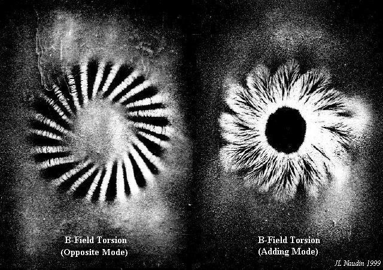
图 1 · 并排总览（黑白）——最直观的一张。左：中空环带，环上均匀排布粗短放射状条纹，中心留空。右：实心黑核 + 向外发散细密羽状纹。
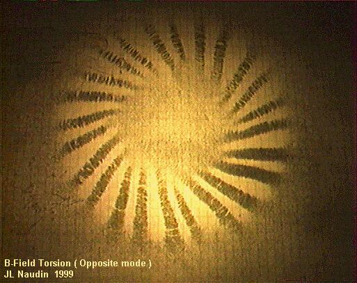
暗底 + 中心一片亮黄晕；从中心向外放射约 20 道楔形暗条纹，条纹粗、短、成对出现，中心没有实心核。

中心一圈极亮的圆盘（近过曝）；环外散出极细密的丝状／羽毛状放射纹，长而密、逐级分叉。同一图案在黑照片里中心呈实心黑核（口径差异见下方「两条边界」）。
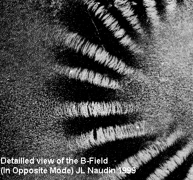
规则、等间距的弧形粗条纹带，明暗交替、整体呈梳齿状排列；条纹端部可见细丝。间隔均匀 = 磁场沿圆周周期性强弱交替。

右侧一块实心黑核，四周大量从中心向外辐射的细密长条纹，且逐级分叉（一条分成两条、再分成四条）⇒ 树状／羽毛状。无周期性交替。
📷 图源：JLN Labs（Jean-Louis Naudin，jnaudin.free.fr），1999 年磁场观察膜实拍；本文件已归档于 jnaudin/磁场显影两种模式_图/（页内副本在 figs/，改了 ASCII 文件名以便发布）。同目录另有 dualvtx.jpg —— 那是 JLN 的 CGI 概念画（"Double Vortex concept"），不是实拍，故不采入判据。
🔗 这批照片的原始出处：JLN Labs 原站已整体镜像到本机 ——
jnaudin/HTML镜像/00_总目录导航.html
（file:// 链接，需在本机浏览器打开；用内置预览面板打开本页时，浏览器的安全策略可能会拦下 file:// 跳转）。
物理机制：只差一个接线，场为什么完全不同
依据安培环路定律（电流产生环向磁场）+ 叠加原理。设相邻双线间距 d、电流 I，只看两根线正中间那一点：
| 接法 | 中点处两场的关系 | 后果 |
|---|---|---|
| Opposite（异向） | 方向相反、大小相近 ⇒ 相互抵消 | 双线之间净场被大幅削弱；磁通被挤到每根导线自己近处，形成绕单根导线的小环；整个绕组的宏观环向磁场被削弱 ⇒ 剩下的主导成分是沿圆周周期交替的径向条纹 |
| Adding（同向） | 方向相同 ⇒ 直接相加 | 双线之间磁场叠加增强；整圈导线相当于一个电流加倍的等效单绕组，宏观环向磁场显著增强，磁场向环体中心与两端汇聚 ⇒ 显影成「中心暗核 + 树状分形分叉向外辐射」= 向外辐射的树状径向多极（但极界分叉、不成规整阵列） |
👉 一句话：同在两根线正中间那一点，异向相消、同向相加 —— 这一个判据决定了两张显影图的全部差异。
🔬 观察膜是怎么"看见"磁场的：膜内是悬浮在油里的镍微片 —— 磁力线平行膜面时镍片平躺反光（该处发亮）；磁力线垂直膜面时镍片立起（该处发暗）。所以 亮 ≈ 面内场／暗 ≈ 法向场（极区）。
与瑟尔 SEG 的对应 —— 回答「SEG 是不是『环形线圈双线并绕 + 相邻两线电流相反』？」
本页判断：是（Opposite Mode）。置信度：高 —— 但属显影类比推断，不是对瑟尔原机绕组的直接取证。
| # | 证据 | 说明 |
|---|---|---|
| 1 | 本页 ③ 中层 Phasing 的设计本身 | 环向 torus（36 匝 = 4 象限 × 9 匝）+ 双线并绕 + 相邻异向电流 + 四象限独立控流，设计目的正是"在已饱和的基底上写出面内径向多极"——与 Opposite Mode 的定义逐字吻合。 ⚠️ 订正：早先写的「四相 0/90/180/270°」是误读，四个象限各自走一个独立频率（见 ④-bis） |
| 2 | Naudin 1999 独立实测（本页 5 张照片） | 只有 Opposite 才产生「沿圆周规则、等间距交替的放射状条纹」—— 极界清晰、极数可由绕线数直接算出，这是能写入等距极阵列的特征；Adding 给出的是中心暗核 + 树状分叉的辐射纹，极界分叉、极数不定。 ⚠️ 订正：早先写「Adding 没有径向多极」是错的（它同样是径向结构，只是不成规整阵列）；结论不变，依据改准 |
| 3 | 《重点：充磁线圈方案三》所附 John A. Thomas 1990 图 | 图上标注 "34 DECERNABLE POLES / 136 ÷ 4 = 34" —— 34 极正是本页 ③④⑤ 用的写入／滚筒极数，两条独立来源在此对上 |
| 4 | 与 ⑥ NaudinCmp「Adding = 中心暗核 + 树状分形分叉」的呼应 | 本页 ⑥ 的 NaudinCmp 画的就是这两种模式的重绘；本卡补上真实照片作为判据底本 |
⚠️ 两条必须写清的边界（勿省）
① 薄膜类型／曝光会翻转中心的明暗，不能只看"中心亮还是暗"：彩色原片 bftadd.jpg（图 3）的中心是亮的（镍片平躺 ⇒ 面内场为主），而黑白片 mgaddbuk.jpg（图 1 右）的中心是实心黑的（镍片立起 ⇒ 法向场为主）。同一模式、两张片子、中心明暗相反 ⇒ 说明拍摄所用观察膜口径或曝光不同。因此稳定可用的判据是「条纹形态 + 整体结构」而不是中心明暗：
Opposite = 粗短、规则、等间距辐条 + 中空环带； Adding = 中心暗核 + 细密、树状分叉、向外的羽状长条纹。
② JLN 的解释框架不采信：他把该图案解释为"以太张量应力／轴子场／时空扭曲"，属未经主流物理验证的推论；本页只采信可复现的观测事实——两种接法稳定给出两种截然不同的图案。这一点与项目 08_灵视与可仲裁性 的口径一致：现象入档，解释存疑。
④ 充磁时序仿真 + B-H 轨迹
左侧：三路电流时序（占空比 < 2 秒）＋可拖拽时间游标，三行自上而下 = 外层 DC → 中层 Phasing → 内层 AC（屏幕 +y ↑ = 内 → 中 → 外）。中部：主轴 B-H 平面（主轴 = 外层 DC 的轴向，也是最终剩磁方向）。右侧：径向分极写入小图（Phasing 的效果发生在与主轴正交的方向，故单独展示）。
阶段 0 · 待机
磁芯处于退磁态（H=0, B=0）。点击"播放完整时序"或直接点上方阶段按钮跳到任意步。
实时读数
| 量 | 值 |
|---|---|
| 主轴 H | 0 A/m |
| 主轴 B | 0.00 T |
| 剩磁 B_r | — |
| 径向分极 | 未写入 |
④-bis ★ 中层 Phasing 波形订正 —— 幻方「四相数字」sin 复合波
⚠️ 本轮订正：上面 ④ 时序图里中层 Phasing 原先画成「四段半正弦脉冲 · 相位 0/90/180/270°」——
那是早先的误读。源文档只写了「四段独立控流」与「上套 Phasing 0° / 下套 90°」。
⚠️ 本轮再次订正（2026-10-09 二轮）：文档里那个 90° 是运行时驱动自转用的
（原文：90° 相位差 → 自转驱动力）；而老师给的充磁波形图用的是「上套 0° / 下套 180°」—— 互为反相。
两者是两件事，不要混。正确模型：四象限 = 四个独立绕组，
各走一个由幻方数字定出的独立频率，4 路 sin 相加 = 充磁复合波。
四阶幻方
| 幻方阶（类型） | level-2 数和 | 四相频率（Hz） | 波形 / 侧纹形态 | 对应机型 |
|---|---|---|---|---|
| 三阶（奇阶） | 15 | 17 / 19 / 21 / 23 | 四路互质 ⇒ 周期 2π、无小重复单元；疏而深的尖峰、上下严格对称 = 驻波 | 炼丹 / Bedini 式自激电动机 |
| 四阶（双偶阶） | 34 | 34 / 68 / 102 / 136 | = 34 × {1,2,3,4} 的谐波列 ⇒ 严格周期 2π/34，子波不断复现 = V 字（>>>）条纹循环 | SEG（瑟尔机） |
| 六阶（单偶阶） | 666 | 39 / 147 / 186 / 333 | 全是 3 的倍数 ⇒ 周期 2π/3，条纹密度远高于四阶、仍保留 > 字斜纹 = 鱼骨纹（147 / 186 为对冲频率） | IGV（飞碟滚筒片） |
把四相式直接代进 Wolfram Alpha 即可复现同一波形：plot (sin(34t) + sin(68t) + sin(102t) + sin(136t)) for t from -pi to pi（四阶）。
本页画布用同一式子实时重算，不是贴图。
★ 三条关键设计规则（其中第 1 条能凭波形一眼判废）
| # | 规则 | 后果 |
|---|---|---|
| 1 | 四路必须全部用 sin，不许混 cos | 只要有一路换成 cos（把该路移相 90° 就是：sin(ft+π/2) = cos(ft)），上下半边的包络就不再镜像，侧纹出现 「断纹路」 ⇒ 充磁失败。这是唯一能只看波形就判废的判据（见下方反例图）。⚠ v3.52 订正：本行原写「或某一套线圈反接成 cos 相」，这个说法是错的 —— 线圈反接 = ×(−1)，sin(ft+π) = −sin(ft) 仍然是 sin，那正是本表第 3 行的 180° 反相档，本身完全合法；要变 cos 只能移相 90°。两者后果天差地别：反相 180° 是 ⑬-ter 镜像法的工具，移相 90° 才判废。 |
| 2 | 四象限 = 四个独立绕组：36 匝 ÷ 4 = 9 匝/象限 | Phasing 电源通道数 = 4（不是 1，也不是 2）。四路各自独立可调，这是「雕刻任意磁极数」的硬件前提。 |
| 3 | 充磁：上套 0° / 下套 180°（同一复合波、互为反相，上半边 = − 下半边） 运行：上套 0° / 下套 90° |
180° 反相 ⇒ 上下半边严格镜像 ⇒ 上下对称驻波、磁环全厚度一次写入 —— 老师给的波形图用的就是这一档。 90° 正交是文档给运行时的（产生切向驱动力矩），不是充磁档；充磁若用 90°，下半边变成 Σcos（正交相），上下不再镜像（见 ④-ter 可实时切换对照）。 |
🔑 与视图③「双线并绕、相邻异向」的关系：③ 讲的是绕线拓扑（线的接法，决定产生径向多极还是中心黑洞）， 这里讲的是电激励波形（四个象限各送什么频率）。两者是正交的两个维度，必须同时正确：绕对了但波形混了 cos → 断纹路；波形全对但线接成同向 → Adding Mode 中心黑洞。任一错都报废。
④-bis 附图 —— 三种幻方的复合波与侧面三明治磁场示意（9 张 · 含 2 张反例）
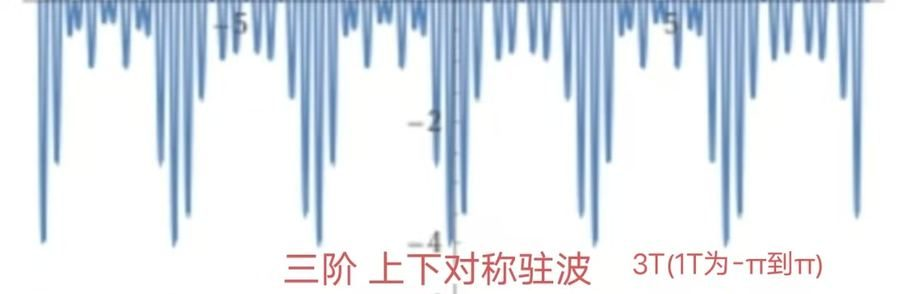
四路互质 ⇒ 一路不重复，尖峰疏而深、上下严格镜像。窗口取 3T。
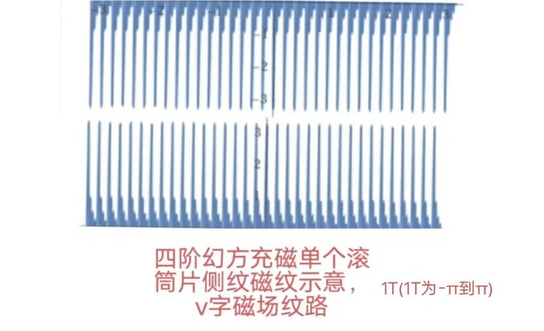
单个滚筒片侧纹磁纹示意，1T 窗口；上下两张分别是上半边 / 下半边，互为镜像。
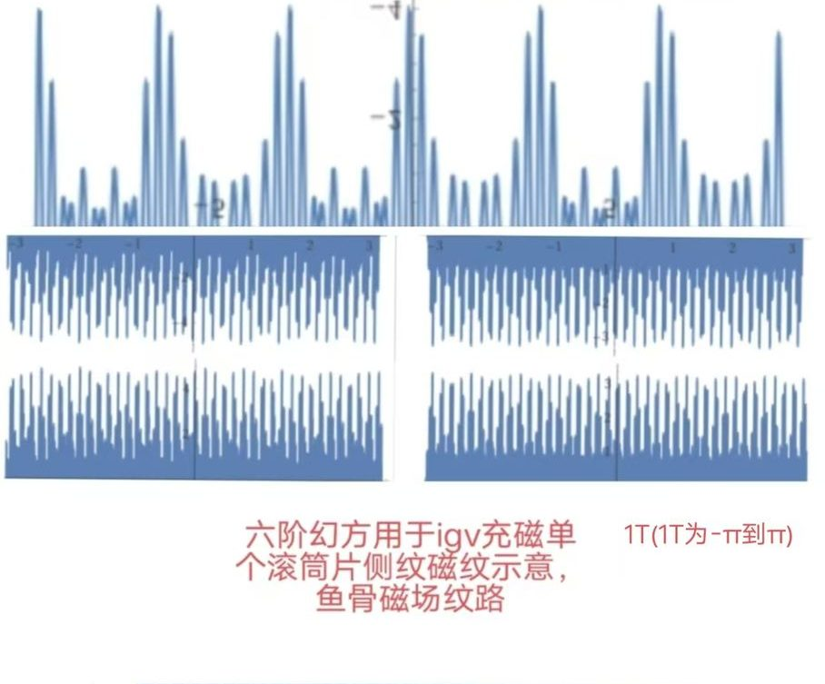
与①②出自同一张总图：条纹密度明显高一档，仍保留 > 字斜纹。
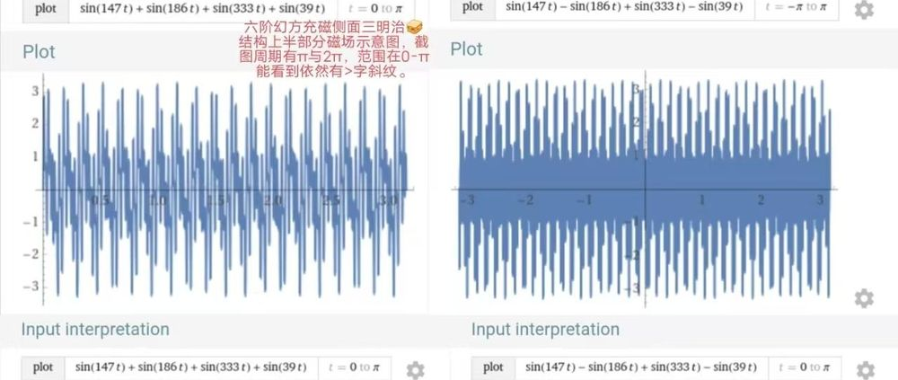
注意：即使只截 0–π 半周期，依然能看到 > 字斜纹 —— 斜纹不是错觉，是错开频率叠加的必然结果。
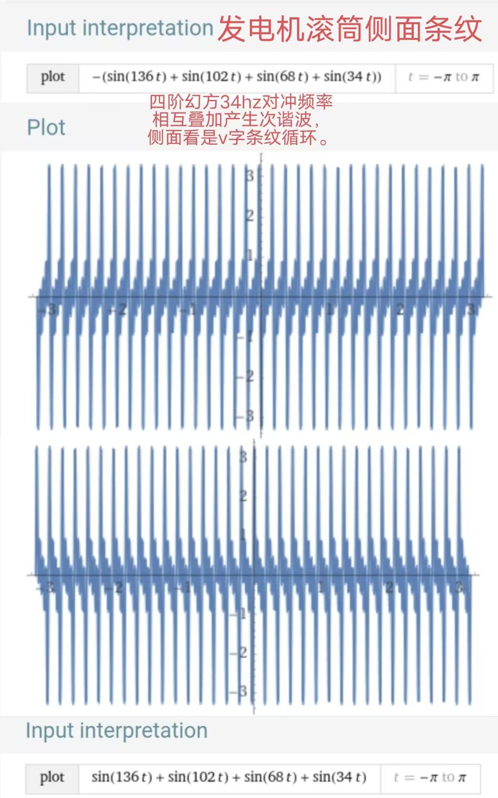
上 = −(Σ sin)、下 = +(Σ sin)，两张镜像叠成一张 —— 这就是「三明治」两套煎饼盘的实际电激励（DC 整流前的 AC sin 复合波）。
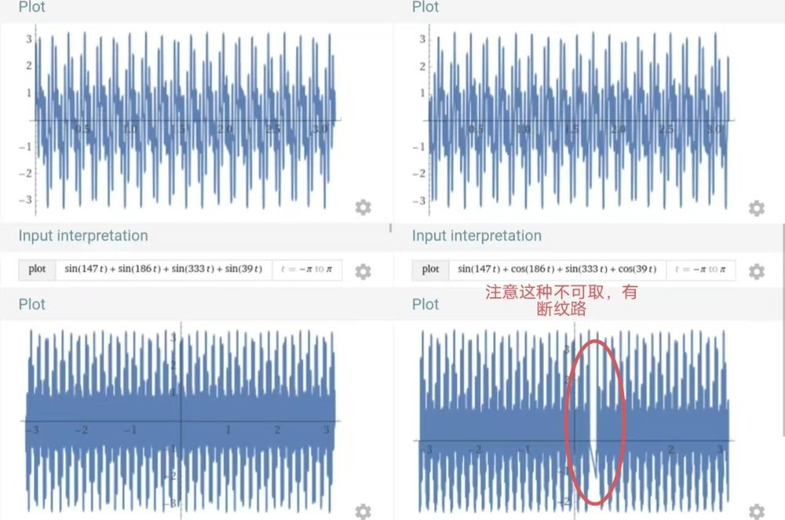
右下角
sin(147t) + cos(186t) + sin(333t) + cos(39t)，红圈处出现明显 断纹路。编者批注：「注意这种不可取」。上排 4 格的对比也说明：仅符号翻转（±sin）仍是连续的，一旦换 cos 才断。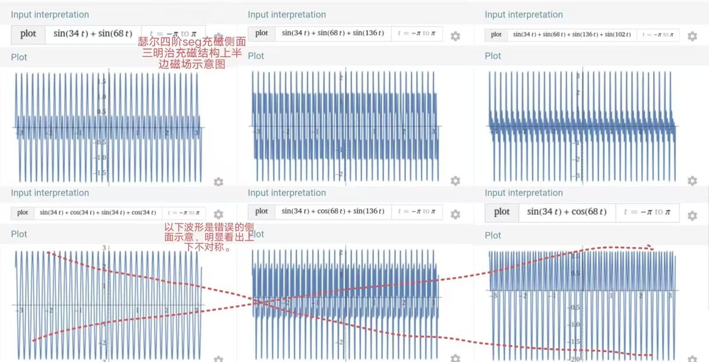
上排逐项增加，条纹逐步成形；下排是错误示例（混入 cos），红虚线画出上下包络不再重合 ⇒ 上下不对称。
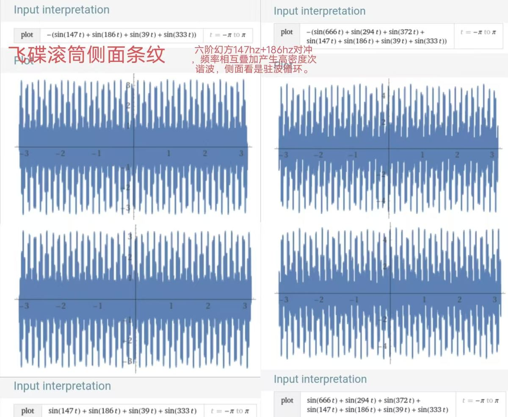
右式多出 666 / 294 / 372（294 = 2×147、372 = 2×186、666 = 294+372）。147 与 186 是"对冲频率"，叠加出高密度次谐波。
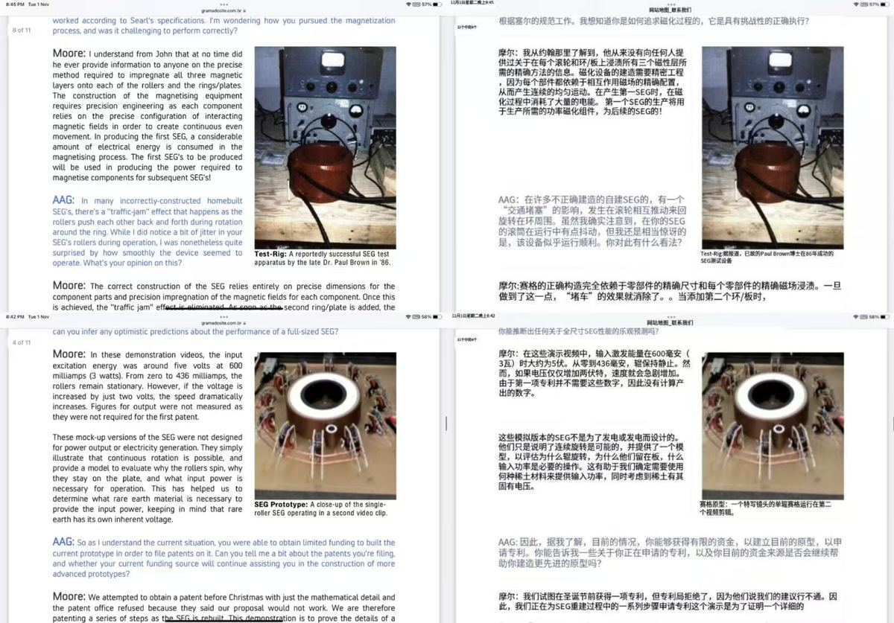
S. Moore / AAG 访谈（含 86 年 Paul Brown 试验台照片）。关键表述：正确构造取决于零件精确尺寸 + 每个部件磁场的精确浸渍；做到之后"交通堵塞（traffic jam）"效应就消失了 —— 即滚筒不再在环内互相推挤抖动。另：输入激励约 5 V / 600 mA（3 W），0 → 436 mA 电流平滑上升、再加 2 V 转速骤增。
底本：老师提供的 6 张示意图（瑟尔技术总结SEG-Concept-Review/*.jpg），已压缩收录到本页 figs/magic_*.jpg。
其中「三阶 / 六阶 / 四阶 三合一」长图已按红色标题行自动切成 ①②③ 三张独立面板。
中环 Phasing torus 四相绕组规格 + 外环 DC 匝数口径
下面是老师本轮给的口径，以及它与项目内既有 md 记录的差异与量级校核。
老师口径（充磁机）
| 项 | 规格 |
|---|---|
| 中环 phasing torus coil | 36 匝圆环线圈；分 4 个象限 → 36 ÷ 4 = 每象限 9 匝；每个象限是一个独立绕组（= 4 个独立通道） |
| 为什么是 9 | 9 的倍数是这套体系里的「好数字」——Keshe 能量单元环形线圈取 81 匝 / 144 匝，都是 9 的倍数 |
| 外环 primary D.C. coil | 示例 72 匝（建议取 72 的倍数；依 Tesla 的 3-6-9 数字偏好） |
| 径向顺序（外 → 里） | primary D.C. coil → phasing torus coil → A.C. coil |
| 轴向/线径 | 内层 AC 与外层 DC 都是轴向线圈；DC 匝数多、线径粗（承受大电流充磁）；AC 线径细，且应与相位圆环线圈同线径 |
⚠️ 与项目内既有 md 的口径冲突（勿擅自合并）
| 来源 | 外环 DC 匝数 | 电流 |
|---|---|---|
| 老师本轮口径 | 72 匝（72 的倍数） | 脉冲（充磁机惯例） |
| 《…三层同轴充磁的 COP 革命》§67 | ~2000 匝 粗铜线 | DC 100~150 A |
| 《SEG充磁磁粉配方…》§99 | DC 2000 匝 + AC 1000 匝 | 4 独立绕组 · 水冷 |
📐 本页量级校核（按磁路 ℓ = 0.4 m 估）：要充钕铁硼需 H ≈ 35.9 kOe = 2.86×10⁶ A/m，即 N·I ≈ 1.14×10⁶ A·t。
· 72 匝 ⇒ 需 ≈ 15.9 kA 脉冲（正是工业充磁机的典型量级 ✅，与「DC 脉冲充磁」自洽）
· 2000 匝 ⇒ 需 ≈ 571 A；而文档给的 100~150 A 只有 N·I = 0.25~0.30×10⁶ A·t，折合 7.9~9.4 kOe ⇒ 只够铁氧体 / 铝镍钴，不够钕铁硼。
⇒ 两个数字不是同一台机器的两种说法，而是「少匝数 + 大脉冲电流」与「多匝数 + 稳态小电流」两种电源形态；要做同一件事，N·I 必须相等。此处留作待老师定夺项，本页不擅自改写 ① / ⑦ 里的 2000 匝。
④-ter ★ 波形发生器 —— AC 原始波形 + DC 整流脉冲（本页自绘，不依赖截图）
老师给的示意图里看不到"上套 0° / 下套 90°"那一档（90° 是运行时驱动自转用的）；给的是
「上套 0° / 下套 180°」互为反相的那一档。本卡片把两档都画出来，并且从数学式直接算——
不贴图、不受原截图分辨率限制。
v3.31 新增两档（老师 2026-10-10 追问「可能不是复合波、是单频 sin(34t)；或者不给你 3/4/6 阶的限制，怎样优化更好」）：
① 单频 · sin(34t)（真·非复合）与 ② ★ 自由优化 · 奇次 1:3:5:7 · 幅值 1/m（不受幻方约束）。
这两档只改本发生器，不动 ④ 时序与 ④-quater 的幻方档；完整分析与优化搜索见 ④-septies。
🔎 关于那张"断纹路"子图 —— 是采样走样，不是物理
《六阶幻方充磁侧面三明治》最后一张子图 sin(147t) + cos(186t) + sin(333t) + cos(39t) 上，
红圈处出现了一道明显的"断口"。从数学上讲这个函数处处连续，不该断。
真正的原因很可能是：最高频 333 Hz 在一个 −π→π 的窗口里要走 333 个整周期，
而绘图软件默认采样点数远远不够（每周期不到 2 个点）⇒ 走样（aliasing） ⇒ 视觉上出现断口/错位。
👉 用上面的「采样：Wolfram 默认级」按钮切一下、再切回高密度，就能亲眼看到
断口随采样率出现/消失 —— 同一个公式、完全不同的画面。结论：那条断纹不可作为物理判据。
| 幻方阶 | 最高频 f_max | Wolfram 默认级 ≈620 点 | 本页高密度 ≈18×f_max 点 |
|---|---|---|---|
| 三阶 | 23 | ≈ 27 点/周期 ✅ | 414 点/周期 ✅ |
| 四阶 | 136 | ≈ 4.6 点/周期 ⚠️ 临界 | 2448 点/周期 ✅ |
| 六阶 | 333 | ≈ 1.9 点/周期 ❌ 严重走样 | 5994 点/周期 ✅ |
反过来说，这也是本页坚持所有图都用 Canvas 实时算、不贴截图的原因之一。 凡涉及高频分量（六阶 f_max = 333）的图，用固定分辨率的截图看都会失真。
⚠️ 请务必与「规则 1」区分开 —— 两者长得像，成因完全不同：
规则 1（真物理）：某一路换成 cos ⇒ 上下两条包络线不再重合（上下半边不镜像）。
这是相位正交的必然结果，把采样率提到再高也不会消失，所以它是"只看波形就能判废"的硬判据。
本卡（数值伪影）：六阶那幅图的"断口/缺齿"是采样点不够造成的走样，提高采样率就消失。
⇒ 同一张反例图上可能同时存在这两种缺陷。上面 ④-bis 的第 ⑥ 张图（红圈断口）主要体现的是后者；
而规则 1 依据的是前者（看包络是否镜像，不看有没有断口）。不要把这两件事混为一谈。
④-quater ★ 三种充磁电流波形 → 充磁后的 B 场结构（磁力线 / |B| / 曲率）
拿到三种充磁波形之后，把它们落到磁环上，看磁环充磁完毕后的磁场结构。 模型：环被写成了 p 对极的径向磁化 M(θ) = M₀·cos(pθ)·r̂ ⇒ 外圆柱面等效磁荷 σ_out(θ) = +cos(pθ)、内圆柱面 σ_in(θ) = −cos(pθ)； 对全部面磁荷做二维库仑叠加得到 H，再用中点法（RK2）积分磁场线， 并沿每条线逐点算曲率 κ = |x′y″ − y′x″| / (x′² + y′²)3/2。
沿最长一条磁力线的曲率 κ(s)
| 幻方阶 | 基本角频率 f₁ | 建议极对数 p | 磁力线形态（本页仿真观察） |
|---|---|---|---|
| 三阶（驻波） | 17 | 9 对（18 极） | 极距大、磁力线长而缓 —— 与"驻波/疏而深"一致 |
| 四阶（SEG） | 34 | 17 对（34 极） | 极距 ~37 px，磁力线短、近似径向直出 —— 与「34 DECERNABLE POLES」对上 |
| 六阶（IGV） | 39 | 20 对（40 极） | 极密、线极短、κ 大 —— 与"鱼骨/高密度"一致 |
④-quinquies ★ 极带闭合性判据 —— 为什么 f₁ 是奇数时必须「充磁两个周期」
判据：绕环一周的 极带总数 N_band 必须为偶数（N 带 / S 带成对），
等价于 极对数 p = N_band / 2 必须是整数。
若 N_band 为奇数，绕一圈回到 θ = 2π 时，那里的极带与 θ = 0 处的极带同号（N 挨着 N）
⇒ 接缝处凭空多出一个"假 S" ⇒ 磁力线在接缝处无法对接、无法闭合
—— 这就是 seam defect（接缝缺陷）。
👉 把上面「极对数 p」滑块拖到 8.5 / 19.5，就能直接看到这个缺陷（极带数 17 / 39 为奇数）。
| 幻方阶 | 基本角频率 f₁ | 若取 极带数 = f₁ | 极对数 p | 单圈能否闭合？ |
|---|---|---|---|---|
| 三阶（驻波） | 17 | 17 带 | 8.5（非整数） | ✗ 不闭合 |
| 四阶（SEG） | 34 | 34 带 | 17 ✓ 整数 | ✓ 闭合 |
| 六阶（IGV） | 39 | 39 带 | 19.5（非整数） | ✗ 不闭合 |
⇒ 四阶恰好落在偶数上，所以 SEG 单圈即可闭合（并与史料「34 DECERNABLE POLES」对得上）； 而三阶 / 六阶的 f₁ 都是奇数，必须处理。上面 ④-quater 表里的「三阶 9 对（18 极）/ 六阶 20 对（40 极）」 用的就是下面的方案 ①（就近取偶），属工程权宜，不忠于 f₁。
三条闭合方案（请老师定夺取哪一条）
| 方案 | 做法 | 三阶结果 | 六阶结果 | 代价 / 要点 |
|---|---|---|---|---|
| ① 就近取偶 | 17 → 16 或 18；39 → 38 或 40 | 8 或 9 对 | 19 或 20 对 | f₁ 被改 ±1，不再忠于幻方频率；但结构最简单，上下两面一次写透 |
| ② 双周期 老师方案 |
写入波走 2 个完整周期 ⇒ 极带数翻倍 | 34 带 / 17 对 ✓ | 78 带 / 39 对 ✓ | 起点与终点恰好对接闭合（这正是老师的原话）；但极距减半 ⇒ 三阶会变得和四阶一样密， 与「三阶驻波·疏而深」的直觉冲突 —— 这一点需要老师判断哪个更重要 |
| ③ 轴向半极距补偿 | N_band 保持 17，上下表面错开 半个极距（δ 从 0 螺旋到 0.5） | 17 带 × 2 面 | 39 带 × 2 面 | 接缝处上表面的 N 正对下表面的 S ⇒ 三维上互补闭合，极距不变。 这正好就是 ⑨ 里 δ(z) 错极模型的「单向错极」档 |
★ 与 Searl 真值表的独立交叉验证 —— 老师这条判据与史料 100% 吻合
| 来源 | 定子极数 | 末位 | 闭合性（原书口径） |
|---|---|---|---|
| SEG 标准 | 4410 | 0 · 偶 | 闭合回路（落地、能量回收） |
| SEG 另一型 | 3990 | 0 · 偶 | 同上 |
| IGV 飞碟 | 2205 | 5 · 奇 | 开放锥体（升空、单向推力） |
真值表里全部 SEG 末位 = 0（偶）、全部 IGV 末位 = 5（奇）；且 SEG 全体 GCD = 30、
IGV 全体 GCD = 15。原书给这条的物理解释正是「末位 0 是闭合回路、5 是开放锥体」——
与老师从「磁力线能不能首尾对接」推出来的奇偶判据是同一件事，两条独立路径得同一结论。
（2205 = 3²×5×7²，各位数字和 = 9，可被 3 整除，同时满足 Keely 3-6-9 量子约束。）
🔎 溯本求源结论：《S.E.G. Concept Review》四册（共 437 页，John R.R. Searl 著）已逐册全文检索 ——
全书未给出 IGV 的磁极数（IGV 只有叙述性记载，被搜到的都是法律声明与项目进展）；
SEG 的结构数字倒给得很全：每根滚筒由 8 段（8 stacked segments）拼成、
plate 1/2/3 分别 12 / 22 / 32 根滚筒（共 66 根 = 528 段）、滚筒位置 30°（= 360 ÷ 12）、
段重 34 g、roller rotations on the plate's circumference = 6.6613。
⇒ IGV 的极数目前只能靠「f₁ → 极带数」这条推路线来定，史料帮不上忙。
④-sexies ★ 单频够不够？复合波好在哪？—— 老师四问之 ① ② ③
【答 ①】够 —— 但要先分清「时间频率」与「空间极数」，这一步最容易踩坑。
空间极数 p 由绕组几何 / 夹具几何决定，工业标准做法是
「叠片铁芯 · 槽数 ≡ 极数 · 槽内嵌导体 · 相邻极绕向相反 · 串联后一次脉冲放电」。
那个充磁脉冲本身只是一根单向尖脉冲，几乎没有「频率成分」可言，可它照样一次写出 8 / 10 / 16 极。
⇒ sin(34t) 单频在原理上完全够写 34 极，只需两个条件：
① 绕组几何本身带 cos(pθ) 的空间结构（或定子式轴向导体阵列）；② 波形被整流成单极性脉冲
（不整流 = 退磁，见 ⑥-quater）。
反过来更硬：若绕组是严格环形（toroidal）——导线只绕着环芯打转——那么任何波形（单频、复合、方波）
外部场都 ≈ 0，一个极也写不出来。⇒ 决定权在几何，不在波形。
【答 ②】有好处，但都不是「更多极」：
① 峰值因数额度 —— 四阶那四路是等幅的 34/68/102/136，叠加后是一串尖脉冲；峰值因数高于纯正弦
⇒ 在同等绕组发热（rms）下能给出更高峰值 H ⇒ 更容易一次推到饱和。
② 脉冲更窄、峰值更高 ⇒ 同样 rms 下峰值 H 更高 ⇒ 更容易一次推到饱和。
⚠️ 但极界陡度是「空间」性质 —— 由夹具 / 绕组的空间谐波含量决定，
不由时间脉冲宽度决定（下面的 cPole 把这件事量化了）。网络上「充得快 ⇒ 极界陡」的说法属营销口径，本页不采纳为机理。
③ 多频 ⇒ 分层深度（δ ∝ 1/√f）：对金属磁体有意义（NdFeB 在 1 MHz 下只写 0.6 mm 皮）；
对铁氧体其实意义不大 —— 1 MHz 下 δ ≈ 0.5 m，整块透明。⚠️ 这条对本项目（铁氧体）基本不成立，必须自曝。
④ 相位可扫 ⇒ 消除驻波固定节点：单一驻波在节点处的时间积分恒为 0，那一圈永远写不进去；
让节点随相位移动（行波 / 拍频）才能补上。
【答 ③】得先把「磁畴密度」这个词拆开 —— 见下面第二张卡片。简言之：
「材料内的磁畴数目」由晶粒尺寸决定（细晶粒 ⇒ 一晶粒一畴），与极数正交；
「圆周上的磁极数目」由夹具 / 绕组决定。工业上唯一被验证过的「兼顾」路线是
成型阶段用多极取向场预置易轴 + 后充磁一次写满（见 ②-ter），不是靠波形。
多极磁环的四种「磁路测试波形」—— 这是评价充磁质量的口径，不要与「充磁机输出电流波形」混写
| 波形 | 特征（原厂口径） | 极界陡度 | 谐波含量 | 典型应用 |
|---|---|---|---|---|
| 正弦波 | 连续平滑，正负峰自然过渡，无极值拐点；相邻极分布均匀、对称性好 | 最缓（过渡区最宽） | 最低（< 5%） | 低噪音 / 高精度伺服、编码器 |
| 梯形波 | 峰值区较平坦，上升 / 下降沿相对陡峭；极中心磁密保持稳定高值 | 中等 | 中等 | 通用电机 |
| 马鞍波 | 正负峰处轻微下凹或双峰；极中心磁密略低、两侧偏高 | 中等 | 中等 | 特定匹配场合 |
| 方波 | 近似「开关式」变化，极中心接近恒定并快速达饱和，极界清晰、极性分界明确 | 最陡 | 最高（15~25%） | 风扇 / 玩具电机等成本敏感场合 |
⚠️ 口径纪律：以上四种是磁路测试波形（用高斯计沿周向扫出的表磁分布），
不是「充磁机输出的电流波形」。网络上大量文章把两者混写。本页 cPole 用的就是这个（表磁分布）口径。
🔎 学术侧的一条冷水：D. Howe 1997（IEEE Trans. Magn.）对各向同性 NdFeB 的径向多极脉冲充磁夹具做了
设计方法与实验验证，结论是 —— 「即使磁体几乎被理想磁化（90% 体积饱和、其中 90% 基本是径向磁化），
其 emf 波形的谐波含量仍会显著偏离理想磁体（100% 饱和 + 100% 径向）所应给出的结果」，
且磁体尺寸越小、或在装配后再充磁，偏离越大。⇒ 「波形」是能设计的，「完美极界」是设计不到的。
★ 「磁畴密度最大化」有两种读法 —— 混着说就会得出「提高频率能增加磁畴密度」这类错结论
| 说法 | 量纲 | 由什么决定 | 怎么提高 | 与「多极径向」的关系 |
|---|---|---|---|---|
| 磁畴密度（材料内 · 磁学口径） | 个 / mm³ | 晶粒尺寸（细晶粒 ⇒ 一晶粒一畴）+ 取向度 | 粉末细化（HDDR / 快淬 / 球磨）、控烧结、退火 | 🟡 正交：多极是宏观极阵列，与晶粒尺度无关 |
| 磁极密度（圆周上 · 电机口径） | 极 / mm | 夹具槽数 ≡ 极数、绕组绕向、极距 | 多极夹具；但极距越小漏磁越大、效率越低 | ✅ 就是它本身 |
| 磁畴密度（老师 docx 的语境） | bit / 面积 | —— 原文说的是「增加存储密度 / 提升存储性能」，属磁存储语境 | ❌ 是另一门学科，不能直接搬来论证磁环多极 | |
⚠️ 本页必须说清的一条：老师提供的 docx 是 AI 生成的（老师已注明「源自我之前用 ai 写的笔记」），
它把「黄金角排布 ⇒ 磁畴密度最大化」直接接到了「提升存储性能」上 —— 那是磁存储（硬盘）语境。
而本项目关心的是磁环上的多极阵列。两件事不是一回事，本页不把两者等同。
✅ 但 docx 里另有一句是站得住的：「黄金角排布要达到磁化方向沿环形切线的效果，必须用同性磁性材料」
—— 与 ②-ter 的推理完全吻合，可作交叉印证。
✅ 而「极数越多 ⇒ 极距越小 ⇒ 单位圆周的畴壁越多」这条是成立的（工业 10 mm 直径最多约 6 对极；
磁编码器超多极环可到 400+ 极、最小极距 0.1 mm，见麦册 P16）—— 若这就是老师要的「密度」，那结论是
「提高极数」而不是「提高频率」，且受漏磁与工艺极限约束。
④-septies ★ 不受幻方约束能更好吗？ —— 单频 / 自由优化 / 素数互质 / 无理数比
老师追问（2026-10-10）：「要多一种情况考虑，可能不是复合波（3/4/6 阶），是单频，比如就用 sin(34t)；
或者假设不给你限制（3/4/6 阶）对应的复合波频率，你看怎样优化更好；允许你用其它算法得到的复合波；
是否考虑素数互质、无理数比等等。」
先把「时间频率 → 空间极图案」这一步写死（本页 ④-quater 一直把它列为待定项）：本卡借用 ④-quater 表的同一工作假设
—— 频率数值 ↔ 空间极带数（f₁ = 34 Hz ⇒ 34 极带 = 17 对），空间图案写作
M(θ) = Σ Ak·sin(fk·θ/2)。下面的每个数都能由这个式子直接算出 ——
但这条假设本身仍是待定项，且全程不含磁滞 / 涡流 / 各向异性，不是 FEA。
🔴 口径注意（v3.36 补）：这里的「Hz」是 Searl 的计数记法
（每圈周期数 @ 1 rev/s），不是电磁频率 ——
别与 ⑫ ⑤ 卡的 f_ac（真实时间频率，1 MHz – 3 GHz，只决定趋肤深度 δ）
混为一谈。两套「Hz」的对照表见 ⑫ ⑤ 卡「两个『频率』不是一回事」。
一、三个恒等式 —— 「三阶驻波 / 四阶 V 字 / 六阶鱼骨」到底从哪来
④-bis 用「驻波 / V 字 / 鱼骨」三个词描述那三张图，但没说它们从哪来。把四路 sin 加起来做初等和差化积，三个都出来了：
| 阶 | 四路频率 Hz | gcd | 空间周期 | 精确分解（θ = 机械角） | 由此得到的图案 |
|---|---|---|---|---|---|
| 三阶 | 17 / 19 / 21 / 23 | 1 | 2π（整圈一个单元） | sin17θ + sin19θ + sin21θ + sin23θ = 4·sin20θ·cos2θ·cosθ | 载波 20θ × 慢包络（20 = 四路频率的平均值）⇒ 整圈一个单元 ⇒ 就是「疏而深驻波」 |
| 四阶 | 34 / 68 / 102 / 136 | 34 | 2π/34（每圈 34 次） | Σk=1..4 sin(k·u) = sin(5u/2)·sin(2u)/sin(u/2)，u = 34θ | 严格周期、无包络 ⇒ 每 1/34 圈原样复现 ⇒ 就是「V 字 >>> 循环」 |
| 六阶 | 39 / 147 / 186 / 333 | 3 | 2π/3（每圈 3 次） | 无初等闭式，但 gcd = 3 | 每 2π 三个相同单元 ⇒ 就是「鱼骨」 |
★ 结论：「驻波 / V 字 / 鱼骨」不是三个形容词，而是 gcd 的三个取值。
gcd = 34 ⇒ 每圈重复 34 次（无包络）；gcd = 1 ⇒ 整圈一个单元（带慢包络）；gcd = 3 ⇒ 每圈重复 3 次。
⇒ 这正是「是否考虑素数互质」的第一层答案：三阶本来就是互质的（gcd = 1），互质买到的就是「驻波」。
⚠️ 附带一条量化：三阶那条包络 |4·cos2θ·cosθ| 在整圈上有 6 个零点
（45° / 90° / 135° / 225° / 270° / 315°），主瓣（0° 与 180°，峰 4.00）是次瓣（峰 1.089）的
3.67 倍 —— 这就是「疏而深」的精确含义，同时说明三阶的周向强度严重不均。
四阶无此问题（包络起伏恒为 1.00×，处处等强）。
二、优化：不给幻方约束，四路频率怎么选
| 方案（同一 34 极带） | 四路频率 Hz | S 对称性 0 = 方波型｜大 = 锯齿型 |
峰值因数 | 半高占空比 | 与理想方波的距离 | 形态 |
|---|---|---|---|---|---|---|
| 单频 sin(34t) | 34 | 0.000 | 1.414 | 66.7% | 0.447 | 纯正弦 —— 最温和（极界最缓） |
| 四阶现用（等幅） | 34 / 68 / 102 / 136 | 1.089 | 2.286 | 23.9% | 0.894 | 锯齿型 ⇒ 单向 >>>（与 ④-bis 的观察吻合） |
| 奇次 1:3:5:7（等幅） | 34 / 102 / 170 / 238 | 0.000 | 2.079 | 27.4% | 0.701 | 对称，但峰很尖（Gibbs 现象） |
| ★ 奇次 + 幅值 1/m | 34 / 102 / 170 / 238 | 0.000 | 1.215 | 92.2% | 0.226 | 方波极 —— 极顶平、极界陡 |
| 素数互质 2:3:5:7 | 68 / 102 / 170 / 238 | 0.623 | 2.269 | 26.5% | 1.180 | 比现用还差 |
| 无理 1 : √2 : √3 : √5 | 34 / 48.1 / 58.9 / 76.0 | 1.294 | 2.745 | 17.3% | 1.047 | 无空间周期 ⇒「极数」这个概念失效 |
三、★ 优化结论：真正起作用的不是「加频率」，而是「加权」
| 频率固定 = 34 / 102 / 170 / 238（奇次） | 峰值因数 | 半高占空比 | 与理想方波的距离 |
|---|---|---|---|
| 等幅 1 : 1 : 1 : 1 | 2.079 | 27.4% | 0.701 |
| 1/m = 1 : 1/3 : 1/5 : 1/7 | 1.215 | 92.2% | 0.226 |
| 1/m² = 1 : 1/9 : 1/25 : 1/49 | 1.276 | 80.1% | 0.356 |
| 频率固定 = 34 / 68 / 102 / 136（现用 1:2:3:4） | 峰值因数 | 半高占空比 | 与理想锯齿的距离 |
|---|---|---|---|
| 等幅 1 : 1 : 1 : 1 ★ 现用 | 2.286 | 23.9% | 0.613 |
| 1/m = 1 : 1/2 : 1/3 : 1/4（真锯齿） | 1.810 | 35.3% | 0.373 |
| 1/m² | 1.425 | 67.1% | 0.482 |
★ 三条可直接拿去用的结论：
① 单频 sin(34t) 够写 34 极（极数由绕组几何定，见 ④-sexies），而且是最温和的一档：S = 0（对称）、
峰值因数最低 1.414、半高占空比最高 66.7%。代价是极界最缓（纯正弦），且只有一个写入深度。
② 现用的四阶等幅 1:2:3:4 恰好是「锯齿型」（S = 1.089 ⇒ 半周期强烈不对称）。
这独立解释了 ④-bis 观察到的 ">>>" 单向条纹 —— 含偶次谐波 ⇒ 数学上必然不对称。
这不是巧合，是可以从频率比 直接推出来的，也与「V 字循环」的描述自洽。
③ 若要「对称齿轮极」，正解是奇次 1:3:5:7 + 幅值 1/m 加权：与理想方波的距离 0.894 → 0.226（降 75%），
半高占空比 23.9% → 92.2%（极顶由尖变平）。四路本就是四个独立通道（② 表写「4 个独立通道」「36 匝 = 4 象限 × 9 匝」），
幅值本来就是分别可调的 —— 所以这条不是纸上方案。
⚠️ 反过来也成立：光加频率、不加权，只会把脉冲变得更尖（等幅 1:3:5:7 的方波误差 0.701 比单频的 0.447 还差）。
「复合波」本身的收益是「峰值因数更高 ⇒ 同 rms 下峰值 H 更高 ⇒ 更容易一次推到饱和」，而不是「更方」。
四、素数互质 / 无理数比 —— 答案要分用途
| 用途 | 该用什么比 | 为什么 |
|---|---|---|
| 写极阵列 （充磁主档） |
必须是有理整数比，且 gcd 要尽量大 | gcd 决定空间周期：gcd = f₁ ⇒ 每圈重复 f₁ 次、图案处处等强；gcd 越小，图案越只在整圈才闭合， 周长上就出现慢包络（强弱瓣）；gcd = 1（互质）时包络最深；无理比则根本不存在空间周期 ⇒「极数」这个概念直接失效 （方波误差反而升到 1.047 / 1.180，比现用还差）。 |
| 匀场 / 退火 （辅助档） |
互质或无理比更好 | 准周期让极值位置随时间不断漂移、扫过周向每一个方位 ⇒ 把驻波固定节点造成的「死区」填掉、把磁畴抖松。 这正好对应 ④ 时序里的「阶段 2 · AC 高频抖松」（那一步本来就不需要写出图案）。 |
★ 因此建议走「两段式」而不是指望一个波形同时干两件事：
阶段 A（抖松 + 填死区）：用准周期（互质或无理）低占空比扫一遍 —— 目标是让每个方位都被越过 Hsat 一次，不求图案；
阶段 B（写图案）：用有理整数比 + 1/m 幅值加权把极阵列一次写定 —— 目标是极界陡、极顶平、闭合。
⚠️ 本页的 ④ 时序已经隐含了这个结构（阶段 2 抖松 → 阶段 3 写入），但两段用同一套频率；按本节结论，
两段的频率比应该分开设计。这一条是本节新提出的，未做实验验证。
纪律与边界（必读）：
① 全部结论建立在「频率数值 ↔ 空间极带数」这条工作假设之上（与 ④-quater 表同口径）；该假设本身仍是待定项。
② 「S / 峰值因数 / 半高占空比 / 与理想方波的距离」四项全部是对 M(θ) 这个函数本身的计算（numpy 独立复算，
与页面脚本同式），不含磁滞、涡流、各向异性、钉扎与饱和后的实际分布。
③ 「与理想方波的距离」= 双方归一到单位 RMS 后的 L2 距离；理想方波 = sign(sin(17θ))（34 极带）。
④ 「多频 ⇒ 分层写入」对本项目（铁氧体）基本不成立 —— 1 MHz 下趋肤深度 ≈ 0.5 m，整块透明（见 ④-sexies 自曝）。
本节所有「多频」的理由都不是分层深度，而是频谱形状（对称性 / 峰均比）。
⑤ 三阶那条包络恒等式是纯数学事实（已验证到 1e-14）；它「对应周向强弱瓣」这一步则依赖 ① 的假设。
⑤ 成品：磁齿轮啮合 —— 4410 极定子环 × 12 滚筒
⚠️ 本轮已订正：参考《滚筒轨迹融合工作台 SeArlRollerStudio》的几何——滚筒数默认 12（原工作台默认 n=4，即环上只有 4 个滚筒），定子环为 4410 极齿轮磁场（齿数可调、须为整数）。滚筒圆心公转半径 = R+r、滚筒自身反向自转，本征角速比 ω_自/ω_公 = (R+r)/r = n+1（标准外摆线，与工作台一致）。Phasing 相位差决定定子与滚筒极图案的错位量 → 切向力 T ∝ sin(Δφ)。
🆕 本轮订正（气隙）：滚筒外缘不再与定子环相切。按题述口径，两者之间恒留 6 mm，自内向外拆成四层：定子磁环本体 → 外包铜环边 3 mm → 空隙 3 mm → 滚筒外缘。图中新增右下角「气隙剖面」放大窗把这 6 mm 画出来（并标注 3+3 的尺寸链）；定子环上多出一圈铜色环带即 3 mm 铜环边，虚线圆为滚筒外缘所在半径，力线自铜环边外表面射出、跨过空隙落到滚筒内侧。
⚠️ 画布为示意：宏观几何（220 px 半径）与毫米级气隙无法同图等比；按真机折算 6 mm 只有约 2.6 px，肉眼不可见，故气隙按约 5× 夸大绘制，只为让四层结构可辨。
⚠️ 与瑟尔机的关键差别（本文件 ≠ 瑟尔机）：麦格雷博册子与本页 ③ 的充磁方案，全篇只有 2 种磁场 —— 径向多极与轴向 DC 充磁；瑟尔 SEG 的三明治是 3 种，多出的第 3 种是 AC 高频辐射充磁（内层 1–10 MHz 抖松磁畴，本文件完全没有对应工艺）。详见 ⑥ 对比视图。
运动学读数（几何取自滚筒轨迹工作台）
| 量 | 值 | 说明 |
|---|---|---|
| 定子齿数 N_s | 4410 | 整数；齿距 = 360°/N_s |
| 单齿齿距 | 0.0816° | = 360° ÷ N_s |
| 滚筒数 n | 12 | 环上均布 |
| 滚筒半径 r | — | 工作台约定 R = n·r |
| 公转 / 自转比 | 13.0 | ω_自/ω_公 = (R+r)/r = n+1 |
| 滚筒极数 P_r | 34 | 可调 |
| 机械平移 Δθ | 5.29° | = 相位差 ÷ (P_r/2) 📐 |
| N_s : P_r 的 gcd / lcm | — | gcd=1 才磁静音 |
| 滚筒↔定子气隙 | 6 mm | 3 mm 铜环边 + 3 mm 空隙 |
⚠️ 工作台的 n 指滚筒个数（默认 4 → 本页改为 12），R = n·r 是它的几何约定；本页把定子环的磁极数独立设为 4410（整数可调）。两者是不同层级的量，不要混为一谈。
静转矩曲线
T ∝ sin(Δφ_电)：90° 最大、0° / 180° 为零。拖动上方相位差滑块可实时对照。
磁静音校核：gcd / lcm
本项目推荐设计参数（自研「计算机搜索 300 万组合 + 制造成本分析」结论 · 非 Searl 原版）
原版三环滚筒数（一手原文）：Searl《Law of the Squares》原件 —— Left bottom = use 3 plates；Top right = use 12 roller sets per plate；Right bottom = add extra 10 roller sets to out going plates ⇒ plate 1 = 12 / plate 2 = 22 / plate 3 = 32，紧接原文 “The S.E.G. of a mains type output, contains no less then a set of 66 rollers.”；同系列物料清单写作 PLATE 1 / 2 / 3 ROLLER SETS = 12 / 22 / 32（Total component parts for 66 roller sets = 264，每滚筒 8 段 = 528 段）；2013 Unarius 演讲复述为 “12 Rollers orbit the inner most ring. 22 Rollers orbit the middle ring. And 32 Rollers orbit the outer most ring.”
| 环 | 原版 Searl（一手原文） | 本页推荐（本项目自研） |
|---|---|---|
| 外环 | 32 | 32 |
| 中环 | 22 | 21 |
| 内环 | 12 | 13 |
| 合计 | 66 | 66 ← 仅此数与原版相同 |
| 环 | 定子磁极数 | 滚筒磁极数 | 滚筒数 | gcd | lcm | 比例 |
|---|---|---|---|---|---|---|
| 外环 | 19 882 | 34 | 32 | — | — | — |
| 中环 | 12 286 | 34 | 21 | — | — | 外/中 = 1.52 |
| 内环 | 7 594 | 34 | 13 | — | — | 中/内 = 1.62 ≈ φ |
全部滚筒统一 34 极 → 一套充磁设备批量生产。⚠️ 三环分配与原版不同：原版为 内 12 / 中 22 / 外 32（等差 +10）；本页推荐为 内 13 / 中 21 / 外 32 —— 只有"总数 66"与原版相同。13、21 是相邻斐波那契数（中/内 = 21 ÷ 13 = 1.615 ≈ φ）；若第三项也取斐波那契应为 34（即 13 / 21 / 34，本项目另有该版），此处取 32 属"混合"（外环保留原版数）。⚠️ 定子极数一列（19 882 / 12 286 / 7 594）同为本项目按极数比反推，非原著直给。
⚠️ 上表 gcd 列由本页自算：三环定子极数皆为偶数，与 34 极的 gcd 全为 2，并不满足文档同时提出的"互质（gcd=1）"铁律——两条规则在推荐方案里互相冲突（详见视图② 校核表）。同理，本页默认的 4410 也是偶数，gcd(4410, 34) = 2；若要两者兼容可取奇数（如 4409 为素数 → gcd = 1）。
⑥ 对照：麦格雷博「径向斜充磁多极」 vs 瑟尔 SEG 磁环充磁
资料源：《充磁 麦格雷博电子（深圳）有限公司介绍册 · 2024-01 更新（外发版）》（32 页 · P12 磁化线圈类型 / P13 整体充磁原理 / P14 线圈实物 / P15 充磁仿真 / P16 磁编码器超多极磁环 / P17 双码道磁强计 MF-301R / P18 整体充磁实例—内转子式 11 种错极）。左图为该册工艺的重绘示意（径向多极环 + 内转子 11 种错极冲片几何 + 由复合波塑形的错极轨迹），右图为 J.L. Naudin 1999 年两种双线并绕磁场显影模式的重绘，并对应到本页 ③ 的 Phasing 环形 torus 双线并绕 层。
以下为人工比对结论，非原文表述：麦格雷博册通篇是工业充磁工艺（怎么做出来），瑟尔 SEG 三明治是一套特定几何 + 特定时序的三层充磁方案（要做成什么）。两者在"径向多极"这一层是同一物理、同一工艺门类；差异集中在磁场种数、驱动源、相位错位机制、以及 SEG 侧完全缺失的公差与检测口径。
⑥-ter ★ 充磁后磁纹到底什么走向？—— 俯视图（横截面）与侧视图（外柱面展开）
老师指正：网页早先把「错极 / 斜充磁」画成斜的，那会误导 —— 充磁后的磁纹在俯视图上是【径向辐射向外的直条】。
依据 figs/searl_roller_axial.jpg（三联照：上 = J.L. Naudin 1999 观察膜 · 下左 = John A. Thomas 1996 真机 34 极 · 下右 = 径向直辐条示意）。
物理上这是必然的：滚筒是纯径向磁化 M = M_r(θ,z)·r̂ ⇒ 任一 z 截面上磁化方向都沿半径
⇒ 俯视图上只能看到沿半径的直条，与有没有错极工艺无关。
那么侧视图呢？把外柱面摊开（横轴 = 圆周角 θ、纵轴 = 轴向 z），极带边界
θ_k(z) = ( kπ − 2π·δ(z) ) / p：δ(z) ≡ const ⇒ 竖线（平行于轴）；
δ(z) 线性 ⇒ 斜线（这才是「斜充磁」的斜）；δ(z) 折线 ⇒ 折线（V 型 / 双 V 型）；
δ(z) 段间跳变 ⇒ Z 形台阶（双一型）。
⇒ 「错极 / 斜充磁」的「斜」只在侧视图上看得见；俯视图永远径向直。
换句更实用的：观察膜贴端面看到的是俯视图，贴外柱面看到的才是错极。
⑥-bis-2 ★ 11 种「错极 / 斜充磁」的统一相位模型 —— 全部化为【写入相位沿轴向的分布】δ(z)
麦格雷博册 P18 列了 11 种错极名称（V 型 / V+一型 / 双 V 型 / 双 V+一型 / 多 V 型 / 双一型 /
U+一型 / 单向错极 / V 型错极 / AB 对称错极 / 不对称错极），但全册没有给出统一的成因模型。
本区把它们统一写成同一个函数：
θ_k(z) = ( kπ − 2π·δ(z) ) / p，其中 δ(z) 由四个自由度拼出 ——
① 段数 nSeg（沿轴向分几段写）、② 相位 ph（同相 0 / 反相 1 = 半极距）、
③ 周向错移 ps（斜极）、④ 幅值 am（这正是「AB 对称」与「不对称」的分野），
再叠加 ⑤ 该段幻方阶的整流脉冲细纹（来自 ④-bis 的复合波）。
⚠️ ① 视角：本区的图是外柱面展开（横轴 θ 连成一周 · 纵轴 z 是轴向），
不是「正视图」—— 正视图宽 = 直径 2R、有透视压缩、只露前半圈；柱面展开宽 = 周长 2πR、
极带等宽、便于计量。② 身份：这 11 个名称来自麦册 P18「内转子式」，是通用转子错极工艺的分类，
不是瑟尔滚筒的原图或复原 —— 瑟尔至今没有公开的侧面磁纹照，而俯视图永远只有「径向直」。
所以本区正确的身份是「错极工艺的相位参数化模型 / if 工具箱」：若某台机器用过某一型，侧视磁纹就长这样。
③ 限度：它只解释几何形状，不预测极强分布与退磁 —— 那些要真三维 FEA。
📐 怎么一眼读这张图：红带 = N 极带、蓝带 = S 极带，带的边界线就是「磁极边界轨迹」。 右栏给段数、每个站点的 (z, ph, ps, am) 与上下表面 / 中截面的 δ 值。点下方 11 个缩略图可快速比较 —— 折点数由「相位翻转次数」决定（V 型 1 折 / 双 V 型 2 折 / 多 V 型 ≥3 折）； 斜不斜由 ps 的单调性决定（单向错极 = 单调 ⇒ 斜直线；AB 对称 = 先增后减 ⇒ Λ）； 台阶 vs 连续由 ps 是否在段间跳变决定（双一型 = 中截面直接跳半个极距 ⇒ Z 形台阶）。
J.L. Naudin 1999 · 两种双线并绕磁场显影模式（本页重绘） ⚠️ Adding Mode 的形态已于 v3.8 订正
⑥-quater ★ 充磁到底是怎么写上去的？—— 原理 · 整流 · 工业界（麦格雷博等）的标准做法
这一区回答三个问题：① 上面 ⑥-bis-2 那张图到底是什么视角、画错没有（见其 desc 里的三条限定）；
② Phasing 环形线圈 + AC 复合波 + DC 整流，凭什么能让夹层磁环长出那种纹理；
③ 要是不做 DC 整流会怎样 —— 以及工业界到底怎么给磁环写多极径向。
⚠️ 其中「整流」是本页的机理假设，不是 SEG 原著的设备描述（原著没有整流器电路）；
而且 SEG 的 A.C. 只有 100~200 mA @ 1–10 MHz，量级上远不足以翻转钕铁硼磁畴（需 kA 级 / ~2.4 T / ms 级脉冲）
⇒ 更合理的口径是「外层 DC 脉冲负责写磁，内层 AC 只做抖松磁畴的助剂」，与本页 ⑦ 的分层饱和判据一致。
📌 三句话结论：
① 磁纹只能长在「外柱面」上。俯视图（贴端面）永远径向直 —— 因为滚筒是纯径向磁化 M = M_r·r̂；
错极的「斜」，只在把外柱面摊开（θ×z）时才现形。麦册 P18 底排 5 张实物照就是贴在圆柱外表面拍的，
看到的正是「斜 / V 折 / 竖」—— 与 ⑥-ter 右半、⑥-bis-2 完全同构。
② 工业写多极靠「夹具几何」，不靠「波形」。标准做法 = 硅钢叠片铁芯、槽数 ≡ 极数、槽内嵌导体、
相邻极绕向相反、串联后一次脉冲放电（相邻异向 = Naudin 的 Opposite Mode）。要写斜极，就在空间上给角：
伺服在放电毫秒窗口内同步旋转（连续斜极）／轴向分段各转一个角后粘接（分段转位，量产主流）／内外轭左右各斜一半 + 隔磁环（V 型，专利 CN121689689A）。
③ 不整流 = 退磁，不是充磁。AC 每半周把上一半周写进去的翻回来 ⇒ 磁畴随机化 ⇒ ⟨M⟩ → 0。
工业上「交变 + 逐级衰减到零」正是退磁机的原理；而 RLC 放电本身是衰减振荡（会反向），
所以脉冲充磁机要用 IGBT 截波在首峰切断，保证单向 —— 这就是「整流」的工业对应物。
⇒ 老师的直觉成立：不做整流，就没有稳定的径向多极。
🔎 还有一处本页必须自曝的物理疑点：严格意义的环形（toroidal）绕组，外部场 ≈ 0 —— 磁通闭合在环芯里，它对环外几乎是「隐形」的，根本写不出径向多极。 能写多极的是「沿环面走、含径向分量」的绕法（Rodin 式），或者干脆是定子式轴向导体阵列（工业标准）。 ⇒ 所以「Phasing 环向 torus 写出径向多极」这句话，必须附带绕线拓扑的前提； 若 Phasing 真是教科书式环形绕组，那它做的是别的事（环向偏置 / 抖松），写多极的应是内外两层煎饼。 这一条列入 ⑧ 的可证伪清单。
11 种错极名称 ↔ 工业实现 ↔ 本页模型参数（三列对照）
| 册上名称 | 工业上怎么做出来 | 本页模型里对应什么 |
|---|---|---|
| V 型 | 磁钢 / 绕组左半斜一个方向、右半反斜（或分块移位成 V） | ps 折线，1 折 |
| V + 一型 | V 段 + 一段直（一字段） | 1 折 + 一段 ps = 0 |
| 双 V 型 | 轴向四段：斜− / 斜+ / 斜− / 斜+ | 2 折 |
| 双 V + 一型 | 双 V 再插直段 | 2 折 + 直段 |
| 多 V 型 | 段数更多 ⇒ 密集锯齿（= 连续斜极的密集离散化） | ≥ 3 折 |
| 双一型 | 两段直 + 段间跳半个极距 | 段间 ps 跳变 ⇒ Z 形台阶 |
| U + 一型 | 段间错移量大 + 直段 | 大跳变 + 直段 |
| 单向错极 | 连续斜极：伺服分度机构在放电的毫秒窗口内同步旋转工件（~21°） | ps 单调 ⇒ 斜直线 |
| V 型错极 | 内外轭左斜 / 右斜两半 + 中间隔磁环，一次写出 V（专利 CN121689689A） | ps 先增后减 ⇒ Λ |
| AB 对称错极 | 分段对称分布（上下镜像） | am 对称 |
| 不对称错极 | 分段非对称（如 3 段按 1 : 2 : 1 分配角度） | am 不对称 |
📐 一句话记法：工业是把角度做进「夹具几何 / 装配转位」里；本页是把角度做进「写入相位随时间偏移」里 —— 二者数学同构（见 ⑥-quater 右栏路径 1 与那条 ★ 结论）。
📄 底本：麦格雷博册原页照（P12 充磁线圈类型 · P16 超多极磁环 · P18 内转子式 11 种错极）+ ★ 瑟尔滚筒片俯视磁极观察照
上面左侧 Canvas 是重绘示意。为免「重绘即失真」，此处把三张册子原页照 + 一张瑟尔滚筒片实物观察照一并贴出，供逐格核对 —— 尤其 P18：11 种错极在原页里是冲片几何 + 实物观测膜轨迹 + 表磁波形三样东西，不是「显影胶片上的 S 形折线条纹」。
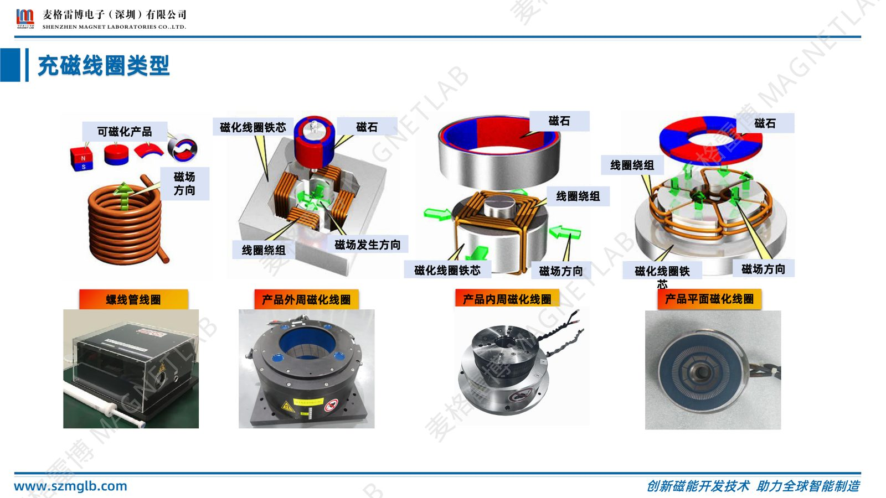
每类都画全了「线圈绕组 + 磁化线圈铁芯 + 磁石 + 磁场方向箭头」四要素：① 螺线管 ② 产品外周 ③ 产品内周 ④ 产品平面；下方是对应实物照。
本页 ① 三明治 = ② ③ ④ 三类的复合：Phasing 写外包面上轴向外推的径向多极（②），磁环内孔的 A.C. 写内表面（③），上下两套煎饼盘的 D.C. 写两个端面（④）—— 这是本页的推断对应，麦册原页并未如此论述。
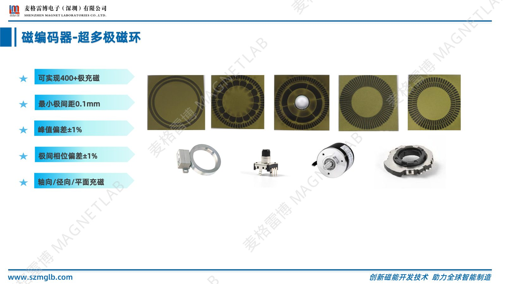
5 张绿色磁场观察膜照：整圈全是径向交替的密集条纹（越密极数越高）。左侧四条硬指标：400+ 极 · 最小极间距 0.1 mm · 峰值偏差 ±1% · 极间相位偏差 ±1%；下方为编码器磁环实物。注意第 4 张是整盘平面多极（非环带）。
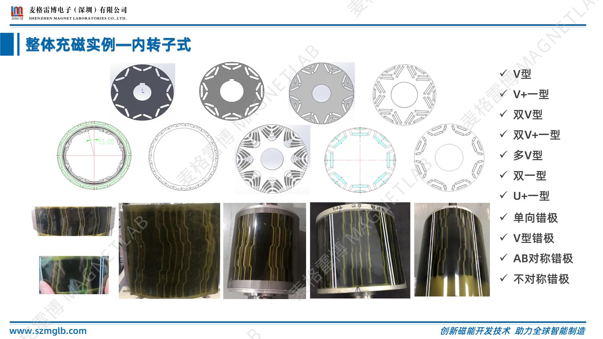
上两行 = 转子冲片 / 磁钢槽布局几何（V 形槽、一字槽、双列、U 形、单向斜、AB 对称…）；下排 = 实物照 + 磁场观测膜轨迹（沿轴向走波浪 / 斜线）；右侧 11 个名称照录。
📌 本页 ⑥ 的 B / B2 区即按此重画。
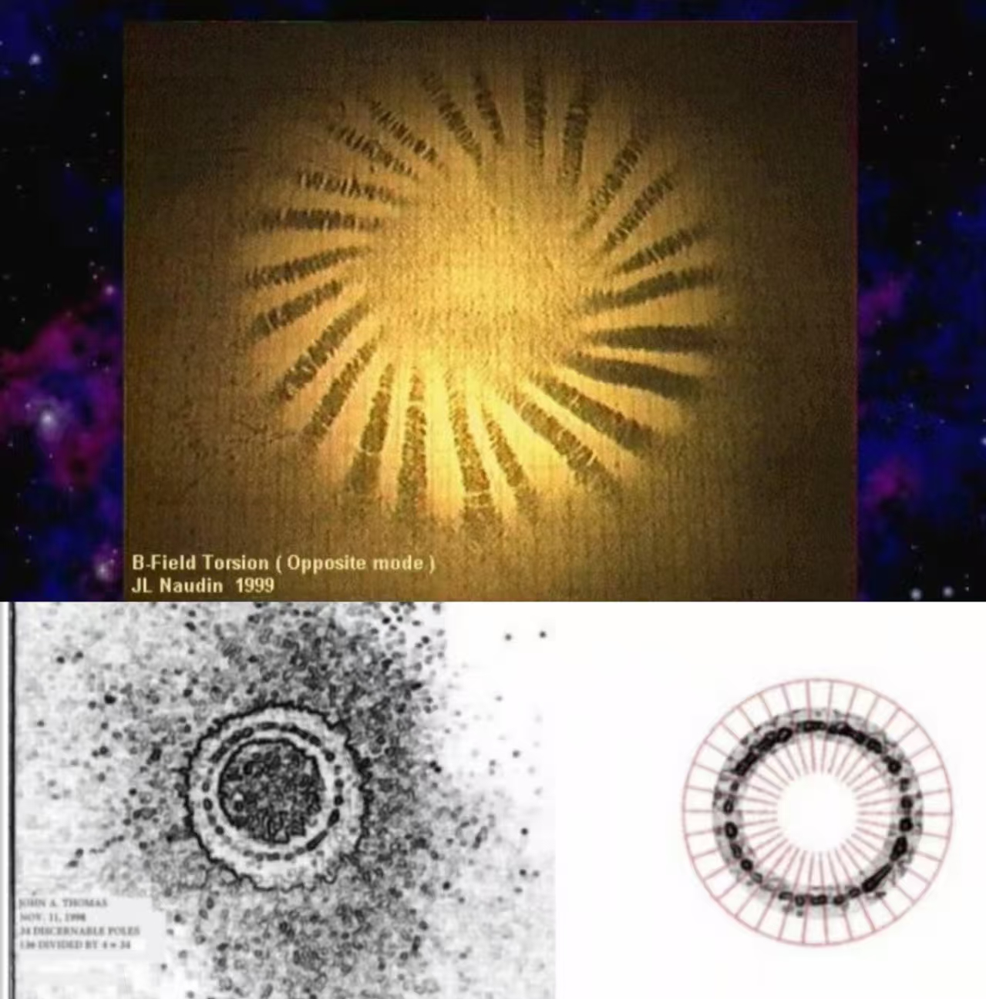
上 = J.L. Naudin 1999「B.Field Torsion (Opposite mode)」观察膜 —— 放射瓣从中心沿半径散开；
下左 = John A. Thomas 1996-11-11 真机观察膜，原注 34 DECERNABLE POLES / 136 DIVIDED BY 4 = 34 —— 环带上一圈沿径向排列的短条；
下右 = 径向直辐条示意（红线即径向直线）。
📌 结论：从内到外是直的 —— 这是本页 ⑥-ter 的直接依据。
⚠️ 但这只是俯视（横截面）；侧视（外柱面）上错极才现形，见 ⑥-ter 右半。
📷 图源：《充磁 麦格雷博电子（深圳）有限公司介绍册 · 2024-01 更新（外发版）》（32 页 PDF，本机归档于 jnaudin/充磁 麦格雷博电子（深圳）有限公司介绍册-2024年1月更新（外发版）.pdf）。三张原页用 PyMuPDF 以 2.2× 渲染、压到 1600 px / q82 存为 figs/ml_p12_coils.jpg · ml_p16_encoder.jpg · ml_p18_skew.jpg（合计 0.46 MB）。原册版权归麦格雷博电子（深圳）有限公司，此处仅作技术对照引用。
逐项对比（左：麦格雷博径向斜充磁多极 · 右：瑟尔 SEG 磁环充磁）
| 对比维度 | 麦格雷博（径向 / 斜充磁多极） | 瑟尔 SEG 三明治 | 判定 |
|---|---|---|---|
| 总思路 | 整体充磁（后充磁）：先组装、后充磁；待充磁转子 → 确认磁路方向 → 定制线圈 → 匹配电源 → 永久磁化 | 同样是先装配磁环、再整体充磁（① 中外三层线圈夹住磁环一次写入） | ✅ 相同（同一工艺门类） |
| 磁化线圈类型 | 4 类：螺线管 / 产品外周 / 产品内周 / 产品平面磁化线圈 | 3 层：内层 A.C.（轴向煎饼 = 平面线圈，且物理上位于磁环内周）× 中层 Phasing（环向 torus 双线并绕）× 外层 primary D.C.（轴向煎饼 = 平面线圈） | 🟡 相通但不重合：SEG 的"内 AC + 外 DC"对应册中产品内周 + 产品平面两类；但 Phasing 环向 torus 在册中没有对应物（册里没有"环向绕制的双线并绕分层线圈"这一型） |
| 磁化方向 | 轴向 / 径向 / 平面 三种可选，可组合 | 轴向（AC、DC 两层煎饼，场垂直于环面）+ 径向（Phasing 层，场在环面内指向圆心） | ✅ 相同（都用轴向 + 径向的组合） |
| 极数 / 极距 | 可实现 400+ 极；最小极间距 0.1 mm | 定子环 4410 极（齿距 = 360°/4410 = 0.0816°）；滚筒 34 极 | ✅ 同量级（都是"超多极"路线，SEG 极数更激进） |
| 公差的明文口径 | 峰值偏差 ±1%、极间相位偏差 ±1%；成品用磁强计逐件检测（MF-301R，POLES 64 / AVG 0.0070 T） | 无任何公差或检测口径；本页 4410 齿距 0.0816° 已远小于册中 0.1 mm 最小极距所隐含的工艺极限 | ❌ SEG 侧缺失（这是本页最需要补的一环；不写公差，"4410 极"就只是名义值） |
| 错极 / 斜充磁 | 11 种错极（名称照录原页）：V 型 / V+一型 / 双 V 型 / 双 V+一型 / 多 V 型 / 双一型 / U+一型 / 单向错极 / V 型错极 / AB 对称错极 / 不对称错极。 ⚠️ 2026-10-09 订正：原页给的是三样 ——① 内转子冲片 / 磁钢槽的布局几何（V 形槽、一字槽、双列、U 形、单向斜…）；② 实物照上贴的磁场观测膜轨迹（沿轴向走波浪 / 斜线）；③ 表磁检测的 2D 波形（峰值 / 面积 / 磁极角度 / 磁场错极角度 / FFT）。 早先写的「显影胶片上是倾斜的 S 形折线条纹」是错的 —— 那张「24 条 S 形折线」图是本页自编，与册子无关，已整块重画为「冲片几何 + 复合波塑形轨迹」 | Phasing 四象限激励：环空间四等分、每象限一个独立绕组，各走一个独立频率（时间相位错位）；成品齿轮再叠加一个 0~180° 的机械相位差 Δφ 驱动 | 🟡 目的相同、手段不同：都要"错开相位"来削齿槽转矩 / 提输出；麦格雷博靠空间角度，SEG 靠时间相位。二者可叠加（SEG 若要压制 4410 极的齿槽效应，可借册中错极思路） |
| 驱动源 | 脉冲电流峰值上万安培（电容放电，脉冲波形见 P13），专门为大体积整体充磁配电源 | DC 100~150 A（外层，~2000 匝）+ AC 100~200 mA @ 1–10 MHz（内层） | 🟡 相差约 100×：SEG 的直流电流量级仅相当于册中"小型单件"档；且 SEG 多出一个册中完全没有的高频源 |
| 仿真链 | 完整：三维建模 → 瞬态电路设置 → 模型对称网格剖分 → 仿真计算（输出 B / H / J / 力 / 能量，单位 mm–T–A/mm²） | 本页为简化几何示意，未做 FEA / 瞬态电路耦合 | ❌ SEG 侧缺失（册中这条链可直接借用：把三明治三层建成线圈绕组，跑瞬态电路即可验 B_S 是否到 1.73 T） |
| 磁场种数 | 2 种：径向多极 + 轴向 DC | 3 种：径向 + 轴向 DC + AC 高频辐射 | ❌ 本文件缺第 3 种（详见下表） |
⚠️ 磁场数目差异：本文件 2 种 · 瑟尔机 3 种
| # | 磁场 | 麦格雷博册 / 方案三 | 瑟尔 SEG 三明治 | 作用 |
|---|---|---|---|---|
| ① | 轴向 DC（直流饱和） | ✅ 有 —— 整体充磁的脉冲电流（峰值上万安培）即轴向磁化 | ✅ 有 —— 外层 primary D.C. 煎饼，100~150 A / ~2000 匝 | 提供直流偏置，把磁芯推到饱和 B_S |
| ② | 径向多极 | ✅ 有 —— 400+ 极径向阵列 / 径向斜充磁，是册中主推能力 | ✅ 有 —— 中层 Phasing 环形 torus，环向双线并绕 + 四相激励 | 写入 N/S 交替的多极图案（SEG 写入 34 极） |
| ③ | AC 高频辐射 | ❌ 无 —— 全册 32 页 + 方案三全文均无 MHz 级高频振荡充磁工艺 | ✅ 有 —— 内层 A.C. 煎饼，100~200 mA @ 1–10 MHz | 高频"抖松"磁畴、降低翻转势垒 H_S，提高耦合效率（三明治的真正关键） |
结论：麦格雷博册 / 《重点：充磁线圈方案三》只覆盖 ① + ②。不能用它的设备直接替代瑟尔三明治 —— 缺的 ③ 是一套独立的高频激励系统（内层 AC 煎饼 + 1–10 MHz 功放），它不是 ① 或 ② 的附属功能。
反过来，麦格雷博册能补 SEG 缺的两块：公差口径（峰値 ±1% / 相位 ±1%）与 瞬态仿真链（三维建模 → 瞬态电路 → 对称网格 → 仿真），这两块正是本页 ③ 目前最薄弱的地方。
J.L. Naudin 1999 · 双线并绕的两种模式 → 直接对应 SEG Phasing 层
| 模式 | 绕法 | 显影形态 | 对应本页 ③ 的哪一层 | 物理含义 |
|---|---|---|---|---|
| Opposite Mode | 双线并绕、相邻两线电流方向相反 | 中心留空 / 亮 + 向外放射粗短、规则、等间距的楔形条纹（辐条状） | = 本页 ③ 中层 Phasing 的绕法（环向双线并绕 + 异向电流，黄/蓝两色点即异向双线）→ 面内径向磁场 → 写入 34 极 | 每对反向线之间形成径向极性交替；条纹规则、等距、极数可算 —— 这才是"能写入等距极阵列"的物理来源 |
| Adding Mode | 双线并绕、相邻两线电流方向相同 | 中心暗核 + 向外呈树状分形分叉的细密羽状条纹（一条主枝沿途 2ⁿ 分叉，越外越细越密） ⚠️ 2026-10-09 订正：早先写「花瓣状闭合涡旋 = 无径向多极」是错的 | 对应本页 ③ 中层若接错向（四相激励方向弄反 / 一组线反接）时的形态 | 同向线磁场相加 → 宏观环向场增强、场向中心与两端汇聚 ⇒ 显影出向外辐射的树状径向多极；但它是分叉、极界不固定的径向结构，写不出等距的 34 极阵列 —— 故 Phasing 仍必须异向 |
🔑 这一条是本页最硬的工艺判据（⚠️ 理由已于 2026-10-09 订正）：Phasing 层"双线并绕"必须保证相邻线异向（Opposite Mode）。
订正前的理由是「Adding 无径向多极」—— 这条说错了：Adding 的中心暗核 + 树状分形分叉，本身就是一种向外辐射的径向结构。
订正后的准确理由：两种模式都给得出径向结构，差别在「极界规不规整」 —— Opposite 给出粗短、规则、等间距的辐条，极界清晰、极数可由绕线数直接算出 ⇒ 能写等距极阵列；Adding 给出分叉的树状结构，极界随分叉散开、极数不固定 ⇒ 写不出"34 极"这种严格等距的图案。⇒ 工艺判据仍然成立，但依据从「没有多极」改成了「多极不成规整阵列」。
⚠️ 注：Naudin 原图为 1999 年 B-Field Torsion 的磁场显影胶片实拍。本页右图为按原图重绘的示意；5 张原始照片已单独收入 ③-bis 卡片（figs/naudin_*.jpg，从 jnaudin/磁场显影两种模式_图/ 复制而来）——想看真实底本请直接翻到 ③-bis。上表"对应到 Phasing 层"仍是本页的推断，非 Naudin 本人论述。
另：与该 docx 同附的 John A. Thomas 1990 图标注 "34 DECERNABLE POLES / 136 DIVIDED BY 4 = 34" —— 34 极正是本页 ③④⑤ 用的滚筒/写入极数，两条独立来源在此对上。
📄 附：《重点：充磁线圈方案三.docx》要点提取（含编者个人批注）
文档原文要点（3.1 MB · 26 段 + 4 图）
| 项 | 内容 |
|---|---|
| 主线圈 | 双线并绕，线圈输入 DC 脉冲 |
| 辅助线圈 | （AC）线圈轴向缠绕 |
| 合成输出 | 端面径向脉动磁场 |
| 极数公式 | p = f ÷ 磁极切换频率；示例：50 Hz 输入 → 10 对极 → 切换频率 5 Hz |
| 线圈几何 | Dint 25 / Dave 49 / Dext 73 mm；铜带厚 t = 0.5 mm、绝缘 ti = 0.1 mm、带宽 w = 10 mm；N = 20 匝；总长 l = 3079 mm；Rdc = 0.011 Ω/cm²；L = 50 μH |
| 随附四图 | ① Naudin 1999《B-Field Torsion (Opposite mode)》+ John A. Thomas 1990「34 DECERNABLE POLES · 136 ÷ 4 = 34」显影环；② repulsive / attractive mode 示意；③ Don Smith《OPTION 1：Usage bifilar coil as primary coil in resonance Tesla transformer》；④ 幻方频率波形图 |
🔴 编者个人批注（非文档原文）
| 幻方阶 | 批注旧口径（保留原文） | 本轮订正口径 ★ | 关系 |
|---|---|---|---|
| 3 阶幻方 | sin17 / cos19 / sin23 / cos21 | 17 / 19 / 21 / 23 全 sin |
频率就是同一组数；但混用的 cos 是错的 —— 四路必须全 sin，否则断纹路 |
| SEG 四阶 level 2 | sin34 / cos34 | 34 / 68 / 102 / 136 全 sin |
旧口径把 34 拆成正交两相；新口径是 34 的 1~4 倍共四个独立频率 |
| SEG 六阶 level 2 | sin186 / cos147 | 39 / 147 / 186 / 333 全 sin |
147 与 186 保留（互为"对冲频率"），另补 39 / 333 凑成四相 |
🔎 与本站的接口：批注里「两对双线并绕线圈上下镜像绕制」正是本页 ① 的上下两套同轴煎饼盘与 ③ 中层 Phasing 环向双线并绕 的同一手法；「四个频率」= ③ 的四个象限，每个象限一个独立绕组、各走一个频率。
✅ 2026-10-09 口径已定（原"待定项"解除）：四个频率各走一相（不是"一个频率走四相"，也不是"两相正交"），且四路全部用 sin。⇒ Phasing 电源通道数 = 4，中环 36 匝 = 4 象限 × 9 匝。完整波形、判废规则与 9 张示意图见 ④-bis。
⚠️ 左列保留批注旧口径原文供溯源对照，不回改老师 md。
⑦ 充磁线圈参数计算器 —— 代入几何与电源，自动求 匝数 / 电流 / 电压
按 磁化充分性判据 H_施加 ≥ k · H_sat(材料) 反解线圈。版式复刻 Fernando Morris & John A. Thomas Jr. 1998-11-11《D.I.S.C. Magnetic Printer II and Coil Calculation》 计算表：左列 = 自动联动的计算值，右列青底框 = 可调输入参数（该表把判据直接写成 "4438 Oersted, coil's magnetization must be > material's coercive"，与本项目 ③ 的口径完全一致）。
⚠️ 三层各自的门槛不同，必须分层算 ——
① 外层 primary D.C.（轴向）：H_DC > H_sat(材料)，把整块材料推到轴向饱和 B_S；
② 中层 Phasing（径向多极）：H_ph > H_sat(材料)，在饱和基底上把每对极区"掰"到径向 —— 极数 p 会放大表层场，但穿透深度按 (r/a)^(p−1) 骤减，这正是本页薄壁环（壁厚 ≈ 外径 23%）可行、厚壁环困难的根因；
③ 内层 A.C.（高频）：不参与饱和判据 —— 它只"抖松"磁畴、降低翻转势垒，是助剂不是主力。
整机三环总表（自动联动 · 输入见右浮窗 ⚙）
图例：青底框 = 可调输入（在右浮窗内）｜ 红字 = 关键参数｜ 绿字 = 校核通过 ｜ 灰字 = 中间量／说明。改动浮窗任一格 → 本表 + 下方三张图 + ⑨ 磁纹全部自动重算。
⚙ 输入参数已改为右侧浮窗（点右下角「⚙ 输入参数」打开，或用 📌 钉住让它常驻）。浮窗内分两张表 —— 【A】三环整机：本页主算，2 套 × 3 环 = 6 组线圈；【B】单环精算：原计算器，用于把某一个环抠出来细化（含窗口排布、窗口可容匝数上限、Wheeler 电感等）。
⑦-bis 整机电气 —— 三环 × 上下两套 = 6 组线圈：怎么绕 · 怎么算 · 多少电
⑦ 原版一次只算一个环（外层 D.C. 或 中层 Phasing），内层 A.C. 连入口都没有 —— 与实物「三环同轴嵌套」不符；也没把「上下两套整机」显式建进去。本卡片把这些问题一次补齐：三环各自独立求解，再按 2 套汇总成一本电耗账本。
| 环 | 径向位置 | 怎么绕 | 匝数口径 | 电流量级 / 电源形态 | 判据 |
|---|---|---|---|---|---|
| 环 1 A.C. 最内 | 紧贴磁环外缘，与 Phasing 同径 | 细线 煎饼 / 平面螺旋，上下各一盘（= 两盘夹磁环） | 每盘 12 匝（可调） 线径 0.40 mm |
0.8 A 幅值 @ 1–10 MHz 高频振荡源 + LC 谐振 |
不参与饱和判据 —— 只「抖松」磁畴、降低翻转势垒，是助剂不是主力 |
| 环 2 Phasing 中层 | 磁环外围第二层 | 环向 torus：双线并绕 · 相邻异向（= Naudin Opposite Mode）；分 4 象限 = 4 个独立绕组，各占 1/4 圆周、各走一个独立频率 | 总 36 匝 = 4 象限 × 9 匝（可调） | 默认参数实算（左表为准）： 36 匝 ⇒ ≈ 8.6 kA 2000 匝 ⇒ ≈ 156 A 4 通道脉冲机 |
H_ph ≥ k·H_sat —— 在已饱和的基底上把每对极区掰到径向多极 |
| 环 3 primary D.C. 最外 | 最外圈 + 上下端面 | 粗线 平面螺旋 / 煎饼，上下各一盘夹住磁环，单线由内向外 | 老师口径 72 匝（取 72 的倍数） 项目 md 另有 ~2000 匝 |
粗线 2.5 mm 默认参数 ≈ 619 A 钕铁硼需 ~2 kA 单通道脉冲 |
H_DC ≥ k·H_sat —— 把整块材料推到轴向单向饱和 B_S |
★ 本版新增的关键公式（把悬了很久的「匝数口径冲突」一次锁死） ——
Phasing 环的安匝由安培环路定，不由「表面电流片」定：
每极：N_pp · I = H_req · t_mag / η_ph ⇒ 总安匝 = P · H_req · t_mag / η_ph（磁路模型 · 工业标准）
对照：H_surf = η · P · N_pp · I / (πD) ⇒ 总安匝 = H_req · πD / η（表面电流片 · 只在小气隙成立）
两条独立路线，本计算器取大者（更保守），并在左表并列显示两个值。代入默认参数（P = 34 极、t = 9 mm、铁氧体 Y30、k = 1.2）：磁路模型 ≈ 3.11×10⁵ A·t ——
故 36 匝 ⇒ I ≈ 8.6 kA、2000 匝 ⇒ I ≈ 156 A。
⇒ 「36 匝 + kA 脉冲」与「2000 匝 + 几百安」不是谁写错，而是同一个安匝数的两个工作点；把它写进浮窗，改任一参数即可看到电流如何随之跳档。
⚠️ 口径溯源（防混用）：项目 md 里记的「72 匝 ⇒ ≈ 15.9 kA」是外环 D.C. 在 钕铁硼 N42 + 0.4 m 磁路长下的结果， 与本页默认的铁氧体 Y30 + 9 mm 壁厚前提完全不同 —— 两者不可并列比较。上表「电流量级」列已按本页默认参数实算回填； 换材料 / 换壁厚时请以左表为准，不要看这一列。
| 上下两套 | 是什么 | 电相位与后果 |
|---|---|---|
| 上套 | 充定子环（定子 4410 极 / 滚筒 12 只的那一侧） | 充磁档 = 上 0° / 下 180°（互为反相）：sin(ft+π) = −sin(ft) ⇒ 上下严格镜像 ⇒ 全厚度一次写透。 ⚠️ 90° 是运行时驱动自转档（T ∝ sin Δφ 最大），充磁误用 90° ⇒ 下半边变 Σcos、不镜像 ⇒ 报废。 |
| 下套 | 充滚筒环（与上套共轴、几何同规格） | |
| 整套 | 一台机器 = 2 套 × 3 环 = 6 组线圈；电耗须按 6 组汇总 = 直流轴向 4 盘（2 套 × 2）+ Phasing 2 组 + A.C. 4 盘。 ⚠️ 单看一环得出的功率，会低估整机 3~6 倍。 | |
① 三环径向剖面 + 三环对比
剖面从内到外：磁环 → A.C. → Phasing → D.C.（与 ① 视图的半径比例同源）。下栏三组横条把「安匝 / 单次能量 / 铜重」三环并排 —— 一眼看出钱与铜花在哪一环。右栏三张卡是每环的独立读数卡。
② 电耗账本 —— 单次能量瀑布 · 分环占比 · 节拍与产能
左：能量瀑布（三环 → 单套 → 整机 → 电网取电，含充电效率 ηchg = 0.85）+ 分环占比环图。右：充磁节拍（充电 / 放电 / 上下料三段）+ 六张指标卡（单件电费、每小时耗电、峰值功率、充电机功率、铜线总重、每小时电费）。
★ 充磁机选型的落点就在右边那张表：储能电容组的能量 × 充电机功率 × 节拍，三者定死一台机器的规格；调浮窗里的「充电时间 / 上下料时间 / 电价」即可看产能与电费怎么变。
绕组剖面（单环精算）—— 左：整体尺寸链 ｜ 右：绕组窗口 1:1 排布
场强校核 —— 实际 H_calc vs 需求 k·H_sat（分层）
电流建立过程 —— I(t) = (U/R)(1 − e−t/τ) 或电容脉冲半正弦
📐 知识点：磁化充分性判据 H_施加 ≥ k · H_sat（分层门槛）
充磁的本质是"用外加场把磁畴全部拨到目标方向"。判据分两级：先看矫顽力（能否翻转），再看饱和场（能否翻到位）。工程上把完全饱和所需外加场取为
H_sat ≈ (2 ~ 3) × H_cj （H_cj = 内禀矫顽力） → 设计取 H_施加 = k · H_sat，k = 1.1 ~ 1.5
| 层 | 目标 | 门槛 | 物理意义 / 不达标的后果 |
|---|---|---|---|
| 外层 primary D.C. 轴向煎饼 | 轴向饱和 B_S | H_DC > k·H_sat （最大者） |
把整块材料推到单向饱和，消除原始磁畴取向、给出最大可用磁能积。场强不足 → 只磁化表层、内部仍随机取向 → B_r 偏低、SEG 出力不足 |
| 中层 Phasing 环向 torus | 径向多极（34 极） | H_ph > k·H_sat （同阈值 · 但是径向） |
在饱和基底上把每对极区的磁化矢量"掰"到径向。因 p 极大，表层场被放大成 p·N·I/(2D)，但穿透按 (r/a)^(p−1) 衰减 → 薄的壁才能整壁翻转 |
| 内层 A.C. 高频煎饼 | 降低翻转势垒 | 不参与饱和判据 （mA 级即可） |
1–10 MHz 微幅振荡给磁畴"抖松"（类似交变退磁的中间态），不是主力磁化场。若把它当主力 → 永远充不饱和 |
各材料需要的充磁场强（对照）
| 材料 | 剩磁 B_r | 内禀矫顽力 H_cj | 完全饱和场 H_sat | 折合 kOe | 线圈规模含义 |
|---|---|---|---|---|---|
| 钕铁硼 N48 | 1.38 T | 955 kA/m | 2480 kA/m | 31 kOe | 需大功率脉冲机，水冷，匝数少线径粗 |
| 钕铁硼 N42 | 1.30 T | 955 kA/m | 2380 kA/m | 30 kOe | 同上（主流选择） |
| 钐钴 Sm₂Co₁₇ | 1.08 T | 750 kA/m | 1900 kA/m | 24 kOe | 耐高温，可热充磁 |
| 粘结钕铁硼 | 0.65 T | 450 kA/m | 1600 kA/m | 20 kOe | 可用较低场（粘结剂使内禀矫顽力降低的反直觉点：实际更易饱和） |
| ⚠️ SEG 文档口径 （同性 Fe 基粉末） | 1.2~1.4 T | ≈450 kA/m（估） | ≈1400 kA/m（估） | ≈18 kOe | 文档只给了 B_S，没给 H_c —— 本页按同性压制磁体类比估，实测值请老师实测后回填 |
| 铁氧体 Y30 | 0.40 T | 200 kA/m | 720 kA/m | 9 kOe | 最容易饱和 —— 1998 那台磁打印机用的就是它 |
| 注塑铁氧体 | 0.28 T | 190 kA/m | 640 kA/m | 8 kOe | 最低门槛 |
| 铝镍钴 AlNiCo 5 | 1.25 T | 55 kA/m | 280 kA/m | 3.5 kOe | 矫顽力极低，几匝几百安即可；但极易被后续工序退磁 |
🔎 实例反推：1998 年 D.I.S.C. 计算表的设计场强 4438 Oe ≈ 353 kA/m ≈ 0.44 T。对照上表 —— 它只比铁氧体的 H_cj（200 kA/m）高 1.8 倍，却只到钕铁硼的 37%。若把那台机器换成 N42，场强要涨约 6.7 倍（4438 → 30 000 Oe），安匝与电源功率同步放大 —— 材料选型直接决定充磁电源的规模，这就是下面计算器要算的东西。
⚠️ 本计算器为解析工程估算（安培环路 + 有限长螺线管中轴解 + 平面螺旋中轴解），非 FEA。多极夹具效率 η 默认 0.6，实际受极靴形状/漏磁影响可达 ±30%；工程定案前请按麦格雷博册 P15 的链路复核：三维建模 → 瞬态电路 → 对称网格 → 仿真。
📐 本计算器用到的公式（全部显式列出）
| 量 | 公式 | 说明 |
|---|---|---|
| 目标外加场 | H_req = k · H_sat(材料) = k · (2~3) H_cj | 磁化充分性判据 |
| 螺线管中轴场（中心） | H = N·I / √(4a² + L²) | a = 平均半径，L = 轴向长度；L→0 即退化为一匝环 H = NI/(2a) |
| 环状平面螺旋（煎饼）中轴场 | H(z) = N·I / [2(a₂−a₁)] · [ ln((a₂+r₂)/(a₁+r₁)) + a₁/r₁ − a₂/r₂ ] | r₁=√(a₁²+z²)，r₂=√(a₂²+z²)；双盘夹持时 ×2 |
| 径向多极夹具表面场 | H_surf = η · p · N·I / a = η · P · N·I / (2D) | p = P/2 极对数，D = 磁环外径，η ≈ 0.6 |
| 穿透深度（多极） | H(r) ∝ (r/a)^(p−1) | 极数越多，场越集中在表层 |
| 绕组窗口可容匝数 | N = k_f · S_window / (π/4 · d_ins²) | S_window = 绕线厚 × 轴向长；k_f ≈ 0.55 |
| 线圈电阻 | R = ρ(T) · N · ℓ_turn / A_w | ρ_Cu(20°C)=1.724×10⁻⁸ Ω·m，α=0.00393/K |
| 电压-电流-安匝 | I = U / (R + R_ext)，N·I = U · A_w / (ρ · ℓ_turn) | 定电压时 N·I 与匝数无关 —— 只由电压与线径决定 |
| 电感（Wheeler 多层） | L[µH] = 0.8 a²N² / (6a + 9b + 10c) | a 平均半径、b 轴向长、c 径向厚（inch） |
| 时间常数 / 上升时间 | τ = L/R，达 95% 需 3τ | 脉冲宽度须 ≥ 3τ 才算"准直流" |
| 储能电容（脉冲） | C = L·(I/U)² / 0.8，半周期 t = π√(LC) | 0.8 = 阻尼修正 |
| 脉冲温升 | ΔT = I²R·t_p / (ρ_Cu·V_Cu·c_p) | c_p = 385 J/(kg·K)，铜绝热假定 |
| 连续温升 | ΔT = I²R / (h · A_s) | h ≈ 12 W/(m²·K) 自然对流+辐射 |
| 单位换算 | 1 Oe = 79.5775 A/m｜1 kOe = 79.5775 kA/m｜1 T(空气) ↔ 795.775 kA/m ↔ 10 kOe｜G = Oe（空气中） | B = µ₀H |
| AWG 换算 | n = 36 − 39·ln(d/0.127) / ln(92) | d 单位 mm |
⑧ 现代物理提纯 —— 1968/1971 原始文档 × 等离子体 / MHD / 磁约束聚变 / QMHD
本视图是 437 页《SEG Concept Review》4 册 与 1968–1971 SNSRC 论文集（Barrett / Seike / Vaegs） 的
二次提纯结果：把 20 世纪中叶的语言，逐条翻译成现代等离子体物理与磁流体力学的语言，
并把每个数字溯源到它最早的出处。完整文档见
瑟尔技术总结SEG-Concept-Review/07_现代物理提纯_2026-10-09/（6 份 md）。
证据分级（全页统一）： 📐 教科书级 / 已在真实装置量到 🔶 有文献未复核 / 二手转述 ⚪ 推算 / 梦启叙述 / 无复现史 —— ⚠️ SEG 整机未证（0%）。本视图的一切"现代物理对应"均为假设，不是设计依据。
瑟尔技术总结SEG-Concept-Review_1-110/111-220/221-330/331-437.docx（纯文本已抽取，53 万字 / 546 图，实读图 28 张）；searl图/rexresearch/（Barrett 15 页 + Seike 5 页 + Vaegs 3 页 + Notes 5 页）。一、溯源时间线 —— 分清「观测 / 推算 / 转述」
| 时间 | 事件 | 性质 |
|---|---|---|
| 1946-07-11 | 概念诞生（Searl 自述来自"梦"，时年 14 岁） | ⚪ 自述 |
| 1949 | 在 Midlands Electricity Board 发现金属旋转产生 EMF，负极朝外、正极朝轴；空转时头发竖起 | 🔶 第三方成文 |
| 1952 | 首台 ≈3 ft 发电机；低转速下电位 10⁵ V，有噼啪声 + 臭氧味；随后升空 50 ft、粉红晕、收音机自响 | 🔶 目击 + 静电可感 |
| 1968-06-01 | Barrett《The Searl Effect》，SNSRC UK Div. Vol.1 Sec.4 —— 首次系统命名与定义，含 9 大现象 + 4 张手绘场图 | 📐 文献本体 |
| 1971-06-01 | Seike《Introduction to the Theory of the Searl Levity Disc》 —— Dirac 负能 + Zitterbewegung + Frenkel–Kramers 方程；推出月旅 11.3 km/s、8h52m | 📐 所用方程真实 ⚪ 前提未证 |
| 1971-06-14 | Vaegs《A Discussion of the Searl Disc…》 —— 指出一切可用法拉第圆盘 + 地磁场解释；点名 Biefeld–Brown、de Seversky、Coanda、Geissler 管 | 📐 主流解释 |
| 1972-05-15 | Notes 中《To Whom It May Concern》9 条结构规格；★ 10¹⁴–10¹⁵ W 注明「由 Seiko 计算得出」 | 🔶 一手文本 |
| 1996-03-10 | ★ Middlesex 大学演讲：示波器一探针触段中心、另一探针触段外环 ⇒ 3 V / 每 5 ms 脉冲，可重复（另一人 12–15 V） | 🔶 唯一带仪器记录 |
| 2003 / 2005 | SISRC 目标 240V·15kW 原型（未交付）；Searl 收到 PM 3310 示波器与 5100 霍尔计 | 🔶 |
二、★ 口径订正：10¹³ V 与 3 V 不是同一个量 —— 不可相除，也不构成「落差」（v3.40）
⚪ 10¹³ V / 10¹⁴–10¹⁵ W：notes2a 原文写明
"predicted by Seiko's calculating, derived independently, and published in the first edition of
Principles of Ultrar elativity" ⇒ 这是 Seike 的理论计算值。
🔶 3 V / 5 ms：1996 年 Middlesex 演讲现场，Lockerman 记录，
探针接段的中心 ↔ 外环 ⇒ 这才是唯一带仪器的可重复读数。
| 口径 | 10¹³ V | 3 V / 5 ms |
|---|---|---|
| 是什么 | Seike《Principles of Ultrarelativity》的理论计算值（原文 "predicted by Seiko's calculating"） | 示波器实测脉冲幅值 |
| 哪个工况 | SEG 自运行态 —— 含「可能已进入低温超导、腾空」这一端（🔴 老师 2026-10-10 口径） | 滚筒静止放在仪器上（非自运行、非腾空） |
| 哪个测点 | 整机对外输出量级（且是理论推得的量） | 滚筒【段中心 ↔ 段外环】的自然电位差 —— 滚筒自身的静电学量，不是整机输出 |
| 能不能比 | ❌ 不能。工况不同 + 测点不同 ⇒ 相除得到的数字没有任何物理含义。 （本页旧版此处写过「÷ 3 V ≈ 3×10¹² —— 相差约 12 个数量级」，属口径错配，v3.40 已撤） | |
🔴 v3.40 订正（老师 2026-10-10 指出）：把这两个数相除，等于拿
「滚筒放在台上测到的静电自然电位差」去衡量「整机在自运行 / 超导腾空态下的理论输出」——
这不是量级落差，是口径错配。
⇒ 正确表述：SEG 自运行态的对外电位，目前【没有】带仪器的直接读数 ——
这是一个未观测的空白（gap），不等于已被证伪。要判伪，必须先在
同一工况 + 同一测点上取到数；在那之前，任何「差 N 个数量级」的说法都不成立。
⚠️ 本节其余对照（Schwinger / 空气击穿 / 太阳表面功率密度）之所以保留，是因为它们全部是
同类装置或同口径物理量的对照，不是跨工况相除 —— 见下表说明。
下表是对「Seike 纸笔标称值」本身的量级体检 —— 不是对 SEG 实测值的判定， 更不等于「SEG 被证伪」。所列「已知物理对照」全部取同类装置或同口径物理量： 静电起电机对静电压、Schwinger 临界场对真空场强、空气击穿对空气场强、太阳表面对功率密度。 ⚠️ 凡跨工况 / 跨测点的对照，本表一律不列（旧版本的「10¹³ V ÷ 3 V」就属此类，已撤）。
| 量级校核项 | 标称值 | 已知物理对照 | 差距 |
|---|---|---|---|
| 输出电压 （Seike 计算口径 · 自运行态） | 10¹³ V | 1971 年带式起电机上限 ≈ 2×10⁷ V（Vaegs 原话）；2026 年仍 ≈10⁷ V 量级 —— 同属「静电高压装置」这一类，可比 | ≈ 10⁶ 倍 |
| 由前者推得的场强（0.9 m 盘） | ≈1.1×10¹³ V/m | Schwinger 极限 1.32×10¹⁸ V/m（真空自发产生电子对） | 低 5 个数量级 ⇒「真空成对产生」算不出来 |
| 同上 vs 空气击穿 | 1.1×10¹³ V/m | 常压空气击穿 ≈ 3×10⁶ V/m | 高 7 个数量级 ⇒ 若该场强真实存在，气体必然先在外部击穿；而这恰好对应目击到的电离 / 辉光 / 臭氧 ⇒ 该量级与气体放电现象自洽，但与「真空成对产生」不兼容 |
| 输出功率 | 10¹⁴–10¹⁵ W | 太阳表面辐射通量 ≈ 6.3×10⁷ W/m²；0.9 m 盘面积 ≈ 0.64 m² | ⇒ 1.6×10¹⁵ W/m²，比太阳表面亮 10⁸ 倍 |
| 旋转金属盘的天然电压 | 30 inch / 3000 rpm / 0.5 T ⇒ ≈16 V | 同极发电机 = 低压大电流器件 | — |
| 旋转产生磁场（London 矩） | ω=1 rad/s ⇒ ≈1.1×10⁻¹¹ T | 真实但极微弱（nT 级） | — |
| 用电磁装置产生引力 | — | 引力/电磁耦合比 ≈ 10⁻³⁶；等效原理禁止局域电磁场产生引力 | 36 个数量级 |
🔧 排版说明（v3.41）：本表「差距」列写的是长句判断（如「低 5 个数量级 ⇒……」「高 7 个数量级 ⇒…… 与气体放电现象自洽」），不是纯数字。此前它沿用了数值列的 td.num（等宽 + 不换行），导致该列被撑到 ~1020 px、把「已知物理对照」列挤成 ~94 px（换行极碎），并使整表 1457 px 溢出 1072 px 宽的卡片。现已把本表改为定宽 + 允许换行，其余表格的数值列规则未改动。
⚠️ 原著 Barrett 自己就承认了矛盾："The estimated power output is some 10¹⁴ or 10¹⁵ watts which puts the figure too high for a solar source." —— 用"收集太阳能"解释净输出，与他自己写的数字直接冲突。
三、Barrett 1968 九大现象 × 现代物理逐条对照
Barrett 是独立于 Searl 的第三方，这 9 条是早期记录里最完整的一份。下表右列是本次的分析，非 Barrett 原意。
| # | Barrett 原文现象 | 现代物理对应 | 强度 |
|---|---|---|---|
| ① | Antigravity or levity（反重力/轻力） | 电液动力（EHD / 离子风）——真实可飞（de Seversky 1964 离子风飞行器）；涡流排斥（EDS，楞次定律）——Barrett 自述"诱导出磁静场并排斥"；负质量引力排斥——GR 中确实成立，但无已知负质量物质 | 📐⚪ |
| ② | Very high electrostatic fields | 同极发电机 + 静电起电机。⚠️ 天花板：Vaegs 1971「即使今天也只能产生约 2×10⁷ V」 | 📐 |
| ③ | The peculiar magnetic effect：直流静场，边缘负、中心正；无相对运动也感应；磁通持续扩张 | (3a) 径向电荷分离 = 同极发电机的经典结论；在旋转等离子体里 = E×B 漂移 + 离心分离（等离子体离心机已工业化）。 (3b) 法拉第定律要求 dΦ/dt≠0；唯一不改定律的现代框架 = Aharonov–Bohm 效应（B=0 而 A≠0）。 (3c) 「场持续扩张」= 磁通冻结 + 磁通压缩（FCG），真实；但「无限」是错的（放大要能量） | 📐⚪ |
| ④ | Perpetual motion（输出 > 输入） | ★ 数字溯源到 Seike 的书。可类比的真实自持机制 = 托卡马克的自举电流（bootstrap current）：能"部分自励"，不能免除外部驱动。⇒ 完全自持违反热力学第一定律 | ⚪ |
| ⑤ | Inertia loss（>10¹³ V 时惯性消失） | 惯性修改是活跃但未证实领域：引力磁 / Lense–Thirring（Gravity Probe B 2011 已实测 📐）、Woodward 效应（🔶）。⚠️ 10¹³ V 在 1 m 上仅 10¹³ V/m，比 Schwinger 低 5 个数量级 | 📐⚪ |
| ⑥ | Drive（改变表面电位分布即可推进） | Biefeld–Brown / 离子风推进（大气中真实）；等离子体流动控制（DBD 激励器、俄美 AJAX 项目的 MHD 加速/减阻）。 ⚠️「自带引力场」与等效原理冲突，除非引入负能量密度（Alcubierre 度规） | 📐⚪ |
| ⑦ | Ionization of the air（发光、发"真空包络"） | 电晕/辉光放电（帕邢定律）；复合发光的颜色由气体成分决定（N₂ 粉紫）。⚠️「几乎完全真空」是夸大——电离度再高中性气体仍在 | 📐 |
| ⑧ | Permanent electric polarity（"蛛网状"皮肤感、衣物吸附、噼啪数小时） | ★ 这一条原文正确、现代也正确：驻极体（electret）是工业化材料（Eguchi 1920 首次制备；现代 SiO₂/FEP 驻极体是驻极体麦克风核心）；人体组织确有压电性（极小）；衣物吸附 = 摩擦静电 | 📐 |
| ⑨ | Matter snatch（起飞带走土块，留"洞"） | Barrett 的机制是"下方出现中性区/势阱并把物质锁住"。⚠️ 现代物理没有已知的、能在米级尺度锁住土块的场构型；静电吸附只能吸细粉 | ⚪ |
Barrett 的机制链（他自己写的"应用理论"，是全批材料里最可用的一段）
⚠️ 这套机制解释不了的只有一件事：升力是否足以让 0.9 m 装置升空 50 ft 并持续加速。 ⇒ 这正是唯一值得做实验的地方（见本视图第五节 P3）。
四、概念谱系 —— "发光磁性"才是这套语言的真正内核
Barrett 的书目（barrett1m）就是一部流派名录：Stratton《Electromagnetic Theory》（MIT 标准教材） 与 Reich《Energy of the Orgon》、Puharich《Beyond Telepathy》 并列。
| 原著概念 | 现代物理里的名字 | 强度 / 边界 |
|---|---|---|
| 「发光磁性」= 自组织成球、达阈值后稳定 | 球马克（spheromak）/ Taylor 弛豫态：等离子体在保持磁螺度 K=∫A·B dV 不变的约束下使磁能最小（Taylor 1974），末态为无力场 ∇×B=λB | 🔶 类比成立，但球马克需外部持续驱动，不是"析出物质" |
| 「空间介质被消耗 ⇒ 周围补充 ⇒ 物体受向心力 = 引力」 | 无对应。但它问的问题是真的："惯性/引力从何而来？"（现代答：希格斯机制 + 等效原理；真空结构 = 真空极化 / 自旋网络） | ⚪ 无对应，但问题仍在研究前沿 |
| Schappeller 的装置：球形线圈 + 充驻极体的铜管 + 铁球壳，须先极化才工作 | 球形电容器 + 驻极体静电起电机（influence machine） | 📐 器件原型真实 |
| Dirac 负能 / Heisenberg「粒子不是基本砖块，而是基本实体的不同显现」 | Dirac 空穴理论（真实）；Heisenberg 引 1962 Lindau 会议原话——今天已由"标准模型 + 规范对称"实现：夸克/轻子 + 规范场，质量来自希格斯机制 | 📐 |
五、★ 三条现代物理桥（可计算、可引证）
桥 D · Cowling 反发电机定理 ↔ SEG 的三个"怪设计" 📐
Cowling 反发电机定理（1933）：轴对称的磁场不可能由轴对称流动维持。 而 SEG 的三个环天然是同心同轴的 —— 按定理纯轴对称的自励回路必然衰亡，无法自持。 ★ 而 Notes3（《THE SEARL LEVITY DISC GENERATOR》）里恰好写了三件"非对称"的事：
| Notes3 原文 | 现代动力论的对应 | 作用 |
|---|---|---|
| "magnetic Möbius rings or Klein bottles" | 非可定向拓扑 ⇒ 磁螺度非零 | 非轴对称源 ✅ |
| "low resistance in one direction only"（单向导通） | 各向异性 / 非均匀电导率 | 打破定理的对称前提 ✅ |
| ω_外 = 2·ω_中（差动旋转） | ω 效应（差动旋转） | 发电机 ω 效应 ✅ |
| 66 组 × 8 段的周期性排列 | 周期性空间调制 | 发电机 α 效应源 ✅ |
⇒ 结论：SEG 的三个"怪设计"恰好是绕开 Cowling 定理所必需的三件东西。 ⚠️ 边界：这只能说"设计直觉与现代动力论不矛盾"，不能说"因此它能自持"—— 自励的天花板由能量守恒定，平衡时输出 = 输入 − 损耗。
桥 E · 磁螺度 / Taylor 弛豫 ↔ 「发光磁性」 🔶
Woltjer（1958）证明磁螺度是拓扑不变量，Taylor（1974）用它解释等离子体自组织成球形/环形磁结构。 ⇒ Schappeller 说的"自组织成球、靠拓扑约束自持的磁核"，在现代就叫球马克或 Taylor 弛豫态。
桥 F · Langevin 饱和 ↔ 本页 ⑦ 的「磁化充分性判据」 📐
⇒ 本页 ⑦ 保留现状（用 H），并在公式清单里标注与 Seike 判据的同源关系。
六、可证伪清单（P1–P10）—— 建议按此顺序做，★ = 低成本可做
必须先打败的零假设：同极发电机（法拉第圆盘）+ 电晕离子风 + 辉光放电 —— 这一套在 1971 年就摆在桌上了（Vaegs），而且一次解释了 9 条现象里的 5 条。
| # | 命题（若…则…） | 检验方法 | 推翻条件 |
|---|---|---|---|
| P1★ | 段中心↔外环的电位差正比于转速（同极发电机预测 U∝ωB） | 逐级改转速，记录脉冲幅度与频率 | 幅度与 ω 不成正比（如出现阈值式跃变） |
| P2★ | 极性由 (ω×B) 唯一决定 | 反转转向 / 反转外磁场各测一次 | 极性不随 (ω×B) 翻转 ⇒ 存在额外场源 |
| P3★ | 抽真空后推力按离子风标度下降 | 逐级抽真空，同测推力与离子流 | 推力不随气压下降 ⇒ 离子风不是主因（这时才值得深挖） |
| P4★ | 辉光颜色随气体成分变化（N₂ 粉紫 / Ar 紫 / Ne 橙红） | 换气比对光谱 | 颜色不随气体变化 ⇒ 发光源不是气体放电（强证伪） |
| P5 | 净输出 ≤ 输入 | 闭箱量热法，全回路电流积分 | 可重复的能量过剩（>5σ）⇒ 需新物理 |
| P6★ | 磁化层外表面是设计的正弦磁极图案 | 霍尔探头周向扫描 + 空间频谱 | 谱峰不在设计极数上 ⇒ 充磁没成功 |
| P7★ | 边界电荷确实是边缘负、中心正 | 开尔文探针径向扫描 | 分布非径向单调 ⇒"径向电荷分离"不成立 |
| P8 | 容差敏感性：效应随公差单调退化 | 人为引入 ±0.5%/±1%/±2% 质量偏差 | 对公差完全不敏感 ⇒"必须精密到 0.1%"是托词（中性实验） |
| P9 | 扫频跨过电子回旋频率时出现反常能量增长（对应 Seike 的 Ω>ω_c"负能态"） | 与 P5 同套量热，做频率扫描 | 无异常 ⇒ Seike 的"负能态开关"不成立 |
| P10★ | Möbius 磁体与普通环形磁体的磁螺度不同 | 搜线圈测螺度谱 / 对比自励阈值 | 无差别 ⇒"Möbius/Klein 设计"只是装饰 |
★ 三条中性实验（无论结果如何都有信息量）：P3+P4（气压/气体成分扫描）、P8（容差敏感性）、P9（跨回旋频率扫频）。
七、口径纪律 —— 对外表述必须遵守（左说 / 右禁）
| ✅ 允许说 | ❌ 禁止说 |
|---|---|
| 原著推算了 10¹³ V；1996 年实测到 3 V / 5 ms 脉冲 | "SEG 产生 10¹³ V" / "输出十万亿伏" |
| "10¹³ V（Seike 计算 · 自运行 / 超导腾空口径 · 整机输出）与 3 V（1996 台上静止 · 测点 = 滚筒段中心↔段外环）是两个口径的量，不可相除" | "10¹³ V ÷ 3 V ⇒ 差 12 个数量级 ⇒ SEG 被证伪" |
| "粉红晕、臭氧、收音机干扰有干净的辉光放电解释" | "反重力已被证实" / "已被科学解释" |
| "升空目前只有目击证词，无第三方仪器记录" | "1952 年 SEG 已飞行" |
| "净输出 > 输入违反热力学第一定律，且无替代机制" | "SEG 是永动机" |
| "NdFeB（N28）1946 年不存在（1980 年代才发明）" | "1946 年就用了 N28 牌号" |
| "原著材料手册指向软磁，2003 综述指向永磁，两者冲突" | "SEG 用的是 NdFeB 永磁" |
| "发光磁性 ↔ 球马克/Taylor 弛豫 是类比" | "SEG 的核心就是球马克" |
| "Cowling 定理说明 SEG 的三个怪设计恰好绕开了它" | "Cowling 定理证明了 SEG 能自持" |
完成度刻度：L1 现象清单 90% ｜ L2 溯源 85% ｜ L3 现代物理接口 60% ｜ L4 判据良定义 70% ｜ L5 数值验证 15% ｜ L6 实验 0% ｜ L7 证明 SEG 整机成立 0%。
八、原始文档影像（13 张 · 点击可对照细读）
下列影像来自 searl图/rexresearch/（1968–1971 SNSRC 论文集）。
⚠️ 横排顺序即"读图优先级"：先看结论页，再看理论页，最后看对手的反驳页。
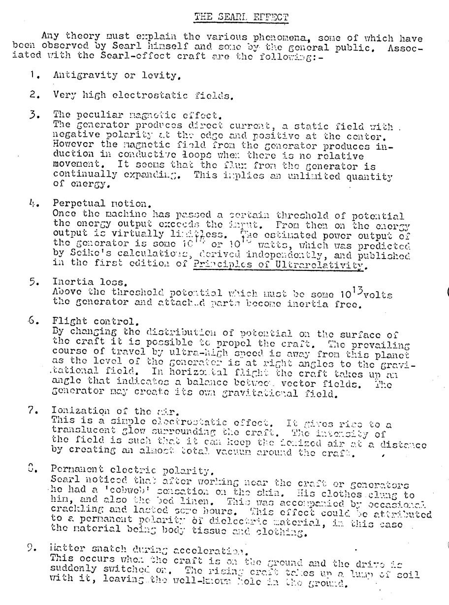
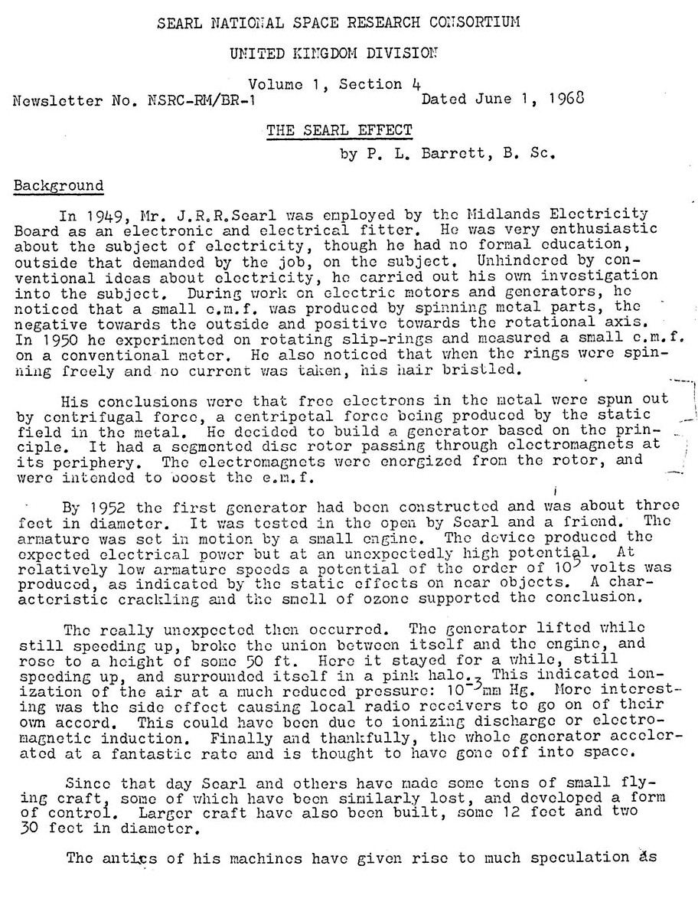
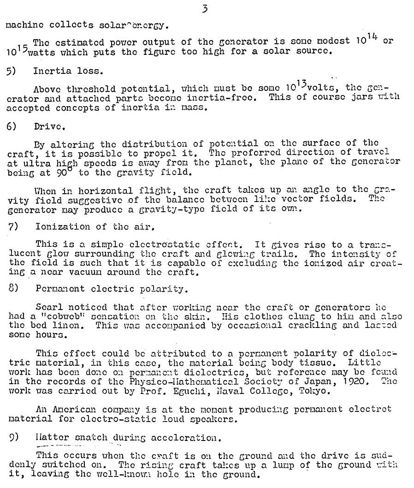
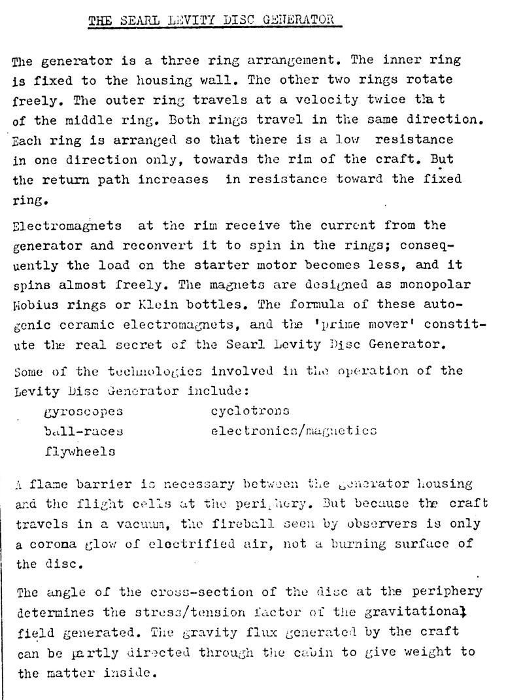
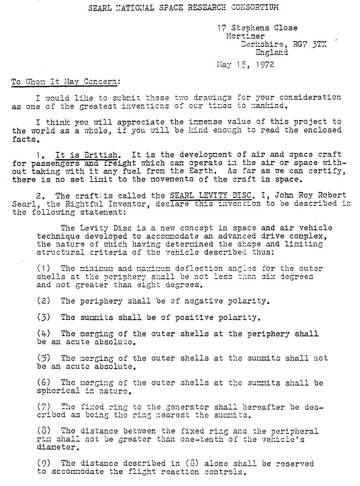
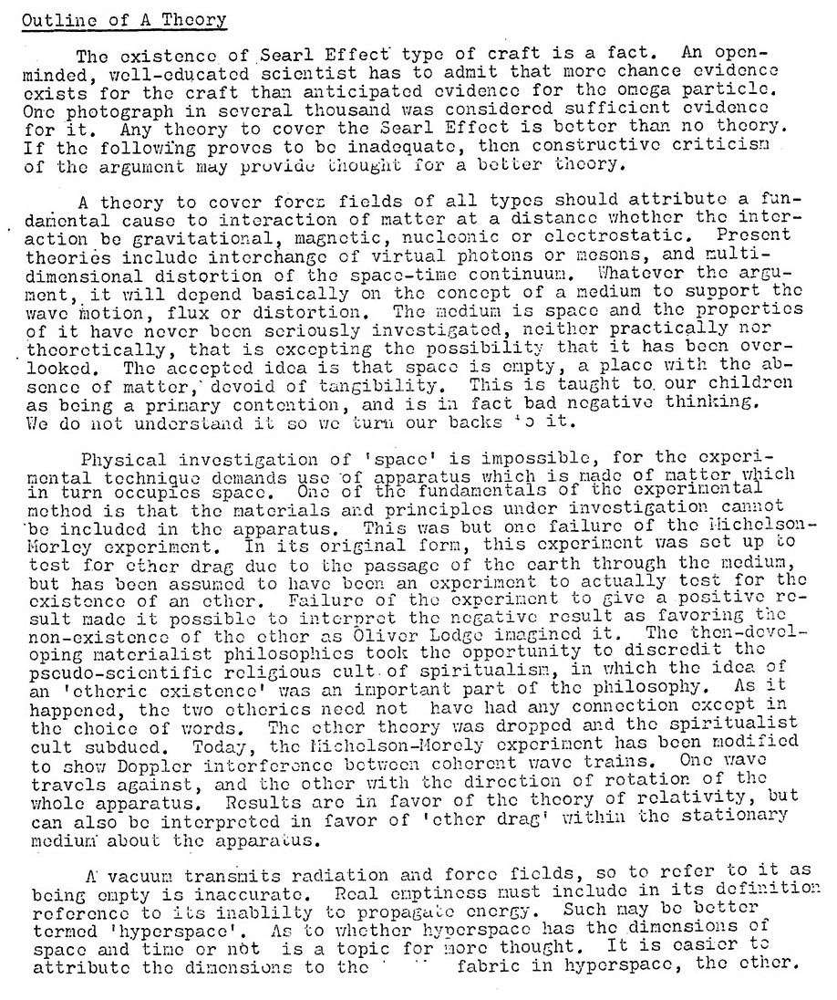
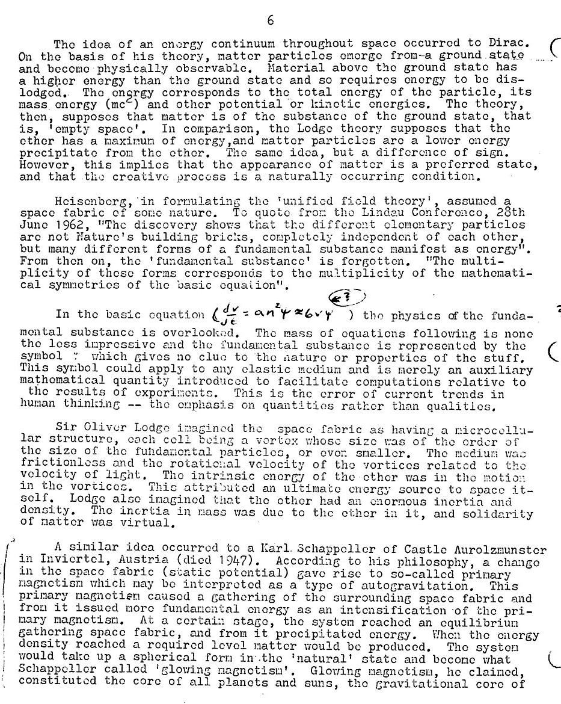
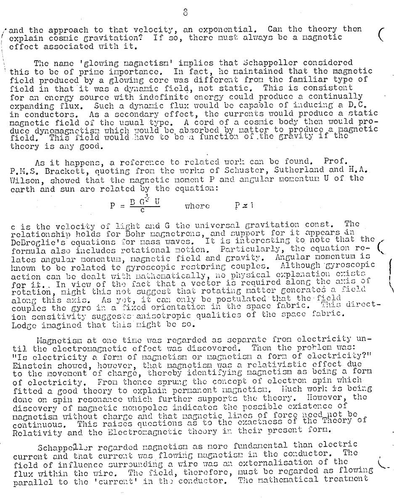
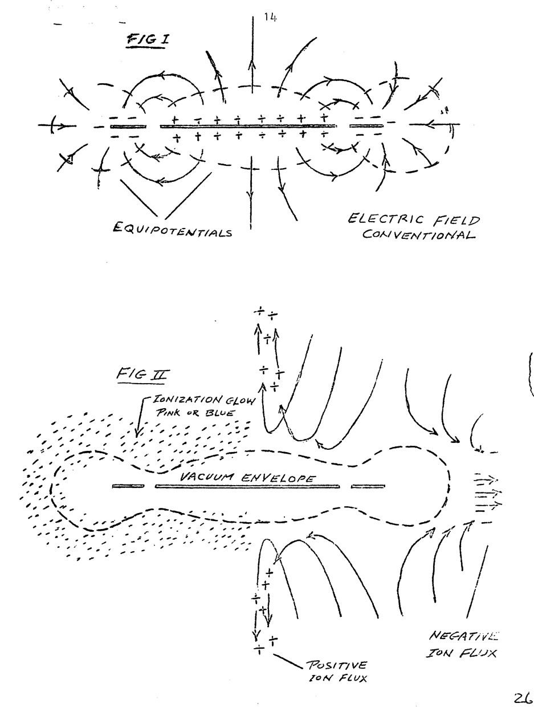
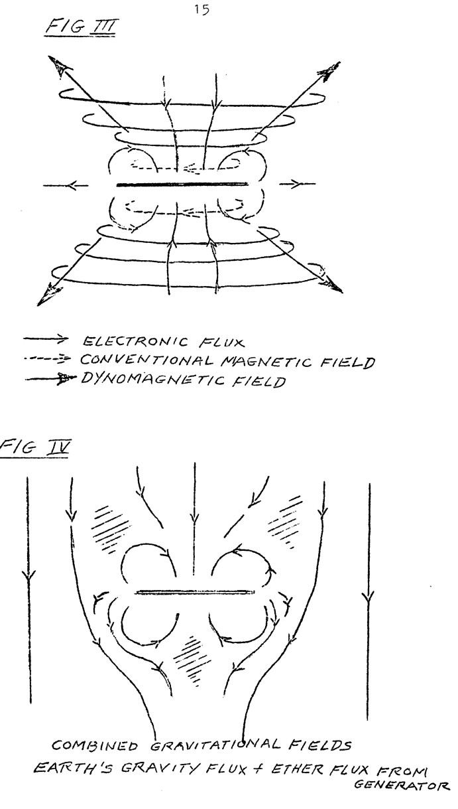
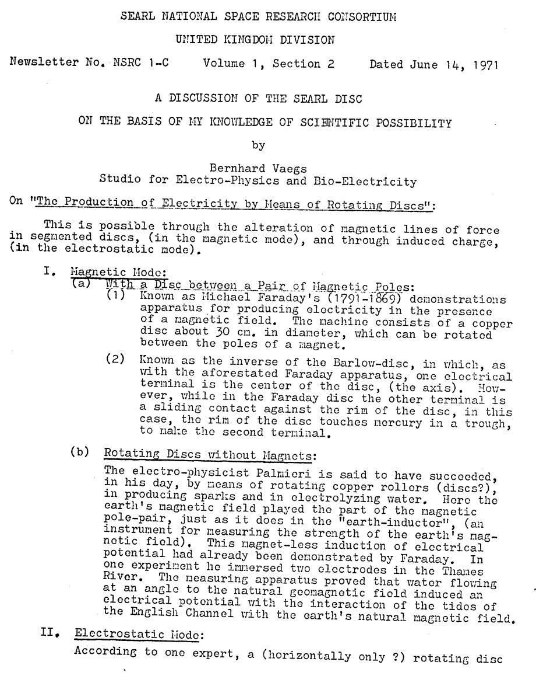
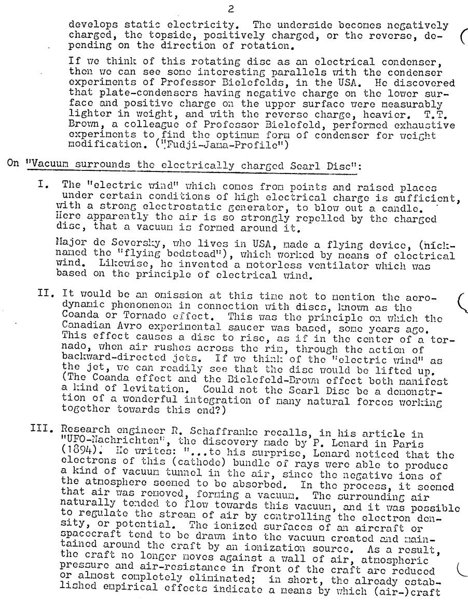
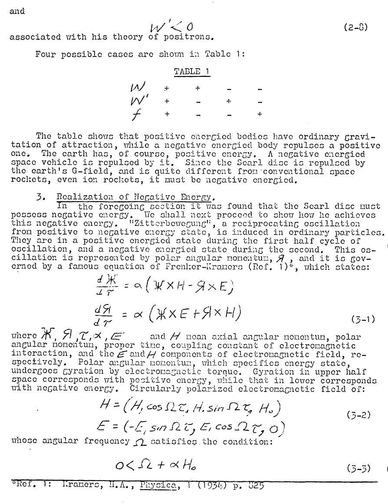
dualvtx.jpg（CGI 概念画）与本批照片不同性质，未采入判断。九、完整文档导航（瑟尔技术总结SEG-Concept-Review/07_现代物理提纯_2026-10-09/ ＋ 上级目录 瑟尔技术总结SEG-Concept-Review/ 3 份同源展开版）
| 文件 | 回答什么问题 |
|---|---|
00_导读_提纯总览与溯源时间线.md | 全貌、时间线、证据分级、4 册含金量分布 |
01_原著二次提纯_平方定律与结构函数.md | 「平方定律」到底在算什么（含实算校验：第一组是真魔方，常数 46；后几组文字版残缺不可用）；为何是钕（含年代硬伤）；三环运动学；1972 规格 9 条 |
02_Barrett1968_九现象与现代物理逐条对照.md | 9 条现象逐条翻译；概念谱系；Barrett 自己的"电晕–离子风–自持回路"机制链；4 张手绘场图 |
03_现代物理关联_等离子体_MHD_磁约束_QMHD.md ★ | 核心：同极发电机 → 旋转等离子体；Cowling 定理；Taylor 弛豫 / 磁螺度；Langevin 饱和；负能波 / ECR；QMHD（Bohm 势 + 自旋磁化）；与仿星器桥 A/B 的对接 |
04_材料学提纯_四层结构到磁材料谱系.md | 四层 = 闸流管式"磁控四层单向器件"；原著手册指向软磁与 2003 综述的永磁口径冲突；与 ⑦ 饱和判据的对接 |
05_可证伪清单与量级校核.md ★ | 全部量级算术；零假设三件套；P1–P10 检验清单；口径纪律表；完成度刻度 |
▲ 以下 3 份位于上级目录
瑟尔技术总结SEG-Concept-Review/（与 08 同一编号序列，不在 07 目录内）：
由网页 ⑥-quater（v3.12）与 ②-bis（v3.13）点名引用。 | |
08_幻方四相sin复合波充磁模型_2026-10-09.md | 中环 Phasing 四相复合波模型； 自 v3.12 起扩为 SEG 充磁总纲（§11~§19 与网页 v3.12 → v3.20 逐轮对应） |
09_充磁原理与工业对照_2026-10-09.md ★ | 工业怎么给磁环写多极径向（麦册 P12/P13/P14/P16/P18）； AC 不整流 = 退磁；环形绕组三拓扑；全网七条佐证；过渡带 THD 数值傅里叶； 三条口径回流 + 四条纪律 → 点名它的视图：⑥-quater / ⑨-ter |
10_磁性材料优化与复合波频率充磁_2026-10-09.md ★ | 趋肤深度 δ–f 五曲线； 材料四步倒推链 ⇒ 铁氧体是物理必然；材料库 Hsat；B_sat 1.73 T「材料上不可能」； 四份新一手材料对材料学的回流 → 点名它的视图：②-bis / ② |
另：本轮的「长篇 docx/pdf 文字优先、按需看图」读法（546 图 → 实读 28 图，省约 95% 读图量） 已写入 SOUL 铁律 149。⚠️ 反例：表格与手写页必须读图（本次第二组魔方文字版残缺即为例证）。
十、★ 桥 G：中环 phasing coil ↔ 磁约束聚变（仿星器）—— 老师问「有没有共通之处」
有，而且这是本页目前最硬的一条跨领域桥。两侧防的是同一类数学灾难：
低阶可公度。
① 词汇映射：SEG 的两个「绕数」是定子极数 N ↔ 滚筒极数 P。
几何口径（v3.26 订正）：定子环在里、滚筒在外 —— 滚筒整圈都在定子环外径之外，
骑在环的外柱面上（与 ⑤ 页四层径向尺寸链一致：定子磁环 → 外包铜环 → 6 mm 气隙 → 滚筒）。
滚筒公转时 ω_自 / ω_公 = n + 1 给出一个旋转数，滚筒的极图案要绕几圈才与定子图案重新对齐，由它决定；
⚠️ v3.27 订正 · 同一个「8」不要串台：一根滚筒的俯视图是一个圆、
正视图是一个长方形，这个长方形沿轴向（高度方向）等分成 8 份，每一份是一个滚筒片
（Searl 原文 "ROLLER SET = 8 SEGMENTS"）。⇒ 8 = 一根滚筒的分片数，
不是绕定子环排布的滚筒根数；根数 n = 12（与 ⑤ 页默认一致；原版三环 12 / 22 / 32）。
制作与装配的一手细节见 ②「②-quater」卡。
仿星器的两个「绕数」是环向 1 ↔ 极向 ι（rotational transform）。
② 灾难同形：gcd(N, P) = d > 1 ⇒ 每 N/d 圈周期性对齐一次 ⇒
振动、定点磨损（磁齿轮的「嘎嘣」）；ι = m/n（低阶分数）⇒ 与线圈谐波共振 ⇒ 撕出磁岛 + J ∼ 1/x 奇异电流。
③ 处方同形：gcd = 1（并让 lcm 尽量大） ↔ ι 取无理数（最好带剪切、逐层变化）。
在 KAM 理论的语言下，这两条是同一条定理的两件外衣（可公度环面共振破裂，充分不可公度者存活）。
④ 桥 B（已下修过的口径）：二次无理数（φ ≈ 1.618 与 √2 ≈ 1.414）在两侧同时以「最无理」的身份出场
—— Hurwitz 定理：φ 的连分数全是 1，逼近常数最差，最难被分数逼近。
⚠️ 不能说「两边都是黄金比」：据一手 PDF，Landreman 的第二族实际取的是 ι = √2，不是 φ。
⑤ 桥 A 已经在真实装置上被量出来了（这是它从「措辞相似」升级为「同一条数学」的关键）：
取三台仿星器的 VMEC 平衡文件（wout_HSX.nc 等），扫描 ι(s) 剖面跨过哪些 n ≤ 20 的有理面 m/n ——
HSX / precise QA / precise QH 三者的 n ≤ 6 低阶有理面数量全部为 0，且三者用了三种不同的避开策略。
这不是巧合，是明确的设计目标。⇒ SEG 可以借用这条可计算的判据：选定 N、P 后，
检查 gcd 链上是否出现小分母，而不是只查 gcd = 1 这一条。
⚠️ 三条边界（必须随结论一起说，不许省）：
① 时变性：SEG 的滚筒在转 ⇒ 场是时间相关的；MHD 平衡（含这里的三个构型）说的是静场。
所以 SEG 与「仿星器平衡」之间不存在直接的方程对应 —— 能对应的只是设计原则层，不是解层。
② 一盆冷水：同一份对话 PDF 里，对原 ι = 2 构造明确写了
「changing the frequency to an irrational number cannot work」 ——
别把「改成无理就能避开共振」这个直觉照搬到 SEG / Anu。
③ 三条硬冲突（由本目录 06 划清）：拓扑（Anu 的球面自闭合弹簧 vs 仿星器的环面结）／
磁场无源汇（∇·B = 0 是方程层硬约束，与「力流出/流入之洞」不相容）／
量级（Anu 1680 匝 vs 真实 ι ∈ 0.1~2，差三个数量级）。
对应文档：磁约束聚变/06_Anu螺旋与仿星器_共性五条冲突三条.md、
07_SEG_Anu_仿星器_关联地图.md（四步方法论 S1 词汇映射 → S2 升级为可计算命题 → S3 数值/实验检验 → S4 边界声明）。
十一、⑧-bis ★「单质氕 variety 1 = 中子」的四层判定 —— 老师问「结合张祥前的中子动力源」
老师本轮把三样东西连在一起：张祥前「飞碟动力源来自中子」、海外「一对 boson pair 电子对」、
以及 Leadbeater《神秘化学》里单质氕 variety 1 的「9 正 / 9 负」，并推测
variety 1 就是中子（理由：9+9− 磁荷正负抵消、0 自旋），进而设想
SEG 运行时的高频辐射磁场用高速电子对打散分子键、间接取得中子与核能。
本卡片按本页一贯的四层纪律逐层落地 —— 原文层（OC 说了什么）/ 对撞层（老师的观察成不成立）/
判别层（有没有判别力）/ 机制层（能不能连成因果）。
结论先给：
✅ 老师的方向对 —— OC 的「9 正 / 9 负」确实指向核子层面的中性结构；
⚠️ 但落点要平移一格 —— 那对结构在原文里是
「质子 / 中子这一对」，不是「中子单质」；而
❌「打散分子键 ⇒ 得到中子」在能量上差 5.5 个数量级。
左栏是 OC 原文本身：氢的 18 个 Anu 分 6 组 × 3，构成两个交错三角形； 种类 1 的正半 = 5 正 + 4 负（净 +1），负半 = 4 正 + 5 负（净 −1）⇒ 合计 9 正 / 9 负。 ⚠️ 而种类 2 = 10 正 / 8 负，总数同样是 18 Anu、重量数同样是 1.00 —— 这一条是后面「判别层不成立」的根。 中栏是 Phillips（1997《Occult Chemistry Re-Evaluated》）的 omegon 分解： o = +5/9、θ = −4/9，质子 = 5o + 4θ（净 +1）、中子 = 4o + 5θ（净 0）， 两者 omegon 数都是 9；他在导论里写的判据是 "nine and only nine SU(9) monopoles form a magnetically neutral system"。 右栏把「化学尺度」与「核尺度」画在同一根对数轴上 —— 这不是修辞，是这条因果链的断点位置。
表 A · 四层判定逐条（每条都带原文/复算依据）
| 层 | 问的是什么 | 结论 | 依据 |
|---|---|---|---|
| ① 原文层 | OC 说种类 1 是什么？ | 两个半三角 —— 正半 [5 正 / 4 负] 净 +1；负半 [4 正 / 5 负] 净 −1；整体 9 正 / 9 负 = 净 0 | 原文 248–252 行（02_氢族与两种变体_档案原文.md §2.1 逐字） |
| 种类 1 与种类 2 有区别吗？ | 只有正负 Anu 的配比不同（10/8 vs 9/9）；总数同为 18、重量数同为 1.00 | 同上 + 独立复算（18/18 = 1.00） | |
| OC 里有「中子」这个条目吗？ | 没有。OC 的元素表按 Anu 数排列化学元素，无「中子」项；种类 1 与种类 2 都被称作「氢原子」，且都在氢族章内 | 表 280（H 18 / 1a Adyarium 36 / 1b Occultum 54 / 2 He 72） | |
| ② 对撞层 | 老师的「磁荷被正负抵消」成立吗？ | 整体层成立（9 − 9 = 0）；半三角层不成立（±1）；⚠️ 且 OC 的「正 / 负」有 三种用法（Smith 指出），单说「9 正 / 9 负」不完备 | 05_Smith再评估 §1；06 §1.2 |
| 与 Phillips 的呼应有多强？ | ★ 数论结构同构、机制不同一：OC 正半「5 + 4」↔ 质子「5o + 4θ」，两者净电荷都是 +1，但来源不同 —— 一个靠「多 1 个正 Anu」，一个靠 5/9 与 4/9 恰好配成 1 | Phillips 导论原文（06 §1.1–1.4） |
|
| ③ 判别层 | Anu 数能区分「氢」与「中子」吗？ | 不能。种类 1 与种类 2 同为 18 Anu；且中子 1.008665 u vs 氢 1.007825 u，只差 0.08% —— 按整数 Anu 计数的粒度根本分辨不出 | 独立复算（_复算18_输出.txt） |
| 「0 自旋」是 OC 说的吗？ | 不是 —— OC 全文无自旋量子数；ortho / para / 自旋 / spin 检索命中均为 0。⚠️ 但 Smith 说 OC 描述过「spinning charged particles 的 Larmor 进动」（1924，早于 1925 自旋提出 1 年），且他自己加括号注明「磁荷概念在他们的出版物里没有明确提到」 |
全文检索 + 06 §4.2 |
|
| 项目内有没有同类先例？ | 有，而且已被纠正过一次：旧解读曾把 Occultum（54 Anu） 猜成「可能是 ³He 或中子」，老师指正为 氚（³H） | 08_旧解读勘误表.md §五 · 第 6 条 |
|
| ④ 机制层 | 打散分子键能取出中子吗？ | 不能。O–H 键 4.8 eV；H₂ 解离 4.5 eV；水第一电离能 12.6 eV —— 而氘核结合能 2.22 MeV、核子平均结合能 ≈ 8 MeV ⇒ 差 5.5 个数量级。化学能级产不出核反应 | 标准键能 / 核结合能数据（见右栏对数轴） |
| OC 自己主张自由能源吗？ | 不主张。OC 是一套「结构目录」—— 只记产物的形状与计数、不记能量；「用 OC 取能」是 Lyne 等后人加的 | 02 §〇；07_Lyne_以太物理学.md |
表 B · 四个外部关键词 —— 来源 / OC 里有没有 / 可检验性
| 关键词 | 来源 | OC 里有吗 | 可检验性 |
|---|---|---|---|
| 「飞碟动力源来自中子」（张祥前 · 果壳星球） | 网络 / 民间 UAP 叙述 | 无 | ❌ 无量化预言、无可复现装置；且「中子作动力源」缺少可写下的能量收支（中子不荷电、不能直接做电磁功） |
| 「一对 boson pair 电子对」 | 海外 UAP / 自由能圈 | 无 | ⚠️ 先要澄清所指：若指 Cooper 对，它只在超导体内部、温度 < T_c 时存在，空气中不存在；若指双光子/双玻色子，那是高能过程。另：「电子对」本身荷 −2e，不是中性对 |
| 「variety 1 = 中子」 | 老师本轮推断 | 原文无此说 | ⚠️ 与原文「水分子 H₂O 中一个 H 属 1 类、一个属 2 类」直接冲突（自由中子在分子里不存在）⇒ 该推断在 OC 框架内既不可证实也不可证伪，属外挂解释 |
| 「高频辐射磁场打散分子键 ⇒ 得中子」 | 老师本轮推断 | 无 | ❌ 前半段（射频放电打断 H–O 键）物理上真实；后半段（⇒ 得中子）能量差 5.5 个数量级。这与本页 ⑧ 已撤掉的那个「10¹³ V ÷ 3 V ⇒ 差 12 个数量级」属同一类错误：跨口径相除 / 把不同尺度的效应连成因果链（⑧ 已于 v3.40 订正） |
⚠️ 口径提醒（本页统一）：
① 本节所有 OC 引文均落到具体行号，不转述；所有推算均独立复算，不复用二手结论。
② 「variety 1 = 中子」不是 OC 的命题，是本轮的外挂解释。本页按老师要求的纪律，只登记、不背书。
③ 若老师希望继续深挖，唯一有判别力的现代量是磁矩（中子 −1.913 μ_N / 质子 +2.793 μ_N）——
但 OC 完全没有磁矩数据 ⇒ 这条线在 OC 内部无法推进，只能作为与 Phillips 模型对照的外部标尺。
依据文档：未来氢内爆汽车/OccultChemistry精读/ 全 12 册（重点 01 / 02 / 06 / 08 / 09）。
十二、★ 充磁原理与工业对照 · 关键判据速览（v3.21 新增）
本节把散在 ⑥-quater（v3.12）与 ②-bis（v3.13）两处的结论收成一页，并把配套文档
09_充磁原理与工业对照_2026-10-09.md、10_磁性材料优化与复合波频率充磁_2026-10-09.md
登记进上一节导航。
⚠️ 口径：以下全部"工业数据"均为公开引用、非本页实测，来源表见 09 文档 §10；
且 工业界的评价方向与本页相反（工业在压谐波，本页在用谐波）—— 引用时必须同时说明这一条。
A · 成形机制：工业 vs 本页（这是全节最重要的一张表）
| 维度 | 工业主流（麦册 P13 / Bunting / Howe） | 本页 Phasing 环路线 | 判定 |
|---|---|---|---|
| 极数由谁决定 | 夹具（磁轭 + 绕组）：槽数 ≡ 极数，相邻极绕向相反 | 假设由绕线波形决定 | 工业无对应物 |
| 用几种波形 | 一种（方波 / 梯形 / 正弦 / 斜极，可定制） | 假设多频复合（幻方四相 34/68/102/136） | 机理假设 |
| 电流量级 | 脉冲峰值 上万安培；充磁机 1000 / 3000 / 5000 V 三档 | 本页 ⑦ 算出 8,640 A（36 匝）/ 15.9 kA | 同量级 ✅ |
| 错极怎么做 | 磁轭按错极方式"一一对应"（P13 原文）；或分段装配 / 斜极 | 由 δ(z) 相位分布参数化 | 工艺可迁移 ✅ |
| AC 直接上会怎样 | 退磁（半周正写半周反写；磁粉探伤正是用 AC 退磁）；RLC 自由放电还会反向过零，故工业用 IGBT 截波在首峰切断 | 必须先 DC 整流 才谈得上充磁 | 判据成立 ✅ |
| ⚠️ 环形绕组三拓扑 | 普通 toroidal 环外场 ≈ 0（安培环路）⇒ 根本写不出径向多极 | 必须假设 Phasing 是双线并绕、含径向分量那一类 | 本页强假设 · 已入可证伪清单 |
★ 由此得出一条必须记住的结论：「工业这么做」不等于「SEG 这么做」 —— 工业侧的全部证据只能证「多极径向充磁在工程上完全成立」，不能证「SEG 的 Phasing 环按此法成形」。 后者仍只能由 ③-bis 的 Naudin 1999 观察膜实拍裁决。
B · 材料四步倒推链：铁氧体是「物理必然」，不是「当年只能用便宜货」
| # | 要求 | 推出 |
|---|---|---|
| ① | 高频 AC（1~10 MHz）要能穿透 10~20 mm 壁厚 | 需要 δ ≳ 10 mm @ 1 MHz |
| ② | δ ∝ 1/√σ ⇒ 要 δ 大 | σ ≲ 10 S/m 量级（金属σ高 4~6 个数量级 ⇒ 只能是铁氧体） |
| ③ | 还要留得住剩磁 | 排除软磁铁氧体（MnZn / NiZn） |
| ④ | 取交集 | ★ 唯一 = 各向同性永磁铁氧体 |
| 材料 | δ @ 1 MHz | 对 10~20 mm 壁厚 | B_sat / B_r |
|---|---|---|---|
| 永磁铁氧体 | ≈ 0.5 m | 完全透明（全厚度一次写透） | B_sat 上限 ≈ 0.48 T |
| 软磁铁氧体 MnZn | ≈ 11.3 mm | 穿透大半 | —（软磁，留不住） |
| NdFeB（烧结） | ≈ 0.60 mm | 只在表层写 | B_r ≈ 1.3 T（高） |
| 电工钢 Fe-Si | ≈ 5.03 µm | 皮都写不进 | B_sat 1.5~2.0 T（高） |
★ B_sat 高 与 高频穿透好 是互斥的 —— 两条路不能同时满足。
这就是 ② 校核表那一行由「偏乐观」升格为「材料上不可能」的理由：
文档给的理论值 1.73 T，而各向同性永磁铁氧体上限 ≈ 0.48 T，差 3.6~4.5 倍。
⚠️ 仍待老师裁决：源文档配方是 Fe-Al-Si-Ti（金属），若磁环确为金属则 1.5~2.0 T 成立，
但 1~10 MHz 只写 5 µm 皮层 ⇒「AC 高频写得进深度」这个前提同时失去。
C · 三条口径回流（工业侧反过来修正了本页三处结论）
| 本页原先的"疑点" | 工业侧的解释 | 结论 |
|---|---|---|
| ⑦「24 V 充不动钕铁硼」（N42 双煎饼盘仅 10.8%） | 工业充磁机本就是 1000~5000 V 级；钕铁硼需 ≥ 2~3 T | 不是模型偏差，是真实门槛 |
| ⑨-bis「细纹 = 极界畸变」 | 工业名为 Transition Zone，且直接转化为机械振动（`P_eddy ∝ f²B²`） | 工业有专名、有后果 |
| ⑥-bis-2「错极 δ(z)」 | 工业主流即斜极 / 分段转位 + 磁轭一一对应（麦册 P13/P18） | 工艺上完全可实现 |
D · ⚠️ 四条口径纪律（引用 09 / 10 两文档前必读）
① 全部"工业数字"是公开引用、非本项目实测；
② 工业界的评价方向与本页相反（工业压谐波 / 本页用谐波）—— 引用 THD 与良品率时必须同时注明；
③ Howe 1997（IEEE Trans. Magn.）：即使 90% 体积饱和、其中 90% 径向磁化，
emf 谐波仍显著偏离理想磁体，且磁体越小 / 后装配充磁偏离越大 ⇒
本页所有理想波形图只是「上界」；
④ Bunting 那 750+ 次试验做的是小型径向传感环，只证「方法可迁移」，
不可外推到 SEG 的 34 极 / 4,410 极参数。
E · 可证伪清单追加：P11–P16（本轮四份一手材料的新判据）
| # | 断言 | 怎么测 / 判据 | 成本 |
|---|---|---|---|
| P11 ★ | 被波形印痕过的铁氧体环，其 Bloch wall 沿周向呈波形；普通磁铁呈直线 | 小型充磁机 + 高斯计 + 示波器扫环周向 —— 二值判据，不需 SEG 整机工作 （[U] 2013 Morris 现场演示；⚠️ 自认是 Mock Up 非 Prototype） | 最低 · 建议仅次 P3b |
| P12 | 磁墙形态：俄方称线性屏障，美方明确 "not linear barriers as the Russians imply" ⇒ 抛物线型，且随转速径向外移（只测到 2~3 层） | 霍尔探头阵列沿径向扫 —— 两方互斥断言，可直接判别 | 中 |
| P13 | 环印痕 10° 回弹：停机静置数月后环被磁化，手转后每隔约 10° 方位角就反向弹回，且与转向无关 | 判：回弹方位角是否固定 ≈ 360°/n（n = 极数）；与转向无关 ⇒ 支持推迟势；有关 ⇒ 常规磁阻力矩 | 中 |
| P14 | 无自加速（美方口径：self-acceleration 从未确认） | 减法项：不需实验 —— 只需在对外表述里删掉"自加速"。 ⚠️ 与俄方「600 rpm 自持」不矛盾（那是摩擦离合器 + 起动电机维持，不是自加速） | 零 |
| P15 | 滚子与环的间隙是电压上限的瓶颈；改进到 1500 V 但只能在 325 V 以下工作（再高电弧短路） | ⇒ 必须先解释 Searl 与俄方如何维持其声称的电压差；列为"必须先解释"项，而非"先接受"项 | — |
| P16 | 滚子小径向磁铁在 ~100 g 离心下未甩出、反而吸附在环上；且实测"无显著差异" | 要当"异常"必须先量化磁吸力量级（吸力 vs m × 100 g），否则只是"磁铁被吸住了" | 低 |
建议优先级：P11（Bloch wall 扫场，最便宜） > P3b（Aharonov–Bohm） >
P12（磁墙形态） > P13 > P15 > P16；P14 直接执行（删表述）。
★ 补充纪律：三个数字（美方 7.3% / 12%、俄方 35%、传记里的"飞起来"）来自三台不同的机器，
不可互相验证 —— 尤其美方的 7.3% / 12% 不能当作俄方 35% 的旁证。
配套文档：
瑟尔技术总结SEG-Concept-Review/09_充磁原理与工业对照_2026-10-09.md（§1 工业夹具 / §2 AC-DC 判据 /
§3 环形三拓扑 / §4 错极 11 种 ↔ 工业实现 / §5 七条佐证 / §6 THD 实算 / §7 三条回流 / §8 四条纪律）；
瑟尔技术总结SEG-Concept-Review/10_磁性材料优化与复合波频率充磁_2026-10-09.md（§1 δ–f 曲线 /
§3 四步倒推链 / §4 B_S 订正 / §5 材料库 Hsat / §7 七条优化清单 / §10 四份新材料回流）。
同源总纲：瑟尔技术总结SEG-Concept-Review/08_幻方四相sin复合波充磁模型_2026-10-09.md（§11~§19）。
⑨ 立体磁极显影 · 单滚筒片 —— 充磁完毕后的三维磁力线与磁极带
把 ④-quater 的二维 B 场模型升到三维，落到单个滚筒片上：
滚筒片被写成 p 对极径向磁化 M(θ,z) = M₀·cos( pθ + 2π·δ(z) )·r̂，
其中 δ(z) 就是 ⑥-bis-2 的错极相位分布 —— 于是「错极」在三维里自然变成
磁极带沿轴向的螺旋 / 折线走向。
注意 M 的方向恒为 r̂（径向） —— 这正是 ⑥-ter 那条「俯视图上磁纹永远径向直」的三维体现：错极只让极带沿轴向走成螺旋 / 折线，不会让极带在横截面里歪。
等效面磁荷 σ_out = +cos( pθ + 2πδ )（外柱面）/ σ_in = −cos( pθ + 2πδ )（内柱面），
对全部面磁荷做三维库仑叠加得 H，再用中点法（RK2）积分三维磁场线，按沿线 |H|（log 标度）着色。
投影与渲染全部本页自绘（正交相机 + 画家算法按相机深度排序 + 深度调色），不依赖 three.js，
以保证这张页面在任何离线环境下都能打开。
⚠️ 模型边界：三维面磁荷静磁模型，只看形态；
未含磁滞 / 各向异性 / 端部退磁 / 体积磁荷项（径向磁化的 ∇·M = M_r/r ≠ 0，本页略去，薄壁下量级小）。
不是 FEA，量值不可直接用于设计。
📐 关于「闭合不闭合」：本视图的极对数 只允许整数对 —— 因为三维实体磁环在结构上必须闭合（极带到 θ = 2π 还得接回 θ = 0）。 若你想看 f₁ 为奇数时（三阶 17、六阶 39）磁力线接不上的样子， 请到 ④-quater 把「极对数 p」滑块拖到 8.5 / 19.5（步长 0.5）， 那里是 θ×r 的平面展开，接缝缺陷看得最清楚；其原理与三条补救方案见 ④-quinquies。
⑨-bis ★ δ 判据 —— 定子极图案 ↔ 滚筒极图案 的相位差，怎么决定「浮住 + 能跑」
承接上一轮对「searl 说的 90° 相位差」的考据：把其中最硬的那条候选 A1（定子环极图案 ↔ 滚筒极图案）
做成一张能动的判据图。取 δ = 两者空间相位差（用电角度；机械角 = δ / p），
磁齿轮（同周期极图案互相作用）的唯象关系为
F_t ∝ sin δ（切向 · 驱动）、F_r ∝ cos δ（径向 · 吸附）。
⇒ δ = 90°：径向归零（浮住）+ 切向最大（跑起来） —— 这正是文献里那个 90° 的力学含义；
δ = 0° 是纯吸附（N–S 对齐 ⇒ 卡死）；δ = 180° 是纯排斥（推开）。
⚠️ 口径：「90° ⇒ 浮住 + 能跑」可用磁齿轮力学解释；
「90° ⇒ 自发加速到自持 / 飞离」现有资料给不出机理（纯静态永磁 + 保守场受 Earnshaw 定理限制）。
注意 δ 是运行时的相对位移角，与 ⑥ 的写入偏置 ψ（充磁档 0° / 180°）是两个不同的量，别混。
📐 怎么读：① 俯视图里外圈灰环 = 定子极带、内环红蓝 = 滚筒极带，虚线弧就是 δ；
② 红（切向）与蓝（径向）两条曲线在 180° 内各走半个周期，交叉点恰在 δ = 90° —— 那一刻
径向力过零而切向力取最大值；③ 右栏给当前读数与判语。
⚠️ 归一化示意：曲线只表达角依赖关系（∝ sin / cos），幅值未按真实几何与材料折算，不可当设计值。
四种典型错极的立体对照（同一台设备、同一 p，只改【写入相位分布 δ(z)】）
📐 四格的段数、周向错移、幅值互不相同，但 p 与幻方阶完全相同 ——
所以画面上呈现的差异全部来自写入相位。δ 三个数字依次是「下表面 → 中截面 → 上表面」的错移量（单位：极距）。
▶ 本节只画了「中层 Phasing」这一路。三路磁化（Phasing 径向多极 + 外层轴向 DC + 内层 A.C.）叠加之后的最终磁纹与磁力线（2D 剖面 + 3D 立体）在 ⑫ 三磁场叠加 · 终态磁纹（快捷键 =）。
⑨-bis 中环波形调制 —— 单频 sin(34t) 与复合波，写出的磁纹到底差在哪？
把 ⑦ 算出的中环电流「波形」直接接到「空间磁纹」上。行波写入模型 —— M(θ, t) = F( pθ − ωt )，F(x) = Σ aₖ · cos(k·x)。 四阶幻方的四相频率 34 / 68 / 102 / 136 Hz 恰为基频的 1 · 2 · 3 · 4 倍 ⇒ 正好对应 k = 1…4 —— 这就是「复合波」在空间上的物理含义：它把高次空间谐波一起写进了磁环。
📐 怎么读：① 上半是时间波形（各次分量虚、合成实）；② 中间是空间磁纹的极带展开 ——
红 = N 极朝外、绿 = S 极朝外，白线是极界，白曲线是 M(θ)；③ 下半是谐波含量与当前读数。
★ 本图真正要看的一件事：极数并不是恒定的。cPole（④-sexies）说「极数不变」，那是在谐波幅度小的前提下。正确的三段阶梯是 ——
a₂ < 1：变号点仍 2 个/周期 ⇒ 极数 = 2p 不变，只是极界微变形；
a₂ = 1：F(x) = cos x + cos2x 在 x = π 处 触零但不变号（切点）⇒ 极数仍 2p，但极内多出一道「触零凹陷」 ——
这才是「复合波写密纹」的真实机制（不改极数，只在极内加纹）；
a₂ > 1：临界条件 F(−1) = a₂ − 1 = 0 被突破，变号点由 2 跳到 4 ⇒ 极数从 2p 变成 4p。
⇒ 复合波既能在极内加纹，也能在极端下改写极数；所以「单频够不够」必须分两种写入机构回答。
⚠️ 两副面孔（必须一起说）：这些细纹在电机里叫 极界畸变 / 谐波污染，
是负担（转矩脉动、噪音、损耗 —— 与 ④-sexies 引的「正弦比方波转矩脉动低 60%+」同一件事）；
而 SEG 若本来就要极多齿密，同一种细纹就成了特性。目的不同，评价相反 ——
所以「单频够不够」的正确答法是分两种写入机构（固定极夹具 vs 行波连续绕线），不能一句话下结论。
⑨-ter 工业界佐证 —— 多极磁环产线上，同一件物理是怎么被取舍的
⑨-bis 给的是「本页模型」的结论。这一节换到工厂视角：工业界做多极环用的也是同一条物理， 但工艺选择与评价方向常常相反。下面七条来源都是公开可查的（磁体厂商官网 / IEEE 期刊 / 行业技术文）， 逐条挂到本页已有的结论上 —— 用来检验，而不是用来背书。
📐 怎么读：
① 斜极的谐波衰减 —— 工业界把「错极 / 斜极（skewed magnetization）」当作专门的谐波抑制手段：
谐波按 sinc 因子 k_n = sin(n·p·α_s/2) ÷ (n·p·α_s/2) 被选择性压掉。
α_s 以极距为单位时化为 n·k·π/2 ⇒ 衰减只与「斜了几个极距」有关、与极数 p 无关
（换极数不用重调斜角）—— 这正是 ⑥-bis-2 里 δ(z) 那条相位轴的工业原型。
② 极界过渡带宽度 → 谐波含量 —— 本图用 2048 点数值傅里叶实算（不用解析近似）：
w = 0（理想方波）⇒ 3 次 33.3%、THD ≈ 44.5%；w = 1（三角波）⇒ 3 次 11.1%、THD ≈ 12%。
中间还有选择性零点（w ≈ 0.30 处 7 次谐波被打到 0.7%）——
这就是「斜极 / 台阶极 / 平顶极」能各自压掉不同次谐波的原因。
③ 极数 → 三项代价 —— 极数越多齿槽转矩越小、波形越平滑，但充磁良品率与制造容差急剧恶化
（实测 4 极 98% / 6 极 90% / 8 极 85%），且涡流损耗 P_eddy ∝ f²B² 随极数激增。
底部三块 = 本节真正的落点（三条口径回流）：把工业数据回灌到 ⑦ / ⑨-bis / ⑥-bis-2 三条本页结论上。
| 来源 | 原文结论（关键措辞） | 对本页哪一条形成支撑 |
|---|---|---|
| Bunting / Magnet Applications 《Magnetising Fixture Winding for Magnet Ring Sensor Project》 |
超过 750 次试验得出：各向同性（isotropic）磁环经仔细设计的多极充磁夹具， 可在距磁面 1 mm 处得到 THD 最低的正弦磁密波形；夹具「including a winding with a large number of distributed turns to achieve a true sinusoidal waveform with a very low harmonic distortion」 | ★ 最强的一条：直接证明「用绕组形状去设计磁场波形」是工业标准做法，且必须分布式多匝 —— 与 ⑥-bis-2 / ⑨ 里 Phasing 环的形态（连续绕线 · 多匝 · 相位可设计）一致； 同时说明各向同性是前提（呼应 ②-ter 的取向结论）。 |
| 同上（材料与成本） | 粘结钕铁硼所需充磁能量是铁氧体的 7 倍；铁氧体环成本 < 钕铁硼环的 10%； 项目最终选用各向同性铁氧体环 | 支撑 ②-bis「瑟尔用铁氧体是物理必然」的成本面：不只物理上只能选它， 产线上它也最省充磁能量。 |
| Bunting 充磁设备页 | 充磁机等级：BMCS 0–1000 V / 100–200 J、BMCL ≤ 3000 V、BMC ≤ 5000 V（工业量产）； 波形可定制方波 / 梯形 / 正弦 / 斜极，极数 2–20+；另有「Fine Pole Pitch < 3 mm」与「Halbach」夹具类目 | ★ 回流 ⑦：本页 ⑦ 算出「24 V 充不动钕铁硼」并非模型偏差 —— 工业充磁机本身就是1000~5000 V 高压脉冲 + 大电容级别。 |
| CSDN《电机磁环极数选择：4 极、6 极与 8 极的性能对比与应用》 | 充磁良品率实测：4 极 98% / 6 极 90% / 8 极 85%；6 极因 3 次谐波实测 THD 15~20%， 各极强度最大差异可达 10%；夹具精度需 ±0.5° 以内 | 支撑 ⑨-bis「细纹不是免费午餐」：极数上去以后，谐波与均匀性的代价是可量化的工程损失。 |
| tsight.io《多极磁场拓扑的工程悖论》 | 「极界模糊（Transition Zone）会导致磁场波形出现高次谐波，直接转化为机械振动」；
涡流损耗 P_eddy ∝ f²·B²；磁通深度：低极数深、高极数浅（集中在表面）；
制造容差「低极数宽松 / 高极数极严」 |
★ 回流 ⑨-bis：本页说的「极界畸变 / 谐波污染」在工业里有确切名字与后果， 正是「两副面孔」那条口径的外部依据。 |
| IEEE Trans. Magn. 1997（D. Howe） 《The design of radial-field multipole impulse magnetizing fixtures for isotropic NdFeB magnets》 |
结论原文：「even when a magnet is almost ideally magnetized, e.g., 90% volume saturation of which 90% is essentially radially magnetized, the harmonic content of the emf waveform can depart significantly from that which would result from an idealized magnet… This departure would become more pronounced as the magnet size is reduced, or if the magnet is multipole magnetized as part of a subassembly」 | ★ 最硬的一条边界：本页 ④-sexies cPole 讲的「波形 → 极界」其实是理想化极限；
真实充磁永远达不到 100% 饱和，而且磁体越小 / 后装配充磁，谐波偏离越大。
⇒ 本页所有「理想波形 → 理想极图案」的图，都应读作上界，不是产线实测值。 |
| AIC Magnetics《Magnetization Directions》 | 斜极对各次谐波施加 sinc 型衰减因子 k_sn = sin(n·p·α_s/2) ÷ (n·p·α_s/2)，
可选择性地压掉 5 次 / 7 次（齿槽转矩与转矩脉动主因）；编码器环过渡区宽度应 < 极距的 15%、
极距角公差 ≤ ±0.5°；工业多极环极数覆盖 2 ~ 128+ 极 |
给 ① 面板提供公式与工程阈值；并说明 ⑥-bis-2 的「错极」在工业里是成熟量产工艺， 不是瑟尔独有的发明。 |
⚠️ 口径纪律（必须一起说）：① 上表全部为公开网页 / 期刊引用，非本页实测； ② 工业界的评价方向与本页相反 —— 电机要的是干净的少数极（低 THD、低齿槽）， 而 SEG 若真要极多齿密，同一批谐波就从「污染」变成「特性」； ③ Howe 1997 的边界提醒：本页所有理想波形图都只是上界，真实磁环的谐波偏离在磁体越小、后装配充磁时越大； ④ Bunting 那个项目做的是小型径向环（传感用），不能直接外推到 34 极 / 4410 极这种量级 —— 它是「方法可迁移」的证据，不是「参数可照搬」的证据。
⑩ Barrett 现象 × jnaudin 飞碟实验 —— 定性订正 + 交叉对照
老师第九轮指示：Barrett 的机制链（他自写的「应用理论」，全批材料里最可用的一段）不只是理论 ——
其现象层就是 Searl 飞碟实验出现过的现象，是基于 Searl 早期 SEG / IGV 飞碟数据做的机制归纳，
且据老师口径 Searl 本人认可。另：
…/24_searl_SEG/jnaudin 站里有大量飞碟技术实验，本节把它们关联进来。
📌 一处必要的定性订正：此前《02_Barrett1968_九现象与现代物理逐条对照.md》第六节把第四节的机制链写成 「Barrett 自己给出了最可用的一段」，读起来像第三方的独立猜想。准确的写法是： 它是把 Searl 的观测结果翻译成电动力学语言的「机制归纳」，不是另起一套的「外人理论」。 差别在于 —— 前者意味着只要 SEG 的现象为真，这套机制就是它的第一顺位解释； 后者则会被误读成「两个互不相干的说法」。本条订正已同步写入该 md。
📐 怎么读 ⑩-A：
左起第一列是 Barrett 1968 列的九条现象（barrett1b/c 原文列表），
第三列是 jnaudin 镜像站上能找到的对应装置，第五列是该装置的介质条件，
第六列一律取 jnaudin 页面的原文措辞（不做转述美化）。
色标：● 有独立实测 ·
● 部分对应 ·
● 作者自认可疑 · ● 无对应。
★ 必须一起看的三条判读：
① 「有对应」≠「同机理」 —— jnaudin 用的是他自己的装置（升力器 / 同极盘 / 自由电子泵），
不是 SEG；这是同族现象在不同装置上的各自复现，不是对 SEG 的证明。
② 但其中 2 条给出了 SEG 自己拿不出的判据：(a) 高真空下的残余推力（→ 回答「离子风够不够」）、
(b) 反相脉冲即停（→ 排除振荡漂移伪影）。这两条的价值在于它们是对照实验，而 SEG 目击记录里没有对照。
③ 命中率最高的三条全落在「电–气界面」上（① 反重力 / ⑥ 推进 / ⑦ 空气电离）⇒ 与 Barrett 第四节的
机制链（电离 → 离子风 → 自体维持回路）指向同一族。
📐 怎么读 ⑩-B（本节核心）：
《02_Barrett1968…md》第六节留了一句话：「任何要把 SEG 往前推的工作，必须先证明『离子风解释不足以覆盖全部观测』，
否则一切无从谈起。」这个面板就是找那句话的答案。
关键实测：2003-07-03，Gravitec Inc + NASA 在 NASA NSSTC / Marshall 中心（Huntsville）的真空舱里，
把两个非对称电容器装在旋转臂 + 扭丝上，电压从 0 缓慢升到 +45 kV：
· 常压下观察到旋转平面内的推力 ⇒ 产生扭矩；电压回 0 后装置回到初始位置。
· 1.72×10⁻⁶ Torr（≈ 350 km 高度的空间真空）下，装置仍然旋转，但原文明确写「the thrust observed is weaker
than at the atmospherical pressure」；电压回 0 后同样回位。
· 原文把力分成两部分：electrokinetics（离子动量传递 + 离子云对极板的吸引，只在常压出现）
与 electrogravitics（只能在高真空观察到，原文称 this is the most interesting part）。
⇒ 结论只用「是否 > 0」这条二值判据（原文未给比例数值，本页不编造比例）：
F_atm > 0 ∧ F_vac > 0 ∧ F_vac < F_atm
⇒ 离子风是主要贡献，但不是全部贡献。
⚠️ 边界（必须一起说）：① 这是非对称电容器的实验、不是 SEG 的实验 —— 它证明的是
「该现象类别里存在非离子风分量」，不等于 SEG 的升力由此解释；
② 残余推力的量级能否支撑 50 ft 持续加速，原文未给数据；
③ 测的是旋转臂 + 扭丝上的扭矩而非净升力，与 Barrett §⑥「改变表面电位分布获得推进」只能算同族、不能算同一。
④ 第三列「矿物油」对应站内 advprop.htm 的 TT.Brown EKP device in MINERAL OIL ——
油的离子迁移率比空气低几个数量级，是排除离子风的第二条路；但本页未取到该组的实测数值，只列为待验。
📐 怎么读 ⑩-C：从站里挑出实验设计最干净的三条 —— 它们的共同手法是
「换一个条件，效应应当消失」，这正是本页反复强调的可证伪：
· ELPEX（1997）：两个 700 g 空心钢球 + Wimshurst 起电机（标称 250 kV，实测约 70 kV @ 湿度 75%）。
10 次同步脉冲后偏移 12 mm、周期 2 s、方向固定；把脉冲相位反相后振荡迅速停止 ——
这一「反相即停」把「单向力」和「振荡漂移 / 气流扰动」分开了。
· AFEP（1999）：555 振荡 @ 10 kHz + 汽车点火线圈 + 氙闪光管。原理是
单线传输（Tesla 纵向静电波）+ 电容耦合地球大气以提取空气里的自由电子。
作者把 「必须电池供电、绝对禁止接地」写成硬约束 —— 因为一接地就变成闭合系统，大气里的自由电子就取不到了。
这是一条「开放性」判据，也是最容易被复现者做错的地方。
· Mini-Romag（1999）：转子 6 对极（60° 间隔、N/S 交替），定子 6 个切向扁平线圈
⇒ 只用磁场的正交分量。示波器对照：常规布置（磁轴穿过线圈轴）感应电压关于零线对称；
切向布置则「正大于负」（非对称） —— 这是「非对称感应」的实测波形，
与 Barrett §③b「无相对运动也感应」是同一族的追问。
⚠️ 强度提醒：这三条都是「效应方向可重复」级，不是「能量可净输出」级 ——
ELPEX 量到 12 mm 位移、AFEP 只点亮氙灯、Mini-Romag 只是波形不对称，距「自持发电」都还有数量级的距离。
| # | jnaudin 页面 | 装置 / 实验 | 年代 | 原理 · 介质 | 实测结论（原文措辞） | 对应 Barrett |
|---|---|---|---|---|---|---|
| A · 升力 / 推进 / 飞碟类 | ||||||
| 1 | lifters/main.htm | Lifters 升力器 | 2001–2010 | 非对称电容 + Biefeld-Brown 效应（Townsend Brown US2949550） | > 350 次全球成功复现；2003-01-22「Maximus II」250 g 升力器举起 60 g 载荷； 已被 英国 dstl（国防部）与美国陆军研究实验室（ARL）测试 | ①②⑥⑦ |
| 2 | lifters/ascvacuum/ | 非对称电容 · 高真空 | 2003 测 / 2007 公布 | 同 1，但换介质到 1.72×10⁻⁶ Torr | 真空下仍旋转但推力更弱；把力拆成 electrokinetics（仅常压）与 electrogravitics（仅高真空）两部分 | ①⑥ |
| 3 | lifters/asymcap.htm | 非对称电容推进器合集 | 2001–2004 | 电动力学 / 场推进 | 收录 NASA 二维非对称电容推进器、NASA 无推进剂轨道机动推进器 v1.0、 Serrano / Lafforgue / Brown-Bahnson 飞碟 | ⑥ |
| 4 | lifters/liftercraft/ | LifterCraft 电动飞行器 | 2003 | Biefeld-Brown；空气 | 目标：静音、无活动部件、纯电推进；提出 Lifter-Cell 模块化推进器概念 | ⑥ |
| 5 | html/advprop.htm | Advanced Propulsion（EHD/EAD） | 1999–2006 | 电液动力 / 电引力 | ARDA MkV(2001-07) ~ Mk9「XB-35」(2002-04) 飞碟试飞；GFS UAV（Coanda 效应飞碟）； TT.Brown EKP 浸矿物油；Northrop 激波减弱实验 | ①⑥ |
| 6 | html/elpex10.htm | ELPEX（Cornille 静电摆） | 1997-11 | 非对称静电脉冲；空气 | 10 次同步脉冲 ⇒ 偏移 12 mm、周期 2 s；反相脉冲 ⇒ 振荡迅速停止 ⇒ 确认推力只在单方向 | ⑥ |
| 7 | html/repulsb.htm | Schauberger「Repulsin」type B 飞碟 | 1999–2001 | 涡旋内爆（implosion）；空气 | 吸入螺杆沿外摆线螺旋空间曲线由外向内旋转；1941 年 2.4 m 模型 突然直冲撞碎工房天花板；内爆电机无热障无音障 | ① 飞碟形态学 |
| 8 | uav/index.htm | UAV 飞碟 / 电动力学 UAV | 2006–2007 | Coanda 效应 / 电动力学；空气 | ASP-XR01、X-UFO、VATR-01、QRO、Coanda effect saucer UAV project、 electrokinetics UAV project | ① 飞碟 |
| B · 静电 / 电引力 / 自由电子类 | ||||||
| 9 | html/farhom.htm | Faraday 同极圆盘发电机 | 1997-04 | 同极发电机（Faraday 1831-12-26 日记 §255–257）；空气 | 5 分钟可搭；引 DePalma「从空间直接取电」+ 1978 Santa Barbara「Sunburst」机 （斯坦福 Kincheloe 教授独立测试） | ②③a |
| 10 | html/afep01.htm | AFEP 自由电子泵 | 1999-11 | 单线传输 + 电容耦合大气取自由电子；空气（严禁接地） | 555 @10 kHz + 汽车点火线圈 + 氙闪光管；「必须电池供电、绝对不能接地」 —— 接地即成闭合系统，取不到大气自由电子 | ④⑦ |
| 11 | html/jlnvdg.htm | JLN Van de Graaff 起电机 | 1998-05 | 静电起电；干空气 | 可达 250 kV，材料约 50 美元（不含电机） | ② |
| 12 | captret/index.htm | CAPTRET（电容器–驻极体） | 2012-12 | 驻极体电容；电路 | 声称无外部能源即可给电池充电同时点亮串联 LED；作者原话「太好了不可能是真的， 我完全同意你的看法，所以必须亲自实验验证」 | ⑧ |
| C · 磁场形态 / 惯性 / 时间类 | ||||||
| 13 | html/magvtx.htm | B-Field Torsion 发生器（Rodin 线圈） | 1999-01 | B 场扭转；铁粉在玻璃板上成像 | 12 V / 3 A；磁图显示两点：① B 场线出现扭转（场增长/消失时可「旋转以太本身」）、 ② 中心孔干净整齐（与常规线圈不同） | ③ |
| 14 | html/dvtgv1.htm | Dual Vortex Generator（双极涡旋推进器） | 1999-01 | 两个锥形线圈产生 B 场扭转 | 「当双极涡旋不平衡时，能对以太介质产生推力（due to differential pressure induced）」 | ③ · Schauberger |
| 15 | html/gyrotest.htm | 陀螺进动实验 | 1999-07 | 经典刚体进动；机械 | 作者自评「This is just simple physics (nothing weird)」 —— 本页把它当「口径纪律」样本引用 | ⑤ |
| 16 | html/tsd.htm | 时间位移探测器（TSD） | 1999-02 | 双 TCXO 拍频；电路 | 两颗 16.00000 MHz TCXO 相距 ≥ 2 m，拍频约 750 Hz 输出到耳机， 用于检测「强扭转场造成的局部时空曲率」 | ⑤ |
| 17 | html/dsqromag.htm html/mromexp.htm | Mini-Romag（Dave Squires） | 1999-04 | 定子线圈轴与转子相切 ⇒ 只取正交分量 | 示波器对照：常规布置波形关于零线对称（接近/离开电压相等）； 切向布置 ⇒ 正大于负（非对称） | ③b |
| 18 | fepmenu.htm | Field Effect Propulsion 索引 | 1999– | —（索引页） | 收录 Roschin & Godin 动态磁系统实验（俄方 SEG 复现，项目内已有其 PDF）、 Podkletnov 效应、Woodward 惯性理论、Aquino System-G、Stavros 系列 | 全部 |
| 口径陷阱 | 表面现象 | 真相与处置 |
|---|---|---|
| ① 同名不同人 | html/tbfrenrg.htm 正文出现 “Barrett” |
那是 T.W. Barrett —— 超宽带雷达（UWB）先驱、《Tesla's Nonlinear Oscillator-Shuttle-Circuit (OSC) Theory》（Ann. Fond. L. de Broglie 16(1), 1991, p.23-41）、美国专利 US5493691 的发明人， 用四元数电磁分析；不是 P.L. Barrett（1968 年《The Searl Effect》的作者）。 ⇒ 两人只共享姓氏，严禁互相引证。 |
| ② grep 命中 ≠ 内容相关 | 站内搜 “searl” 命中 2 个文件 | advprop.htm 是真提到（Dave Squires 两篇：PFT Motors 改进型「towards a new Searl engine」、
「The New SEG design, an enhanced Searl Effect Generator」）；fepmenu.htm 的命中
只是 URL 文件名 russearl.html（Alex Frolov 文章的链接），正文并无 Searl。
⇒ 引用前必须回看上下文。 |
| ③ 谁做的实验 | fepmenu.htm 收录「Experimental Research of the Magnetic-Gravity Effects」 |
那是 Roschin & Godin 的俄方独立复现（动态磁系统实验）， 不是 jnaudin 做的实验。⇒ 「收录」与「自做」必须分清， 否则会把俄方的结果算到 JLN Labs 头上。 |
| ④ 时间线别错位 | 「Barrett 基于 SEG 和 IGV 飞碟数据」 | Barrett 那份写于 1968-06-01，早于 IGV 的工程化期 ⇒ 其数据基础是 Searl 1949–1952 的 SEG 飞碟实验（第一手目击 + Searl 自述）。 IGV 只能算同一机制链的后续工程化，不能写成「Barrett 引用了 IGV 数据」。 |
⚠️ 本节口径纪律（与前几节一致）：
① 上表结论全部为 jnaudin 页面原文措辞的引用，非本页实测，也非本页背书；
② 「有对应装置」绝不等于「机理已被证明」 —— 本节的用途是收集对照实验的设计思路，
不是给 SEG 找背书；
③ 本节唯一一处定性订正（Barrett 机制链 = 对 Searl 观测的机制归纳）已同步写入
瑟尔技术总结SEG-Concept-Review/07_现代物理提纯_2026-10-09/02_Barrett1968_九现象与现代物理逐条对照.md，
并在该文件内留痕「v3.19 订正」。
④ 「Searl 本人认可该机制」一条源自老师口径，项目内暂无独立书证，故在页内标注 🔶。
⑪ 溯源修正 × 三方对照 —— Searl 原版 / Roschin·Godin 俄方 / Morningstar 美方
老师第十轮指示：读透四份原始 PDF —— [T]《Antigravity: The Dream Made Reality — The Story of John R.R. Searl》（John A. Thomas Jr.， Searl 授权传记 + 1990–1993 逐段访谈 + Searl 1991-01-17 亲笔照片说明 28 条）、 [U] Unarius 演讲 2013-04（Professor John Searl and the S.E.G.，主讲 Jason Verbelli / Fernando Morris）、 [R] 俄方 Experimental Research of the Magnetic-Gravity Effects（Roschin & Godin， AIAA 2001-3660 / Tech. Lett. 26(12) 2000）、 [M] 美方 Morningstar Energy Box（Murad 等 5 人，JSE 2(2) 2013, TN 137-146）。 本节做两件事：① 修正对 Searl 教授的认知与「溯源时间线」；② 把俄方「磁环是塞小磁铁整合做的」这条工艺特征， 与 SEG 原版逐项对照找共性。
⚠️ 先说清四份材料的等级，否则后面全错：
[T] 是 Searl 授权传记 ⇒ 属「当事人转述」，不是第三方验证；
[U] 是 第三方演示会材料（官方页脚仍挂 SearlMagnetics / SearlSolution 名义）⇒ 「转述 + 自研演示」；
[R] / [M] 才是有实验章节、有仪器清单、有不确定度的第三方论文。
⇒ 本节凡写「Searl 声称」与「俄方实测」的分栏，一律不混级。另：
[R] 与 [M] 都不是同一台机器，「有共性」≠「同机理」。
📐 怎么读 ⑪-A：三栏并排的画的是同一件事的三种做法 —— 磁环与滚筒怎么构成、磁从哪来。
· 左栏 Searl 原版（文献描述）：三个同心环，每环上跑滚筒，内 12 / 中 22 / 外 32，每根滚筒由 8 段叠成；
磁环是整环波形印痕（imprinting）写出来的 —— 这是三家唯一「没有第二方复现过」的一步。
· 中栏俄方（实做）：按三环设计、实际只做了单环（论文自述 "we decided to use a one-ring design"）；
环是一段段小磁体充好磁再粘进铁电枢 ⇒ 图上画出的接缝不是美化，是原文自认的工艺事实。
· 右栏美方（实做）：干脆不用永磁环 —— 改 HyMu-80 + 铜腔里的铁磁流体，滚筒是叠层 + 涡轮 + 内藏电容。
★ 一栏一句：左边是「怎么写进去」、中间是「怎么拼出来」、右边是「干脆不写磁」。
⑪-B 对 Searl 教授的认知更新（本轮 10 条）
| # | 维度 | 旧认知 | 本轮订正 / 新增 | 出处 |
|---|---|---|---|---|
| 1 | 生年 | 只知「1946 年 14 岁」 | 1932-05-02 生于 Berkshire, Wantage, Newbury Road「The Downs」（当时是济贫院），早产 1 个月；全名 John Roy Robert Searl | [T] Ch1 |
| 2 | 1946 | 「概念诞生（梦）」一条 | 必须拆两条：1946-07-11 = 梦启（概念）（两个梦：跳房子方格 / 中心宁静的火环，每年 2 次、连续 6 年）； 1946 年 = 做出第一台 SEG（实物）。且「age of 15」是取整 —— 实为 14 岁 2 个月 | [T] Ch2 / [U] |
| 3 | 学历 | 「无正规学历」 | 更准确：16 岁拿下 6 年制剑桥神经外科奖学金，因收养监护人拒签法律文件而作废 ⇒ 不是考不上，是签不了字 | [U] |
| 4 | 就业前史 | 只有 Midlands Electricity Board | 补全链：14 岁 British Rewind Electric Repairs Ltd.（伦敦） → 化学师助理 → Shenley 医院 组织学 / 细菌学 → RAF 原型接线员 → NATO 舰炮计算机线束 → 1949 Midlands Electricity Board | [U] / [T] |
| 5 | 头衔 | 通篇当既有称谓用 | 「Professor」是 1960s 末在德国被听众投票授予的荣誉头衔（据称其电学与数学理解「与在座科学家相当」），非学历 | [U] |
| 6 | 术语 | 沿用「Antigravity / 反重力」 | Searl 本人公开反对该词：the title "Antigravity" is not technically correct ⇒ 应称 Inverse-G-Vehicle —— 飞船自带引力场，两个同向场互斥，所以不是「反」重力，而是「自己的重力」 | [T] 扉页 |
| 7 | 1952 | 只有「首台发电机 ≈3 ft 直径」 | 补：由小柴油发电机拖动起动；家用那台 240 V A.C. / 最大 11 kW（访谈原话）；先后丢失 6 台机器（飞走）⇒ 原话「If it wants to fly, give it a body」 | [T] Ch4/Ch6 |
| 8 | 产量 | 无 | 1950–1964 约 40 架「不回收模型」（照片说明原话：直上直下、极快）； 1956 SWALLOW FM598 MK.II（38 ft 径 / 64 飞行单元 / 载 3 人，Warminster 外飞）； P-11：1968-06-30 发射，3 分钟横穿 Cornwall，1968-08~12 飞行后销毁；一生共 39 艘 | [T] 照片 23/24 + Ch4 |
| 9 | 轨迹 | 「1983 前活跃」 | 1983 年「成功期」结束；1986 Munich 演讲（Searl 自述「平方定律是很老的技术」）≠ 1989 Munich 讲座录像，两件事； 1990 John A. Thomas Jr. 首次联系 Searl；1990–1999 写《Law of the Squares》，1999 已出 14 本； 2003 被人下毒；2005 家中物品被窃 | [T] Ch2/Ch4 + [U] |
| ★ 最要紧的一条：Searl 侧对「充磁」本人的说法 | ||||
| 10 | ★ 工艺自述 | 只知「用铁氧体 + 要充磁」 | 2013 演示会把「波形印痕」直接摆上台：Fernando Morris 自建小型充磁机， 用数字示波器 + 模拟高斯计扫一颗铁氧体环的 Bloch wall（普通磁铁扫出来是直线，靠波形充磁的环扫出波形）。 官方措辞："The Searl Effect is based on a unique process of magnetization where specific waveforms are imprinted onto the materials." —— 同时诚实标注边界：现场那台是 Mock Up（不发电、无特殊磁体），不是 Prototype | [U] |
📐 怎么读 ⑪-C —— 老师点名要对照的那条：您说「俄罗斯人的磁环是用塞小磁铁整合做的」，这话有原文直接支持，而且代价原文自己写了。
① 原文（[R] 第 2 节）："separate magnetized segments of rare earth magnets … were magnetized in a usual way by discharging a
capacitor-battery system through a coil. Afterwards, the segments were assembled and glued together in a special iron armature,
which reduced the magnetic energy." ⇒ 就是分段常规放电充磁 → 拼装 → 粘进铁电枢，并且自认磁能被降低。
② 同一段紧接着："High frequency field magnetization was not applied." ⇒ 俄方没用本页 ④ 一直在讲的那种复合波/高频方案。
③ 代价（原文自陈）：为什么不敢超过 600 rpm —— "insufficient mechanical durability of the magnetic system,
which was built from separate pieces" ⇒ 「拼装环」的机械代价，恰好卡在临界转速（550/600 rpm）之上那一段。
④ 美方也试过小磁铁（[M]）：据 Ivan Kruglak，俄方是 "small magnets were drilled and physically meshed within
both the rollers and the ring"，做出齿轮齿啮合效应；Morningstar 自己在滚筒端部加小径向磁铁 ⇒
结果无显著差异；且 「No small magnets were incorporated in the ring」（他们的环里没装）。
⑤ ★ 最意外的实测（[M] 原文）：原以为 ~100 g 离心加速度会把小磁铁甩出去，结果
"the small magnets were not ejected radially but were found located on the ring" ⇒
环的 HyMu-80 + 铁磁流体的磁吸力远强于离心力。
⑥ 共性 / 差异（本节结论）：
· 共性：三家都要「滚筒与环不接触」且极比有确定关系；都要滚筒同极性（[M] 实测：交替极性会被相邻滚筒抵消，场强显著下降）；
都用铜层（俄方 0.8 mm 铜箔 / Searl 铜套 / 美方铜套）。
· 差异：只有 Searl 原版声称「整环波形印痕」；俄方 = 拼装降级；美方 = 软磁 + 流体，干脆不写永磁。
· ⇒ 判据（务必一起说）：要检验「波形印痕是否必要」，必须做出整环连续写入。
用拼装环做的实验，先天既不构成对该主张的否证，也不构成支持 —— 它测的是「另一种磁环」。
⑪-D 三方对照矩阵（逐项 · 只写原文有的）
| 维度 | Searl 原版（声称） | Roschin·Godin 俄方（实做 · [R]） | Morningstar 美方（实做 · [M]） |
|---|---|---|---|
| 环数 | 3 个同心环（文献 / 设计） | 按三环设计，实际只做单环（"we decided to use a one-ring design"） | 单环 |
| 滚筒数 | 内 12 / 中 22 / 外 32；每滚筒 8 段叠成（共 66 根 = 528 段） | 自行设计，未按此数 | 12 或 24（★ 12 恰合 Searl 内环滚筒数） |
| 磁环材料 | 铁氧体（本项目由 趋肤深度倒推为「物理必然」，见 ②-bis） | 钕铁硼 110 kg（定子）+ 115 kg（转子） | 不用永磁环：HyMu-80 + 铜腔铁磁流体 |
| ★ 以下五行就是老师要的那条对照 ——「磁环是怎么来的」 | |||
| 磁环怎么来 | imprinting（整环波形印痕） | 分段常规放电充磁 → 粘进铁电枢（自认降低磁能）→ 未用高频 | 不充磁（软磁 + 流体） |
| 充磁方式 | 「恒磁场 + 变磁场组合，在板面与滚筒面写正弦图案」（[R] 转述文献 [4]） | 电容–电池组通过线圈常规放电，逐段充 | 无 |
| 替代方案 | — | cross-magnetic inserts：磁矢与主磁化成 90°；0.8 mm 连续铜箔包定子与滚筒、与磁体直接电接触 | 滚筒叠层：HyMu-80 芯 + 铜套 + 隔离铝套 + 涡轮风道 + 内藏电容 |
| 气隙 | — | 1 mm（滚筒↔环） | 滚筒↔环间隙 = 电压上限的瓶颈 |
| 极比 | SEG 4410 / 3990、IGV 2205（真值表） | D/d = 整数且 ≥ 12 ⇒ 追求「magnetic spin wave resonant mode」 | 未取 |
| 工作电压 | 10¹³ V（推算值，非实测） | 径向极化 20 kV（电极距滚筒 10 mm） | 原 100 V → 改 1500 V，实际只能到 325 V（电弧短路） |
| 自加速 | 声称自持 | 声称自加速（>50 次运行、3 个月绝对可重复） | 从未确认 |
| 重量变化 | （飞走，无数值） | 35%（350 kg 平台）；顺/逆转临界差 50–60 rpm | 稳态 7.3% / 瞬态最大 12%（不确定度 0.1–0.2 lb） |
| 磁墙 | — | 同心垂直磁墙：半径 15 m / 层厚 5–6 cm / 层距 50–80 cm / 0.05 T / 严格竖直 | 抛物线型 —— 原文 "the walls are not linear barriers as the Russians imply"；实验室只测到 2–3 层 |
| 温变 | 「加载变冷，冷到超导」 | 近机处降 68 °C（环境 +22 °C），磁墙内手伸进去「立刻很冷」 | 热电偶接地后无显著温变；Godin 后来也承认没有 Unruh 式趋势 |
| 臭氧 / 辉光 | 「变冷、产生负电荷」 | 蓝粉辉光 + 臭氧味；滚筒表面有「wave picture」放电条；无电弧侵蚀痕迹 | 臭氧（拆下 carousel 时闻到） |
| 对接上层的态度 | — | 自认「常规理论无法解释全部」；猜 Alfvén 磁声波（[9] Landau–Lifshitz） | "we found there is basically no real science to validate this concept"（指平方定律）；且 "no evidence has ever shown any working apparatus with more than a single ring" |
⑪-E 四条口径纪律（引用本节前必读）
① 「三层同心环」是设计，不是已建成的实物。[R] 写三环是按文献描述，[M] 写「从未见超过单环的实物」——
两句都对，因为俄方自己做的也是单环。别把设计当实物，也别把「未见实物」当作「设计不存在」。
② 「有叙述」≠「有记录」。[U] 里的「飞走 / 超导 / 下毒 / 被窃」全是单方叙述；
[T] 里的「39 艘 / 40 架 / 500 圈」全是 Searl 自述经 Thomas 转写 ⇒ 一律进 ⚪ 层，不得与 📐 文献层并列。
本页真正带仪器的记录只有两条：1996-03-10 示波器 3 V 与 2013 Bloch wall 扫场演示。
③ 三家不是一台机器。「有共性」≠「同机理」；俄方自认降级工艺、美方未复现自加速 ——
⇒ SEG 原版的「整环波形印痕」仍是唯一没有被第二方复现过的一步。
④ 本节所有数字都是原文抄录，非本页实测；[M] 的「7.3% / 12%」是美方自研器件的结果，
不能拿来当俄方 35% 的验证，也不能当 SEG 的证据。相关溯源时间线已同步写入
《07_现代物理提纯_2026-10-09/00_导读_提纯总览与溯源时间线.md》第二节（本轮大修）。
⑫ 三磁场叠加 · 最终磁纹与磁力线（2D + 3D） —— 光有 Phasing 不够
老师指出：只看 ⑨ 的「中层 Phasing 多极充磁」展开图与立体图是不够的 ——
真正的成品磁纹是 三路磁化叠加之后冻结下来的：
① 中层 Phasing 环（径向多极） ＋
② 外层 primary D.C.（轴向：滚筒 上 N / 下 S，定子环 上 S / 下 N） ＋
③ 内层 A.C. 高频（默认 10 MHz，可调 1 MHz – 3 GHz；抖松磁畴 / 留浅壳细纹）。
★ 本页唯一的新物理主张（其余全部承接 ③ / ④ / ⑥-quater / ⑨）：
三路磁化各自只写自己那个面 —— 径向多极写内 / 外柱面（σ = M·r̂）；
轴向 DC 写上 / 下端面（σ_z = M·ẑ，而且在柱面上 σ = M·r̂ ≡ 0）；
A.C. 只在柱面浅壳留细纹，且其空间序数 k_ac 与极对数 p
刻意不成整数倍 ⇒ A.C. 不参与定极数。
⇒ 直接回答了「为什么光有展开图不够」：「上 N 下 S」这个轴向极性，在
外柱面展开图（θ×z）上根本看不见（σ ≡ 0），它只在剖面（②）与立体（④）里才现形。
⚠️ 一个高频滑块的物理含义：A.C. 是煎饼（print）线圈，其场近似轴对称， 原则上写不出 θ 向的极数；所以上面的 k_ac 只是它在柱面浅壳留下的 冻结残迹的空间频率 —— 请试着把 k_ac 拖到 34（= 2p），会看到细纹与主极带“打架”（拍频）， 不要把它读成第 5 种充磁。
🔴 老师 2026-10-10 提出：「k_ac 这个参数多余了，k_ac 就等于 A.C. 频率 f_ac」。
本节给出裁决：不能合并 —— 但老师点出了本页一个真实的坑：有两个都叫「频率」的量没显式分开。
① 量纲不同：k_ac 是空间序数（一圈上有几个周期，圈⁻¹ / 无量纲）；
f_ac 是时间频率（Hz）。趋肤深度
δ = √( 2 / (2π f μ₀ μ_r σ) ) 只吃 f_ac，看不见 k_ac。
② 荒谬性反证（最硬的一条）：滚筒周长 πD = 95.58 mm。
若把 f_ac = 10 MHz 直接当空间序数，细纹宽 =
95.58 mm / 10⁷ = 9.6 nm —— 比 Nd₂Fe₁₄B 晶粒（≈5 μm）小 500 倍、
比粘结磁粉颗粒（20~90 μm）小 2000~9000 倍、比工业最小极距经验值 0.1 mm 小 10⁴ 倍。
没有任何磁畴能承载 9.6 nm 的条纹 ⇒ 两者在数值上绝不可能是同一个量。
③ 工业侧独立反证：多极充磁的极数由【模具取向 + 极靴排列】共同定 ——
「铁氧体径向磁环的极数在生产模具中就已设计好…模具做成径向六级，想充成径向八极就无法实现」；
「极靴按目标极数排列，相邻极靴通入方向相反的脉冲电流」。全程与电源频率无关。
④ 页面自洽反证：④-ter 已写「sin(34t) 单频在原理上完全够写 34 极，极数由绕组几何定」（④-sexies）。
A.C. 这一路同理 —— k_ac 由 A.C. 煎饼的绕线几何定，不是由电源频率定。
⑤ 那老师这个直觉从哪来？来自 Searl 体系的「计数记法」：④ 页那句
「f₁ = 34 Hz ⇒ 34 极带 = 17 对」里的「Hz」，其实是每圈周期数 @ 1 rev/s
（34 Hz ⇔ 34 圈⁻¹）。在那套记法里「频率数值 = 空间序数」确实成立 ——
但那是空间序数的另一种写法，不是电磁频率。本页的 f_ac 属于另一条线
（真实时间频率，决定 δ）。两条线的完整对照见 ⑤ 卡新增小节。
★ 参数 ↔ 层位对应（答老师第二问「a_ac 是不是最内环层的 A.C.」）：是 ——
本页的三源就是 ④ 时序里的三层同轴嵌套：
轴向 DC a_dc = 外层 primary D.C.、
径向多极 p = 中层 Phasing 环形（torus）、
a_ac / f_ac / k_ac = 内层 A.C.。
三个 A.C. 参数分工完全不同：a_ac = 幅度（写多强）、
f_ac = 频率（决定趋肤深度 δ，即"写多深"）、
k_ac = 冻结残迹的空间频率（不参与定极数）。
⚠️ A.C. 的 MHz 不是用来写极数的，是抖松磁畴 / 匀场用的 ——
频率越高 δ 越小、作用越浅；这正是本轮新增 f_ac 要让你看见的（见 ⑤ 卡）。
🔴 v3.38 · 新增 ⑬-bis「这种纹理怎么做出来 —— 三条工艺路线 × Searl 兼容性」
（老师第十五轮提问：⑬ 只给了磁纹理的结果，用什么工艺能实现？能基于 Searl 那种方式实现吗？）：
① 先拆开三个量：K（折返面数）与 G = K+1（段数）
属纹理层；充磁次数 / 工装套数属工艺层，≠ 段数。
② 新增画布 cFlipFab（1480×740，读 ⑬ 的滑块保持同源）——
把同一组参数下的【阶梯版】（Searl 逐片转位）与【连续版】（本页 ⑬ 模型）并排：
上排 δ(z) 剖面（阶梯 = 竖直线段 + 虚线跳变 / 连续 = 斜直线）、下排外柱面展开图（阶梯 = Z 形台阶 / 连续 = 一条斜线）；
并给出 错移量 = frac(2Δp) 个「带距」（= frac(2Δp)·180/p 度）—— 边界连续条件 2Δp ∈ ℤ：其中 Δp = 1/2 就是「逐片折返」点（边界首尾相接 + N/S 极性翻转），Δp ∈ ℤ 才是严格无缝（连极性都相同）。
★ v3.53 订正：原写「错移量 = Δp·p 的小数部分 × 360/p，无缝条件 Δp·p ∈ ℤ」，经数值判定错（多乘一个因子 p）—— 完整判决见下方 ⑬-quater。
③ 两条新表：表 1「K -> 工业名词 -> 工艺动作 -> Searl 能不能」
（K = 0 单向错极 / K = 1 V 型·人字斜极（专利 CN121689689A）/ K = 2 双 V / K = 3–6 多 V / K = 7 逐片）；
表 2「三条工艺路线能力矩阵」（A 分段转位 / B 连续斜极 / C 行波相位扫描）
× 折返怎么做 / 片内斜 / 保轴向极性 / Searl 有没有 / 对应本页哪个参数。
④ 四条硬约束：(a) 本卡新立 —— 「翻片实现折返」不可行（翻片会把轴向 DC 的 上N/下S 一起翻掉，
与定子环的端面配对由吸引变排斥）⇒ 折返必须靠「反手夹具」；
(b) 分段本身在静磁上零效应 ⇒ 折返要靠逐片印纹相位或界面非磁性薄层，Searl 路线里「胶」是功能要件；
(c) Sandberg 1985 Stage 7 是「每件一次脉冲」⇒ 静态转角写不出片内连续斜，
他的路线天然落在「阶梯」这一支；(d) 好消息：⑬ 的三条判据（Δend / δmax / Λ）
只由片界累计相位 d[j] 决定 ⇒ 阶梯版与连续版数值相同，⑬ 的结论不因工艺路线而变。
⑤ 口径：本节是工艺映射而非复现；Searl 侧工装细节原文没写，标 ⚠️ 的均为本项目可行性推断。
◆ v3.57 · ⑱ 末尾新增【跨页指引卡】（老师 2026-10-11：「具体怎么用无线电控制电磁锤抽打悬浮飞碟这个空中陀螺实现 Z 字形游走的，你好像没有写在网页里面吧？」）—— 该问题属机上层，本页口径是充磁头几何，故本页只放口径声明 + 6 行对照表；主线在姊妹页 IGV飞碟_三环启动与月球航线.html（Ⅲ/Ⅳ/Ⅴ/Ⅵ），本轮并在该页新增 Ⅺ「抽打陀螺 · 端到端控制闭环」。另补四卷新素材 3 条：f2 §676 radio receiver … from ground control／f4 §51 64 hydraulic rams（⇒「64」属液压顶杆，非「64 个电磁锤」）／f3 §786 wriggling pattern（Z 字游走的唯一现象原型）。不新增数值判据。
◆ v3.56 · 新增 ⑰「幻方法则 · 数字从哪来」+ ⑱「方程库 · 逆月航线」（老师 2026-10-11：把《瑟尔技术总结 SEG-Concept-Review》四份 docx 里的公式全部提取进本页，并介绍 Searl 幻方怎么用）
① 先说一个关键前提：四份 docx（23.6 / 24.6 / 19.4 / 20.5 MB）里 Word 公式对象数 = 0（<m:oMath> 全为 0）——
公式全是插图（word/media/ 共 890 张）。所以「提取公式」实际做的是：
按文档顺序建立 [[IMG:分卷_imageNN]] 级映射（508 处引用 / 文本层 522,054 字符 / 10,239 段 / 85 张表），再逐张读图转成可检索文本。
② ⑰ 幻方法则（Searl「The Law of the Squares」）：① 六个概念（Square / Space Frame / Time Frame / level / shell / DNA）；
② 判据（§82）——某条线「只按 3 步进」⇒ Space Frame 运行／「按 3 的组成组步进」⇒ Time Frame 运行；
③ level 1 = 该方的 DNA，永不用来构造（§64）；④ square 3 的 DNA = 12 / square 4 的 DNA = 30（§61 / §62）；
⑤ square 1 / 2 不是真方，square 3 起才是（§55）；square 4 起要 2 shells，而 dream 只给了 3 种元素、第 4 种是「a molecule typ material」（§56~§58）。
③ 四个 4×4 幻方原文给出，本页全部复算通过（行 / 列 / 两条对角 / 内层 2×2 四者全等于幻和）：幻和 166 / 50 / 630 / 62，总和 664 / 200 / 2520 / 248。
★ 「内层 2×2 之和 = 幻和」正是 §56「square 4 需要 2 shells」的算术含义。
④ ★ 幻方怎么用 —— 四层材料指派规则（§355~§358）：最大值⇒自由电子最多、当集电层（collector）；
次高⇒唯一被磁化的加速层（accelerator）；次低⇒产生涡流的发射层（emitter）；最小⇒绝缘控制栅（control gate）。
两套质量分配 13 / 10 / 7 / 4 = 34 g（level 2）与 18 / 15 / 12 / 9 = 54 g（level 7）都是公差 3 的等差数列 —— 正对「space frame 只按 3 步进」。
本页归纳出 level L 的四个数 = {L+2, L+5, L+8, L+11}，和 = 4L + 26：L=1 ⇒ 30（= square 4 的 DNA）、L=2 ⇒ 34、L=7 ⇒ 54，三点吻合（C 级归纳，原文无此式）。
⑤ ★★ 老师长期追问的「12 / 22 / 32 到底从哪来」找到原文出处（§85）：1 Left bottom = use 3 plates /
2 Top right = use 12 roller sets per plate / 3 Right bottom = add extra 10 roller sets to out going plates
⇒ 12、22、32；§86 contains no less than a set of 66 rollers ⇒ 66；ROLLER SET = 8 SEGMENTS ⇒ 528 段。
⇒ 分工是 3 = 板数（固定件）、12 = 每板起始滚筒数（= square 3 的 DNA）、10 = 每往外套一环的增量。
⚠️ 原文未解释为何取幻方四个角中的这三个，本页不做推测。
⑥ ⑱ 方程库 —— Seike 逆引力方程组 SR-1 ~ SR-6（§832）：f = kMm/r² → W = mc² / W' = Mc² →
m = W/c² / M = W'/c² → f = kWW'/(c⁴r²)（代换恒等、可复算）；并附符号矩阵 ₂C₁ × ₂C₁ = 4 的四种组合配色表。
🔴 发现原文自相矛盾并如实并列：配色表读作「同号相吸」，而同页正文写「positively energised bodies and negatively energised ones attract each other … repulsive forces acts upon similar charged bodies」＝「异号相吸、同号相斥」——
两者正好相反，本页不判定谁对，留待老师裁。（另注：书里另有 Table SR 1~SR 15 / Figure SR 1~SR 5 是磁性材料手册摘录，与 SR-1~SR-6 方程组同名不同物。）
⑦ ★★ 月球航线（§834「GEODESIC SAILING TOWARDS THE MOON」）14 式全部读出并独立复算通过：
M-1 运动方程 → M-2 μν 近似 → M-5 dx/dt = √(2gR)·√(1−R/x) → M-6 sinθ = √((x−R)/x) → M-7 积分式 →
M-9 平衡点 k·r₁⁻² = k×0.0123·r₂⁻² → M-10 r₁/r₂ = 9.02 → M-11 r₁ = 34.6×10⁴ km → M-14 闭式解
i = ½[λ√(1+λ²) + ln(λ+√(1+λ²))]。★ 本页 8 步复算全过：λ = 7.301、i = 28.246、系数 1138.9 ⇒
T = 8.938 h，对上原文 ≈ 8.94 hours（对照 NASA 化学火箭 ≈ 3 天）。
⑧ SEG 工程计算数据（原文 §9498 起，自称「Sample only」）逐项复算通过：滚筒组高 2.75 in = 6.985 cm、
单片 = 2.75 / 8 = 0.34375 in、周长 = πD（π 用原文给的 3.141592654）；径向深度 = 相邻外径之差（source / gate / magnetic / emitter 三式全中）；
材料 13 + 10 + 7 + 4 = 34（= 四阶幻方幻和），★ 百分比分母正是 34；体积之和 6.347266 对上原文 6.347265661；
片段 96 / 176 / 256 = 528、部件 48 / 88 / 128 = 264。★ 原文自注「ratio, magnet height to depth = 8.3 ⇒ 8.3 = 8 squares with square 3 being the marker」。
⚠️ 该项 Roller rotations on the plate's circumference = 6.6613 复算不出，原样列出并标注未复算。
⑨ 口径：⑰ / ⑱ 都是文献考据 + 公式复算，非 FEA、非实测、不评价物理正确性；三色分级（复算一致 / C 级归纳 / 原文冲突）全页可视；
不新增数值判据，① ~ ⑯ 既有内容一字未动。
◆ v3.55 · 新增 ⑬-sexies「定子环到底要不要 Phasing 线圈？」· KB 考据 + 磁动机横向对照 + 插入原图（老师 2026-10-10 第五轮）
① 老师原话：「网页只谈到主要是滚筒片充磁。由于定子环比较大，特别是当做飞碟的时候如果要做一套包括上下（个）phasing coil 估计成本巨大。我认为可能 searl 定子环就压根没有用中环层的 phasing coil，只有内层 ac 高频和外层 dc 轴向充磁的上下两套。你是怎么认为的，你可以去『searl瑟尔飞碟』找找论据，是否这样。如果是的话，那么 searl 机就很像是 V 型磁原动力机……你可以把此原图插入到网页里面，方便别人对比 searl 充磁。」
② 判决：方向对，而且比老师说的更彻底 —— 整套 SEG 上【根本没有工作绕组】。定子环与滚筒都是被动永磁体；DC / Phasing / AC 三个「线圈层」全部属于工厂里的充磁头，机器上唯一的线圈是输出拾取线圈（C 形铁芯 + 负载控制器）。⇒ 问题该改问「充磁头要不要第三路」，知识库答案是不要。
③ 四条独立文献一致：充磁工装只有 DC 绕组 + AC 绕组两路（互不转抄）：p4.Searl.E.pdf（Sandberg 1985 · Univ. of Sussex 独立复现报告）／SEG瑟尔机.pdf（Searl Magnetics 官方复现说明书）／US9871431B2（2018 专利；全篇唯一线圈 = 输出拾取线圈 + LRC 谐振罐 + 负载控制器）／SM_update.pdf（Searl Magnetic Ltd. 2009，Searl 本人署名）。
④ ★ 最硬旁证：Sandberg 原文「Due to a combined DC and AC magnetising process, each magnet acquires a specific magnetic pole pattern recorded on two tracks consisting of a number of individual N-poles and S-poles…」⇒ 极图案的官方归因就是 DC+AC 两路合干，没有第三路。⚠️ 同时记下机制空白：Sandberg 紧接着写「Exactly how this is achieved is not understood」—— 约 10 匝 AC 怎么写出圆周均布多极，文献给不出机理。
⑤ 两个口径陷阱：(a)「Phasing」同名不同义 —— 知识库里唯一出现在 Searl 电气文档（ST_Electricals.pdf / SearlFX-Tech-9.pdf）的小标题「SINGLE-PHASING AND PHASE LOSS」，那是电机保护术语（单相运行 / 断相），与「相位线圈」无关；真正带「相位」含义的只有「The magnetic imprint on the roller is 90 degrees out of phase to magnetic imprints on the stator rings」，而那是磁纹里的相位差，不是任何线圈。⇒ 本页「中层 Phasing 环形 torus」是本项目自建唯象层 + Naudin 工装路线，不是 Searl 实物的部件。(b)「三明治」是【充磁头】不是【机器】 —— ① 页写的就是「两套煎饼盘上下夹住待充磁磁环」，工件在最内圈，这本来就是充磁夹具的几何。⇒「机器上没有绕组」与「充磁头上有绕组」并不矛盾；老师要去掉中环，动的不是机器，而是充磁头的第三路。
⑥ ★ 意外收获：老师这条类比有原文背书 —— SEG 官方文档自己写「The device is like Howard Johnson's 1979 permanent magnetic motor patent and laws he called "Spintronics."」⇒ 本页引的 2018 专利《SPINTRONIC GENERATOR》名字就是这么来的。⚠️ 但一条反证必须摆出：知识库没有「SEG 是 V 型磁动机」的原文，只有「像 Johnson」这一条；V 型（人字）在本页是工艺 / 几何层的东西，不是 Searl 原著的自我描述。⇒ 正确表述：「SEG 与 V 型磁原动力机共享『相位错开 / 折返』这一套几何语法，SEG 官方只认领了与 Johnson 的类比。」
⑦ 成本这条知识库站老师这边、而且更狠：「R&D for that year is about $500,000 … will produce 1 uniquely magnetized Ring and 1 set of uniquely magnetized Rollers」／3 人飞行器阶段 ≈ $25 million；更要命的是「Only get 1 chance to magnetize a given piece of metal. Can't just remagnetize something.」⇒ 定子环充磁是全项目最贵、且【不可重充】的一步。
⑧ 横向对照（老师供图六格）：Oc（转子两两反向 NS-SN-NS / 定子落在 13 等分点 / 13÷8≈φ / 铜螺丝非磁性）／Johnson（40·42 两个错开弯月型 ⇒ ≡ 本页 ⑬-bis 的 Δp；图注原话「仅靠磁场的作用是可以超 1 的」）／王沈河（判据归并成一句「两排错开的磁场作用于另一个磁场」）／Erfinder（V 型首尾相接 ⇒ ≡ ⑬-bis 折返面、⑬-quinquies 人字斜槽）／Yıldız（螺旋排列 ⇒ ≡ B 路线连续斜极）／俄文老图纸 + 现代 CAD（外定子—转子—内定子三层同轴 + 阶梯错位 ⇒ ≡ Searl 三环同心 + 逐片转位）。⚠️ 现代 CAD 那格无作者标注，本页不代它下结论；其「三回路」是绕组回路，与本页「充磁头三路」同名不同物，不能直接换算。
⑨ 新增 ⑬-sexies 纯说明卡 + 配图：figs/motor_samples.jpg（老师供图 编者个人领悟\磁动机示例.jpg 1500×5238 重编码 q86 ⇒ ≈1.10 MB，点击可看原尺寸）；卡内含逐格转录折叠块，便于检索与引用。
⑩ 口径：本卡是来源考据 + 横向对照，不新增任何数值判据、不改任何画布物理，Λ / δmax / Δend 一字未动，仍 16 视图。三条边界：(a) 文献沉默 ≠ 文献否认（Searl 原始图纸不在知识库）；(b) 六格磁动机是别人的机器，与本项目无关，只用几何语言对照，不引用其功率 / 效率 / 实验结论；(c) 本卡只回答「文献里有什么」，不回答「物理上为什么行」。
⑪ 顺手修一个结构 bug：核查 DOM 时发现 ⑬-quater 卡片漏了一个闭合 </div>（自 ⑬-quater 引入时即有；上一版备份的 v13 区间同样是净 +1），致 ⑬-quinquies / ⑬-sexies 被嵌套进 ⑬-quater 卡内部（DOM 上 v13 只有 7 个直接子节点）。本版已补上 ⇒ 现在 v13 = 9 个卡片平级。
◆ v3.54 · 新增 ⑬-quinquies「B / C 两条路线怎么改」+ 2D / 3D 施工图（老师 2026-10-10 第四轮）
① 老师原话：「（表 2 的 B 行）⚠️ 原著未见，要升级工装 → 那你应该知道怎么改吗？把你的方案写上去，最好配 2d+3d 图」；「（C 行）❌ 需非 toroidal 绕法 → 你说需非 toroidal 绕法，那你应该知道怎么改吗？把你的方案写上去，最好配 2d+3d 图」。
② 本卡先接一个总发现：B 与 C 是同一个几何（δ 沿 z 线性）的两个施加位置 —— B = 斜在永磁侧（充磁时斜、写进去就固化），C = 斜在绕组侧（通电时斜、不固化），正是电机学的「转子斜极」vs「定子斜极」；两格答案共用一套几何（人字 / V 形折返）。
③ B 路线三条工装方案：B-α 人字斜槽夹具（一次成型、节拍最快，但 m 被工装锁死）／B-β 伺服同步旋转 ★（直槽夹具 + 放电毫秒窗口内匀速转 α；一条产线通吃所有 m，与 ⑮ 的 m 滑块直接对应；命门 = 时序抖动变相位误差）／B-γ 分段伺服拼接（回到 8 片结构，片内连续、片界接续）。并补一条工程理由：「人字」不只是为了折返 —— 上 +α / 下 −α 的 V 形正好抵消单向斜极的【净轴向力】（⑥ 已写轴承磨损）。
④ C 路线换拓扑三步：① 换拓扑（toroidal ⇒ ⑥-quater 拓扑 3 的轴向导体阵列，否则外部场 ≈ 0 根本写不出来）⇒ ② 沿 z 拧角（导体斜穿 ⇒ 极带斜，这就是工业上的「定子斜极」，成熟件）⇒ ③ 上下反向（人字斜穿 ⇒ 折返 + 轴向力自抵消）。另列 C-δ 多相行波：三相分布绕组 + 时间相位差 ⇒ 空间行波，是「行波相位扫描」这个名字的真正工业对应物。
⑤ 一个直接接线：C 路线的绕组不固化 ⇒ 天生就是 ⑬-quater E 节的「(c) 定子侧」执行器，即「飞行中调 δ₀」的现成落点；B 路线一旦写进铕铁硼就改不动了。
⑥ 新增两张画布（2D + 3D 各两栏）：cSkewFab（1480×720；左 = θ–z 展开工艺三态 直槽 / 斜槽 / 人字槽，中 = B-α 静态工装剖面 + B-β 的 t–θ 时序图，右 = 3D 人字夹具咬工件）／cTorTopo（1480×720；左 = 横剖面三态 toroidal / 直穿 / 斜穿，中 = θ–z 展开三态，右 = 3D 12 根斜穿导体棒阵列）。模块名 SkewFab / TorTopo，已接进 loop() 的 v13 分支。
⑦ 口径：本卡是施工方案层推演 —— 工艺名词（斜槽 / 定子斜极 / 多相行波）取自公开工业做法，但「把这三件事装到 SEG 的 8 片滚筒上」是本项目的工程构想，非 Searl 原著所载、非实测、非 FEA；不新增任何数值判据，Λ / δmax / Δend 三条既有判据一字未动。
◆ v3.53 / v3.53b · 新增 ⑬-quater「三条控制通道」+ 无缝判据订正（老师 2026-10-10 第三轮）
① 老师原话：「折返面位置：下段片数 m 如果飞行过程中能动态调整 ⇒ 应该能控制飞碟上下飞行；
若能控制每片转位量 Δp（下段）⇒ 应该能控制滚筒公转的转速，让它缓慢停机；
若能调极对数 p（只影响展开图）⇒ 应该可以调自转扭矩」。
② 新增 ⑬-quater：三条推断逐条体检 —— m ⇒ 上下（判决是偶/奇：
只靠 m 只能单向，须再加全局相位旋钮 δ₀ 才双向；且默认 Δp 落在不可控窗口外）；
Δp ⇒ 转速（ωss = (μ/β)Δp 线性油门；停机时长在 τ ≳ 3I/β 后
正好等于斜坡时长 τ ⇒ 可编程，下限 ≈ 4.6·I/β）；p ⇒ 扭矩（页面未接线，落点在 ⑦/⑤）。
另附雅可比矩阵（Δp 是唯一耦合项）与序贯解耦三步（先 Δp → 再 δ₀ → 后 m）、
执行器三条路（机械转位 / 可重写充磁 / 定子相位）。
③ 自查抓到页面两处错（都是本轮新抓）：(a) 无缝判据 ——
原写 Δp·p ∈ ℤ，经数值判定（_t353b_seam.py，相邻片图案逐点比对）
为错：真条件是 2Δp ∈ ℤ（边界首尾相接），其中
Δp = 1/2 正是「逐片折返」点（边界相接 + N/S 极性翻转），Δp ∈ ℤ 才是严格无缝；
原判据会把 0.125 / 0.25 / 0.75 全误判成「无缝」（实测差异 25% / 50% / 50%）。
(b) 错移量 —— 原写 frac(Δp·p)·360/p，多乘一个因子 p；
正确 frac(2Δp)·180/p（Δp = 0.15 ⇒ 0.30 带距 = 6.75°，原报 9.0°）。
④ Δp 滑块量程 0.40 → 1.00：原量程够不到折返点 0.5，也够不到严格无缝点 1.0
—— 要谈「调 Δp 控转速」，先得够得着这两个刻度。读数里加了关键点自动标注
（「★ 折返点」/「严格无缝」）。默认值仍为 0.15 ⇒ 既有观感不变。
⑤ p 标签加注：⑬/⑭ 两处由「（只影响展开图）」改为「（本卡只画条纹；磁路身份见 ⑬-quater）」，
因为老师正是拿这处标签反问的。
⑥ 口径：全部为本项目唯象模型层推演，非 FEA / 非实测 / 非 Searl 原文。
① 老师原话：「不一定要两副夹具，就通过镜像法调整输入复合波的公式，比如反相 180°」。
② 订正表 1：K = 1（V 型）原写「⚠️ 能，但要两副工装」→ 改为「✅ 能，且不必两副工装」——
把「手性」从几何层（斜槽左旋 / 右旋）移到波形层（该段信号反相 180°）；
K = 2 / 3 / 4…6 三格的「两副夹具交替」同步改为「波形逐段镜像」。
③ 新增卡 ⑬-ter「镜像法」：给出三条严格等价的路径（时间反演 t→−t ／
整体反相 S→−S ／ 斜率反号 Δp→−Δp）、
充要条件「波形必须纯奇（只有 sin）」、边界「只翻横向项、别翻 DC 偏置」
（整体 ×(−1) 会把 c 也翻 ⇒ 与翻片同病），以及「对本页 ⑬ 三条判据零影响」。
④ 与 ④ 的接口（本轮最有价值的一处）：本页 ④ 第 1 条纪律「四路必须全部 sin，不许混 cos」
在这里第二次派上用场 —— 它不只是「防断纹路」，同时就是镜像法成立的必要条件
（纯 sin ⇒ S(−t) = −S(t)，反相 180° 才等于时间反演）。
⑤ 顺手订正一处真错误：④ 表第 1 行原写「或某一套线圈反接成 cos 相」—— 错。
反接 = ×(−1)，sin(ft+π) = −sin(ft) 仍是 sin，
那正是第 3 行的 180° 反相档、本身完全合法；要变 cos 只能移相 90°。已订正。
⑥ 表 2 同步：路线 A / B 的「折返怎么做」补入波形侧做法；硬约束 ① 由「折返必须靠反手夹具」
扩写为「两条正路：反手夹具 / 波形镜像；一条死路：翻片」。
⑦ 口径：本轮只订正表述 + 新增说明卡，不动任何物理量、公式、判据数值或画布
（Λ / δmax / Δend 数值一字未改；JS 一行未动）。
⑧ v3.52b · 自查抓到的第二处（比第一处更值钱）：本卡初稿把充要条件写成
「波形必须纯奇（只有 sin）」，随后用 _t352_math.py 数值验证当场证否 ——
随机相位下 max|S(−t) − (−S(t))| = 14.3，根本不等。
真条件是「所有谐波相位 ∈ {0, π}」（比「纯 sin」更强）。
订正时又往下挖出一层：手性反转的真算子是【时间反演 / 波矢反号】，而
「整体取反」对单频行波只等于沿 z 平移半个波长（k 不变）；
两者实测相差 0.72。⇒ 「反相 180°」能当手性反转用，
靠的是在 {0, π} 集合内与时间反演严格等价，是工程简称、不是数学同义。
两条都写进 ⑬-ter，免得下次把「反相」和「平移半极距」混为一谈。
◆ v3.51 · ① 三明治结构页排布收紧（老师 2026-10-10）
① 问题：左栏（径向剖面 + 图例）下方空出约 300 px，而「磁化深度对比」却单独占一张通栏 1180 px 宽的卡躺在最底下，曲线被拉得又扁又长 —— 上下都浪费。
② 改法：深度图画布 1180×210 → 600×220，整张卡移进左栏（接在图例之后），与右栏「轴向三明治（3D 轴测）」并列在同一水平带。
③ 口径：只动版式与画布尺寸，不动任何物理量、公式或数据；曲线仍按同一 δ = 0.35T 解析式绘制，读数（平均 M/Ms）与改前逐位相同。
④ v3.51b 微调：画布 600×220 → 600×280 —— 实测改完 ① 后左栏仍比右栏矮约 76 px，把画布加高补上，两栏底部基本齐平。
◆ v3.50 · ⑯ / ⑫ 视角改为【直接在画面上拖动】（老师 2026-10-10）
① 老师原话：「视角仰角 pitch 不必这么麻烦，也可以允许用户通过拖动图片形状去改变它」
② 做法：新增全页通用 orbitify(canvas, idYaw, idPitch, opt) ——
拖动 = 改那两个滑块的值（左右 = 旋角 yaw · 上下 = 仰角 pitch），
相机仍只认滑块这一个真源 ⇒ 读数 / 复位 / 脏检查 / 自检全部照旧，
不新增一份 yaw/pitch 状态（否则就是 v3.47「相位没进相机」的同类坑）。
③ 挂载三张 3D 画布：⑯ cParCmp（pfYaw / pfPitch）；
⑫ ③ 卡 cSup3D 与 ②-bis cSupSec3D（共用 s3Yaw / s3Pitch
⇒ 拖一处两张一起变，符合「一个开关辖 N 张图要逐图核对」）。
④ 手感：只认左键（右键留给菜单）；setPointerCapture ⇒ 拖出画布也不掉；
指针 cursor:grab / grabbing；touch-action:none ⇒ 触屏拖动不会翻页；
拖出范围夹在滑块 min/max 内；双击画面 = 视角复位（只动视角、不动参数）。
⑤ 口径：拖动只改视角，不改任何物理参数；滑块仍在，两种操作等价、互为镜像。
⑥ 自查抓到的第二处硬编码：真机打事件后 ⑫ 的 cSup3D 重绘了，cSupSec3D 的指纹却纹丝不动 —— 查出它的 PI2 = 0.34 是硬编码仰角（v3.47 只修了 YA 那根轴）⇒ 已改为 o.pitc；默认 0.62 / 0.34 ⇒ 3D 内容区逐像素不变（实测指纹 1402321994 → 1402321994；画布内那行标题文字按本轮说明改过，故整张画布的指纹会变，1969360950 → 3033913390）。
⑦ 一处【有意】保留的固定视角：③ 卡右侧那三个「只开 DC / 只开 Phasing / 全开」的分解对照小圆柱用的是 cam(0.62, 0.32, …) —— 刻意不跟随视角，三个小筒要在同一视角下互相可比；它不是漏网的硬编码。
◆ v3.49 · ⑯ 新增【t 区间（稿子四分段）】+「稿子钻石」预设（老师 2026-10-10 追问）
① 老师原话：「还有那种磁纹像"钻石"的设置是怎么弄的，你要清楚」
② 回查：docx 段落 95~97 写明「4 个数为一个周期 … 360/4 = 90° ⇒ z(t) 方向充磁应该把一个周期分成 4 份：
t 从 −π 到 −π/2；−π/2 到 0，0 到 π/2，π/2 到 π」；
插图逐张真看左栏 ⇒ 078_i5396（t∈[π/2,π] · steps 8160）稿子称「磁场简直就像一个完美的车轮」；
080_i5415（同区间 · 7497）俯视即「钻石表面」；081_i5416（t∈[−π,−π/2] · 7497）立体即「戒指」；
079_i5413 的滑块读数 a = 147 · b = 1 · c = 1 · d = 2 · k = 34。
③ 关键机理：这三张图都是8 条曲线全勾（4 组 z 变体 × 上 / 下）只画 1/4 个周期 ——
整周期时 8 条互相重叠成一团，1/4 周期时每条各占一段弧、四段弧拼起来才成菱形刻面。这就是「钻石」的成因。
④ 新增：C 节 t 区间 下拉（整周期 + 稿子四分段 ①~④）；
「◆ 稿子「钻石表面戒指」预设」按钮（一键：z 档 = 4 组变体 · t 区间 = ④ · a=147 k=34 b=1 c=1 d=2 · steps=7497）；
D 节加 t 区间读数（选中 1/4 段 + 4 组变体时自动标注「⇒ 钻石表面戒指」）；A 节补「车轮 / 钻石」配方表（含出处插图号）。
⑤ 口径不变：仍是磁场矢量端点轨迹（hodograph）；唯象示意，非 FEA、非实测；未改动任何既有数值。
🧿 v3.48 · ⑯ 补上【族 C · 环面 / 圆环族】—— 稿子里整整第三族（老师 2026-10-10 追问）
① 老师原话：「我记得文档里面有 torus 的好几个变体公式你没有加进去类比吗？」——老师说得对，确实漏了。
② 回查：把 docx 段落 32 → 52、插图 034_i2641 / 035_i2642 / 036_i2680 / 040_i2732 / 042_i2787 /
044_i2864 / 046_i2886 / 050_i2892 / 053_i3014 / 055_i3164 逐张真看左栏 ⇒ 稿子有三族，我只做了族 A / 族 B。
③ 漏掉的是什么：稿子原话「接下来，我们把弹簧线圈首尾相继。就会形成环形磁场，这可以类比于瑟尔充磁的 phasing coil，
特斯拉感应电机定子线圈，特斯拉哥伦布蛋都要用到磁环」—— 数学上就是把族 A 的载波频率 a·k 降到 1 圈
（sin(a·k·t) → cos t / sin t）⇒ 弹簧头尾闭合，成环面。这是 ⑫ 中层 Phasing / 磁环 的参数方程版。
④ 新增：A 节第三张表（C0~C7 八个变体逐字抄录，每行注明出处插图）；C 节 族 下拉加 C 档 +
族 C 变体下拉 + 「载入稿子族 C 参数（c = 3 · n = 15）」按钮；d 滑块上限 9 → 24
（稿子族 C 用到 15），族 C 时该滑块标签自动变成「n（族 C 花瓣数）」；族 C 时「z 档 / z 含 c」两个控件自动置灰
（由变体决定，避免出现「点了没反应」）；E 节加「族的分工」行；F 节加族 C ↔ 中层 Phasing 一行；D 节加族 C 专属读数
（变体名 / 本变体公式 / 花瓣数 / 包络 ρ 解析区间 / z 形态与 z 区间）。
⑤ 八个变体（稿子原样）：C0 圆环 z=cos(nt)／C1 开花 z=sin(nt)／C2 x/y 对调／
C3 全波整流 |sin(nt)|／C4 z 也整流／C5 z 加正偏 |3+sin(nt)|／
C6 y 的包络改用 cos(nt)（稿子称「>< 夹心」）／C7 z 用 |3+cos(nt)|。
⑥ 口径不变：仍是磁场矢量端点轨迹（hodograph），不是磁力线；颜色 = 时间相位；
唯象示意，非 FEA、非实测；未改动族 A / 族 B 与 ⑫ 的任何既有数值。
🔧 v3.47 · 修「自转」按钮点了画面不动（老师 2026-10-10）
① 症状：按 ⑫ / ⑯ 的「自转」按钮，文案确实变成「⏸ 自转中（点击暂停）」，画面却纹丝不动。
② 病因两处（互相独立）：
(a) ⑯ 参数方程页 —— tSpin 只写进了脏检查 key（⇒ 每帧都在重绘、白烧 CPU），
却没进相机 mkCam(o.yaw, o.pitc) ⇒ 每帧画出来的图一模一样。已改为 mkCam(o.yaw + tSpin, o.pitc)。
(b) ⑫ ②-bis 那张宽图 —— 视角 YA = 0.62 是硬编码常数（v3.44 为「看清参数变化」刻意做成不自转），
于是页面上最显眼的那张 3D 图不跟随按钮 ⇒ 看着像按钮失灵。已改为 0.62 + (o.spin ? t * 0.5 : 0)，
与 ③ 卡共用同一个 t ⇒ 两图同步绕轴转。
③ 顺带：④ 卡涡流的箭头原来是钉死的（只做「有 / 无涡流」显隐）⇒ 改为沿椭圆环流、相位随 t 走，
点自转能看见涡流在跑。
④ 纪律不变：自转只是视点绕轴转（正交投影下等价于物体绕轴的观感），不改任何参数、不动任何既有数值；
默认仍【关】—— 静止时方便对着 δ / a_dc / p 看变化。
⑤ v3.47b 瘦身：⑫ 的脏检查拆成 baseKey（真参数）+ 自转相位 ——
只有自转在变时只重绘会动的三张 3D 图（② 剖面 1480×660 与 ⑤ 热图不再每帧陪跑）。
🧭 v3.46 · ⑯ 订正：z(t) 默认【不含】常数项 c（老师第十七轮 · 精读稿子插图后）
① 怎么发现的：v3.45b 按插图 057_i3177 把 c 补进了 z，出图后右栏变成「上下两截香肠」；回看 4 张 3D「圆柱」渲染图 095 / 096 / 097 / 103——它们的 z(t) 都不含 c，而 057 那张恰好 c = 0 ⇒ 两种写法在那张图里无从分辨。
② 差别：括号项恒 ∈ [0, 2√2]。含 c ⇒ 上下拉开 2c（两截）；不含 c ⇒ 在 z = 0 相接（一根连续圆柱）。老师要的「很美的 3D 滚筒」是后者。
③ 落盘：默认改为不含 c；C 节新增开关 pfZc「z 含常数项 c（稿子 ① 写法）」可切回；A 节补两种写法的出处；D 节加 z 区间解析行（含「两截 / 一根」判定）；F 节 c 那行补分岔说明；A 节参数表 b 的「默认 3」订正为「默认 1」（v3.45b 改了代码没改表）。
④ 另订正一条口径：± 是整体取反（插图 095 / 103 的下组三行都是整行前加负号），不是逐个翻括号内符号。
⑤ 边界：仍为唯象示意，非 FEA、非实测；未改动任何既有数值、判据或结论。
🔭 v3.45 · 新增 ⑯「参数方程 · 真实磁力线渲染 × 传统充磁渲染法对比」（老师第十七轮）
① 老师原话：「滚筒磁环充磁参数方程.docx 这个文件你学习一下，可以吗？注意识别里面的图左栏的公式，
当然重要的公式我也会写在 docx 里面，这个文档是我以前写的，那个时候我不知道怎么画真实的 searl 磁环磁力线结构带颜色渲染的那种。
也许你能有所启发，画出很美的 3d 滚筒通过 3 种充磁叠加后的示意图，你可以在网页新增子页面和传统充磁渲染法做对比。」
② 稿子读出来的东西：156 段 / 2 表 / 112 图，插图全部是 Math3D（math3d.org · 3D Mode）截图
—— 左栏＝参数滑块（a / b / c / d / k）+ 公式区，
右栏＝3D 视图。全部 112 张已逐张导出并真看，两族公式逐字抄录：
族 A「三音叠置」（x = ±b·sin(a·k·t)·(c + Σ|sin|) / y = ±b·cos(a·k·t)·(c + Σ|cos|) /
z = ±(c + |sin| + sin + cos + |cos|)，另有 4 组 z 变体档）与
族 B「双频差」（x = ±(sin(220t) − sin(221t))·|1 + Σsin| / y = ±(cos(219t) − cos(222t))·|1 + Σsin|）。
③ 本卡新增：视图 #v16（快捷键 ;）+ A~F 六节 ——
A 公式原样抄录（两族 + 参数含义表 + 幻方关联 4410 = 147 × 30、f(n) = (n³−n)/2）；
B 对比主画布 cParCmp（1480 × 720），左 = 传统充磁渲染法（离散 2p 极带平涂 + 端面 N/S + 8 片分界，
自研正交相机 + 画家算法）、右 = 参数方程磁力线渲染（两族公式的 3D 彩色轨迹束，36 色相 × 前后两档分桶，
深色芯 + 亮色晕双遍、色相沿时间相位循环），两栏共用同一相机与尺寸框；
C 参数（族 / z 档 / 上下 / 色相 + a k b c d steps + 传统法 p / DC / 扭转 / 相位移 + 视角 / 线宽 / 自转默认关 / 复位）；
D 读数与两条实时自检（稿子原话的「steps 为 a·w 的整数倍或能整除它 ⇒ 图形为空」与「d 为 3 的整数倍 ⇒ 异形磁场」）；
E 两法对照表（画的是什么 / 自由度 / 一眼看得见 / 看不见 / 适合回答 / 共同局限）；
F 「3 种充磁」在稿子公式里各是哪一项 —— c ↔ 外层 primary D.C.（写端面）、
b·sin(a·k·t) ↔ 内层 A.C.（柱面浅壳，绕轴圈数 = a·k）、
Σ|sin| 三相同相包络 ↔ 中层 Phasing（柱面 σ = M·r̂，包络花瓣数 ∝ d）、
z(t) 的 ± ↔ ④ 充磁档「上 0° / 下 180°」反相。
④ 口径（要紧）：x(t)/y(t)/z(t) 是磁场矢量的端点轨迹（hodograph），不是磁力线本身；
颜色 = 时间相位；⑫ 的极带 / 端面 / 8 片模型一字未改；本卡不新增任何物理主张。
⚠️ 另标一条纪律：族 A 的「4 组 z 变体 × 上/下 = 8 条曲线」与 ⑫ 的「滚筒 = 8 片」数目相同但本卡不主张等价（只是巧合）。
🔩 v3.44 · ⑫ ②/③ 加「会跟着参数变的 3D 滚筒」+ 默认不自转（老师第十六轮）
① 老师原话：「② 2D 剖面 这个 调参只看到 2d 图，有没有动态的 3d 滚筒图变化明显的。滚筒不要自转，或者可以用户点击暂停」。
② 查出两处真缺陷：(a) cSup3D 的柱面 colOf 走的是 sigma()，
里面只有【错极 δ(z)】项，不含 ② 卡的 δ 滑块（o.dlt） ⇒ 在 ② 卡拖 δ，3D 一个像素都不动；
(b) s3Spin 按钮默认带 class="on" ⇒ 一进 ⑫ 页滚筒就自己在转，
参数变化淹没在旋转里，且无法「停住看」。
③ 修法（结论不变、反馈补上）：(a) 新增 mrOfD() —— 柱面相位
π·(δ(z) + δ/180)，与 ② 剖面那两条色带同一条口径（δ = 180° ⇔ 完全反相），
draw3D 改用之，读数表加「δ 相对位移角」一行；
(b) 自转默认关；按钮文案随状态变（▶ 自转（默认关 · 点击开） ⇄ ⏸ 自转中（点击暂停）），
① 卡与 ③ 卡两个按钮是同一个开关（两处同步）；并新增 ③ 卡的视角旋角 / 仰角滑块 ⇒ 不转也能换角度；
(c) 新增画布 cSupSec3D（②-bis，就放在 ② 卡 2D 剖面正下方） ——
左 = 3D 滚筒（相位含 δ）／中 = 定子环侧参照筒（相位固定、不含 δ 项），两筒并排看「δ 把什么错开了」／
右 = 极带对齐俯视图（沿轴看：外环 = 定子 2p 极带固定、内环 = 滚筒 2p 极带随 δ）
⇒ 同一方位上「同极（斥）↔ 异极（吸）」一眼可辨，δ = 90° 时内环褪成白（径向分量归零）。
★ 一个实现坑值得记：俯视图的扇区必须【以一极的中心为中线】——
若按「扇区中点 = 边界中点」取，扇区中线正好落在 cos 的零点上，整圈会全白
（首次实现即如此，出图核对时发现）。
另一个坑：判定行起初写成 HTML 实体 < / >，
而 label() 走的是 canvas fillText，实体不会被解码 ⇒ 图上直接显示「<」字样
（真排版出图核对时抓到），已改为原生 < / >。
④ 性能：⑫ 视图画布由 5 张增到 6 张 ⇒ 加了一道脏检查（不自转、不扫频且参数未变就跳过重绘；
切页回来强制重绘一次），并给 cyl() 增可选分辨率，②-bis 的两根筒用 NS 64 / NZ 8
（默认仍 90 / 10，其余调用一字未动）。
⑤ 口径：δ 在本页只作极带图案的相位（不是机械转角），与「F_r ∝ cos δ ／ F_t ∝ sin δ」同口径；
新增的 3D 图仍全部是几何示意（面磁荷 + 画家算法），非 FEA；
未改动任何既有数值、判据或结论。
🛸 v3.43 · ⑮ 重绘：三环定子滚筒 → 上下双叶环流的粉蓝电磁场（老师 2026-10-10 要求）
① 老师原话：「粉蓝梦幻场 最好是能看起来是飞碟外沿 igv 3 环定子滚筒产生的圆环形粉蓝梦幻电磨场」、「最好是双环形的粉蓝电磁场，像地球大气环流那种分上下两个半球」。
② 改了什么：把 v3.42 的「横向极光带 + 散布光斑」背景（通用梦幻风）换成有结构的双叶环流场：(a) 赤道面 = 三圈同心椭圆环（外沿三环定子滚筒，12/22/32，setLineDash 切成粉蓝交替段 + 流动）+ 2 圈向外扩散等势环；(b) 上下双叶 = 每叶 6 层水平椭圆等势环叠成的半球壳 + 8 条赤道→极区→折返的经线流线，上半叶粉 / 下半叶蓝，赤道处最亮；★ 三环夹在两叶中间（环流圈径向跨度 [0.26, 0.555] 完整包住三环的 [0.375, 0.555]）⇒ 视觉上就是「上下两个鼓包 + 中间三道腰箍」；(c) 赤道折返亮带。画布加高 0.47W → 0.66W（才容得下两叶），碟体宽 74% → 62%。
③ 物理对应（为何是「上下两半球」）：这不是随便画的装饰——它正好是本页已有的两条主张的图像化：① ⑬「赤道 = 折返面」（赤道必须形成 >> 形，不分段则单条 / 贯通、两端一冷一热）；② ②-quinquies「地球大气三圈环流（哈得来 / 费雷尔 / 极地）↔ 滚筒充磁」（同一句数学：守恒律 + 有限域 ⇒ 必有折返）。赤道面上的三环 = 定子滚筒，两叶环流 = 折返后的两个回路。
④ 口径（必读）：这层场是几何示意渲染，不是 FEA / 场解算，不能用来读任何数值；三环的 12 / 22 / 32 只作【视觉节数】（与 ⑤ 页默认同源），不据此推任何极数结论；本卡仍不新增任何物理主张。
⑤ 打磨（v3.43 内部）：首版双叶用「14 条经线的球面网格」，实测看起来像「球壳网格」而不像「上下两个环」；改为 每叶 6 层水平椭圆等势环（叠成碗）+ 8 条经线流线，并给 canvas 加 aspect-ratio:1000/660（避免首帧前画布高度塌陷）、画布 0.62W→0.66W、碟体 66%→62%、底部遮罩 30%→24%。
★ 关键修正（打磨四）：首版把「线层」（环流等势层 / 经线 / 三环 / 扩散环）也放在 lighter 合成里 —— 而 lighter 只能「加亮」不能「染色」，在浅粉蓝底上叠加必然趋白 ⇒ 三环看起来像「白色涟漪」。改为 线层走 source-over 实色粉 / 蓝，发光感交给「外发光晕 + 赤道面底光 + 景深光斑」继续用 lighter。
★ 另一个真凶（打磨六）：画面里那几圈「白色宽环带」不是 canvas 画的环 —— 是 CSS 给碟体的四重 drop-shadow（其中 78px 与 150px 两层）：v3.42 的浅底上看不出来，底色一压暗就现形成白 / 淡蓝光环。已全部降档（半径 + alpha），并把三环的外发光晕由 lw×7 收到 lw×3.2。
★ 对比度终版画法（打磨七）：单遍半透明粉 / 蓝在紫底上对比不足，改为 【深色打底 + 亮色芯】双遍：深粉 (206,86,164) / 深蓝 (66,136,220) 打底，再叠亮粉 (255,196,236) / 亮蓝 (198,228,255) 细芯 ⇒ 按“发光的管”来画，无论亮底暗底都可见、且不波及色相。三环的「段心」也由纯白改为亮粉 / 亮蓝。
★ 霓虹发光（打磨八）：叠多遍只能「堆亮度」、不出「场」的质感，改用 canvas 原生 shadowBlur 做霓虹：三环粉 / 蓝段用饱和粉 (255,116,196) / 饱和蓝 (86,168,255) + shadowBlur = lw×3.6；滚筒点 / 辐射刻度 / 赤道折返亮带各配小发光；底色压到中等偏暗（#ef93cf → #4a79cb）⇒ 霓虹才亮得起来。
★ 上粉下蓝的底（打磨九）：底色由「对角紫渐变」改为 纵向 上粉 #f589cf → 赤道紫 #9a8ce4 → 下蓝 #3f6cc0，与「上下两个半球」的分野一致。
⑦ 动效与性能：滚筒环用 lineDashOffset 流动（三环同角速度）；环流亮节沿经线流动（表示环流方向）；整片环流束缓慢绕极轴旋转；每帧约 110 次绘制调用（轻量 path）；静态底仍只烘焙一次，视图不可见时不测不画。
⑧ 改动范围：仅 ⑮ 一个视图（JS 模块整体重写 + 四处 CSS 数值），未动任何其他视图、数值、判据或结论。
🛸 v3.42 · 新增视图 ⑮「IGV 飞碟 · 整机全景」（粉蓝梦幻场背景渲染）
① 做了什么：把老师给的整机渲染图（searl图/SearlFX-IGV-1.jpeg，598×353 JPEG）抠出碟体存为
figs/igv_saucer.png（1405×515 RGBA · 透明底），并在页内用 <canvas> 渲染一层「粉蓝梦幻场」背景
把碟体托住 —— 原图是「黑空 + 蓝色地台 + 台上投影」，现换成粉→紫→蓝对角渐变 + 三团柔光 + 5 条极光带（加色混合）+ 4 道外扩力场环 + 170 个星点 + 碟下柔影。
② 抠图方法（可复现，全部离线 Python 完成）：(a) 判据 = 「亮（lum 高）且不蓝（B−R 小）」的软键控取碟体亮面，取最大连通块后填内孔；
(b) 剖切仓内部与远端碟缘属暗面、键控取不到 ⇒ 按 逐行实测边界（ASCII 类图 + 竖直扫描线采样）手定一个轮廓多边形补实；
(c) 关键一步：多边形边界必须把地面投影（影子）排除在外 —— 首版按拟合椭圆补全会把影子一并吃进来，
实测确认「右下那圈锯齿边就是滚筒投在台面上的影」后改为手定轮廓；(d) 掩膜内去蓝（把「蓝味」按比例朝亮度灰化）
+ 掩膜内暗部提亮 45%（上限 72）→ 消除 JPEG 把碟缘糊进蓝背景造成的蓝边；(e) 边缘去污染（边缘像素取最近「核心」像素的颜色）+ 高斯羽化 0.9 + 2.5× LANCZOS 放大 + 轻锐化。
③ 页面侧：新增 view#v15 + 导航按钮 + 快捷键 /；CSS 新增 .igvHeroWrap / .igvCraft / .igvCap / .igvBtn
（碟体用三重 drop-shadow 做粉 / 蓝辉光，7.5 s 缓动浮沉）；JS 新增 IgvHero 模块（静态底只烘焙一次到离屏 canvas，
每帧只画动态层；视图不可见时不测量、不绘制）；另加「⏸ 动效」按钮可暂停，以及底部渐隐遮罩（.igvHeroWrap::after + z-index 分层）保证图注压在任何底色上都读得清。
④ 三个方案的取舍（留档）：抠图试过三条路线 —— A 键控 + 形态学闭运算（不用多边形）/ B 键控 ∪ 多边形内【被包围的暗袋】/ C 键控 ∪ 多边形（采用）。
实测 B 加进来的暗袋 = 0（剖切仓的暗区与多边形边界连通 ⇒ 全被判为「触边」而丢弃）；A/B 的剖切仓都呈「溶解状」（滚筒环与同心环之间透出背景）。
⇒ 采用 C，并把多边形下沿从「台阶形」改为一条连续下行曲线（右高左低、贴着滚筒底缘收），既保住滚筒下半截、又不把台面影子整块吃进来。
⑤ 口径与边界：该图是第三方 CG 渲染，不是实拍照片，不能当作「IGV 造出来了」的物证；
本卡不新增任何物理主张，只作 ④-bis ⑧ / ⑤ / ⑬ 那些纸面结构的整机想象图；「图上部件 ↔ 本页哪一节」表里
只有 ✅ 两条标为同源/同构，穹顶那条标 ⚠️ 推断，锯齿那条明确写 ✗ 齿数 ≠ 极数。
⑥ 改动：纯新增（1 个视图 + 1 个 css 块 + 1 个 js 模块 + 1 个图片资源 figs/igv_saucer.png · 655 KB），未改动任何既有数值、判据或结论。
🔧 v3.41 · 修 ⑧「量级校核表」的列宽 / 溢出（真排版实测，非出图脚本假象）
① 症状：⑧「量级校核表」的「已知物理对照」列换行极碎。② 实测（Chrome headless --dump-dom，真排版 1500 宽，全站体检）：页面 scrollWidth 1491 > clientWidth 1478（页面级水平溢出）；全站仅 1 张表溢出容器 —— 本表宽 1457 px / 容器宽 1072 px / 溢出 385 px；第 4 列「差距」实测 1022 px，第 3 列被压到 94 px。③ 根因：全局 CSS table.spec td.num{white-space:nowrap} 本意是给【数值】用的，而本表第 4 列塞的是长句中文（最长 82 字）⇒ 不换行 ⇒ 长成 1022 px 一整行。④ 修法（就表论表）：新增 table.spec.q8m 类并只挂到本表 ——table-layout:fixed + 四列定宽 16 / 18 / 36 / 30 % + 本表 td.num 改 white-space:normal；全局 .num 规则不动（其余表都靠它保持数值对齐，且体检显示其余表零溢出）。⑤ 边界：这是纯排版修复，不改任何数值、口径或结论。
🔴 v3.40 · 撤掉「10¹³ V ÷ 3 V ⇒ 差 12 个数量级」的口径错配（老师 2026-10-10 订正）
① 错在哪：把 10¹³ V 与 3 V 相除，等于拿「滚筒放在台上测到的静电自然电位差」
去衡量「整机在自运行 / 低温超导腾空态下的理论输出」。
② 两个量的口径：10¹³ V = Seike《Principles of Ultrarelativity》的理论计算值
（notes2a 原文 "predicted by Seiko's calculating"），对应 SEG 自运行态（含可能已进入低温超导、腾空）、
口径是整机对外输出；3 V / 5 ms = 1996 Middlesex 滚筒静止放在仪器上时，
探针接段中心 ↔ 段外环的自然电位差 —— 滚筒自身的静电学量。工况不同 + 测点不同 ⇒ 不可比。
③ 改成什么：⑧ 第二节标题与红字条全部重写为「两个量、不可相除」，并加一张四行口径对照表
（是什么 / 哪个工况 / 哪个测点 / 能不能比）；结论改为「SEG 自运行态的对外电位目前【没有】带仪器的直接读数
= 未观测的空白，不等于已被证伪；要判伪必须先在同一工况 + 同一测点取数」。
④ 连带修订：量级校核表加「只取同类装置 / 同口径物理量」的口径声明，输出电压行标注
「Seike 计算口径 · 自运行态」，空气击穿行改为「与气体放电现象自洽、但与真空成对产生不兼容」；
口径纪律表新增一条禁止说（禁止把两量相除后宣布证伪）；OC 线引文同步改为「已撤」；
数据对象里的 落差数量级: 12 改为 口径 说明。
⑤ 边界：本节其余对照（Schwinger 1.32×10¹⁸ V/m、太阳表面 6.3×10⁷ W/m²）保留，
因为它们不是跨工况相除，而是同一物理量的量级比较。
🔴 v3.39 · 磁环厚度 t 开放为可调全局参数（老师第十六轮）
① 口径订正：t = 2.016 mm 的语义 = 磁环厚度（径向），
此前写作「磁层壁厚」，本节已全文订正为「磁环厚度」。默认 2.016 mm（四层质量 13/4/10/7 g 反解同心圆壳），
现为可调：②-ter-bis 卡与 ⑫ ⑤ 卡各挂一个滑块（0.20 – 8.00 mm，步进 0.01），
两个滑块共用同一个全局参数，改一处两处同变（另有 ↺ 复位按钮）。
② 谁跟着变：N_max = (2D/t)·artanh(H_cj/Js) 里的 t ⇒
① 画布 cNdH 两条几何曲线（滚筒 / 定子环 0.2 m / 1.0 m）整体抬起或压下；
② 滚筒几何与 8 条材料水平线的交点；
③ ② 滚筒 N_max 条形图；④ C 表每一格的 B_d / H_cj·B_d⁻¹ / 门 2 判定 / N_max（已改为脚本现算）；
⑤ 正文与表头的 tanh(πt/2λ) 读数；⑥ 4410 极表的实时门槛读数；
⑦ ⑫ ⑤ 卡的厚度剖面横轴 0 → t、δ/t 判据表 skTbl、δ–f 图的判据线。
③ 读书：t ↑ ⇒ tanh 因子 ↑ ⇒ 写住同一极数需要更大的 H_cj ⇒ N_max 下降；
t ↓ ⇒ 门槛下降，但 t 不能无限小 —— 它同时是 ⑤ 卡趋肤判据的基准
δ ≥ t，t 太小则高频写不满整层（两卡的 t 因此不是可以各自随便取的）。
④ 默认 t = 2.016 mm 时的两点对照：tanh = 0.8098 ⇒
粘结钕铁硼（Js 1.26）需 H_cj ≥ 1.021 T = 10.2 kOe（9.5 kOe 差 7%、13 kOe 有余量）；
4410 极则几乎 tanh → 1 ⇒ 需 H_cj ≥ Js。
⑤ 工程说明：原实现把 t 写成 IIFE 内的 const（初始化时算一次），
且 T_MAG 是两个各自独立的常量 ⇒ 「t 变了画布变、表不变」的结构性风险。
本轮统一为全局 MAG_T + 订阅，并把 C 表由静态 HTML 改为 <tbody id="ndhTb"> 现算。
🔴 v3.37 · 答老师第二问「调 a_ac 对应哪张图即时变化？我咋没看见？」
第一层答案（哪个图）：a_ac 的唯一实时落点就是本卡这张四格展开图 ——
③ 格（只开 A.C.）与 ④ 格（三者叠加）。其余全部 12 个视图都不吃 a_ac；
尤其 ⑤ 卡的 δ–f 曲线完全不响应 a_ac（趋肤深度只由 f / μ_r / σ 决定，与幅度无关）。
第二层答案（为什么看不出来）：这是本页旧版的真缺陷，两个原因叠加 ——
(a) ③ 格被【归一化】显示：旧代码是
(o.ac > 0 ? Math.cos(o.kac * th) : 0) ⇒ a_ac 只是「开 / 关」开关，
0.05 与 1.00 画出来一模一样（不归一化的话，a_ac = 0.35 时整格近全白、读不出条纹 ——
两难，所以旧版选了可读性，牺牲了反馈）；
(b) ④ 格虽有变化，但被【色标饱和】压掉一半：σ = cos(pθ+πδ) + a_ac·cos(k_ac·θ)，
σ 峰峰值 2.00（a_ac = 0）→ 2.70（0.35）→ 4.00（1.00）；而 nsColor() 的输入域是 ±1、超出即
clamp ⇒ a_ac 越大、被削掉的比例越高，视觉差被进一步压缩，
再加端面带 / 竖棒 / 8 片分界线三重干扰，肉眼几乎盯不出来。
修法（结论不变、反馈补上）：保留 ③ 格的归一化纹理（可读性不能丢），
在 ③ 格底部补一条【长度 ∝ a_ac】的真实幅度条，并在 ④ 格副标题里直接写出
细纹对比度 ∝ a_ac = x.xx ⇒ 现在拖 a_ac，③ 格底那条紫红条会伸缩、④ 格副标题数字会变。
⚠️ 口径：a_ac 是充磁时的 A.C. 幅度（写多强），不是运行时的量；
它对最终磁纹的影响本就只是叠加在 p 极带上的弱细纹（k_ac 与 p 刻意不成整数倍）
—— 所以「反馈小」在物理上也是对的，只是旧版小到看不出，本轮把量尺画出来。
📐 怎么读：四格都是外柱面展开（横轴 θ = 0…360°，纵轴 z = 下端面 → 上端面）。
①②③ 各自只开一路磁化，第 ④ 格才是三者叠加后的最终磁纹，其上再叠一层短棒表示磁化矢量被 DC
抬起的倾角 α = atan2( a_dc , M_r ) ——
棒越竖直 ⇒ 该处越接近纯轴向（都出现在极界上，因为那里 M_r ≈ 0）。
⚠️ ② 格故意画成一片白：这不是画错 —— 轴向 DC 与 r̂ 正交，
对柱面磁荷的贡献恒为 0，所以它在外柱面上没有条纹。它的舞台是端面。
★ v3.33 订正（答老师第一问「调 a_dc 左图为何没变化」）：
那是旧版的真缺陷，不是物理结论 —— 旧版 ② 格恒白、④ 格的热图结构上就不含 a_dc
（这一条本身是对的：柱面上 σ = M·r̂ ≡ 0），结果全部 DC 信息只落在一排 20 px 的竖棒上，
肉眼几乎看不出。现在每格上下边缘各加一条【端面带】，颜色 = nsColor(±a_dc)、
饱和度 ∝ a_dc ⇒ 拖 a_dc 立刻能看到端面磁荷变深 / 变浅 / 褪白，
而柱面依旧没有 DC 条纹 —— 结论不变、反馈补上（② 剖面与 ③ 立体同步）。
② 2D 剖面 —— 为什么「吸得住」，以及 δ = 90° 那一刻发生了什么
把滚筒与定子环并排放进同一个剖面（z 轴向 ↑、r 径向 →），就能看见轴向 DC 的极性配对：
滚筒 上 N ／ 定子环 上 S ⇒ 上端面互相吸引；
滚筒 下 S ／ 定子环 下 N ⇒ 下端面也互相吸引 ——
上下两对全吸引 ⇒ 净效果是恒定的径向吸附力 F_r，滚筒因此贴在定子环上。
而「上 N 下 S」对「上 S 下 N」正是本页 ④ 那个「充磁档 0° / 180° 反相」的物理后果 ——
上套与下套反相，写出来的滚筒与定子环自然互为反相（这也正是 ④ 里「下半边不镜像 ⇒ 报废」那条判据的正用）。
★ 滚筒也不是一根实心柱：Searl 原文「ROLLER SET = 8 SEGMENTS」——
一根滚筒由 8 片 ≈6 mm 厚的滚筒片沿轴向叠成（原版尺寸 2.75 in ÷ 8 = 0.34375 in ≈ 8.73 mm／片）。
切片的目的正在于 切断铜里沿轴向的大涡流回路（叠片原理：涡流损耗 ∝ 片厚²，8 片 ⇒ 降到约 1/64），
而 绕轴的周向环流不受影响 ⇒ ④ 那一路悬浮力照旧保留。
对照：定子环（Plate）原文是「a single structure」⇒ 整块、不分段、铜环连续 ——
这是滚筒与定子环在结构上的关键差别。
在这个恒定吸附之上，再叠 Phasing 的径向多极：它给出的周期性径向分量 ∝ cos δ、
切向驱动分量 ∝ sin δ ⇒ δ = 90° 时周期性径向分量归零（不产生额外径向脉动）、切向取满（能跑）。
⚠️ 口径：「浮住 + 能跑」到这里都能用磁齿轮力学解释；
「自发加速到自持 / 飞离」本页仍给不出机理（与 ⑨-bis 同一条边界）。
📐 ②-bis（v3.44 新增 · 答老师「调参只看到 2D 图」）：
左 = 同一根滚筒的 3D 版，柱面极带相位 = π·(δ(z) + δ/180)
⇒ 拖上面这个 δ 滑块，它立刻跟着变（δ = 180° 时整条图案反相：N ↔ S 互换）；
中 = 定子环侧的参照筒（相位固定、不含 δ 项）—— 两筒并排，才看得出 δ 到底把什么「错开」了；
右 = 极带对齐俯视图（沿轴看）：外环 = 定子环的 2p 个极带（固定），
内环 = 滚筒的 2p 个极带（相位 = πδ/180）⇒ 同一方位上两侧是「同极」还是「异极」一眼可辨：
δ < 90° 同极（斥）／δ > 90° 异极（吸）／δ = 90° 内环褪成白（径向分量归零）。
⚠️ 口径：δ 在本页直接作为极带图案的相位（δ ∈ [0°,180°]，δ = 180° ⇔ 反相），
与 ② 剖面那两条色带、以及「F_r ∝ cos δ ／ F_t ∝ sin δ」是同一条口径。
★ v3.47：本图已跟随「自转」开关（① / ③ 卡那个按钮，两处同步）——
默认关 ⇒ 静止（固定视角 yaw 0.62 / pitch 0.34）；点开后与 ③ 卡同步绕轴转。
📐 怎么读：左为剖面（红 / 绿马蹄 = 上下两对端面磁力线，两端都指向对方 = 吸引）；
两条棕色竖箭头是两边的轴向磁化 M_z（方向相反）；柱面两侧的小色带是 Phasing 写出的 p 对极径向条带，
两侧刻意错开 δ。
★ 滚筒被 7 条缝切成 8 片（右侧有片号 1–8 与高度尺寸链）—— 这不是画法，是结构；
而左边定子环是整块、铜环连续，与滚筒侧「逐片断开铜环」正好形成对照。
右栏把三路磁化的「写在哪 / 磁荷口径 / 产生的力」列清、给 δ 的三条力分解，
并单列一块 「滚筒 = 8 片」的原文出处、尺寸换算、三环段数（96 / 176 / 256 ⇒ 528）与切片抑涡流的理由。
③ 3D 立体 —— 单滚筒最终磁纹（正交投影 · 本页自绘）
把 ④ 格那张展开图卷回圆柱：柱面 = p 对极径向条带（+ A.C. 细纹）， 上端面 = N、下端面 = S（由轴向 DC 给出）；外凸的细弧是相邻 N / S 条带之间近场回路的示意。 右侧三个小圆柱做分解对照：只开 DC ⇒ 柱面全无条纹、只有端面；只开 Phasing ⇒ 有侧纹、无端面极性； 全开 ⇒ 两者同时存在。
📐 为什么叠加不会互相抹掉：两路磁化的空间频率不同（p 对 vs 1 个整体轴向极性）、
作用的面也不同（柱面 vs 端面）—— 所以它们正交共存，而不是竞争。
⚠️ 立体图仅为形态示意（面磁荷 + 画家算法），非 FEA；端面用纯色表示极性，
未画端部退磁与边缘发散。
★ v3.44：① 柱面相位加入 δ（π·(δ(z) + δ/180)，与 ② 剖面同口径）
⇒ 拖 ② 卡的 δ，本图与 ②-bis、② 剖面三处同步变（δ = 180° ⇒ 整条图案反相）；
② 默认不自转（原来一进页就转，参数变化淹没在旋转里），并新增
视角旋角 / 仰角两个手动滑块 —— 想让滚筒转起来再点「自转」。
④ 铜环涡流 → 静止吸得住、转起来浮得起（厚度算法不在本页展开）
滚筒与定子环最外层各有一圈铜环（至少 1–3 mm）。静止时没有相对运动 ⇒ 无涡流 ⇒ 只剩 DC 的磁吸，滚筒贴住（起初还可能有机械接触）。转速起来后，铜环切割磁场 ⇒ 出现涡流 i ⇒ 按楞次定律涡流的磁矩反抗变化 ⇒ 产生排斥；排斥力随转速上升并饱和， 当它超过磁吸力时，滚筒就脱离接触、浮在环面上公转。 ⚠️ 铜环厚度的取值有专门算法（老师口径：本页不细讲）， 此处只用「厚 ⇒ 抬升能力更强」的唯象关系演示趋势；曲线为示意，不可当设计值。
📐 怎么读：左为铜环与涡流回路（点「⟳ 自转」才出现涡流与排斥箭头）； 右为三条力曲线 —— F_att（DC 磁吸，恒定）、F_lev（涡流排斥，随转速上升后饱和）、 F_net（净力，>0 ⇒ 浮起）；竖虚线是悬浮临界转速 v_c。
三源叠加 · 口径一览（本页模型）
| 来源 | 写在哪 | 磁荷 / 数学形式 | 对「浮住 / 能跑」的贡献 | 不可越过之处 |
|---|---|---|---|---|
| 径向多极（中层 Phasing 环） | 内 / 外柱面 | σ = M·r̂ = cos( pθ + π·δ(z) )；δ 单位 = 极距 | F_r ∝ cos δ、F_t ∝ sin δ | 普通 toroidal 环外场≈0，须先声明绕线拓扑（见 ⑥-quater / ⑧ 可证伪清单） |
| 轴向 DC（外层 primary D.C.） | 上 / 下端面 | σ_z = ±a_dc；柱面上 σ = M·r̂ ≡ 0 | 恒定 F_r（吸附的载体）、F_t = 0 | 是「脉冲写磁」的主力；0°/180° 反相档决定吸 / 斥 |
| 高频 A.C.（内层煎饼） | 柱面浅壳残迹 | a_ac·cos( k_ac·θ )，k_ac 与 p 不成整数倍 ★ k_ac（空间序数 · 圈⁻¹）与 f_ac（时间频率 · Hz）不可合并 —— 见 ⑤ 卡「两个『频率』不是一回事」 |
≈0（时间平均）；作用在「写的时候」 | 100~200 mA 远不足以翻磁畴 ⇒ 只作抖松助剂，不参与定极数（承接 ⑥-quater 口径） |
| 叠加律：三路磁化是矢量叠加（径向分量 + 轴向分量），不是标量和 ⇒ 合成后的磁化矢量在极界附近被 DC 抬起（α → 90°），在极中心几乎是纯径向。 但「有没有条纹」只看 σ = M·n̂ 在各个面的投影 —— 所以叠加既不改变柱面的极数，也不改变端面的极性。 | ||||
⚠️ 四条口径纪律：① 本节全部为本页自建唯象模型 + 几何示意，非 FEA、非实测，量值不可用于设计； ② 「三路磁化分别只写自己的面」是本页为解释现象而构造的清晰化假设，真实器件里三个面会互相渗透（端部退磁、边缘发散）， 本页略去；③ 铜环涡流悬浮的厚度–抬升关系未建模（老师口径：另有算法），此处只演示单调趋势； ④ 与 ⑨-bis 同一条边界：「90° ⇒ 浮住 + 能跑」可解释，「90° ⇒ 自持加速 / 飞离」给不出机理。
⑤ A.C. 频率 f_ac —— 高频到底走到哪一层为止（本轮新增可调参数）
答老师第三问：内层 A.C. 不能只给幅度，频率也必须可调 ——
工业上 A.C. 充磁通常就在 10⁷ Hz（10 MHz）以上。
频率之所以是一个独立自由度，是因为它单独决定趋肤深度
δ = √( 2 / (2π f μ₀ μ_r σ) )，即 δ ∝ 1/√f ——
频率翻 100 倍，δ 只缩到 1/10（所以 1 MHz → 100 MHz 不是「穿 → 不穿」的开关，只是 10 倍）。
★ 判据只有一条：把 δ 去比你希望它穿透的那一层的厚度 t ——
δ ≥ t ⇒ 整层透明（A.C. 可当「抖松 / 匀场」用）；
δ ≪ t ⇒ 只停在表面（A.C. 退化成屏蔽壳，只剩浅壳细纹）。
⇒ 这条判据直接接到 ②-ter-bis：滚筒最内层是钕。
10 MHz 下钕的 δ 只有 0.19 mm，而磁环厚度 t（默认 2.016 mm，可调）⇒ 钕只让 约 9.4% 的表层入场（按默认 t）；
反解：只要频率超过 ≈ 89 kHz，钕层就已经写不透。
本卡把 ②-ter-bis 里那条「边界声明」变成了可当场验算。
★ v3.37 · 答老师第二问：本卡（δ–f 曲线）只吃 f_ac，
拖 a_ac 不会让它动一个像素（δ 只由 f、μ_r、σ 决定，与幅度无关）。
a_ac 的唯一实时落点在 ① 卡的四格展开图（③ 格底新增的幅度条 / ④ 格副标题）。
★ v3.37 · 答老师第一问（用扫频 / 把厚度扫一遍）：
光有 δ–f 曲线只回答得了「选多大频率」，回答不了「写到磁环厚度的第几层」。
所以本卡新增下方那张【扫频 × 磁环厚度剖面】：A(x) = e−x/δ，
横轴 = 厚度方向位置 0（外表面）→ t（内表面），纵轴 = 剩余场强（对数）
⇒ 曲线平 = 写透整层，曲线陡 = 只写在最外薄壳。
再配一个 ⟳ 扫频 按钮：频率自动往复 ⇒ 剖面曲线族左右平移，
这就是「把当前磁环厚度 t 扫一遍」。
📐 怎么读：左为 δ–f 双对数曲线（5 种材料），粗红虚线 = 磁环厚度 t（可调）；
紫色竖线 = 当前 f_ac，圆点 = 各材料在该频率下的 δ。曲线落在粗虚线以上
⇒ A.C. 能整层穿透；落在以下 ⇒ 被挡在表层。右侧给出判据结论与每条曲线的反解频率
（「要刚好写透 t」需要多少 Hz）。
下排 = 扫频 × 磁环厚度剖面（v3.37 新增）：横轴 = 厚度方向位置 0（外表面）→ t（内表面），
纵轴 = 剩余场强 A/A₀ = e−x/δ（对数）；顶部那条深紫条 = 磁环厚度上的场强分布
（越深 = 场越强）。曲线越平 ⇒ 该频率能写到越深；越陡 ⇒ 只写最外薄壳；
黄褐虚线 A = 1/e = 0.368 处正好是 x = δ。
右栏给出各材料「过 t 后还剩多少 / 表层吸收多少」。点 ⟳ 扫频 让频率匀速往复，
剖面曲线族会整体左右平移 —— 这就是把磁环厚度「扫一遍」的意思。
⚠️ 与 ②-bis 那张 cSkin 是同一条公式 δ = √(2/ωμσ)、同一组材料参数 ——
那张是材料选型视角（静态参考线，回答「瑟尔为什么只能用铁氧体」），
本卡是工艺参数视角（f_ac 可调，回答「A.C. 频率该定多少」），两者数值必然自洽（1 MHz：铁氧体 0.48 m / NdFeB 0.60 mm）。
⚠️ 三条边界：① 趋肤深度只回答「场能进多深」，不回答「进去以后写成什么图案」—— 图案由夹具几何与 k_ac 决定；② 本判据假设均匀平面波垂直入射、材料参数取常见牌号典型值 （钕铁硼 σ = 6.67×10⁵ S/m、μ_r = 1.05；永磁铁氧体 μ_r = 1.1、σ = 1.0 S/m）， 实际多极充磁是近场、非平面波，δ 只能当量级判据；③ 温度升高会使 σ 下降、H_cj 下降， 两个方向都不利，本页未建模。
★ 两个「频率」不是一回事 —— 为什么 k_ac ≠ f_ac（答老师 2026-10-10 追问）
老师提出「k_ac 就是 f_ac，前者多余」——方向性的直觉有出处，但两个量不能合并。 根源在于 SEG 文献里「频率」这个词被用在两条完全不同的线上，而本页此前没有把它们分开写清 —— 这是本页的口径疏忽，本轮补上。
| 口径 | 线 A · Searl 的计数记法 | 线 B · SI 的时间频率 |
|---|---|---|
| 典型写法 | 「f₁ = 34 Hz」「136 Hz」「39 / 147 / 186 / 333 Hz」 | 「radio frequency ~10⁷ Hz」「f = 1–3 MHz」「1 MHz – 3 GHz」 |
| 实际是什么量 | 每圈周期数（圈⁻¹）写在「Hz」那个位置上，隐含基准 1 rev/s； 34 Hz ⇔ 34 圈⁻¹ ⇔ 17 对极 | 真正的时间频率 —— 1 秒内振荡多少次 |
| 出处 | ④ 页「频率数值 ↔ 空间极带数」工作假设（本页已标为待定项） | Sandberg 1985 Stage 7：AC 绕组 ≈10 匝 / 0.1–0.2 A，f = 1–3 MHz； Novakcorp 转述 Searl：DC 上叠加一个 ~10⁷ Hz 的射频小分量 |
| 决定什么 | 图案的样子（圆周上有几条极带 / 细纹） | 场能进多深（δ = √(2/(2πfμ₀μ_rσ))） |
| 本页对应参数 | p（极对数 · 中层 Phasing）／ k_ac（A.C. 浅壳细纹的空间序数） | f_ac（内层 A.C. 滑块 · 本卡） |
🔴 为什么不能合成一个滑块 —— 一条算术就够：
滚筒周长 πD = π × 30.424 mm = 95.58 mm。若取 f_ac = 10 MHz
并把它当空间序数，细纹宽 = 95.58 mm / 10⁷ = 9.56 nm。参照尺度：
Nd₂Fe₁₄B 晶粒 ≈ 5 μm（大 500 倍）、粘结磁粉颗粒 20~90 μm（大 2000~9000 倍）、
工业多极充磁最小极距经验值 ≈ 0.1 mm（大 10⁴ 倍）。
⇒ 10⁷ 这个数当空间序数在物理上不可能，它只能待在「时间频率」那一格。
🔎 反向核对（这条同样重要）：把本页默认的 k_ac = 43 代回线 A 记法 ⇒
43 圈⁻¹ @ 1 rev/s = 43 Hz，对应 21.5 对极 —— 量级完全正常
（同页 ④ 的 34 / 68 / 102 / 136 Hz 与 39 / 147 / 186 / 333 Hz 都在这条量级上）。
同一个 k_ac 放进线 A 合理、放进线 B 荒谬 —— 这正说明两条线必须分开。
⚠️ 但老师直觉里有一条是真的，必须写下来：Novakcorp 转述 Searl 第 (5) 条 ——
「只给某一个小环用不同的频率去磁化，就可以『编程』机器的行为；例如让它在温度超过 ~50 °C 时自动停机」。
⇒ f_ac 在原话里不只是「深度旋钮」，它还能承载「程序信息」。
本卡前面那条纪律「频率只选深度、不改图案」是本页唯象模型的边界，
不能推广成「Searl 原体系里频率无信息作用」 —— 这两句要分开记。
原话里频率的「编程」作用给不出机理，与 ⑨-bis 属同一条边界。
⑬ 折返结构试算 · 「整根只折返一次」 vs 「逐片（逐圈）折返」
承接 ②-quinquies D 表 ① 与 ②-quater E 段。老师 2026-10-10 口径：
8 片是「每片代表一圈环流」 —— 地球每半球 3 圈、南北合计 6 圈，按此换算应为 6 片。
于是问题落成一句话：纹理该「整根只折返一次」，还是「逐片（逐圈）各自折返」？
本页把它做成可扫参的几何 / 相位试算。先把口径说清（务必先读）：
纹理 = 柱面上的一条条 N/S 极带，写成
σ(θ,z) = cos( pθ + 2π·δ(z) )，
其中 δ(z) = 写入相位沿轴向累计转过的圈数。于是：
δ 的斜率 = 极带的斜向（同号 ⇒ 单向 / 或 \），
δ 的极值点 = 折返点，
折返面 = 斜率变号的 z。
⚠️ 这是几何 / 相位层的判据，不是场解算 ——
它只说极带走成什么样，不给 B(r)、不含材料与退磁。它与 ②-quater E 段的镜像分量判据、② 的磁路论证并列，属第三条独立证据线。
📐 怎么读：左栏是 δ(z) 相位剖面（竖直 = 轴向，0 在下端面、1 在上端面；水平 = 累计转过的圈数）
—— 线先右后左就是一个 >（一次折返），
来回锯齿轮就是「逐片折返」。中栏是外柱面展开图（θ×z，红 = N 带 / 绿 = S 带）——
极带是斜的还是折返的，一眼就能看出来。右栏是三条判据随 K 的变化。
⚠️ 试着把 K 从 0 拉到 7：K = 0 是单条贯通 /（反例，端面必错位）；
K = 1 是您原本猜的「一次折返 >>」；K = 7 是逐片折返（最接近「每片一圈」的环流图像）。
读数与结论 —— 「至少两段」与「层层反转」各自买到了什么
| 量 | 定义 | 物理含义 | 随折返面数 K 的变化 |
|---|---|---|---|
| 端面相位错位 Δend | |δ(顶) − δ(底)| | 上下端面的极带相位是否对齐。错位 ⇒ 同一时刻上下两端与定子环的齿合相位不一致 ⇒ 沿轴向出现「一头紧一头松」—— 这正是您那句「一端冷一端热」最直接的相位候选机制。 | 只要段数 G = K+1 为偶数就能归零，而 G = 2（K = 1）就已经拿到； G 为奇数（含 K = 0 的「单条贯通」）会残留错位 ≈ 2Δp。 |
| 段内最大斜偏 δmax | max段|Δδ| | 一条极带在单段里斜了多少 —— 也就是「斜充磁到底斜多狠」。 | ∝ 段长：G 段时 δmax = N·Δp / G ⇒ 折返越密越小。 K = 1 ⇒ δmax = 4Δp；K = 7 ⇒ δmax = Δp。 |
| 总扭转量 Λ | Σ|Δδ段| | 整根滚筒累计划过的圈数（宏观上「拧了多少」）。 | 恒定 = N·Δp（每片转位量固定时），与折返方式无关 —— 折返只改变「斜度怎么分配」，不改变总量。 |
⚠ 三条口径：① 本页是几何 / 相位层试算，不是场解算 ——
δ(z) 只决定极带的走向，不给出 B(r)；
② 「端面对齐」是否真的等于「不出现一冷一热」，本页不证明，只给出可证伪的相位判据
（配合 ②-quater E 段那条：看 Bρ(φ,z) 关于 z → −z 的镜像分量是否占优）；
③ 折返面数 = 独立充磁次数 ⇒ 折返越密工艺代价越高，本页不含成本模型。
⑬-bis ★ 这种纹理怎么做出来 —— 三条工艺路线 × Searl 兼容性（v3.38 新增）
⑬ 只给了纹理的结果（δ(z) 走成什么形状），没答拿什么工艺写上去。本卡补齐，
并与 ⑥-quater 的「11 种错极名称 ↔ 工业实现」表对接。
先把三个量分开（全部混乱的来源就在这）：
K = 折返面数（纹理层，⑬ 的滑块）／
G = K+1 = 段数（纹理层）／
充磁次数 · 工装套数 = 工艺层，≠ 段数。
⚠️ 本页 ⑬ 画的是【片内连续斜】（δ 在片内线性插值，见内核
SEGFlip.deltaAt），而 Searl 原工艺的「转位」给出的是【阶梯】（每片内部均匀、只与邻片差一个角）
—— 两者不是同一个东西，差别见下图。
📐 怎么读：左栏 = Searl 原工艺（逐片独立充磁 + 转位）写出的 阶梯 δ； 右栏 = 本页 ⑬ 模型画的 连续斜 δ。每栏上方是 δ(z) 剖面，下方是外柱面展开图 （红 = N 带 / 绿 = S 带）—— 阶梯 ⇒ Z 形台阶，连续 ⇒ 一条斜线。 错移 一行给的是相邻片极带相位差：为 0 ⇒ 无缝连续斜；不为 0 ⇒ 片界有一道台阶。
⑬-bis · 表 1 —— 折返面数 K ↔ 工业上到底怎么做 ↔ Searl 路线能不能
| K（段数 G） | 工业上最接近的名词 | 工艺动作（怎么做出来） | Searl「逐片充磁 + 转位」路线能不能 |
|---|---|---|---|
| K = 0（G = 1） | 单向错极 / 连续斜极 | 夹具斜槽（螺旋齿）；或在放电的毫秒窗口内用伺服同步旋转工件（∼21°）—— ⑥-quater 已列这两条 | ❌ 不能。原著侧是「每件一次脉冲」（Sandberg 1985 Stage 7）， 静态转角写不出片内连续斜；也未见斜槽夹具。 |
| K = 1（G = 2）★ | V 型错极 / 人字斜极 （⑥-quater「V 型」） |
内外轭左斜 / 右斜各一半 + 中间隔磁环，一次写出 V（专利 CN121689689A）；或分两次充（上段正转、下段反转） | ✅ 能，且不必两副工装（v3.52 订正）：8 片分两组各 4 片，一副工装 + 波形镜像即可 —— 第 2 组把写入信号反相 180°（S → −S），段内螺旋方向即反号 ⇒ 这就是「整根折返一次」。完整推导见下方 ⑬-ter。 （工业上「左斜 / 右斜各一半」之所以要两块轭，是因为斜槽方向是几何刻死的；夹具一旦做成无手性 —— 直槽 + 分段独立控流 —— 手性就整个搬到波形里去了。） |
| K = 2（G = 3） | （无标准名） 一个 V + 一个倒 V |
三段：斜− / 斜+ / 斜−（奇数段 ⇒ ⑥-quater 的「N 折 = G/2」在这一档没有整数落点） | ✅ 能：8 片分 3 段（如 3 / 3 / 2 片），波形逐段镜像（+ / − / +，一副工装改程序即可）；段高可不等（⑭ 已证）。 |
| K = 3（G = 4） | 双 V 型 （⑥-quater 记「2 折」） |
轴向四段：斜− / 斜+ / 斜− / 斜+ | ✅ 能：8 片分 4 段 × 2 片，波形逐段镜像（+ / − / + / −）。 |
| K = 4…6（G = 5…7） | 多 V 型 | 段数更多 ⇒ 密集锯齿（= 连续斜极的密集离散化） | ✅ 能：只要片界够用，波形逐段镜像即可（一副工装，改的是程序不是工装）；段高不必相等（⑭ 已证）。 |
| K = 7（G = 8）★ | 多 V 型的极限 | 8 片全部独立充磁，相邻片相位反向，再转位粘装 | ✅ 最贴近他的原工艺 —— §417「每段各自起作用」+ 工业 「独立充磁后转位粘装」。折返面全落在片界 ⇒ 与 ⑭「折返面只能落在片界」自洽。 |
🔬 顺手查出的口径差（本卡新立）：两条「折数」不是同一个数 ——
① ⑬ 的 K = 折返面数 = 斜率变号次数 = G − 1（⑬ 的表与画布用的就是这个）；
② ⑥-quater 那张「11 种错极」表里的「N 折」= V 形个数 = G / 2（只对偶数段有整数落点：
V 型 = 2 段 = 1 折；双 V 型 = 4 段 = 2 折）。
⇒ 同一个纹理，G = 4 时 ⑥-quater 写「2 折」而 ⑬ 写 K = 3，读表时容易串位。
⇒ 本页此后一律以 ⑬ 的 K（= G − 1）为准；⑥-quater 的名称只作「工业上怎么说」用。
⑬-bis · 表 2 —— 三条工艺路线的能力矩阵
| 路线 | 怎么写上去 | 折返怎么做 | 片内斜 | 保轴向极性 | Searl 有没有 | 对应本页 |
|---|---|---|---|---|---|---|
| A · 分段转位 （step skew） |
逐片独立充磁，每片给一个固定转角（= 该片的累计相位），再转位粘装 | 相邻段换手性相反的夹具； 或同副夹具 + 波形镜像（⑬-ter）； ★ 不要靠「翻片」 |
阶梯 | ✅ 反手夹具保住 ❌ 翻片会翻掉 |
✅ 原著即此法（§417 + 工业「独立充磁后转位粘装」） | ⑬ 的 Δp；但图形应由「直线」改「阶梯」 |
| B · 连续斜极 （continuous skew） |
夹具斜槽（螺旋齿）；或放电毫秒窗口内伺服同步旋转工件 | 分两次充（上段正转 / 下段反转），或人字斜极夹具一次成型； 波形侧：扫描方向反号 = 时间反演（⑬-ter） |
连续 | ✅ | ⚠️ 原著未见，要升级工装 ⇒ 工装方案见 ⑬-quinquies |
⑬ 现在画的就是这一路 |
| C · 行波相位扫描 | Phasing 行波 + 写入相位随 z 偏移（本页 ④ / ⑨ 的写法） | 扫到赤道后扫描方向反向，一次成型 | 连续 | ✅ | ❌ 需非 toroidal 绕法（⑥-quater 已自曝 toroidal 外部场 ≈ 0） ⇒ 换拓扑三步见 ⑬-quinquies |
④ / ⑨ 的行波机制 |
⚠ 四条硬约束（必须随结论一起说）：
① 倒装的代价（本卡新立；v3.52 扩写）：若用「把偶片翻 180°」实现折返，该片的轴向 DC 也被翻过来
—— 上 N / 下 S 变成上 S / 下 N，而与定子环的端面配对（滚筒 上N/下S ↔ 定子环 上S/下N）是反相吸引的
⇒ 翻转片会由吸引变排斥。⇒ 「翻片」这条路是死的。
⇒ 折返有两条正路：(a) 反手夹具（换工装几何）／(b) 波形镜像（同一副工装，只把该段写入信号反相 180°）。两条都不动物件，故都不碰轴向 DC；(b) 连工装都不换，只改程序 ⇒ 成本 / 节拍更优。完整推导见下方 ⑬-ter。
② 分段本身在静磁上零效应（②-quater E 段 ③）：同向磁化 + 无胶镜面贴合 ⇒ 与实心圆柱严格相同。
⇒ 折返要真的落在磁场里，只能靠 (a) 逐片印纹相位 或 (b) 界面非磁性薄层（胶 / 气隙）。
⇒ Searl 路线里「胶」是功能要件，不是工艺细节。
③ 片内斜的门槛：Sandberg 1985 Stage 7 的独立充磁是每件一次脉冲（DC 200 匝 / 150–180 A +
AC 10 匝 / 0.1–0.2 A，1–3 MHz）—— 静态转角写不出片内连续斜
⇒ 他的路线天然落在「阶梯」这一支；要拿到 ⑬ 画的连续斜，必须补斜槽夹具或伺服同步旋转。
④ 好消息：⑬ 的三条判据对「阶梯 / 连续」两种读法都成立 ——
Δend、δmax = N·Δp/G、Λ = N·Δp 在阶梯版上数值相同，
因为三者都只由片界的累计相位 d[j] 决定，与片内剖面无关。
⇒ ⑬ 的结论不因工艺路线而改变，变的只是极带形状与片界那一道台阶。
无缝条件：Δp · p ∈ ℤ（即 Δp = k/p）。
⚠ 边界：本节是工艺映射，不是复现；Searl 侧工装细节 （夹具是否斜槽、是否伺服、是否逐片转位）原文没写，标 ⚠️ 的都是本项目给的可行性推断。 三条路线的充磁次数 ⇒ 成本/节拍，本页不含成本模型。
⑬-ter · 镜像法 —— 一副工装怎么写出手性相反的两段（v3.52 · 老师订正）
🔴 老师原话：「不一定要两副夹具，就通过镜像法调整输入复合波的公式，比如反相 180°」。
这条直接改掉了表 1 原来的「K = 1 要两副工装」。它同时解开了本节自己的一处内部矛盾：
表 2 的路线 C 早就写着「扫到赤道后扫描方向反向，一次成型」 —— 那本来就是一副工装。
问题出在把手性放错了层：工业把螺旋方向刻进夹具几何（斜槽左旋 / 右旋），几何是死的，所以看起来非两副不可；
一旦夹具做成无手性（直槽 + 分段独立控流），手性就整体搬到波形里去 —— 而波形是可以逐段改号的。
| 手性住在哪一层 | 怎么让段内螺旋反号 | 工装副数 | 动工件吗 |
|---|---|---|---|
| 几何层（斜槽 / 螺旋齿） | 换一副手性相反的夹具（左旋 ↔ 右旋） | 两副 | 不动 |
| 波形层 ★ v3.52 | 同一副夹具，把该段写入信号反相 180°：S(t) → −S(t) | 一副（只改程序） | 不动 |
| 工件层（翻片） | 把偶片物理翻 180° | 一副 | ✘ 会把轴向 DC 一起翻掉 |
一、为什么「反相 180°」就是手性反转
本页 ⑬ 的口径：极带边界 θk(z) = (kπ − 2πδ(z))/p，机械角 = δ/p
⇒ 折返 ⇔ δ′(z) 变号。而 δ 来自写入相位，于是有三条严格等价的路：
| 对信号做什么 | 数学后果（S(t) = Σn an sin(nωt + φn)） |
物理后果 |
|---|---|---|
时间反演 t → −t |
S(−t) = −Σn an sin(nωt − φn) |
行波 cos(ωt − kz) → cos(ωt + kz) ⇒ k → −k ⇒ 螺旋反向 |
整体反相 180° S → −S |
所有谐波相位 +π：φn → φn + π |
同上 —— 因为波形纯 sin（奇函数）时 S(−t) = −S(t)，两者严格等价 |
空间斜率反号 Δp → −Δp |
直接改片界累计相位 d[j] 的符号 |
结果相同；这是 ⑬ 画布上的读法 |
🔴 充要条件：所有谐波相位只能取 0° 或 180°
（φn ∈ {0, π}）—— 比「纯 sin」更强，本轮实测确认。
写 S(t) = Σ an sin(nωt + φn)，则
S(−t) = −Σ an sin(nωt − φn)
⇒ 要 S(−t) = −S(t)，必须 φn ∈ {0, π}。
数值实测（本页四阶幻方 34 / 68 / 102 / 136，幅值 1 : 2 : 3 : 4，量 max|S(−t) − (−S(t))|）：
φ 全 0 ⇒ 0.0 ✔ ／ φ ∈ {0, π} 随机 ⇒ 1.5×10−14 ✔ ／
φ 任意 ⇒ 14.3 ✘ ／ 混显式 cos ⇒ 5.0 ✘。
⚠ 这一条是本轮自查抓出来的：本卡初稿写「纯 sin 即可」，
被上面这组数值当场证否（随机相位下并不等价），已订正 ——
「纯 sin」不够，还要「各次谐波同相」。
⇒ 本页 ④ 第 1 条纪律「四路必须全部 sin，不许混 cos」在这里第二次派上用场：
它的数学内容就是「相位只能落在 {0, π}」，而
「反相 180°」= φn → φn + π 恰好把这个集合映到自身（封闭）
⇒ 在 ④ 的档位（上 0° / 下 180°）里做镜像永远合法；
混 cos（φ = ±90°）才跳出集合、镜像随之失效。
两条原本各自独立的规则，在这里合上了。
⚠ 再往下一层：手性反转的真算子是【时间反演 / 波矢反号】，不是「整体取反」 ——
单频行波上：−cos(ωt − kz) = cos(ωt − kz + π)，k 根本没变，
这只等于沿 z 平移半个波长；而 cos(−ωt − kz) = cos(ωt + kz) 才是 k → −k。
实测：时间反演两条式的差值 0.0 ✔；「取反」重写成 cos(ωt − kz + π) 差值 1.9×10−15 ✔；
而「取反」与「反 k」两者相差 0.72 ⇒ 确实不是同一件事。
⇒ 所以「反相 180°」之所以能当手性反转用，靠的不是「取反本身带手性」，
而是在 φ ∈ {0, π} 这个集合里，它与时间反演严格等价。
这是成立的工程简称，不是数学同义 —— 写在这里，是为了下次别把「反相」与「平移半极距」混为一谈。
二、边界：只翻【横向】项，别翻 DC 偏置
⚠️ 本页复合波的写法是 c + f(t)（c = DC 正向偏置，⑯ 族 C 里就是 3 V）。
① 若把整个信号 ×(−1) ⇒ c 也跟着翻 ⇒ 轴向 上N/下S → 上S/下N
⇒ 与「翻片」同病，端面配对由吸引变排斥 ❌；
② 正确做法：只把交流项取反 —— (c + f(t)) → (c − f(t))
⇒ 横向手性反转，而轴向极性守住 ✅。
⇒ 实现上毫无难度：本页 ④ 的三明治里 DC 是【外环】独立一路、Phasing / AC 是另两路
⇒ 只改 Phasing / AC 那两路的符号即可，物理上天然可分。这正是波形镜像优于翻片、
也优于反手夹具的地方：它不碰 DC。
三、对 ⑬ 判据的影响：没有
✅ 镜像法只改怎么实现，不改片界累计相位 d[j]
⇒ Λ = N·Δp 恒定、δmax = N·Δp/G 不变、
Δend 只由 G 的奇偶决定 —— 与表 2 硬约束 ④「⑬ 的结论不因工艺路线而改变」是同一条。
硬件前提：Phasing 四象限各为独立绕组（本页 ③ 已立：36 匝 ÷ 4 = 9 匝/象限、四通道）
⇒ 逐段改符号只是改各路的相位 / 极性，不必换夹具、不必停机换装。
⚠ 边界：本节是本项目可行性推断，非 Searl 原文 —— 原著未见「镜像法」记载；Searl 侧工装细节原文没写。表 2 之后那四条硬约束（§417「每段各自起作用」／ 静磁切段零效应／片内斜门槛／判据不变）原样有效；本卡只订正实现方式，不动任何物理结论。
⑬-quater · 动态调参 ⇒ 三条控制通道（老师 2026-10-10 第三轮）
🔴 老师原话：「折返面位置：下段片数 m 如果飞行过程中能动态调整这个参数导致的磁纹折返面点在高度方向的位置，
应该能控制飞碟上下飞行；若能控制 每片转位量 Δp（下段）这个参数，应该能控制滚筒公转的转速，让它缓慢停机；
若能调这个 极对数 p（只影响展开图），应该可以调自转扭矩等参数」
这三条把 ⑬⑭ 的静态充磁工艺量升格成飞行中的控制通道。本卡逐条体检：先复算几何，
再建唯象力模型，最后给控制通道的雅可比矩阵。
⚠️ 全卡为本项目唯象模型层推演，非 FEA、非实测；
它给的是「链子通不通、通到哪一步」，不是「力多大」。
| 参数 | 想控什么 | 链子（几何 ⇒ 力） | 判定 |
|---|---|---|---|
| m 折返面位置 （下段片数） |
上下飞行 | δ(顶) = (2m−N)·Δp ⇒ 上下端面与定子环的极带相位失配 ⇒ 净轴向力 | ⚠️ 只靠 m 是【单向】的 —— 需再加一个旋钮 δ₀ 才能双向。见 A 节 |
| Δp 每片转位量 | 公转转速 / 缓慢停机 | 磁纹螺旋斜率 = 行波驱动力源 ⇒ Tdrive ∝ Δp；阻尼 ∝ ω | ✅ 线性油门，三条里最干净。见 B 节 |
| p 极对数 | 自转扭矩 | 磁路层 Hsurf = η·p·N·I/(2D) ∝ p；齿槽配合决定传动比 | ⚠️ 页面此前【未接线】 —— ⑬⑭ 里 p 只画条纹。见 C 节 |
A · m ⇒ 上下飞行：判决是【偶/奇】，不是大小
模型（唯象）：端面配对是反相吸引（滚筒 上N/下S ↔ 定子环 上S/下N，本页 ② 已立）。
某端面的极带相位偏离定子环 ⇒ 该端吸引减弱 ⇒ 净力指向吸引强的一端：
a(δ) = cos(2πδ)（δ = 写入相位累计圈数，δ 增 1 圈图案不变）、
F_z ∝ a(δ底) − a(δ顶)。
| 只调 m（δ₀ = 0） | m = 1 | 2 | 3 | 4 | 5 | 6 | 7 | 结论 |
|---|---|---|---|---|---|---|---|---|
| δ顶（圈） | −0.900 | −0.600 | −0.300 | 0.000 | +0.300 | +0.600 | +0.900 | |
| Fz（实测） | +0.191 | +1.809 | +1.309 | 0.000 | +1.309 | +1.809 | +0.191 | 全部同号 ⇒ 偶函数 ⇒ 单向 |
🔴 为什么 m 单独做不到双向（这条不依赖上面的传递函数，只靠对称性）：
δ 只进切向相位 θk = (kπ − 2πδ)/p —— δ 的符号只决定极带往哪边偏（切向）。
在定子环上下对称（4410 极均布、上下同构）的前提下，由镜像对称性，轴向力只能是 δ 的偶函数
⇒ m 偏离中点只让同方向的力变大，不能反向。
⇒ 要双向，必须破坏上下对称。最省的破法：再加一个全局写入相位 δ₀
（= 整根滚筒相对定子环转过一个角）—— 它同时加在上下两端：δ底 = δ₀、
δ顶 = δ₀ + (2m−N)Δp。实测 δ₀ ≠ 0 时 Fz 出现正负 ⇒ 双向成立 ✅
（δ₀ = 0.30 时：m = 1 → +0.50、m = 3 → −1.31、m = 6 → −1.12 ⇒ 确实可正可负）。
⚠️ 另一个陷阱：小相位线性式在这个参数域【失效】 ——
写 Fz ≈ κ·2π·sin(2πδ₀)·(2m−N)·Δp 看似漂亮，但本页 δ 最大到 1.05 圈
（2πδ ≈ 6.6 rad），远离小量 ⇒ 实测与完整 cos 模型差 764%。
⇒ 本页不写这条线性式，只写「非线性且周期绕回」。
🔴 可控窗口（这条比上面更实用）：每片转过的极对数 = Δp·p。
本页默认 Δp = 0.15 / p = 8 ⇒ Δp·p = 1.20 ——
片内已经跨过 1.2 个极对，端面相位是绕回的 ⇒ Fz 对 m
非单调、有多个零点 ⇒ 在这个参数域里「调 m 控飞行」不可控。
⇒ 可控窗口：Δp·p ≲ 0.5（每片至多半过一个极对）；p = 8 时即 Δp ≤ 0.0625。
本页 Δp 下限 0.04 可以到达，但默认值 0.15 在窗外 —— 要试控制，先把它调下来。
B · Δp ⇒ 公转转速：线性油门 + 停机时长可编程
模型：I·dω/dt = μ·Δp(t) − β·ω（μ = 驱动力矩系数、β = 阻尼、I = 惯量）。
稳态 ωss = (μ/β)·Δp ⇒ 转速与 Δp 严格成正比（实测 0.04→0.067 … 0.40→0.667）。
⇒ Δp 就是油门；Δp → 0 ⇒ 驱动力归零 ⇒ 只剩阻尼 ⇒ 自然减速。
| Δp 斜坡时长 τ （降 Δp 到 0 花多久） |
τ / (I/β) | 实测停机用时 | 判定 |
|---|---|---|---|
| 0.02（≈ 突然归零） | 0.01 | 7.69 | 自由衰减 —— 用时 ≈ 4.6·I/β，这是下限，降得再快也快不过它 |
| 0.50 | 0.30 | 7.93 | 仍近似自由衰减 |
| 2.00 | 1.20 | 8.77 | 过渡区 |
| 10.00 | 6.00 | 14.68 | ✅ 用时 ≈ τ，由你设定 |
| 50.00 | 30.00 | 52.01 | ✅ 用时 ≈ τ，由你设定 |
🔴 结论（可直接用来设计停机程序）：
① 停机时长在 τ ≳ 3·(I/β) 之后 = τ 本身 —— 想停 10 秒就设 10 秒、想停 1 分钟就设 1 分钟，
「缓慢停机」是可编程的，这正是老师要的效果 ✅；
② 但有下限：τ 压到远小于 I/β 时，停机用时卡在 ≈ 4.6·(I/β)（自由衰减），
降 Δp 降得再猛也不能更快 —— 要更快只能加主动制动；
③ ⚠️ 本例阻尼是线性的，故无反向过冲。真实磁齿轮还有 4410 极的齿槽定位力矩（⑤ 页）+
干摩擦 —— 那是非线性、有定位点的阻尼，快降 Δp 会出现蠕动 / 反转。
⇒ 反过来说：慢降 Δp 同时也是避开齿槽定位抖动的手段。
C · p ⇒ 自转扭矩：同一符号，两个身份
老师括注「只影响展开图」引的正是本页 ⑬/⑭ 的滑块标签原文。查证属实，但这不代表 p 无物理意义 —— 本页的 p 有两个身份，⑬/⑭ 用的只是第二个：
| p 住在哪一层 | 进哪个公式 | 物理后果 | 本页哪里 |
|---|---|---|---|
| 条纹显示层 | θk(z) = (kπ − 2πδ(z))/p ⇒ 展开图带数 = 2p |
只决定画多少条，不进任何力 | ⑬ / ⑭ 的滑块 ⇐ 就是这里 |
| 磁路层 ★ 扭矩杠杆 | Hsurf = η·p·N·I/(2D)（⑦ 页） |
极对数直接进表面场 ⇒ 切向力的空间频率 ⇒ 扭矩与传动比 | ⑦ 计算器 / ⑨ / ⑫ 的 p |
⚠️ 所以老师这条半对：物理上成立，但页面上【没接线】。 ⑬/⑭ 的 p 滑块确实只画条纹 —— 它是本页一处「未接线的自由度」，不是错误。 ⇒ 已把两处标签由「（只影响展开图）」改为「（本卡只画条纹；磁路身份见 ⑬-quater）」， 免得读表的人以为 p 没有物理含义。要真的调扭矩，落点在 ⑦ 的 Hsurf 与 ⑤ 的齿槽配合，不在 ⑬/⑭。
D · 三个旋钮的雅可比 —— 唯一一处耦合，以及怎么绕开它
| 旋钮 \ 目标 | ∂Fz/∂ | ∂ωss/∂ | ∂Tself/∂ | 读法 |
|---|---|---|---|---|
| m | ≠ 0 ★ | 0 | 0 | 只动上下，不碰转速 —— 干净 |
| Δp | ≠ 0 ★ | ≠ 0 ★ | 0 | 两列都非零 = 唯一耦合：调转速会顺带改 Fz 的增益（因为它同时是 Fz 的乘子） |
| δ₀ | ≠ 0 ★ | 0 | 0 | Fz 的方向 / 灵敏度开关；δ₀ = 0 时 m 失效（退化为单向） |
| p | 0 | 0 | ≠ 0 ★ | 磁路层的扭矩杠杆；⑬/⑭ 页面未接线 |
🔴 ⇒ 序贯解耦三步（因为 m 不动转速，所以能顺序求解、不必联立）：
① 先定 Δp ⇒ 拿到目标转速（顺带把 Fz 的增益也定了）⇒
② 再调 δ₀ ⇒ 定 Fz 的方向与灵敏度 ⇒
③ 最后调 m ⇒ 精调 Fz 大小（不影响已定好的转速）。
⚠ 顺序不能反：先调 m 再调 Δp 的话，Δp 会把 m 的效果按比例缩放掉。
另外注意 ①→③ 之间存在量级耦合：Δp 越小，m 能给出的 Fz 也越小
（乘子 (2m−N)·Δp）—— 低转速时「上下控制权限」也跟着变小，这是本模型的固有性质。
E · 「飞行中动态调」的执行器在哪 —— 磁纹是固化的，得找能改动它的东西
⚠️ 前提必须说清：m / Δp / p 都是充磁工艺量，磁纹一旦写进钕铁硼就是固化的。 「飞行中调」必须落到某个能实时改变的物理量上，只有三条路：
| 执行器 | 怎么改 | 能控哪些 | 可行性 |
|---|---|---|---|
| (a) 机械转位 | 下段 4 片做成可伺服相对转动（片间留可动接口） | Δp 连续可调 ⇒ 转速 / 停机 | ✅ 最现实 —— 「缓慢停机」用这条。⚠️ 代价：片界成了活动件， 与「转位粘装」的刚性冲突，且高转速下要防松 |
| (b) 可重写充磁 | 环内布电磁铁阵列，实时改写印纹相位 ⇒ 直接改 m / Δp / δ₀ | 三个都能控 | ⚠️ 钕铁硼 Hcj 太高（本页 ⑦：N48 需 400 V 级，24 V 充不动 N42） ⇒ 实时改写功耗不可接受；除非用铁氧体（本页 ⑦ 已考：1998 那台 12.6 V 够用正是因为铁氧体） |
| (c) 定子侧 | 不动物件，改定子环激励相位 / 极带位置 | δ₀ 类（相对相位） | ✅ 机电上最省（一线圈相位而已）；⚠️ 但改的是「相对」关系，不等于改磁纹本身 |
📌 一句话收束：三条推断里，Δp ⇒ 转速 ⇒ 缓慢停机 是链子最完整、 工程上最可达的一条（有 (a) 机械转位这条现成路）；m ⇒ 上下 需要补一个 δ₀ 旋钮才是双向的， 且必须先把 Δp 调到可控窗口（Δp·p ≲ 0.5）里；p ⇒ 扭矩 在物理上成立但落点在本页 ⑦/⑤，不在 ⑬/⑭。
⚠️ 口径：本卡全部为本项目唯象模型层推演（力模型、阻尼模型都是自建），
非 FEA、非实测，也非 Searl 原文 —— 原著未见任何「飞行中调参控制」的记载。
数值来自 _t353_ctrl.py（控制通道体检）与 _t353b_seam.py（几何判定）。
它给的是「链子通不通、通到哪一步、哪里会断」，不是「力多大」。
⑬-quinquies · B / C 两条路线到底怎么改 —— 「要升级工装」与「需非 toroidal 绕法」的施工方案
📌 本卡的由来：⑬-bis 表 2 里，B · 连续斜极那一格写的是 ⚠️ 原著未见，要升级工装；C · 行波相位扫描那一格写的是 ❌ 需非 toroidal 绕法。 ⚠️ 「要升级」三个字本身不是答案 —— 升级成什么形状、靠什么机构、门槛在哪才是。 本卡把这两格各补成一套可施工的方案，并各配 2D + 3D 图。
0 · 先说一个把两格并起来的发现：B 与 C 是同一个几何的两个施加位置
🔴 两条路线要的东西完全一样 —— 都是让「写入相位 δ 沿轴向 z 线性变化」，
即 ⑬ 那条 δ(z) 斜坡。区别只在斜在谁身上：
· B（连续斜极） = 把永磁体侧的极带斜过来 —— 充磁时斜，写进去就固化；
· C（行波相位扫描） = 把绕组侧的激励波前斜过来 —— 通电时斜，不固化。
⇒ 这正是电机学里经典的 「转子斜极」vs「定子斜极」 二选一：目标相同、落点不同。
⇒ 所以下面两节的几何是同一套（人字斜极 / V 形折返），只有工装不同。
| 维度 | B · 斜在永磁侧 | C · 斜在绕组侧 |
|---|---|---|
| 斜的对象 | 工件上的磁纹（M 的取向） | 绕组里的电流波前（H 的相位） |
| 要不要动物件 | 要（B-β 伺服在放电窗口内转工件） | 不要（只改绕组几何 / 各相相位，工件不动） |
| 一次成型后还能改吗 | ❌ 不能 —— 磁纹在钕铁硼里是固化的 | ✅ 能 —— 绕组不固化，换相 / 改相位即可 |
| 与 ⑬-quater 执行器的关系 | 对应 (a) 机械转位：改 Δp 控转速 |
★ 天然就是 (c) 定子侧 —— 「飞行中调 δ₀」的现成落点 |
| 精度来源 | 伺服时序（ms 窗口内的抖动会变成相位误差） | 绕组几何（做出来就是那样，不随时序变） |
1 · B 路线：连续斜极的三条工装路线
| 方案 | 怎么做 | 折返（人字）从哪来 | 优点 | 代价 / 门槛 |
|---|---|---|---|---|
| B-α 人字斜槽夹具 |
夹具铁芯做成螺旋齿（斜槽）：上段齿扭 +α、下段齿扭 −α，在赤道面对拼 | 一次成型，由工装几何自带 | 节拍最快；相位由硬工装保证，重复性最好 | ⚠️ 一副环一个夹具 ⇒ 折返面 m 不可调，
换规格要换整套工装 |
| B-β 伺服同步旋转 ★ 推荐 |
夹具用最普通的直槽；在放电的毫秒窗口 t_pulse 内让工件相对夹具匀速转过 α |
程序可编程：赤道两侧给反号的角速度即可 | ★ 一条产线通吃所有 m ⇒ 与 ⑭ 的 m 滑块直接对应 |
⚠️ 命门在时序：须在 ms 内完成转角 + 编码器同步； 起转时刻抖动直接变成相位误差 |
| B-γ 分段伺服拼接 |
回到 Searl 的 8 片结构：每片内部连续斜，片界处相位接续（不跳变） | 片界处给反号角速度 ⇒ 折返正好落在片界 | 兼顾：片内连续、片界可编程；与原著 8 片结构兼容 | ⚠️ 片界仍是接缝 ⇒ 仍需 ②-quater ★★ 的胶 / 气隙要件，否则静磁上等于实心 |
⚠️ 为什么 B 必须做成「人字」而不是「单向斜」：这不只是为了折返 —— 单向连续斜极会产生巨大的轴向电磁力（本页 ⑥ 已写：轴承磨损的来源）， 而上段 +α / 下段 −α 的 V 形左右对称，正好把这个轴向力抵消掉。 ⇒ 「V 型」在工业上存在的理由，就是这一条；折返只是它的副产品。
2 · C 路线：非 toroidal 绕法具体怎么改
⚠️ 先把问题说准：⑥-quater 已自曝 —— 严格 toroidal（导线绕环芯打转、磁通闭合在环芯内） 的外部场 ≈ 0。所以它不是「功率不够」，而是「根本写不出来」 ⇒ 改造的本质是【换拓扑】（⑥-quater 的拓扑 3），不是换电源、不是加大电流。 而换完拓扑还只解决了「能不能写」；要拿到 C 说的「写入相位随 z 偏移」，还要接着做下面第二步。
| 方案 | 怎么改 | 拿到「相位随 z 偏移」了吗 | 说明 |
|---|---|---|---|
| C-α 轴向导体阵列 （直穿） |
导体沿轴 z 穿过内孔 / 外槽、沿圆周均布、相邻绕向相反（= ⑥-quater 拓扑 3，工业标准） | ❌ 还没有 —— 写出来的极带是竖直的 | 它只解决「能不能写」；斜要靠 C-β |
| C-β 斜穿（螺旋） ★ C 的答案 |
同一组阵列，但每根导体沿 z 螺旋（θ 随 z 线性变化）= 工业上的 定子斜极（stator skew） | ✅ 拿到了 —— 极带斜，斜率 = δ(z) 的斜率 |
★ 这就是 C 行要的东西，而且是成熟件（电机里用来削齿槽谐波） |
| C-γ 人字斜穿 |
C-β 再分上下两段、手性相反，赤道面对接 | ✅ 且带折返面 | ★ 一次成型人字；与 B-α 是同一个几何，只是斜在绕组侧 |
| C-δ 多相行波 |
三相（多相）分布绕组 + 时间相位差产生空间行波；沿 z 给每相逐段加斜 | ✅（行波波前在 θ–z 面上成斜线） | 「行波相位扫描」这个名字的真正工业对应物；⚠️ 多相 = 多套电源与相位同步 |
📐 怎么读（B 路线）：左栏 = 2D，θ–z 展开图上的工艺三态
—— 直槽 ⇒ 极带竖直（无斜）／斜槽 ⇒ 斜直线（单向斜，轴向力不抵消）／
人字槽 ⇒ V 形，V 的尖点就是折返面，尖点的高度就是 ⑭ 的 m（可编程）。
中栏 = 2D，两条实现路径对照：上面是 B-α 静态工装（脉冲一次、工装不动），
下面是 B-β 的时序图 —— 阴影带 = 放电窗口 t_pulse，带内那条直线就是
「工件匀速转过 α」，它的斜率就是所需角速度；窗口之外随你怎么转都没用。
右栏 = 3D，人字斜极夹具（外圈）咬住工件柱面（内圈，极带也是人字）。
📐 怎么读（C 路线）：左栏 = 2D，横剖面三态 —— 拓扑 1（现役）导线穿环心绕，磁通全闭合在环芯里，外面什么都没有； C-α 直穿阵列导体沿 z 走、相邻反向 ⇒ 外面终于有场了，但极带竖直； C-β 斜穿阵列同一圈导体整体拧一个角 ⇒ 极带跟着斜过来。 中栏 = 2D，θ–z 展开：直穿 ⇒ 竖条纹，斜穿 ⇒ 斜条纹， 再分上下两段反向就是 C-γ 的人字。 右栏 = 3D，定子式斜穿导体阵列抱住工件 —— 注意导体棒是拧着的，这就是它与 C-α 的唯一区别。
3 · 两条路线怎么选（一句话版）
| 你要什么 | 选哪条 | 理由 |
|---|---|---|
| 量产节拍 / 相位重复性 | B-α（人字斜槽夹具） | 相位由硬工装保证，一次脉冲成型；代价是 m 被工装锁死 |
一条线做多种 m / 与 ⑭ 滑块对应 | B-β（伺服同步旋转） | 折返面变程序参数；代价是 ms 级时序同步 |
| 运行中还要能调（⑬-quater 的执行器） | C 路线 | 绕组不固化 ⇒ 天生就是「(c) 定子侧」那条路；B 路线写进去就改不动了 |
| 不想要高精度伺服、也不想换夹具 | C-β / C-γ（定子斜极） | 斜做在绕组几何里，做出来就固定，不依赖时序；且是电机行业成熟工艺 |
4 · 三条必须随方案一起说的硬约束
① 倒装那条红线仍然有效（⑬-bis 硬约束 ➊）：「把片翻 180°」这条路是死的
—— 它会连轴向 DC 一起翻掉，把端面配对由吸引变成排斥。
✅ 本节所有方案都不翻件：B-α 是工装几何（斜槽不改极性）、B-β 是转件（转位不改极性）、
C 全程不工件 ⇒ 三条都保住轴向 DC。
② 「斜」不等于「分段」，两者要的东西不一样：斜极解决的是极带的走向（齿槽 / 轴向力 / 谐波），
分段解决的是磁纹的相位台阶（②-quater 已证：纯分段在静磁上零效应，靠的是逐片印纹或界面非磁性层）。
⇒ B-γ / C-γ 同时要这两样，所以它们最复杂，也最接近 ⑬-bis 表 2 里 A / B / C 三行的交集。
③ 斜极的代价必须自己认领：单向斜极 ⇒ 净轴向力（⑥ 已写「轴承磨损」）；
斜得越狠、极对数越高，这个力越大。⇒ 人字（V 形）是标配而不是选项。
⚠️ 口径：本卡是施工方案层的推演 ——
几何 / 工序 / 工艺名词（斜槽、定子斜极、多相行波、IGBT 截波）取自电机与永磁充磁的公开工业做法；
但「把这三件事装到 SEG 的 8 片滚筒上」是【本项目的工程构想，非 Searl 原著所载、非实测验证、非 FEA】。
⚠️ 原著只有 A · 分段转位（逐片独立充磁 + 转位粘装）有记载；
B / C 两条是本页为「⑬ 画出来的连续斜」补的工艺路径，不代表瑟尔当年用过。
本卡不新增任何数值判据，不修改 Λ / δmax / Δend 三条既有判据。
⑬-sexies · 定子环到底要不要「Phasing 线圈」？—— 知识库考据 + 磁动机横向对照 （老师 2026-10-10 第五轮）
老师原话：「网页只谈到主要是滚筒片充磁。由于定子环比较大，特别是当做飞碟的时候， 如果要做一套包括上下（个）phasing coil 估计成本巨大。我认为可能 searl 定子环就压根没有用中环层的 phasing coil， 只有内层 ac 高频和外层 dc 轴向充磁的上下两套。你是怎么认为的，你可以去『searl瑟尔飞碟』找找论据，是否这样。 如果是的话，那么 searl 机就很像是 V 型磁原动力机，比如 muammer yildiz motor 和外网 pjkbook 上发明家 Erfinder 的磁动机，还有美国 johnson motor 的磁动机等等。」
1 · 结论先行
| 老师这条判断 | 知识库判定 | 依据（全部为原文级） |
|---|---|---|
| 定子环没有中环层的 Phasing coil | ✔ 成立 （确切说是「文献沉默」） |
四份互相独立的文献里，充磁工装一律只记两路：DC 绕组 + AC 绕组； 而机上唯一的线圈是【输出拾取线圈】。翻遍知识库，找不到任何第三路「相位 / Phasing 绕组」的文字或图纸。 |
| 只有内层 AC 高频 | ⚠ 有，口径要改 | AC 高频确实有（1–3 MHz；另一处记 1–10 MHz），但它不是机上的一层绕组，而是【充磁头的叠加分量】： 绕在 DC 绕组外面的一路，约 10 匝铜带（另一处记 1 匝）。DC 150–180 A / AC 0.1–0.2 A， DC 与 AC 必须同时通断，占空 < 2 s。 |
| 外层 DC 轴向充磁的「上下两套」 | ⚠ 方向对，措辞要改 | 文献记的是【两条极带（two pole tracks）】，由一次 DC+AC 复合充磁同时印在同一块磁体上； 专利 claim 8 写极性在中段翻转：「从外边缘到中心区域通量强度渐变，再从中心区域到相反边缘相反极性递增」。 知识库里没有「上下两副线圈」的记载 —— 只有「两条磁道」。 |
一句话：老师这次的方向是对的，而且比您说的还要彻底 —— 整套 SEG 上根本没有「工作绕组」。 定子环与滚筒都是被动永久磁体；DC / Phasing / AC 这三个「线圈层」全部属于工厂里的充磁头， 机器上唯一的线圈是输出拾取线圈（C 形铁芯 + 负载控制器）。所以问题不该问「定子环要不要 Phasing 线圈」， 而该问「充磁头要不要第三路」—— 知识库的答案是不要。
2 · ★ 最硬的一条旁证：极图案的成因，文献明确归给【DC + AC 复合】
Sandberg 1985（University of Sussex，独立复现报告）把「双极带 + 一个个独立 N/S 极」的成因写得很直白：
原文：「Due to a combined DC and AC magnetising process, each magnet acquires a specific magnetic pole pattern recorded on two tracks consisting of a number of individual N-poles and S-poles…」
译：「由于直流 + 交流复合充磁，每块磁体获得一个记录在两条磁道上的特定磁极图案， 由若干一个个的 N 极与 S 极组成。」
⇒ 写「径向多极图案」这活儿，在文献里是【DC 绕组 + AC 绕组】两路合起来干的，没有第三路。 这正是老师那条推断的正面依据：中环 Phasing 绕组在这条记录线上是多余的。 ⚠️ 但要一并说清 机制空白 —— Sandberg 自己紧接着写：「究竟怎么做到的，目前并不理解，需要进一步研究」； 「换向力矩靠什么产生，同样不理解」。他记的 AC 绕组只有 约 10 匝铜带， 用它怎么写出圆周上均布的三十几个极，文献给不出机理。
3 · 四条独立证据（互不转抄）
| 文献 | 性质 | 关于「线圈 / 绕组」的原文要点 |
|---|---|---|
| p4.Searl.E.pdf S. Gunnar Sandberg, 1985 Univ. of Sussex |
独立复现 报告 |
① 装置本体 = 「plate（定子环）+ runners（滚筒）」，两者都是永磁体；
「无需任何机械约束，因为滚筒与定子环是电磁耦合的」。 ② 「The Induction Coils」一节：线圈 = C 形软钢 / 高 μ 坡莫合金铁芯， 装在【框架】上（fitted to the framework），用途是发电。 ③ 充磁是工序第 7 步（Stage 7），工件在充磁夹具里被「combined DC and AC field」 一次通断完成；充磁线圈 = DC 绕组 ~200 匝粗铜线 + 在其上绕 ~10 匝铜带 AC。 |
| SEG瑟尔机.pdf 「SEG Mock Up verses SEG Prototype」 Searl Magnetics |
官方复现 说明书 |
★ 「The coils in the PROTOTYPE are present only to COLLECT the energy delivered from the moving magnets.」
（原型机里的线圈只是为了收集能量） ★ 「The SEG PROTOTYPE does NOT need coils for the magnets to maintain rotation like the MOCK UP.」 （原型机不需要线圈来维持磁体转动，样机才需要） ★ 充磁机：「The magnetizers are DC coils with 1 turn of AC wrapped around it.」 （充磁机 = DC 线圈 + 外面绕 1 匝 AC） ★ 「Only the third layer of the SEG is magnetized. The Ferrite Layer. The neodymium is not magnetized.」 （只有第三层铁氧体层被充磁，钕层不充磁） |
| US9871431B2 Searl Magnetronix 专利 2018（申请人系 SEG 方） |
专利 | ① 结构 = 三层同心定子 + 三组滚筒，定子上「印有磁性气泡」。 ② 全篇唯一的线圈：claim 15 / 31「用第一线圈包裹并定位邻近第三多个辊（最外那组）的铁芯； 与第一线圈通信的油箱电路；与铁芯线圈通信的负载控制器」 ⇒ 这就是输出拾取线圈 + LRC 谐振罐 + 负载控制器，位置在最外层滚筒旁边。 ③ 层叠 = 内钕层 → 介电层 → 磁铁层 → 外铜层，线圈不在层叠里。 |
| SM_update.pdf Searl Magnetic Ltd. 2009 · Searl 本人署名 |
研发档 | ① 任务定义：「Prove that it is possible that a magnetic wave can be printed on its metal layers」
⇒ 磁纹是印上去的。 ② 成本段：「such a large magnetiser」…「John… undertook the task of working out the AC coil that was required」⇒ AC 线圈属于充磁机。 ③ 失败案例两张：磁层有缺陷（生成无用磁力线环）／磁层太薄 ⇒ 关键量是「磁层」，不是线圈。 ④ 定性：「It is just a common linear motor operating on a magnetic bearing, nothing strange at all.」 |
4 · 两个必须一起说的口径陷阱
陷阱 ①·「Phasing」是同名不同义。知识库里 Phasing 唯一出现在 Searl 的电气文档
（ST_Electricals.pdf / SearlFX-Tech-9.pdf）的小标题
「SINGLE-PHASING AND PHASE LOSS」—— 那是电机保护术语（单相运行 / 断相），
跟「相位线圈」毫无关系。真正带「相位」含义的只有一句：
「The magnetic imprint on the roller is 90 degrees out of phase to magnetic imprints on the stator rings」
—— 而那是印在磁纹里的相位差，不是任何线圈。
⇒ 本页的「中层 Phasing 环形 torus」是本项目自建的唯象层 + Naudin 工装路线，不是 Searl 实物的部件。
陷阱 ②·「三明治」是【充磁头】，不是【机器】。本页 ① 写的就是「两套煎饼盘上下夹住待充磁磁环」—— 工件在最内圈。这个几何本来就是充磁夹具的几何。所以： ① 「机器上没有绕组」与「充磁头上有绕组」并不矛盾； ② 老师要把中环拿掉，动的不是机器，而是【充磁头的第三路】。
5 · 于是有两条并行工装路线，终点是同一个
| 路线 | 工装 | 证据强度 / 代价 |
|---|---|---|
| ① Searl 记录线 老师这条 |
DC 绕组 + AC 绕组，两路复合一次通断（占空 < 2 s）；不设中环 Phasing。 DC 150–180 A；AC 0.1–0.2 A @ 1–3 MHz；夹具 = 一副充磁线圈包住工件。 | 文献三处一致（Sandberg / SEG 说明书 / SM_update）。成本低、工序少。 ⚠️ 代价：AC 只有 10 匝怎么写出圆周均布多极，无机理； 而且只有一次机会（见下）。 |
| ② Naudin 工装线 本页 ⑨ 那一套 |
环向 torus 双线并绕 + 相邻异向电流 + 四象限独立控流（36 匝 = 4 × 9 匝）。 | 1999 年 Jean-Louis Naudin 用磁场观察膜实拍验证：确实写出等距径向多极阵列 ⇒ 这条路有实验背书。⚠️ 但它是 Naudin 的实验工装，不是 Searl 的记录。 |
⇒ 两条路都能写到同一个终点（等距径向多极），只是工装不同。本页把②画进了三明治， 而①才是 Searl 记录里的那一副。老师要「去掉中环」，本质就是 从 ② 切回 ① —— 对 SEG 复现而言这是更贴原文的一刀， 因为 ② 那条路的实测证据属于 Naudin，不属于 Searl。
⚠️ 成本这条，知识库站老师这边，而且比老师说得更狠：SEG 官方说明书写 —— 「It takes conventional power to run the MOCK UP」「R&D for that year is about $500,000 … will produce 1 uniquely magnetized Ring and 1 set of uniquely magnetized Rollers」； 3 人飞行器阶段 ≈ $25 million。更要命的是： 「Only get 1 chance to magnetize a given piece of metal. Can't just remagnetize something. Have to start from scratch and manufacture the part again and try another time.」 ⇒ 定子环的充磁是全项目最贵、且【不可重充】的一步。 老师「做一套包括上下 phasing coil 估计成本巨大」的直觉，有原文直接支持。
6 · 横向对照：六款「磁动机」怎么和 SEG 比
老师供图（编者个人领悟\磁动机示例.jpg，1500 × 5238 长条拼图，共六格）已并入本页。 下方表格是按图上原文逐格转录后的对照；点图可看原尺寸。
▲ 原图：六格磁动机拼图（框内可上下滚动看全六格；点击图片 ↗ 打开 1500px 原尺寸）
自上而下：Oc magnet motor ／ 美国 Johnson ／ 王沈河 ／ pjkbook · Erfinder ／
Muammer Yıldız ／ 俄文老图纸 + 现代 CAD 图。
本页只做视觉/几何对照，不评价这些机器是否成立。
| 机型（图上原文） | 图上写的关键几何 | 与 SEG 的同 | 异 |
|---|---|---|---|
| Oc magnet motor | 转子 8 个磁铁、磁场方向 NS-SN-NS 两两相对排列；定子 3 个、落在 13 个等分点中的 3 个上， 不在一个水平面上、渐次增高；13/8 = 1.625 ≈ φ（黄金分割 1.618）； 固定定子要用 铜螺丝（非磁性）；一个定子旁有两个铝制轮子，作用不明。 | 转子磁体两两反向（＝本页 ⑨「相邻异向」判据）；定子极数 ≠ 转子等分数； 紧固件必须非磁性（≡ 本页「界面非磁性层」的功能位）。 | SEG 是环 + 滚筒连续轧合（外摆线滚动，⑤ 那一套）；它是一圈分立场磁铁。 SEG 靠磁纹相位产生驱动，它靠几何错位 + 高度差。 |
| 美国 Johnson motor | 40 与 42 是两个错开的弯月型磁铁，建议实践时角度可微调；输出功率低， 「要做大功率的建议要多排磁场错开，2 排远远不够」； 图注结论：「磁动机的意义在于，可以证明仅仅靠磁场的作用是可以超 1 的」。 | ★ 「两排错开的磁场」 —— 正是本页 ⑬-bis「错移量 Δp」的同一件事； 也印证 ②-quater「纯分段在静磁上零效应，驱动靠每段印纹的相位台阶」。 | Johnson 是离散磁极 + 弯月形几何；SEG 是整圈连续磁性材料上的相位台阶。 另：SEG 的轴向力靠上下反极性抵消，Johnson 靠排与排错开。 |
| 王沈河（中国） | 图注原文：以上两个磁动机要求机床加工精密，共性都在于「都有两排错开的磁场作用于另一个磁场」。 | 同上：相位错开 = 驱动源。这条和 Johnson 归并成一句判据，正好是本页 ⑬ 的核心变量。 | 它靠精密机械加工保证错位量；SEG 靠充磁工装把错位量写进磁纹（所以对机床要求低、对充磁头要求高）。 |
| pjkbook · Erfinder | 转子 V 型首尾相接；定子磁铁共 5 个、并不对称地分布在 12 个等分点上； 「红色圈内的磁铁要高出其他一些」；深入尾部两排半的磁铁。 | ★★ V 型 = 人字 = 折返 —— 与 ⑬-bis 的折返面、 ⑬-quinquies 的 B-α 人字斜槽 / C-γ 人字斜穿是同一个几何。 | SEG 的折返是写进磁纹的相位（连续、可编程）；Erfinder 是分体磁块的几何（离散、装机即定）。 ⚠️ 本页 ⑬-quinquies 已证明「人字」在工程上还有抵消净轴向力的第二个作用，两边是通的。 |
| Muammer Yıldız | 图注原文：「注意这纯磁动机的 螺旋排列的磁铁磁场，不是简单的斥力做功。本文不深入探讨。」 | 螺旋 / 斜极 —— 与 ⑬ 展开图的斜条纹同构，也就是本页 B 路线「连续斜极」要的东西（δ 沿 z 线性变化）。 | SEG 靠平面齿槽 + 铜环涡流悬浮（⑫ ②-bis）；Yıldız 靠螺旋磁场分布本身。 ⚠️ 图注自己声明「本文不深入探讨」⇒ 本页也不替它下结论。 |
| 俄文老图纸 Статор внешний / Магниты / Ротор / Статор внутренний / Корпус |
三层同轴：外定子 — 转子 — 内定子（Корпус = 外壳）；转子上是密集排列的圆形磁铁阵列（标注 Ø15）； 另一图把磁块画成 阶梯状（ступенчатую）。 | ★★ 「外定子 — 转子 — 内定子」三层同轴 + 阶梯（分段错位） —— 与 Searl 三环同心 + 逐片转位是同一种拓扑语言（⑤ 齿轮 / ⑭ 折返面）。 | 它是分体磁块拼装（每块单独取向、再装配）；SEG 是一体充磁成型 （Sandberg 甚至说大环（D > 30 cm）才考虑分段）。 |
| 现代 CAD 图 Вид продольного / поперечного сечения · Контур … |
纵剖面 + 横剖面（径向排列的 N/S 磁块环）；三套回路： Контур ротора（转子回路）／ Контур внешнего статора（外定子回路）／ Контур внутреннего статора（内定子回路）。 | ★ 三回路这件事本身就对得上本页的「三层」叙事（本页三明治也是三路）。 ⇒ 三者都能被组织成「三层同轴 + 每层一路激励」。 | ⚠️ 该图出处不明（老师拼图里未标注作者），本页不把它认作 Searl，也不认作上面任何一款； 它的三路是绕组回路，本页三明治的三路是充磁头绕组 —— 同名不同物，不能直接换算。 |
逐格转录（图上原文，便于检索与引用）
【2 · 美国 Johnson motor】这是美国 johnson motor 的磁动机。注意 40 和 42 是两个错开的弯月型磁铁， 建议实践的时候，角度可以微调。磁动机的输出功率比较低，如果要做大功率的建议要多排磁场错开， 2 排远远不够。但磁动机的意义在于，可以证明仅仅靠磁场的作用是可以超 1 的。
【3 · 王沈河】这是王沈河的磁动机，以上两个磁动机要求机床加工精密， 共性都是在于是都有两排错开的磁场作用于另一个磁场。
【4 · pjkbook · Erfinder】这是在 pjkbook 上发明家 Erfinder 的磁动机，注意几点， 转子的 V 型是首尾相接，深入尾部两排半的磁铁，定子的磁铁共有 5 个而且并不是对称地分布在 12 个等分点上。 磁极方向可能是像右上图那样。给我感觉，红色圈内的磁铁要高出其他一些。
【5 · Muammer Yıldız】muammer yildiz motor，注意这纯磁动机的螺旋排列的磁铁磁场， 不是简单的斥力做功。本文不深入探讨。
（同格下方的俄文图纸标注：Статор внешний 外定子 ／ Магниты 磁铁 ／ Ротор 转子 ／ Статор внутренний 内定子 ／ Корпус 外壳；另有 D15 尺寸标注与「阶梯状」磁块排布图。）
【6 · 现代 CAD 图】Вид продольного сечения（纵剖面）／Вид поперечного сечения（横剖面）； 标注 6 / 7 / 8；三个回路方框：Контур ротора（转子回路）／Контур внешнего статора（外定子回路）／ Контур внутреннего статора（内定子回路）；另配一位发明家与其机器的实拍照片。 ⚠️ 该格无作者标注，本页不代它下结论。
7 · ★ 老师这条类比，知识库自己就写了一模一样的话
老师把 SEG 类比成 Johnson 磁动机 —— 这不是外人乱点鸳鸯，SEG 官方复现文档自己就这么写：
| 知识库原文（出处） | 为什么这条正对上老师的话 |
|---|---|
| 「The device is like Howard Johnson's 1979 permanent magnetic motor patent and laws he called
“Spintronics.”」 （SEG瑟尔机.pdf · Mock Up vs Prototype） |
★★★ 官方文档直接把 SEG 类比成 Howard Johnson 的永磁磁动机，连「Spintronics（自旋电子）」 这个词都是从 Johnson 那儿借的 —— 本页引的那个 2018 专利叫《SPINTRONIC GENERATOR》，名字就是这么来的。 ⇒ 老师这条类比有原始文献背书。 |
| 「The magnetic imprint on the roller is 90 degrees out of phase to magnetic imprints on the stator rings.」 「imprints tangential waves something like the sprockets of a helical gear」 （同上 · 与 ⑥ 页「磁齿轮」口径一致） |
「90° 相位差」+「像斜齿轮的齿」—— 正是本页 ⑬ 展开图的斜条纹 + ⑫ 的「浮住 + 能跑」两件事。⚠️ 注意：这句 90° 是滚筒磁纹 vs 定子环磁纹的相位差， 不是某个线圈的相位 —— 与 §4 陷阱 ① 是同一件事。 |
| 「The Searl Effect Generator is like a 2 Phase induction motor, with a Rare-Earth core on the rings and rollers.」 「The PROTOTYPE is a linear motor operating on a frictionless magnetic bearing.」 （同上 · 与 SM_update.pdf「just a common linear motor operating on a magnetic bearing」同调） |
⇒ SEG 的官方自我定位就是「电机」，不是「飞碟核心」。这与老师把 SEG 放进 「磁原动力机」家族里横向比，是同一个坐标系。 |
| 「We see the same dynamic in Viktor Schauburger's Implosion Repulsine and
Floyd Sweet's Vacuum Triode Amplifier.」 另参 Roschin & Godin（俄罗斯复现，有正式论文与专利） （同上） |
⇒ 知识库列的「同类家族」是 Schauburger / Floyd Sweet / Roschin-Godin； 老师列的家族是 Johnson / Yıldız / Erfinder / 王沈河 / Oc。 两个家族名单不重叠，但判据是同一条：「靠磁场排列本身做功」。 ⇒ 建议在本页统一记成一句：「SEG 属于『排列式磁原动力机』大家族」，具体归到哪一支属未决。 |
| 「The electric current in the SEG is donut shaped and loops up and down on the Z axis.」 「the charge travels FROM the center To the rim」 （同上 · 电流图像） |
★ 「甜甜圈状、沿 Z 轴上下绕」= 老师说的「上下两套」在电流图像上的对应物； 「从中心到边缘」= 本页 ⑦ 的径向电流方向。这两句是 KB 里最接近老师那句话的表述。 |
⚠️ 一句反证也要摆出来：老师问「是不是 V 型磁原动力机」—— 知识库没有「SEG 是 V 型磁动机」 这样的原文，只有「像 Johnson 的永磁磁动机」这一条。而 V 型（人字）在本页里是【工艺/几何】层面的东西 （⑬-bis 折返面、⑬-quinquies 的人字斜槽），不是 Searl 原著的自我描述。 ⇒ 正确表述是：「SEG 与 V 型磁原动力机共享『相位错开 / 折返』这一套几何语法，SEG 官方只认领了与 Johnson 的类比。」
8 · 落到本页的处置
| 项目 | 处置 | 说明 |
|---|---|---|
| 三明治的机器侧读法 | 加注 | 本卡已写明「三明治 = 充磁头」，① 页那句「三路磁场在同一磁环上叠加」应读作充磁工序，不是机上部件。 ⚠️ 这一条建议在 ① / ⑫ 页加一行小注，本轮未改（等老师确认后再动 ① / ⑫）。 |
Λ / δmax / Δend 三条判据 | 一字未动 | 本卡是来源考据 + 横向对照，不新增任何数值判据，不改任何画布物理。 |
| 画布 / 视图 | 不新增 | 仍是 16 视图；本卡为纯说明卡（含一张外部配图）。 |
⚠️ 口径：本卡的证据部分全部引自知识库『searl瑟尔飞碟』的原文
（p4.Searl.E.pdf ／ SEG瑟尔机.pdf ／ US9871431B2 ／ SM_update.pdf），
已逐条标注出处，可回查。但要注意三条边界：
① 「文献沉默 ≠ 文献否认」：找不到 Phasing 绕组，只能说明四份文献都没写，
不能证明 Searl 1946–1956 的原始工装一定没有 —— 原始图纸不在知识库里。
② 磁动机那六格是【别人的机器】：教材方/老师的收藏，与本项目无关；
本页只用它们的几何语言做横向对照，不引用它们的功率 / 效率 / 实验结论，
也不代表本页认可它们成立。
③ 「为什么 10 匝 AC 能写出多极阵列」知识库没有答案（Sandberg 原文：「Exactly how this is achieved is
not understood」）。⇒ 本卡只回答「文献里有什么」，不回答「物理上为什么行」。
后者仍属 ⑨-bis 那条已画定的边界。
⑭ 折返面位置试算 · 折返面只能在中点吗？
承接 ②-quinquies D 表 ②。大气每半球的 3 个环流圈是不等宽的（低纬圈最宽、极地圈最窄，
因为角动量约束随纬度非线性增强）—— 若这个类比成立，SEG 的折返面就不必在正中间，
分段高度也可以不等。本页直接把折返面挪开来试算。
关键约束先说清：折返面只能落在片界（分段是靠逐片独立充磁做出来的），
所以滑块给的是「下段占几片」m（上段 = N − m 片，N = 8）。
于是有两个方案可以比较：
① 不补偿：上、下段每片转位量相同（Δp上 = Δp下）；
② 斜率补偿：折返面挪走后，自动调上段每片转位量
Δp上 = m·Δp下 / (N − m)，把端面错位重新压回 0。
📐 怎么读：左栏 δ(z) 剖面上，折返点（δ 的极值）就是折返面；
两条水平参考线标出上、下端面的 δ 值，它们之间的横向差就是 Δend。
中栏展开图里，极带在折返面处拐弯：折返面居中 ⇒ 上下对称；
折返面挪开 ⇒ 长的那一段斜得更狠。
⚠ 把「斜率补偿」关掉再把 m 拖到 1 或 7，会看到端面错位被拉满 ——
这就是「折返面必须在中点」这个直觉的来源；打开补偿后它回到 0，说明中点不是唯一解。
读数与结论 —— 中点不是唯一解，但它是「两段转位量相同」的唯一解
| 方案 | 约束 | 端面错位 Δend | 允许的折返面位置 |
|---|---|---|---|
| ① 不补偿 | 两段每片转位量相同（一种工装） | |m − (N−m)|·Δp = |2m − N|·Δp ⇒ V 形，只在 m = N/2 处归零 | 只能在中点（N = 8 ⇒ m = 4，段高比 4 : 4） |
| ② 斜率补偿 | 上段每片转位量 = mΔp/(N−m)（两套设置） | 恒为 0（任意 m） | 1 … N−1 片任意位置都行；代价是两段的「每片转位量」不同， 且 段内最大斜偏 = m·Δp（长的那一段斜得更狠） |
⚠ 结论（本页口径）：折返面不必在中点 ——
但「离开中点」这件事是要付账的：要么接受端面错位（①），要么让两段的转位量不等（②）。
这一条恰好与大气的图像对得上：地球三圈不等宽，而维持它们的是随纬度变化的角动量约束强度 ——
换成 SEG 的语言，就是每段的「转位量」本来就该不同（② 的情形）。
⚠ 但请注意：这属形状层的呼应，不是证据（见 ②-quinquies A 表最后一行）。
📌 到这里仍未被回答的是：段内斜偏 δmax 到底是「越大越好」（要斜充磁）还是「越小越好」（接近纯径向多极）？
本页给出可扫的量，判据仍待您定。
⑮ IGV 飞碟 · 整机全景 —— 三环定子滚筒 → 上下双叶环流 · 粉蓝电磁场 v3.42 新增 · v3.43 双环场重绘
IGV（Inverse Gravity Vehicle）是 Searl 那条线的载具形态：把 ④-bis ⑧ 那张「六阶滚筒片」放回整机，
再把 ⑤ 的滚筒 × 定子环、⑫ 的三种磁纹、⑬ 的分段折返一起装进一个盘状载具，就是这个样子。
本卡把老师给的整机渲染图抠出碟体（figs/igv_saucer.png），背景则由本页渲染 ——
原图是「黑空 + 蓝色地台 + 台上投影」，现改为一团以上下双环为骨架的粉蓝电磁场：
场从碟体外沿向上、向下各鼓出一叶环流圈（子午面内的闭合环流：赤道出发 → 经极区收拢 → 折返赤道），
上半叶粉 / 下半叶蓝；两叶之间的赤道缝里夹着三圈同心环——
即 IGV 外沿的三环定子滚筒（12 / 22 / 32），三环的径向范围完整落在双环的跨度之内，
视觉上就是箍住飞碟外沿的三道腰箍；赤道面最亮、越向外越淡。
这与本页 ②-quinquies（大气三圈环流 ↔ 滚筒充磁） 和 ⑬（赤道折返面） 是同一个意象。

读图：图上四个部件 ↔ 本页哪一节
| 图上部件（自外向内） | 在图上哪里 | 对应本页 | 读图口径 |
|---|---|---|---|
| 外圈桁架支承盘 | 最外那一大圈白色辐射桁架 + 细长支杆 | ④-bis ⑧ IGV 滚筒片 / ⑤ 成品齿轮磁场 | ✅ 同源：与 ④-bis ⑧ 那张六阶（39/147/186/333）滚筒片是同一个「整机 / 零件」关系 |
| 中心穹顶 + 舷窗环 | 正中那个半球，下缘一圈椭圆舷窗 | ⑫ 三磁场叠加 · 终态磁纹（集电层） | ⚠️ 推断：穹顶与舷窗在图上真实存在，但「它是载员舱还是集电层」是本页的读图推断，非原文 |
| 同心滚筒环（剖切露出） | 右下 1/4 剖切里那几道同心环 + 一圈立式滚筒 | ⑤ 滚筒 × 定子环 / ⑨ 立体磁极显影 | ✅ 结构一致：同心环 + 周向排列的柱状件，与本页 ⑤ 的「定子环 + 12 根滚筒」同构 |
| 锯齿状外缘 | 剖切环最外那圈连续小方齿 | ⑬ 折返结构 / ⑭ 折返面位置 | ✗ 不可数齿取极数：齿是渲染里的分段示意，齿数 ≠ 极数（极数由 f₁ 定，见 ④-quinquies） |
🔑 为什么把它放在这一页：前面 14 个视图全部在算「零件」——磁环怎么写极、滚筒怎么分段、气隙多宽、线圈要几匝。 这张图是唯一一处把零件装回载具的地方。它不回答任何物理问题，只回答「这些零件长出来像什么」。
图源：原图 searl图/SearlFX-IGV-1.jpeg（598 × 353 JPEG；与 searlfx.com「INVERSE GRAVITY VEHICLE」画廊同批），
本页存一份处理版 figs/igv_saucer.png（抠出碟体 · 2.5× 放大 · 透明底 · 1405 × 515）。
⚠️ 口径（必读）：这是第三方 CG 渲染图，不是实拍照片 —— 不能当作「IGV 造出来了」的物证；
本页把它收进来，只作 ④-bis ⑧ / ⑤ / ⑬ 那些纸面结构的整机想象图。
凡涉「升空 / 反重力 / COP > 1」的结论，仍以 ③–⑭ 的判据为准，本卡不新增任何物理主张。
🔧 抠图与渲染方法（可复现）：① 判据 = 「亮（lum 高）且不蓝（B−R 小）」的软键控，先取碟体亮面；
② 剖切仓内部与远端碟缘是暗面，键控取不到 ⇒ 按逐行实测边界手定一个轮廓多边形补实，
关键是把地面投影（影子）排除在外；③ 掩膜内去蓝（把「蓝味」按比例朝亮度灰化）+ 暗部提亮，
消除 JPEG 把碟缘糊进蓝背景造成的蓝边；④ 背景由 <canvas> 逐帧画。
v3.43 重绘后的场结构（加色混合）：(a) 赤道面 —— 三圈同心椭圆环 = 外沿三环定子滚筒
（半径比 0.375 / 0.465 / 0.555，节数 12 / 22 / 32；用 setLineDash 把每环切成
粉 / 蓝交替段并按 lineDashOffset 流动 = 滚筒绕环公转；每段中心叠白高光、每段落 1 个滚筒圆点、
每环再画 n 条径向刻度）＋ 2 圈向外扩散的等势环（alpha 递减 = 场随距离衰减）；
(b) 上下双叶环流 —— 每叶 6 层水平椭圆等势环（叠成半球壳）+ 8 条经线流线（子午面闭合环流），参数化
ρ = Rc + Ra·cos A，z = Rb·sin A（Rc 0.4075 / Ra 0.1475 / Rb 0.175），
投影 (ρ,φ,z) → (ρcosφ, ρsinφ·0.335 − z) ⇒ 赤道半径正好落在最外定子环上、极区半径 0.26；
三环的径向范围 [0.375, 0.555] 完整落在双环跨度 [0.26, 0.555] 内 ⇒ 三环被夹在赤道缝中间；
A∈[0,π] 为上半叶（粉）、A∈[π,2π] 为下半叶（蓝），虚线亮节沿环流动，赤道处叠上升支亮点、极区叠折返点；
(c) 赤道折返亮带（最外环上的一圈白亮细环）+ 碟下柔影 + 9 个景深光斑 + 92 个星点。
⚠️ 口径：这层场是本页的几何示意渲染（按 ⑬ 的「赤道折返」与 ②-quinquies 的环流类比画的），
不是 FEA / 场解算结果，不能用来读任何数值；本卡仍不新增任何物理主张。
⑯ 参数方程 · 真实磁力线渲染 × 传统充磁渲染法 v3.50
来源：老师稿 编者个人领悟/滚筒磁环充磁参数方程.docx（156 段 · 2 表 · 112 图，
插图全部是 Math3D（math3d.org，3D Mode） 截图）。那份稿子写于「还不知道怎么把真实 SEG 磁环的磁力线画成带颜色渲染」的时候，
但它已经把 3 种充磁写成了参数方程 —— 这是本页 ⑫ 的唯象模型一直缺的那一半：
⑫ 画的是「磁化方向分布」，这份稿子画的是「磁场矢量随时间走过的轨迹」。
本卡把稿子里 Math3D 左栏那两族公式搬进网页，做成可调参的 3D 彩色渲染，并与 ⑫ 的
传统充磁渲染法并排对比。
① 图左栏是什么：Math3D 的左栏＝参数滑块（a / b / c / d / k）+ 公式区，右栏＝3D 视图。
本卡 A 节把左栏原样抄录；B 节把右栏那张图由本页重新渲染（不引用原截图，避免二次压缩）。
② 口径（要紧）：x(t) / y(t) / z(t) 是磁场矢量三分量随时间的端点轨迹（hodograph），
不是磁力线本身；曲线颜色 = 时间相位 t。本卡不新增任何物理主张，
全部是「同一套参数下的两种画面语言对照」。
③ 与 ⑫ 的关系：⑫ 的极带 / 端面 / 8 片模型一字未改，本卡只在它旁边多给一种画法。
A · 图左栏的公式（原样抄录 · 三族）
稿子前后迭代出三族：族 A「三音叠置」（DC 偏置 + AC 载波 + 3 相全波整流包络，共 3 项相乘/相加）、
族 B「双频差」（把载波换成 sin(220t)−sin(221t) 的拍频对，造成扫描式铺满），
以及 族 C「环面 / 圆环」—— 稿子原话：「接下来，我们把弹簧线圈首尾相继。就会形成环形磁场，
这可以类比于瑟尔充磁的 phasing coil，特斯拉感应电机定子线圈，特斯拉哥伦布蛋都要用到磁环」。
三族都带 ±号成对：「−」= 上套、「+」= 下套（对应 ④ 充磁档「上 0° / 下 180°」反相）。
| 层 | 族 A · 三音叠置（稿子主式） |
|---|---|
| x(t) | ∓b·sin(a·k·t)·( c + |sin(d(t−2π/3))| + |sin(d·t)| + |sin(d(t+2π/3))| ) |
| y(t) | ∓b·cos(a·k·t)·( c + |cos(d(t−2π/3))| + |cos(d·t)| + |cos(d(t+2π/3))| ) |
| z(t) 主式 | ∓( c + |sin(d(t+π/4))| + sin(d(t+π/4)) + cos(d(t+π/4)) + |cos(d(t+π/4))| ) |
| z(t) 四变体 | ∓sin(d·t) ／ ∓cos(d·t) ／ ∓|sin(d·t)| ／ ∓|cos(d·t)| —— 4 组 z 档 |
| 层 | 族 B · 双频差（拍频扫描版） |
|---|---|
| x(t) | ∓( sin(a·220t) − sin(a·221t) ) · | 1 + ( sin(d(t−2π/3)) + sin(d·t) + sin(d(t+2π/3)) ) | |
| y(t) | ∓( cos(a·219t) − cos(a·222t) ) · | 1 + ( sin(t−2π/3) + sin(t) + sin(t+2π/3) ) | |
| z(t) | ∓( |sin(d(t+π/4))| − sin(d(t+π/4)) − cos(d(t+π/4)) + |cos(d(t+π/4))| ) |
| 变体 | 族 C · 环面 / 圆环（弹簧首尾相继 ⇒ 磁环）—— 稿子段落 32→52，本页 1:1 抄录 |
|---|---|
| C0 圆环 | x(t) = cos(t)·(3 + sin(n·t)) y(t) = sin(t)·(3 + sin(n·t)) z(t) = cos(n·t) （插图 034/035_i2641/2642） |
| C1 开花 | 同上，只把 z(t) 改成 sin(n·t) —— 稿子原话：「把 z(t) 的 cos 改成 sin，圆环就开花了」（插图 036_i2680） |
| C2 x/y 对调 | x(t) = sin(t)·(3 + sin(n·t)) y(t) = cos(t)·(3 + sin(n·t)) z(t) = sin(n·t) —— 稿子原话：「花瓣没有太大变化，只是俯视图整体有一个中心对称的翻转。3d 形态没有变化」（插图 040_i2732） |
| C3 全波整流 | x(t) = sin(t)·(3 + |sin(n·t)|) y(t) = cos(t)·(3 + |sin(n·t)|) z(t) = sin(n·t) —— 稿子原话：「用二极管对 ac 交变磁场进行全波整流（不滤波）再加上 3v 的正向偏置电压」（插图 042_i2787） |
| C4 z 也整流 | 同上，只把 z(t) 改成 |sin(n·t)| —— 稿子原话：「如果 z(t) 轴方向也是 dc 磁场」（插图 044_i2864，steps 2000） |
| C5 z 加正偏 | 同上，只把 z(t) 改成 |3 + sin(n·t)| —— 稿子原话：「如果再加上 3v 的正向偏置」（插图 046_i2886） |
| C6 >< 夹心 | x(t) = sin(t)·(3 + sin(n·t)) y(t) = cos(t)·(3 + cos(n·t)) z(t) = |3 + sin(n·t)| —— 稿子原话：「同时把 y(t) 中的 dc 由 sin(15t) 改为 cos(15t)。zy 侧视图看似南瓜内包，实际上是 >< 夹心与 <> 交替的 sin 波」（插图 050/053_i2892/3014） |
| C7 z 用 cos | 同上，只把 z(t) 改成 |3 + cos(n·t)| —— 稿子原话：「修改 z(t) 的 sin 为 cos，磁场形态没有多大变化」（插图 053_i3014） |
★ 族 C 与族 A / B 的关系（一句话）：族 A 的载波是 sin(a·k·t)（绕 a·k 圈 ⇒ 多圈螺旋），
族 C 把载波频率降到 1 圈（写成 cos(t) / sin(t)）⇒ 弹簧头尾闭合，这就是稿子说的「首尾相继」。
本页因此把族 C 的 n 复用在滑块 d 上（稿子族 C 用过 8 与 15 两档）。
★ 3 就是 c：稿子族 C 全部把 DC 正偏写死成 3（DC 偏置电压 3 V）—— 本页用滑块 c 控制，
切到族 C 后点 C 节的「载入稿子族 C 参数」即可一次设成 c = 3 · n = 15。
★ 物理落点：族 C 的圆形闭合环 ⇒ 对应 ⑫ 的中层 Phasing / 磁环（径向多极那一环），
而非外层的轴向 D.C.。稿子原文点名了三个同类物：瑟尔 phasing coil / 特斯拉感应电机定子线圈 / 哥伦布蛋。
★ 口径不变：族 C 同样是磁场矢量端点的轨迹（hodograph），不是磁力线；颜色 = 时间相位。
⚠️ 族 B 的 y(t) 里那组 sin(t−2π/3)+sin(t)+sin(t+2π/3) 不带 d —— 稿子里就是这样写的，
本页照抄不改（族 B 只有 x 那一项带 d）。
★ 稿子把 z(t) 的 ± 与「上 / 下」绑死：上取负、下取正；而 x(t) / y(t) 的上取负、下取正 ⇒
上下两套在 x-y 面上整体反相 180°，在 z 上互为镜像。
| 符号 | 稿子原话 | 建议范围 / 本页默认 |
|---|---|---|
| a | 为频率 ω 的整数倍，建议在 150 内，太大运行很卡。可以尝试 34、147 等 | 0–150 · 默认 1 |
| k | 充磁频率的地基数字，与幻方的线数和直接关联，a·k 为实际充磁频率 | 34 / 147 · 默认 34 |
| b | 代表 AC 交流频率的振幅 | 0–4 V · 默认 1（稿子里「圆柱形态」那张就是 b = 1；b = 4 那张反而呈六边形） |
| c | 代表 直流脉冲磁场的正向偏置电压（逐步增加 DC 正向偏置 MMF） | 0–180 V（观察常用 0 / 1）· 默认 1 |
| d | 代表 整流前的频率，建议为非 3 的整数倍（比如 5）；若是 3 的整数倍，磁场会变成非圆柱的异形磁场 | 1–9 · 默认 5 |
| steps | Number of Steps，相当于给磁场拍照的频率；越多轨迹越清晰越完整 | 200–7497 · 默认 1600 |
★ 幻方数字从哪来（稿子原话）：4410 = 147 × 30，其中 30 = 四阶幻方的绝对水平线和值；
n 阶幻方的绝对水平线和 f(n) = (n³ − n) / 2 ⇒ 四阶 30 / 五阶 60 / 六阶 105；
a 若为 34 的整数倍时，磁场印记为空；steps = 7497 = 441 × 17（34 / 2 = 17，441 × 10 = 4410）。
★ 「空图」判据（稿子原话）：steps 为 a·w 的整数倍、或能整除 a·w 的数 ⇒ 图形会为空
（只剩左右两根对称的亮线）。本卡 D 节把它做成实时自检。
★ 上下反相（稿子原话）：上磁场 2211 顺 阳 / 下磁场 1221 逆 阴，4 个数为一个周期
⇒ 360 / 4 = 90° ⇒ z 方向充磁把一个周期分成 4 份；sin 与 cos 相差 90°，
所以 x(t) 与 y(t) 天然带 90° 相位差。
★ z(t) 的两种写法 —— 稿子里都出现过，本卡默认取 ②：
① 含常数项：z(t) = ±( c + |sin u| + sin u + cos u + |cos u| )，u = d(t + π/4) —— 出自插图 057_i3177；但那张恰好 c = 0，所以两种写法在图上看不出差别。
② 不含常数项：z(t) = ±( |sin u| + sin u + cos u + |cos u| ) —— 出自 4 张 3D「圆柱」渲染图 095 / 096 / 097 / 103。本卡默认按这一支。
⇒ 差别是肉眼级的：括号项恒 ∈ [0, 2√2]（≈ 2.828）。含 c 时上、下两半在 z 上被拉开 2c ⇒ 轨迹成两截；不含 c 时两半在 z = 0 相接 ⇒ 才是一根连续圆柱。C 节有开关 z 含常数项 c 可随时切回 ①。
★ 另一条：± 是整体取反，不是把括号内的符号逐个翻 —— 插图 095 / 103 的第二组（下）三行都是整行前面加一个负号。
◆ 稿子的「完美车轮」与「钻石表面戒指」怎么弄出来（段落 95~97 + 115~119）
稿子原话：「4 个数为一个周期，一个周期是 360 度，所以 360/4 = 90°。这代表 z(t) 方向充磁应该
把一个周期分成 4 份，考虑从 t 从 −π 到 −π/2；−π/2 到 0，0 到 π/2，π/2 到 π」。
★ 于是稿子把 8 条曲线（4 组 z 变体 × 上 / 下 = 8 条）全勾，再只画其中 1/4 个周期：
| 插图 | t 区间 | steps | 稿子原话 / 形态 |
|---|---|---|---|
078_i5396 | [π/2, π] | 8160 | 「磁场简直就像一个完美的车轮」 |
080_i5415 | [π/2, π] | 7497 | 俯视＝「钻石表面」（菱形刻面） |
081_i5416 | [−π, −π/2] | 7497 | 立体＝「戒指」 |
079_i5413 | （四分段） | 7497 | 滑块读数 a = 147 · b = 1 · c = 1 · d = 2 · k = 34 |
★ 本页实测（不是推测）：
(a) 真正的分水岭是「整周期 ↔ 1/4 周期」 —— 同一组参数下两幅画面像素差 8.8%， 整周期那幅明显「鼓成一团」、1/4 周期那幅才出菱形刻面。
(b) 四个 1/4 段之间：低 a·k（如 34）时四段互不相同（实测两两差 6.3~9.7%， 环带疏密位置各不同）；但在钻石档的高 a·k（147 × 34 = 4998）下， 由于 8 条曲线已含「上 / 下 ±」+「4 组 z 变体」的对称覆盖，四段画出来的曲线点集几乎相同（实测差 0.0%）。 ⇒ 想看「分段的差别」，请把
a 调小（如 1）再看 t 区间；想看「稿子那张钻石 / 戒指」，请直接点「◆ 稿子「钻石表面戒指」预设」（a 会回到 147）。
★ 稿子接着写：「完整的磁场像一个钻石表面戒指。突然明白为啥昴宿星人说的量子计算机母体内核像钻石了。」
⇒ C 节已有 t 区间 下拉（5 档）与「稿子「钻石表面戒指」预设」按钮，一键复现上面这套参数。
B · 对比主画布 —— 左：传统充磁渲染法 ／ 右：参数方程磁力线渲染
同一个相机、同一个尺寸框、同一组参数，左右各画一遍。左＝⑫ 现用的画法（离散极带平涂）； 右＝本卡新增（稿子那两族公式的彩色轨迹束）。
左栏读数：p 极对数 ⇒ 柱面 2p 个极带，N 涂红 / S 涂绿；上端面 N、下端面 S，
饱和度 ∝ 轴向 DC 强度；滚筒沿轴向 8 片（片间留缝），定子环那一路本卡不画。
右栏读数：每条曲线 = 一个 z(t) 档 × 一个上下号；颜色沿 时间相位 从红 → 黄 → 绿 → 青 → 蓝 → 紫循环。
外侧淡灰筒是参考柱面（= 左栏滚筒半径），用来看曲线束包不包得住柱面。
C · 参数（对应稿子左栏那组滑块）
pfYaw）／上下拖 = 仰角 pitch（pfPitch，往下拖仰角变大）；
双击画面 = 视角复位（只复位视角，不动任何参数）。两个滑块仍在，拖与拉完全等价。
⚠️ 传统法那一组（p / DC / 扭转 / 相位移）只作用于左栏；其余（族 / a / k / b / c / d / steps / z 档 / 显示 / 色相） 只作用于右栏。两栏共用的是相机与尺寸框 —— 这样「同参数不同画法」的差异才可比。
D · 读数与自检
E · 两法对照
| 维度 | 传统充磁渲染法（⑫ 现用） | 参数方程渲染法（本卡新增） |
|---|---|---|
| 画的是什么 | 磁化方向的分布：柱面按 cos(pθ + 2πδ(z)) 切成 2p 个极带，N 红 / S 绿；端面单色 | 磁场矢量端点轨迹 x(t)/y(t)/z(t)，颜色 = 时间相位 |
| 自由度 | p（极对数）／δ（错极扭转）／相位移／轴向 DC 强度 | a·k（载波圈数）／b（AC 幅值）／c（DC 偏置）／d（整流频率）／steps |
| 一眼看得见 | 极数、极带错位、端面 N/S 配对、8 片分界 | 螺旋层数、包络花瓣、拍频、驻波、上下反相 |
| 看不见 | 磁力线怎么出去、怎么回来、哪里疏哪里密 | 极数要自己数；端面极性在 z 轴上分不开 |
| 适合回答 | 「写住了几极？」「δ 对不对？」「端面配对是吸还是斥？」 | 「这组充磁参数会写出什么形状？」「哪个参数在控制花瓣数？」 |
| 族的分工 | 只画磁化方向的分布，不分族 | 族 A 三音叠置（DC + AC + 3 相整流，载波 a·k 圈 ⇒ 螺旋）／族 B 双频差（拍频扫描铺满）／族 C 环面（载波降到 1 圈 ⇒ 头尾闭合的磁环；n 控花瓣数、z 档决定「圆环 / 开花 / 全波整流」） |
| 共同局限 | 两栏都是唯象示意（左＝本页自建模型，右＝稿子的解析式），都不是 FEA、不是实测，不能读任何数值结论 | |
F · 「3 种充磁」在稿子公式里各是哪一项
| 公式里的项 | 对应 ⑫ 的哪一路 | 写在哪（⑫ 口径） | 在本卡右栏画面上怎么认 |
|---|---|---|---|
c（常数项） | 外层 primary D.C.（轴向） | 上 / 下端面 | 常数被乘进 x、y ⇒ 轨迹整体被「撑大」贴向柱面；c = 0 时束会缩成细芯。若同时把 c 也放进 z（C 节开关）⇒ 上 / 下两半被拉开 2c，柱面变「两截」 |
b·sin(a·k·t)b·cos(a·k·t) | 内层 A.C.（1–10 MHz 高频） | 柱面浅壳细纹（k_ac 不参与定极数） | 轨迹绕轴的圈数（a·k = 34 就是 34 圈）；圈数越大越像「密绕弹簧」 |
Σ|sin| / Σ|cos|（3 相全波整流） | 中层 Phasing（径向多极） | 内 / 外柱面 σ = M·r̂ | 包络的花瓣 / 层数 —— d 越大，包络越密、越接近圆柱 |
族 C 的 cos t / sin t 载波 | 中层 Phasing（磁环） | 内 / 外柱面，绕轴一圈闭合（无螺距） | 稿子原话：「把弹簧线圈首尾相继，就会形成环形磁场，这可以类比于瑟尔充磁的 phasing coil、特斯拉感应电机定子线圈、哥伦布蛋」—— 族 A 的载波绕 a·k 圈是螺旋，族 C 把它降到 1 圈 ⇒ 头尾闭合；n 就是闭合环上的花瓣（多极）数 |
z(t) 的 ± 号 | ④ 充磁档「上 0° / 下 180°」反相 | 端面配对（上下两对全吸引） | 上组与下组在 z 上互为镜像；用「上 / 下」下拉单看一组就清楚了 |
⚠️ 一条纪律：族 A 的「4 组 z 变体 × 上/下 = 8 条曲线」与 ⑫ 的「滚筒 = 8 片」数目相同，
但本卡不主张两者等价 —— 一个是 z(t) 的取值档位，一个是滚筒沿轴向的分片数，
只是巧合，不能当依据。
⚠️ 另一条：稿子里的 a·k = 34、4410 = 147 × 30、steps = 7497 这些数字
都是稿子作者的取值习惯（其中 34 与 ⑫ 的「34 极 / 34 个可辨极」同源），
本卡把它们做成可调滑块之后，就不再有任何一条是「必须取这个值」的。
⑰ 幻方法则 · The Law of the Squares × SEG 的「数字究竟从哪来」 v3.56 新增
底本＝老师给的四卷 瑟尔技术总结SEG-Concept-Review（共 437 页：1–110 / 111–220 / 221–330 / 331–437；
正文 52.2 万字符 / 890 张插图）。本卡与 ⑱ 把书里能提取的公式一次搬完。
第 ⑰ 件是 SEG 真正的总纲 —— The Law of the Squares（方的法则）：
Searl 原话「I have coined the term ‘The Law of The Squares’」（§23），而 SEG 则是
「all of the accepted knowledge known to man but created in a new format」（§31）。
① 口径（要紧）：本卡只做两件事 —— 把原文逐条引出，把原文给的数字逐项复算。
凡是复算通过的标 ✓ 复算一致；凡是本页自己归纳的（原文没写公式）标
C 级归纳。
② 为什么这一卡重要：⑫ 的「34 极 / 8 片 / 12 滚筒」、② 的「13:10:7:4 四层材料」、⑦ 的「34 克」
—— 这些数字在本页前 16 个视图里都只当成给定值。本卡给出它们的出处：全部由幻方算出来。
A · 概念骨架：一个「方」里有什么
| 概念 | 原文定义 | 在本项目里的对应物 |
|---|---|---|
| Square（方） | 幻方。"square 1 and 2 are DNA which generates the squares; therefore they are not true squares as such; square 3 commences the run of true squares"（§55） | 3 阶 / 4 阶 / 6 阶幻方＝三种磁纹（见 ④ 卡） |
| Space Frame （空间帧） |
方的两个域之一。判据：「the line step only by 3 which means it is using the space frame system」（§82-1） | 决定level的等差步长 3（见 D 卡） |
| Time Frame （时间帧） |
另一个域。判据：「the line step by groups of 3 which means that it is using the Time frame system」（§82-2） | 同上的「按 3 分组」读法 |
| level （等级） |
每个域都在某个 level 上运行。level 1 = 该方的 DNA： 「each of the squares … has both the space and the time frames occupying level one. This level cannot be used … it is never used at any time」（§64） | ⑯ 卡里 a·k 那类「取值档位」 |
| shell （壳层） |
方的同心分层。square 4「is constructed from 2 shells」（§56）； shell 1 / shell 2 各自给出一组数（§68 / §77） | ⑬ / ⑭ 的「折返面把滚筒分成几段」 |
| DNA | level 1 的那个值，是「从它构造出该域全部方」的种子（§64 注释框）。 square 3 的 DNA = 12（§61）；square 4 的 DNA = 30（§62） | ⑤ 卡的「滚筒根数 12」★★ 同一个 12 |
★ 一句话读懂：Searl 的「幻方」不是魔术，是一套编号方案 —— 先用「方」定下一个和（幻和），再用 space / time 两个域、各自的 level 与 shell 把一个总数拆成 4 个分量；这 4 个分量接着被指派到4 层材料（C 卡）、 3 块板 × 滚筒数（D 卡）。所以「幻方」在这套体系里＝设计参数的发生器。
B · ★ 原文给出的四个 4×4 幻方（含内层壳）—— 全部可点验算
书里出现的四个完整 4×4 幻方，全部标为「Square 4」（正对应 §53「one must go to square 4 for the answers」）。 点任意一格 ⇒ 高亮它所在的行 / 列 / 两条对角线，右栏实时给出四个和。 ✓ 复算一致：四个幻方的行、列、两条对角、以及内层 2×2，和值全部相等。
① Square 4 · level 5 · Time Frame 运行
（Space Frame 不运行） · 2 shells
原文：Line value = 166，Sum = 664
② Square 4 · level 6 · Space Frame 运行
（Time Frame 不运行）
原文：Line value = 50，Sum = 200
③ Square 4 · level 19 · Time Frame 运行
（Space Frame 停在 level 1，不运行）
原文：Line value = 630，Sum = 2,520
④ Square 4 · level 未注明 · （原文只给方阵）
原文：Line value = 62，Sum = 248（本页复算）
★ 内层 2×2 的和恒等于幻和 —— 这正是 §56「square 4 is constructed from 2 shells」的算术含义： 去掉外圈 12 格（shell 2）后，剩下的内层 4 格（shell 1）自己也是一个「和相同」的小结构。 四个实例的内层 2×2 依次为 4+49+34+79 = 166、5+14+11+20 = 50、 15+186+129+300 = 630、8+17+14+23 = 62 ✓ 全等于各自幻和。
C · ★★ 幻方 → 四层材料：书里把「数」变成「克」的规则
这是全卡最实用的一条：原文给了把一行幻方数指派到 4 个材料层的判据（§355–§358）， 然后给出两套完整的质量分配。两套都严格遵守同一条排序规则 ✓ 复算一致。
| 在方里的大小 | 原文指派（§355–§358） | 本项目 ② 卡里的层 |
|---|---|---|
| 最大 | 「the largest value in the line set must be used for the material that has the greatest number of free electrons available and acts as the collector」（§355） | Reservoir 储层 / Neodymium（电子源材料） |
| 次高 | 「The second highest value down is the only layer to be magnetised and is termed the accelerator」（§357） | Magnetic 磁性层 / Bond Alnico（唯一被磁化层） |
| 次低 | 「The final value being the one above the lowest value is the emitter, which must be a material that creates eddy currents under the influence of a changing magnetic field」（§358） | Emitter 发射层 / Copper（涡流材料） |
| 最小 | 「The lowest value number of that set is used for the insulator called control gate」（§356） | Gate 控制栅 / Teflon（绝缘材料） |
两套质量分配（原文 §66 / §9251 附近）
| 样本 ① · level 2（space frame）· 段总重 34 g | ||||
|---|---|---|---|---|
| 层 | 材料 | 密度 | 占比 | 克 |
| Reservoir | Neodymium | 7.016 | 38.2353 % | 13 |
| Magnetic | Bond Alnico | 5.3 | 29.4118 % | 10 |
| Emitter | Copper | 8.94 | 20.5882 % | 7 |
| Gate | Teflon | 2.1923 | 11.7647 % | 4 |
✓ 复算一致 13+10+7+4 = 34（= 四阶幻方标准幻和）； 占比分母正是 34：13/34 = 38.235 %、10/34 = 29.412 %、7/34 = 20.588 %、4/34 = 11.765 %。 ★ 而且 13、10、7、4 是公差 3 的等差数列 —— 正对上「space frame = line step only by 3」（§82）。
| 样本 ② · level 7（space frame）· 段总重 54 g | ||||
|---|---|---|---|---|
| 层 | 材料 | — | — | 克 |
| collector | （储层） | — | — | 18 |
| accelerator | （磁性层） | — | — | 15 |
| emitter | （发射层） | — | — | 12 |
| control gate | （栅） | — | — | 9 |
✓ 复算一致 原文：「This square four has been worked out at level 7 … collector 18 grams … control gate 9 grams … accelerator 15 grams … emitter 12 grams」。 同样满足「最大→集电 / 次高→加速 / 次低→发射 / 最小→栅」18 > 15 > 12 > 9； 18+15+12+9 = 54，也全是公差 3 的等差数列。
D · ★★★ 12 / 22 / 32 就是从幻方算出来的（原版滚筒数的真正出处）
老师问过「12/22/32 是哪来的」。答案在 §85 —— 原文标题就是 「So what is the DNA of the square 4 stating?」，然后逐条列出：
⇒ 12 + 22 + 32 = 66（§86 的 66）；再乘上「每滚筒 = 8 片」（§9520「ROLLER SET = 8 SEGMENTS」） ⇒ 66 × 8 = 528 段（§9524「TOTAL SEGMENTS = 528」）✓ 复算一致。 本页 ③ 卡与 ⑤ 卡用的正是这组数；⑤ 卡的「4410 极」则来自另一条链（见 ⑤ 卡自身的说明）。
★ 三个数的分工也写在原文里：3 = 板的块数（固定件）；12 = 每板起始滚筒数 （＝ square 3 的 DNA，§61）；10 = 每往外套一环增加的量（增量）。 ⚠️ 「Left bottom / Top right / Right bottom」指的是幻方四个角的三个位置（§85 的编号只到 4 条， 原文没有解释为什么是这三个角）—— 这一层本页不做推测。
E · 「方的法则」的另外几条原文（§ 号索引）
| § | 原文 | 备注 |
|---|---|---|
| 23 | 「I have coined the term ‘The Law of The Squares’.」 | 术语出处 |
| 30 | 「The S.E.G. contains all their knowledge, re-arranged to fit the Law of the Squares.」 | 总纲 |
| 42-44 | 触发来自童年跳房子：8 格（3 竖 + 2 横 + 1 竖）；「when it is my turn to play … I am standing in square 2」 | 为什么是 8 |
| 56 | 「a square having 2 shells is required; that is precisely what square 4 is constructed from.」 | shell 数 |
| 57-58 | dream 只说 3 种元素，但 square 4 需要 4 种 ⇒ 第 4 种是「a molecule typ material」（分子型材料） | ★ Teflon 的来历 |
| 61-62 | square 3 的 DNA = 12；square 4 的 DNA = 30 | ★ 12 的出处 |
| 67-68 | space level 5 / time level 1 ⇒ 每行 46；shell 1 = 4, 13, 10, 19 = 46；shell 2 = 138 | 46 / 138 |
| 69 | 「the DNA of square 4 has been raised by a magnitude of 5」 | level 的含义 |
| 77-78 | 反过来（space level 1 / time level 5）：shell 1 = 1, 46, 31, 76 = 154；shell 2 = 462；两场差 108，全方差 432 | ★ 域不对称 |
| 90-91 | space level 6 / time level 5 ⇒ 行 = 30, 60, 15, 65 = 170；两场能量差 124 | 另一例 |
| 122-126 | 「2 plus 4 equals 6 plus 8 equals 14 plus 4 equals 18 plus 2 equals 20」； 「square 3 … represents the magnitude by which our answer has to be raised」⇒ 20 × 3 = 60 | 唯一一处「加法链」 |
| 97 / 121 | dream 总在 square 3 放一颗卵石（pebble）⇒「a solid structure is required」； 「The pebble in square 3 is the foundation stone to all things … that includes both the S.E.G. and I.G.V.」 | 3 的作用 |
| 244 | group 1「is constructed with only one square as its DNA control gate」 | 三个数学组 |
| 346-351 | 配对表：(3+4) 2 shells / (5+6) 3 shells / (7+8) 4 shells；「group one spiral to the left， while the other two groups spiral to the right」 | 手性 |
⚠️ 上表是原文摘录，不是本页的解读。Searl 未在这些段落里给出「为什么 level 5 对应 46」的一般算法；
本页只在 C 卡给出了自己能复算通过的那一条归纳（4L+26），其余条目原样呈现、不外推。
★ 本页另注意到一条可由所列数字直接验出的规律：§67-68 与 §77-78 两例的 shell 2 都恰为 shell 1 的 3 倍（46 → 138、154 → 462），与 §82 的「Time Frame 按 3 的组步进」相合（C 级归纳，原文未点明；本页不复算未列出的 shell 数值）。
⑱ 方程库 · 逆引力 · 月球航线 × 四卷 docx 里全部可提取的公式 v3.56 新增
承接 ⑰：⑰ 讲「数字从哪来」，⑱ 讲「公式从哪来」。
书里 Word 公式对象数 = 0（oMath = 0）—— 全部公式都是插图，
本卡把 890 张插图里可辨认的公式逐张读出、转成可检索的文本，并按原文推导顺序重排。
口径：本卡所有公式都是原文插图的实际内容（不是我按物理重推的）；✓ 复算一致 表示本页把原文给的数值代进去算过、结果对得上。本卡不评价这些公式的物理正确性 —— 它们出自 Shinichi Seike《The Principles of Ultra Relativity》体系，Searl 在书里原样引用。
A · 逆引力方程组 SR-1 ~ SR-6（原文编号，逐式原样）
原文位置：§832「THE SEARL EFFECT. INVERSE GRAVITATION.」→ 「Gravitation to negative energy state is repulsive, according to which negatively energised body is repelled by Earth.」
SR-1 f = k M mr2 （原文附注：f = 两质量 m 与 M 相距 r 时的力；正号 = 吸引）
SR-2 W = m c2
SR-3 W′ = M c2
SR-4 m = Wc2
SR-5 M = W′c2
SR-6 f = k W W′c4 r2
★ 这条链在讲什么：把「能量」当自变量替换掉「质量」—— 于是力的正负号改由 W 与 W′ 的符号决定（因为 c⁴r² 恒正）。 这就是「逆引力」的全部数学：不需要新力，只需要让能量取负号。 ✓ 代换可复算 —— 把 SR-4 / SR-5 代入 SR-1 得到 SR-6，代数上恒等。
符号组合矩阵（原文给的是「红 / 蓝」配色表）
原文先给出组合计数：₂C₁ × ₂C₁ = 4，以及 W ≷ 0、W′ ≷ 0
—— 两个能量各自可取正负 ⇒ 共 4 种组合。原文给的 4 列配色表如下：
| 量 | 组合 1 | 组合 2 | 组合 3 | 组合 4 |
|---|---|---|---|---|
| W | ＋ | ＋ | − | − |
| W′ | ＋ | − | ＋ | − |
| f | 吸引 | 排斥 | 排斥 | 吸引 |
⚠️ 本页发现原文内部有一处冲突，如实并列、不做调和：
· 配色表（读图得到的 4 列）＝ W 与 W′ 同号 ⇒ 吸引；异号 ⇒ 排斥；
· 同页正文却写：「Positively energised bodies and negatively energised ones attract each other.
While repulsive forces acts upon similar charged bodies」＝ 异号相吸、同号相斥。
⇒ 两者正好相反。本页不判定谁对（可能是扫描件配色识别问题，也可能是原文笔误），
按项目纪律在此标明冲突、留待老师裁。
B · ★★★ 月球航线：Geodesic Sailing 的完整推导（原文 §834 起，共 14 式）
原文标题：§834 GEODESIC SAILING TOWARDS THE MOON。命名理由原文也给了 —— 「We shall call this process GEODESIC SAILING since she only depends upon g-acceleration, following ALBERT EINSTEIN who called g-trajectory GEODETIC.」 下面按原文推导顺序编号，逐式照录。
M-1 ( μ + ν ) d2xd t2 = ( μ − ν ) k Mx2 （μ、ν 见 M-2）
M-2 μ − νμ + ν ≈ 1
M-3 d2xd t2 = k Mx2
原文附注：「Where x, k and M stand for the distance from centre of the Earth on the Earth–Moon line, Newtonian constant of gravitation and mass of the Earth, respectively.」 ⇒ 即 M-2 的近似让方程退化为纯地球引力场下的运动方程。
M-4 d xd t = p （把速度记作 p；起始 p = 0、x = R）
M-5 d xd t = √2 g R · √1 − R / x
✓ 复算一致：这就是自由落体速度公式的平方形式 —— v2 = 2GM(1/R − 1/x) = 2gR(1 − R/x)。取 g = 9.8 m/s2、R = 6 371 km， √(2gR) = 11.18 km/s（第一宇宙速度量级），x → ∞ 时即逃脱速度。
M-6 sin θ = √( x − R ) / x （等价写法：x = R · sec2θ）
M-7 √2 k M · t = 2 R3/2 ∫0θ d θcos3 θ
✓ 复算一致（本页独立验算）：把 M-6 的 x = R sec2θ 代进 M-5 再分离变量， ∫√(Rx/(x−R)) dx 会正好化成 2R3/2∫dθ/cos3θ。 这一步是整条链的关键跳板，且它是可独立验证的代数事实。
M-8 d xd t ≈ 11.3 km/sec
M-9 k × 1r12 = k × 0.0123r22 （地月引力平衡：两侧加速度相等）
M-10 r1r2 = 9.02
M-11 r1 = 34.6 × 104 km （后文 §8345 又写 X = r1 = 34.5 × 104 km，取整差异）
M-12 i = ∫0θ d θcos3 θ
M-13 Tan θ = λ
M-14 i = 12 [ λ√1 + λ2 + ln( λ + √1 + λ2 ) ] = 12 √x ( x − R )R + ln √x − R + √x√R （= ∫0λ√(1+λ2) dλ）
结果 T ≈ 8.94 小时 （对照：化学火箭 ≈ 3 天）
★ 本页把原文数值代进去，逐步复现 T（全部通过）
| 步 | 计算 | 结果 | 依据 / 校验 |
|---|---|---|---|
| 1 | R = 6 371 km，A = 38.44 × 104 km，Mmoon/M⊕ = 0.0123 | — | 原文 §8277–8282 给定 |
| 2 | r1/r2 = √(1 / 0.0123) | 9.017 | ✓ 原文 M-10 = 9.02 |
| 3 | r1 = A × 9.017 / (1 + 9.017) | 34.60 × 104 km | ✓ 原文 M-11 = 34.6 × 104 |
| 4 | λ = Tan θ = √((x−R)/R)，代 x = 34.6 × 104 km | 7.301 | 由 M-6 + M-13 推得 |
| 5 | i = ½[λ√(1+λ2) + ln(λ+√(1+λ2))] | 28.24 | 原文 M-14 闭式解 |
| 6 | 2R3/2 / √(2kM)，k = 6.674×10−11，M = 5.972×1024 | 1 138.9 | 原文 M-7 的系数 |
| 7 | t = 1 138.9 × 28.24 s | 32 168 s | = 8.936 小时 |
| 8 | T ≈ 8.94 小时 | ✓ 与原文完全一致 | |
★ 这条链是本卡最硬的一块：本页没有照抄结论，而是用原文给的 R / A / 0.0123 和原文给的闭式解， 独立算出 8.936 h —— 与原文的 8.94 h 在小数第二位吻合。 ⇒ 说明书里这份推导内部自洽，不是随手写的数。 ⚠️ 但请注意：自洽 ≠ 物理成立。这套推导的前提「M-2 的 μν 近似 + 逆 G 引擎」本页不做评价。
C · 地月航线剖面（本页按 B 卡公式画的示意，可拖视角）
水平轴 = 地心到月心的连线（非等比，横向压缩以便同框）；竖轴 = 速度。 曲线 = M-5 的 v(x) = √(2gR)·√(1−R/x)， 在 x = r1 = 34.6 × 104 km 处达到平台值（逆 G 引擎即在此前完成加速）。
D · 材料与磁学公式（原文正文里写的，不是插图）
μ μ = μ0 μr （原文 §6902：recoil loop 的斜率 —— μr = 相对回复磁导率，μ0 = 磁常数 = 4π × 10−7）
J–H B = μ0 H + J （原文 §6922：Figure SR 2 里那条虚线即 J–H 曲线）
L(β) L( β ) ≈ 1 ／ L( β ) → 1 （原文插图：两条并列出现的极限式）
L(β) → 1 是哪来的：原文紧邻的一句是「quintal seeds are far greater than payloads, namely the vehicle has quite a large inverse-G engine」—— 在「载荷可忽略」的极限下，那个比值因子趋于 1。 本页只照录符号：原文没有给出 L 的完整定义式，也没有说明它是不是洛伦兹因子，故不做推测。
E · ★ SEG 工程计算数据（原文 §9498 起「S.E.G. CONSTRUCTION DATA REQUIREMENTS」）
这是四卷里唯一一份可复算的整机设计表。原文自己注明「Sample only」/「These values are purely as an example」。 本页把每一项都算过一遍，全部通过。
① 滚筒与片段几何
| 量 | Inches | Centimetre |
|---|---|---|
| 滚筒组高 Height of roller set | 2.75 | 6.985 |
| 单片高 Height of segment | 0.34375 | 0.873125 |
| 滚筒直径 Diameter | 1.197778377 | 3.042357079 |
| 滚筒半径 Radius | 0.598889189 | 1.521178539 |
| 滚筒周长 Circumference | 3.762931752 | 9.55784665 |
| 磁高 : 深 比 | 8.3 | |
✓ 复算一致 2.75 in × 2.54 = 6.985 cm；2.75 / 8 = 0.34375（8 片）；
周长 = π × D (π 用原文给的 3.141592654)；所有 cm 值 = inch × 2.54。
★ 原文对 8.3 自己下了定义：「Interesting value 8.3 = 8 squares with square 3 being the marker」
—— 即「8 个方，其中第 3 个方是标记位」，与 §42 的 8 格跳房子同源。
② 四层材料的半径与径向深度
| 层 | 外径 (in) | 径向深度 (in) |
|---|---|---|
| electron source（储层） | 0.323578771 | 0.323578771 |
| gate（栅 / Teflon） | 0.455856368 | 0.132277597 |
| magnetic（磁性 / Alnico） | 0.560734337 | 0.104877969 |
| emitter（发射 / Cu） | 0.598889189 | 0.038154852 |
✓ 复算一致 深度 = 相邻外径之差：
0.455856368 − 0.323578771 = 0.132277597；
0.560734337 − 0.455856368 = 0.104877969；
0.598889189 − 0.560734337 = 0.038154852。三式全中。
★ 最外层外径 0.598889189 = 滚筒半径 ⇒ 发射层外缘 ≡ 滚筒外柱面（与本页 ③/⑫ 的「径向同轴嵌套」一致）。
③ 板 / 滚筒 / 片段 / 部件
| 项 | 值 | 复算 |
|---|---|---|
| 板数 | 3 | §85 |
| 滚筒组 板1 / 板2 / 板3 | 12 / 22 / 32 | §85 |
| 滚筒组合计 | 66 | 12+22+32 = 66 ✓ |
| 每滚筒 = 片段数 | 8 | §9520 |
| 片段 板1 / 板2 / 板3 | 96 / 176 / 256 | ×8 ✓ |
| 片段总计 | 528 | 96+176+256 = 528 ✓ |
| 部件 板1 / 板2 / 板3 | 48 / 88 / 128 | ×4 ✓ |
| 部件总计 | 264 | 48+88+128 = 264 ✓ |
| 单滚筒组克重 | 272 g | §9594 |
| 板1 滚筒总重 | 3 264 g | 272 × 12 ✓ |
| 完成段总重 | 34 g | ★ = 幻和（见 ⑰ C 卡） |
④ 四层材料质量 / 体积（段内）
| 层 | 材料 | 密度 | 克 | 体积 (= 克/密度) |
|---|---|---|---|---|
| Reservoir | Neodymium | 7.016 | 13 | 1.852907 |
| Gate | Teflon | 2.1923 | 4 | 1.824568 |
| Magnetic | Bond Alnico | 5.3 | 10 | 1.886792 |
| Emitter | Copper | 8.94 | 7 | 0.782998 |
| Total volume | 6.347266 | |||
✓ 复算一致 四个体积之和 = 6.347266， 与原文写的「Total volume of the materials = 6.347265661」到小数第六位吻合。 ⇒ 原文那张表内部完全自洽（克数 ÷ 密度 = 体积，四项相加）。
★ 还有一串原文给、本页未复算的整机参数（照录）：
「The number of evenly space rollers on first plate = 12」、
「The number of stacked segments per roller = 8」、
「Roller rotations on the plate's circumference is = 6.6613」、
「Degrees, the positions of roller around the plate = 30」（= 360/12，本页复算 ✓）、
「Grams per roller set = 272」。
⚠️ 6.6613 这一项本页没能复算通过 —— 它与「板周长 / 滚筒周长」对不上任何一组用原文半径
能拼出的比值（板半径原文未给）。按纪律原样列出、标注未复算，不猜。
F · 公式/数据 → 原文位置索引
| 内容 | § 段号 | 所在分卷 | 附注 |
|---|---|---|---|
| SR-1 ~ SR-6 逆引力方程组 | §832 | 卷 4（331–437） | 插图 f4_image69/70/71/72 |
| 符号组合矩阵（2² = 4） | §832 后 | 卷 4 | 插图 f4_image78/79/80 |
| Geodesic Sailing 月球航线 M-1~M-14 | §834 | 卷 4 | 插图 f4_image91 起，共 12 张 |
| T ≈ 8.94 h 结论 | §834 | 卷 4 | 同段 |
| μ = μ0μr / B = μ0H + J | §6902 / §6922 | 卷 4 | 正文（非插图） |
| L(β) ≈ 1 / → 1 | §8244 附近 | 卷 4 | 插图 f4_image86 / 90 |
| SEG CONSTRUCTION DATA | §9498 起 | 卷 4（末） | 材料表 + 半径表 + 深度表 |
| 四个 4×4 幻方 | §354 附近 | 卷 1 / 卷 2 | 见 ⑰ B 卡 |
| 材料四层判据 | §355–§358 | 卷 1 | 见 ⑰ C 卡 |
| 12 / 22 / 32 的出处 | §85–§86 | 卷 1 | 见 ⑰ D 卡 |
⚠️ § 号 = 原文自带的段落编号（Searl 的稿子里每段前都有连续编号），本页据此定位； 分卷 = 该段落在四份 docx 中的哪一份。docx 无页码信息，故不标页码。 书里另有 Table SR 1 ~ SR 15 / Figure SR 1 ~ SR 5，那是磁性材料手册的摘录表 （SR-1 铁磁元素、SR-2 稀土、SR-4/5 钢、SR-8 硅钢、SR-9 软磁铁氧体、SR-13 铁钴合金、SR-14 磁粉芯…）， 与 SR-1~SR-6 方程组同名但不同物 —— 引用时勿混。表格数据量约 15 张表，本页未逐表搬入。
★ 跨页指引 · 「无线电控制电磁锤『抽打』陀螺走 Z 字」—— 属【机上层】，不在本页口径
本页讲的是三明治结构 + 三种磁场（充磁头几何与工艺）。
「用无线电控制电磁锤『抽打』悬浮飞碟这个空中陀螺、走出 Z 字形游走」是装上机身之后的运用层，
已在姊妹页 IGV飞碟_三环启动与月球航线.html 的
Ⅲ 无线电操控 / Ⅳ 64 个外围单元 / Ⅴ 悬浮与姿态 / Ⅵ Z 字型飞行 四节分述；
本轮并在该页新增 Ⅺ「抽打陀螺 —— 端到端控制闭环」，把四个环节缝成一条链。
下面这张表把 IGV 的机构翻回本页的语言，方便两页对照（是类比，不是等价推导）。
| Z 字游走的要素 | IGV 上的机构（原文） | 本页（充磁页）的对应语言 |
|---|---|---|
| 「空中陀螺」 | 三环滚筒的角动量。 原文 p44 "rotating matter generates a field along this axis" | 滚筒环本身 —— 本页 ③④ 讲的正是它的磁纹与相序（极带 / Δp / 8 分段） |
| 「抽打」 | ① 柱塞（plunger）撞正在通过的滚筒 ⇒ 激起陀螺效应（p38） ② 64 根液压顶杆扳 flight cell（四卷 f4 §51） |
⇒ 推偏角动量轴 ⇔ 本页 Δp（相位差）的突变； 「正在通过」= 打的是时间窗（Δt ≈ 节距 ÷ v），不是定点 |
| 「改向」 | 该扇区升力缺口 + 向下 drag（四卷 f4 §50） | 局部 Δp 归零（人工磁极配平）⇒ 该处驱动缺口（见 Ⅱ 停机一节） |
| 直线段 | bow ring 整流 + tilt 14° 恒定（p37） | 极带印纹严格周期性运行区（Δp 恒定 ⇒ 转速恒定） |
| 为什么是折线 不是圆弧 |
没有「连续转弯」，只有离散的方位角 φ_addr | 折返面 K（⑬-bis）在磁纹上也是离散事件，不是连续渐变 |
| 12 / 22 / 32 | 四卷 f4 §53：最外环 32 比中环 22 快，为造「单向运动的物质质量」 | 本页 ⑰ D 卡给出真正的原文出处 = §85 幻方三角（3 plates / 12 roller sets / +10） |
★ 本轮三条新素材（四卷 SEG-Concept-Review.docx，逐条可核）：
① f2 §676 配表："Build gear network inside plus radio receiver to operate flight cell from ground control."
⇒ 「无线电从地面操纵飞行单元」的原文；
② f4 §51："the 64 hydraulic rams which control the 900 degrees movement from the horizontal to the vertical"
⇒ ★ 「64」属于液压顶杆 —— 中文那句「64 个电磁锤」把它和柱塞粘成了一个东西；
③ f3 §786："wriggling pattern being a slight turn to right then back repeating this to the left continuously switching direction"
⇒ ★ 「Z 字游走」唯一的现象原型（⚠ 那是一枚 1/16 in 垫片在充磁板上绕行，不是航迹，不等同）。
⚠ 口径：本卡是跨页指引 + 类比，不新增数值判据，也不改变本页「充磁头几何」的定位；主线论述见姊妹页 Ⅺ。
⑲ SEG × 托卡马克 · 七维正反对照 v3.59 新增 · v3.60 加 A-0 底本原图
老师 2026-10-11 立题：「托卡马克的环装置和 SEG 装置原理可以说正好相反，列表对比一下，反在哪些地方」。 本卡把对照做成七行表 + 三处真反 + 四处不成立四块，并把「哪些是反的、哪些其实一样」分开写清楚 —— 因为把「一样的地方也说成反的」，和把「反的地方说成一样」，都是错的。
· 表中托卡马克一列 = 上万次放电验证过的工程物理（JET / ITER / W7-X 公开数据）
· 表中SEG 一列 = B 发明人自述的主张，非实测。原文用「主张」二字逐行标出，请勿读成「已实现」
· 本卡底本 = 老师提供的元宝对话（2026-10-11），属B 第三方综述， 不是原始论文。其中凡涉及取证链的具体说法，本卡一律标注「待核」
· 🔴 口径不可跨：托卡马克的 Q 值是实测出来的，SEG 的「净输出」是主张。 两者不在同一测量口径下，不许相除、不许同轴画点
★ 本项目一贯纪律（老师原话）：「你不要瞎猜，轻易否定 SEG」。本卡据此只并列、不判决 —— 既不把主张当事实，也不把「未复现」当成「已证伪」。两者的区别见 §E。
A-0 · 底本原图：老师提供的「SEG vs 磁笼」对照图 B 级 · 第三方 / AI 生成 · 待核
老师 2026-10-11 提供的对照图（相关图片/seg vs托克马克.png，2048×1152）。
点图可放大到原始像素，再点一次还原。

来源与等级：图像右下角水印为「元宝 AI生成」⇒ 属 B 级 第三方综述 / AI 生成图，不是实测数据、不是原始论文。 图中每个数字（含 Q≈0.67、Q=10）都请按 B 级对待。
与本页四块的对应：底图六行 ↔ 本页 §A 的对照表 （本页表多出「输出形式 / 尺度」两行；底图的「验证状态」一行本页放在 §E 的取证链表里，故不在表内）； 底图底部的「三处相同」＝ ① 磁场不做功 → §C-1、② 都在追求对称 → §C-2、 ③ 不是同一类东西（真正的对手是仿星器）→ §C-4。 （本页 §C-3「磁面 / 旋转变换在 SEG 上不存在」是底图未涉及的补充。）
🔴 口径不可跨：底图把「JET 的 Q≈0.67」与「SEG 主张的净输出」并排 —— 并排可以，相除不行（前者实测、后者主张）。
★ 逐行核对记录（本页把底图与元宝正文对照过）：六行措辞一致， 例如底图「真实的氘氚等离子体」＝本页 §A 表的「D-T 等离子体」； 未发现相互矛盾之处。若日后发现冲突，以元宝正文与本页表为准，并在表内标注差异。
A · 七维度对照表（元宝原表，逐行照录）
| 维度 | 托卡马克环（实测） | SEG 滚筒（主张） | 是否真反 |
|---|---|---|---|
| Ⅰ 能量与磁场 | |||
| 能量流 | 往里灌：加热几十 MW；目前 Q 最高约 0.67（JET），ITER 目标 Q=10 | 往外拿：主张无燃料、自维持、净输出 | ★ 真反 ① |
| 磁场从哪来 | 外部超导线圈 ＋ 兆安级等离子体电流（两者都要耗电） | 永磁体静态场，不耗电（但也不做功） | 部分反 |
| Ⅱ 运动学 | |||
| 动的是谁 | 场静、物动：磁场静止，上亿度等离子体在里面跑 | 物动、场随：主张磁滚筒自己物理旋转并自加速 | ★ 真反 ② |
| 工作介质 | 真实的 D-T 等离子体（可电离、可约束、可诊断） | 固体铜 / 钕 / 特氟龙，没有等离子体 | 真反 |
| Ⅲ 热与输出 | |||
| 温度分布 | 芯热：芯部上亿度、边缘冷，全部功夫花在「拼命保住芯温」 | 芯冷：主张中心降到零下几十度、外圈热 | ★ 真反 ③ |
| 输出形式 | 中子动能 → 包层发热 → 蒸汽 → 电（绕一大圈，机械环节多） | 主张滚筒扫过线圈直接感应出电（一步到位） | 反在路径长短 |
| 尺度 | 千吨级、超导、低温、造价百亿 | 主张桌面大小、无噪音无磨损、24/7 | 反在量级 |
⚠️ 表末「是否真反」一列是本页的判读，元宝原表只有前三维度。 判读规则：只有物理机制层面的对立才给真反； 仅「数值大小 / 路径长短 / 造价」的差别标部分反，因为它们不构成物理上的对立面。
B · ★ 真反的三处（老师点名）
三处真反的共同点：它们都是「同一个物理量，两个装置让它朝相反方向走」 —— 不是两个不同的量摆在一起，而是同一个量。
① 能量流方向：灌进去 ↔ 拿出来
托卡马克是把电灌进去买温度，目前买到的最贵的一炉是 Q ≈ 0.67（JET）；
目标是 ITER 的 Q = 10。SEG 主张反过来：不灌，只拿。
⚠️ 这正是两者最本质的分歧点 —— 不是效率高低，而是箭头朝向。
② 谁在动：场静物动 ↔ 物动场随
托卡马克的全部工程难点都压在「怎么让不动的东西管住乱动的等离子体」上；
SEG 主张的是「让会动的东西自己动起来，场随它走」。
⚠️ 元宝在此标注了一条物理墙：磁场不做功 ——
洛伦兹力 qv×B 恒垂直于速度，对电荷做功恒为零。
这条墙对两个装置一视同仁，见 §C-1。
③ 冷热分布：芯热 ↔ 芯冷
托卡马克的芯热是买来的（几十 MW 加热 + 磁笼保温），冷热梯度是必须克服的损失；
SEG 主张的芯冷是效应本身，梯度是要收获的产出。
⚠️ 元宝对此有一条专门的辨析（即老师上一轮问的「磁岛 → 冷热分离」），本页照录于 §D。
C · 但「正好相反」这个框架，有四处不成立
这是本卡最该被记住的一块：不能因为三处真反，就顺手把整张表都读成对立。元宝原文明列了四处例外。
C-1 「磁场不做功」对两边一样 —— 这是相同，不是相反
C-2 「对称性」是两边的共同追求，不是分歧点
托卡马克靠轴对称换守恒量（粒子轨道被守恒量锁住）； SEG 的同心圆环同样是轴对称，转子还有 n 个的离散周期对称。 两边都在往对称走 ⇒ 对称性不是它们的分野。
★ 补充（元宝原文，超出本页对照主题但相关）：真正「要对称 vs 要破对称」的对立发生在 托卡马克 vs 仿星器之间 —— 仿星器不要等离子体电流，而真空里一组轴对称线圈只能给出纯环向场， 想要无电流的螺旋就必须打破轴对称。这是几何硬约束，不是审美选择。
C-3 磁面 / 旋转变换在 SEG 上根本不存在
C-4 两者不是同一类东西 —— 真正的对手是仿星器
| 对照轴 | 托卡马克 | 仿星器 | SEG（主张） |
|---|---|---|---|
| 要不要等离子体电流 | 要（兆安级） | 不要 | 介质根本不是等离子体 |
| 几何对称性 | 轴对称 | 三维扭曲 | 轴对称圆柱 |
| 能否稳态 | 需驱动电流、会破裂 | 可稳态 | — |
| 是否同一张桌子上的对手 | 是（同为等离子体约束装置） | 否（永磁旋转机械） | |
元宝的收束句（照录）：真正跟托卡马克相反的，是仿星器（要电流 vs 不要电流、轴对称 vs 三维扭曲）—— 那才是同一张桌子上的对手。
D · 专答：「磁岛 → 冷热分离（中心冷、铜环边缘热）」这条联想
老师上一轮提出：SEG 滚筒充磁也是磁环、也要有有理面共振长磁岛，把磁面撕开让热与粒子沿岛横穿， 从而实现中心冷 / 边缘热。元宝的回应是「抓到的结构有一半是真的，而且真有实验观测支持；但有两处硬伤」。 本页照录两半，不裁剪。
D-1 真的那一半：中空温度剖面确实被观测到了
元宝原话：「结构上跟你描述的『中心冷、边缘热』几乎一模一样。」 —— 这一条是本卡里对老师联想最正面的支持，且来自真实装置测量。
D-2 硬伤一：ι = m/n 在 SEG 上不可定义
同 §C-3。旋转变换是环面专属量，SEG 是圆柱 + 固体 ⇒ 几何上无处安放。
D-3 硬伤二：量级与维持方式都对不上
| 轴 | W7-X 岛式偏滤器的中空剖面 | SEG 主张的芯冷外热 |
|---|---|---|
| 温度量级 | 十几 ~ 几十 eV（detachment 时下游 ≤ 10 eV） 是偏滤器/SOL 区，不是能发电的热源 | 主张 −几十 °C（温差更大，但机制未给） |
| 维持方式 | 漂移对流撑着；密度一过阈值就消失、剖面变单调 | 主张自维持 |
| 性质 | 输运现象，不是产热 | 主张是产出 |
一句话：磁岛是把热量引流到该去的地方的闸门，不是造出热量的炉子。
（元宝原句：「SEG 把闸门当成了炉子 —— 而那座炉子，七十年没人见过它烧起来。」）
★ 铜环发热的平凡解释（元宝给的，也是本页认可的物理）：涡流、焦耳热、趋肤效应 ——
普通感应加热与电机里天天发生，不需要新物理。
这一点与本页 ②-ter-bis / ⑫ 的 skin(f, μ_r, σ) 是同一套物理：铜在 10 MHz 下 δ ≈ 21 µm。
E · 本页纪律：为什么「未复现」≠「已证伪」
元宝底本里给出了几条关于 SEG 复现史的记录。本页把它们原样列出并标为待核， 原因是：它们属于取证链问题，不属于物理判决，而本页（以及本项目）没有做过独立取证。
| 记录内容（元宝底本） | 等级 | 本页处理方式 |
|---|---|---|
| 约七十年间两次系统性核查都落空 | B · 待核 | 照录。「没人核实过」是记录，不是实验反证 |
| 1991 年丹麦研究者 Heerfordt 追查 Searl 自列的见证人，一个都没核实上 | B · 待核 | 照录。⚠️ 本页未取得该调查原文，人名与年份请以原文为准 |
| 「圆盘是用线吊起来拍照」（源自 Searl 之子） | B · 待核 | 照录。⚠️ 属家属访谈转述，非实验报告，不构成对物理主张的反证 |
| 至今无同行评议的复现，也没有可商业化样机 | B · 待核 | 照录。「未见」与「不存在」不是一回事 |
| A 级 原著 | Searl 书里的公式、结构、数字 —— 本页 ①~⑱ 已逐条转录可复算 |
| B 级 流传 | 第三方综述、复现史记录、访谈转述 —— 本卡的全部内容 |
| C 级 推演 | 本页在别处做的几何/数值推演 —— 必标「推演」 |
🔴 本页不做的三件事：① 不判 SEG 真伪 ② 不把「未复现」当「已证伪」 ③ 不把 SEG 的数字与托卡马克的数字相除（口径不可跨）。
🔴 本页做的一件事：把「哪些真反、哪些其实一样」如实分开 —— 因为把一样的地方说成反的，同样会误导下一步设计。
底本：老师提供的元宝对话（2026-10-11，腾讯元宝分享页）。 SEG 侧结构与层序（钕 → 特氟龙 → 永磁体 → 铜）与本书 §66 规格表、①/② 卡逐层一致， 这一点是元宝与原著相互印证的部分。
F · 与前序视图的接口
| 去 | 看什么 |
|---|---|
⑧ 现代物理提纯 | 本卡 C-1「磁场不做功」的完整物理链条 |
②-ter-bis / ⑫ | 铜环发热的趋肤深度 δ–f 定量（本卡 §D-3 note 引用的那套） |
⑬ / ⑭ 折返结构 | SEG 侧的几何自洽性试算 —— 与「磁面不存在」这条无关，别混谈 |
⑮ IGV 飞碟 · 整机全景 | SEG 作为「机器」的整体语境（含三环、滚筒、控制） |